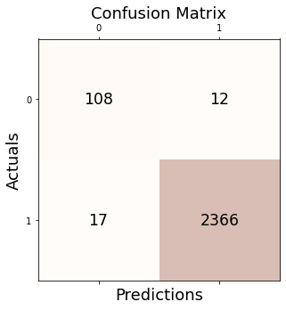
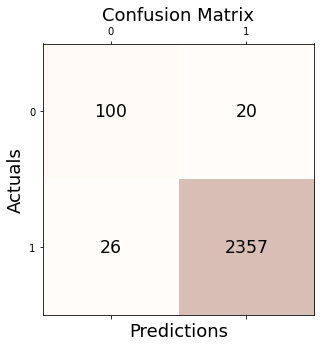
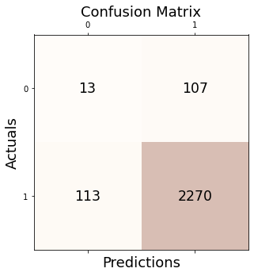

import numpy as np
import matplotlib.pyplot as plt
import matplotlib
from sklearn.svm import OneClassSVM
from sklearn.linear_model import SGDOneClassSVM
from sklearn.kernel_approximation import Nystroem
from sklearn.pipeline import make_pipeline
import pandas as pd
from sklearn.neighbors import LocalOutlierFactor
import rpy2
import rpy2.robjects as ro
from rpy2.robjects.vectors import FloatVector
from rpy2.robjects.packages import importr
from sklearn.datasets import fetch_kddcup99, fetch_covtype, fetch_openml
from sklearn.preprocessing import LabelBinarizer
import tqdm
from pygsp import graphs, filters, plotting, utils
from sklearn.metrics import confusion_matrix
from sklearn.metrics import precision_score, recall_score, f1_score, accuracy_score
import plotly.graph_objects as go
from IPython.display import HTML
import plotly.express as px
from sklearn.covariance import EmpiricalCovariance, MinCovDet
from alibi_detect.od import IForest
# from pyod.models.iforest import IForest
from pyod.models.abod import ABOD
from pyod.models.cblof import CBLOF
import seaborn as sns
from PyNomaly import loop
from sklearn import svm
from pyod.models.lscp import LSCP
from pyod.models.hbos import HBOS
from pyod.models.so_gaal import SO_GAAL
from pyod.models.mcd import MCD
from pyod.models.mo_gaal import MO_GAAL
from pyod.models.knn import KNN
from pyod.models.lof import LOF
from pyod.models.ocsvm import OCSVM
from pyod.models.feature_bagging import FeatureBagging
from pyod.models.sos import SOS
Note
knn, cblof, ocsvm 을 제외한 이상치 탐지 기법들에 데이터 집합에서 이상치 비율을 지정할 수 있는 옵션이 존재하였음.
default값은 10%인데, ABOD 방법에서는 5로 지정해주었고, 다른 방법들은 default인 10%가 들어갔다.
일단 우리 방법이랑 비교해서 좋은지 보기
\(U^\star\), which is a mixture of uniform distributions \(U(5,7)\) and \(U(-7,-5)\).
| Simple Linear 논문 | Accuracy | Precision | Recall | F1 |
|---|---|---|---|---|
| GODE | 0.998 | 0.998 | 1.000 | 0.994 |
| LOF (Breunig et al., 2000) | 0.871 | 0.962 | 0.900 | 0.930 |
| kNN (Ramaswamy et al., 2000) | 0.950 | 1.000 | 0.947 | 0.973 |
| CBLOF (He et al., 2003) | 0.972 | 0.985 | 0.985 | 0.985 |
| OCSVM (Sch ̈olkopf et al., 2001) | 0.940 | 0.994 | 0.942 | 0.968 |
| MCD (Hardin and Rocke, 2004) | 0.950 | 1.000 | 0.947 | 0.973 |
| Feature Bagging (Lazarevic and Kumar, 2005) | 0.950 | 1.000 | 0.947 | 0.973 |
| ABOD (Kriegel et al., 2008) | 0.988 | 0.994 | 0.994 | 0.994 |
| Isolation Forest (Liu et al., 2008) | 0.889 | 1.000 | 0.883 | 0.938 |
| HBOS (Goldstein and Dengel, 2012) | 0.960 | 0.978 | 0.980 | 0.979 |
| SOS (Janssens et al., 2012) | 0.960 | 0.978 | 0.980 | 0.979 |
| SO-GAAL (Liu et al., 2019) | 0.895 | 0.969 | 0.919 | 0.943 |
| MO-GAAL (Liu et al., 2019) | 0.896 | 0.970 | 0.919 | 0.944 |
| LSCP (Zhao et al., 2019) | 0.950 | 1.000 | 0.947 | 0.973 |
| Simple Linear 5% | Accuracy | Precision | Recall | F1 |
|---|---|---|---|---|
| GODE | 0.994 | 0.997 | 0.997 | 0.997 |
| LOF (Breunig et al., 2000) | 0.926 | 0.961 | 0.961 | 0.961 |
| KNN | ||||
| CBLOF | ||||
| OCSVM (Sch ̈olkopf et al., 2001) | ||||
| MCD (Hardin and Rocke, 2004) | 0.998 | 0.999 | 0.999 | 0.999 |
| Feature Bagging (Lazarevic and Kumar, 2005) | 0.984 | 0.992 | 0.992 | 0.992 |
| ABOD (Kriegel et al., 2008) | 0.988 | 0.994 | 0.994 | 0.994 |
| Isolation Forest (Liu et al., 2008) | 0.885 | 0.999 | 0.880 | 0.936 |
| HBOS (Goldstein and Dengel, 2012) | 0.960 | 0.978 | 0.980 | 0.979 |
| SOS (Janssens et al., 2012) | 0.916 | 0.956 | 0.956 | 0.956 |
| SO-GAAL (Liu et al., 2019) | 0.936 | 0.966 | 0.966 | 0.966 |
| MO-GAAL (Liu et al., 2019) | 0.943 | 0.966 | 0.975 | 0.970 |
| LSCP (Zhao et al., 2019) | 0.992 | 0.996 | 0.996 | 0.996 |
| Orbit 논문 | Accuracy | Precision | Recall | F1 |
|---|---|---|---|---|
| GODE | 0.997 | 0.997 | 1.000 | 0.998 |
| LOF (Breunig et al., 2000) | 0.886 | 0.987 | 0.892 | 0.937 |
| kNN (Ramaswamy et al., 2000) | 0.948 | 0.999 | 0.946 | 0.972 |
| CBLOF (He et al., 2003) | 0.918 | 0.957 | 0.957 | 0.957 |
| OCSVM (Sch ̈olkopf et al., 2001) | 0.923 | 0.988 | 0.931 | 0.958 |
| MCD (Hardin and Rocke, 2004) | 0.866 | 0.953 | 0.903 | 0.928 |
| Feature Bagging (Lazarevic and Kumar, 2005) | 0.912 | 0.979 | 0.927 | 0.952 |
| ABOD (Kriegel et al., 2008) | 0.988 | 0.994 | 0.994 | 0.994 |
| Isolation Forest (Liu et al., 2008) | 0.378 | 0.997 | 0.346 | 0.514 |
| HBOS (Goldstein and Dengel, 2012) | 0.881 | 0.961 | 0.912 | 0.936 |
| SOS (Janssens et al., 2012) | 0.881 | 0.961 | 0.912 | 0.936 |
| SO-GAAL (Liu et al., 2019) | 0.876 | 0.959 | 0.908 | 0.933 |
| MO-GAAL (Liu et al., 2019) | 0.950 | 0.950 | 1.000 | 0.974 |
| LSCP (Zhao et al., 2019) | 0.948 | 0.999 | 0.946 | 0.972 |
| Orbit 5% | Accuracy | Precision | Recall | F1 |
|---|---|---|---|---|
| GODE | 0.998 | 0.999 | 0.999 | 0.999 |
| LOF (Breunig et al., 2000) | 0.954 | 0.976 | 0.976 | 0.976 |
| KNN | ||||
| CBLOF | ||||
| OCSVM (Sch ̈olkopf et al., 2001) | ||||
| MCD (Hardin and Rocke, 2004) | 0.916 | 0.956 | 0.956 | 0.956 |
| Feature Bagging (Lazarevic and Kumar, 2005) | 0.942 | 0.969 | 0.969 | 0.969 |
| ABOD (Kriegel et al., 2008) | 0.988 | 0.994 | 0.994 | 0.994 |
| Isolation Forest (Liu et al., 2008) | 0.443 | 0.992 | 0.417 | 0.587 |
| HBOS (Goldstein and Dengel, 2012) | 0.935 | 0.960 | 0.973 | 0.966 |
| SOS (Janssens et al., 2012) | 0.950 | 0.974 | 0.974 | 0.974 |
| SO-GAAL (Liu et al., 2019) | 0.950 | 0.950 | 1.000 | 0.974 |
| MO-GAAL (Liu et al., 2019) | 0.950 | 0.950 | 1.000 | 0.974 |
| LSCP (Zhao et al., 2019) | 0.988 | 0.994 | 0.994 | 0.994 |
\(U^\star\), which is a mixture of uniform distributions \(U(3,7)\) and \(U(-7,-3)\).
| Stanford Bunny 논문 | Accuracy | Precision | Recall | F1 |
|---|---|---|---|---|
| GODE | 0.995 | 0.995 | 0.999 | 0.997 |
| LOF (Breunig et al., 2000) | 0.928 | 0.957 | 0.869 | 0.963 |
| kNN (Ramaswamy et al., 2000) | 0.940 | 0.996 | 0.941 | 0.968 |
| CBLOF (He et al., 2003) | 0.978 | 0.989 | 0.987 | 0.988 |
| OCSVM (Sch ̈olkopf et al., 2001) | 0.932 | 0.991 | 0.937 | 0.963 |
| MCD (Hardin and Rocke, 2004) | 0.935 | 0.993 | 0.938 | 0.965 |
| Feature Bagging (Lazarevic and Kumar, 2005) | 0.915 | 0.982 | 0.928 | 0.965 |
| ABOD (Kriegel et al., 2008) | 0.977 | 0.989 | 0.987 | 0.988 |
| Isolation Forest (Liu et al., 2008) | 0.794 | 0.995 | 0.788 | 0.879 |
| HBOS (Goldstein and Dengel, 2012) | 0.895 | 0.969 | 0.919 | 0.944 |
| SOS (Janssens et al., 2012) | 0.895 | 0.969 | 0.919 | 0.944 |
| SO-GAAL (Liu et al., 2019) | 0.952 | 0.952 | 1.000 | 0.975 |
| MO-GAAL (Liu et al., 2019) | 0.952 | 0.952 | 1.000 | 0.975 |
| LSCP (Zhao et al., 2019) | 0.940 | 0.996 | 0.941 | 0.967 |
| Stanford Bunny 5% | Accuracy | Precision | Recall | F1 |
|---|---|---|---|---|
| GODE | 0.988 | 0.995 | 0.993 | 0.994 |
| LOF (Breunig et al., 2000) | 0.913 | 0.955 | 0.953 | 0.954 |
| KNN | ||||
| CBLOF | ||||
| OCSVM (Sch ̈olkopf et al., 2001) | ||||
| MCD (Hardin and Rocke, 2004) | 0.982 | 0.992 | 0.989 | 0.990 |
| Feature Bagging (Lazarevic and Kumar, 2005) | 0.954 | 0.977 | 0.975 | 0.976 |
| ABOD (Kriegel et al., 2008) | 0.977 | 0.989 | 0.987 | 0.988 |
| Isolation Forest (Liu et al., 2008) | 0.802 | 0.996 | 0.795 | 0.884 |
| HBOS (Goldstein and Dengel, 2012) | 0.919 | 0.958 | 0.956 | 0.957 |
| SOS (Janssens et al., 2012) | 0.912 | 0.955 | 0.953 | 0.954 |
| SO-GAAL (Liu et al., 2019) | 0.952 | 0.952 | 1.000 | 0.975 |
| MO-GAAL (Liu et al., 2019) | 0.952 | 0.952 | 1.000 | 0.975 |
| LSCP (Zhao et al., 2019) | 0.980 | 0.991 | 0.988 | 0.989 |
Import
from pygsp import graphs, filters, plotting, utilsClass Code
tab_linear = pd.DataFrame(columns=["Accuracy","Precision","Recall","F1"])
tab_orbit = pd.DataFrame(columns=["Accuracy","Precision","Recall","F1"])
tab_bunny = pd.DataFrame(columns=["Accuracy","Precision","Recall","F1"])class Conf_matrx:
def __init__(self,original,compare,tab):
self.original = original
self.compare = compare
self.tab = tab
def conf(self,name):
self.conf_matrix = confusion_matrix(self.original, self.compare)
fig, ax = plt.subplots(figsize=(5, 5))
ax.matshow(self.conf_matrix, cmap=plt.cm.Oranges, alpha=0.3)
for i in range(self.conf_matrix.shape[0]):
for j in range(self.conf_matrix.shape[1]):
ax.text(x=j, y=i,s=self.conf_matrix[i, j], va='center', ha='center', size='xx-large')
plt.xlabel('Predictions', fontsize=18)
plt.ylabel('Actuals', fontsize=18)
plt.title('Confusion Matrix', fontsize=18)
plt.show()
self.acc = accuracy_score(self.original, self.compare)
self.pre = precision_score(self.original, self.compare)
self.rec = recall_score(self.original, self.compare)
self.f1 = f1_score(self.original, self.compare)
print('Accuracy: %.3f' % self.acc)
print('Precision: %.3f' % self.pre)
print('Recall: %.3f' % self.rec)
print('F1 Score: %.3f' % self.f1)
self.tab = self.tab.append(pd.DataFrame({"Accuracy":[self.acc],"Precision":[self.pre],"Recall":[self.rec],"F1":[self.f1]},index = [name]))class Linear:
def __init__(self,df):
self.df = df
self.y = df.y.to_numpy()
#self.y1 = df.y1.to_numpy()
self.x = df.x.to_numpy()
self.n = len(self.y)
self.W = w
def _eigen(self):
d= self.W.sum(axis=1)
D= np.diag(d)
self.L = np.diag(1/np.sqrt(d)) @ (D-self.W) @ np.diag(1/np.sqrt(d))
self.lamb, self.Psi = np.linalg.eigh(self.L)
self.Lamb = np.diag(self.lamb)
def fit(self,sd=20): # fit with ebayesthresh
self._eigen()
self.ybar = self.Psi.T @ self.y # fbar := graph fourier transform of f
self.power = self.ybar**2
ebayesthresh = importr('EbayesThresh').ebayesthresh
self.power_threshed=np.array(ebayesthresh(FloatVector(self.ybar**2),sd=sd))
self.ybar_threshed = np.where(self.power_threshed>0,self.ybar,0)
self.yhat = self.Psi@self.ybar_threshed
self.df = self.df.assign(yHat = self.yhat)
self.df = self.df.assign(Residual = self.df.y- self.df.yHat)class Orbit:
def __init__(self,df):
self.df = df
self.f = df.f.to_numpy()
self.x = df.x.to_numpy()
self.y = df.y.to_numpy()
self.n = len(self.f)
self.theta= None
def get_distance(self):
self.D = np.zeros([self.n,self.n])
locations = np.stack([self.x, self.y],axis=1)
for i in tqdm.tqdm(range(self.n)):
for j in range(i,self.n):
self.D[i,j]=np.linalg.norm(locations[i]-locations[j])
self.D = self.D + self.D.T
def get_weightmatrix(self,theta=1,beta=0.5,kappa=4000):
self.theta = theta
dist = np.where(self.D < kappa,self.D,0)
self.W = np.exp(-(dist/self.theta)**2)
def _eigen(self):
d= self.W.sum(axis=1)
D= np.diag(d)
self.L = np.diag(1/np.sqrt(d)) @ (D-self.W) @ np.diag(1/np.sqrt(d))
self.lamb, self.Psi = np.linalg.eigh(self.L)
self.Lamb = np.diag(self.lamb)
def fit(self,sd=5,ref=20): # fit with ebayesthresh
self._eigen()
self.fbar = self.Psi.T @ self.f # fbar := graph fourier transform of f
self.power = self.fbar**2
ebayesthresh = importr('EbayesThresh').ebayesthresh
self.power_threshed=np.array(ebayesthresh(FloatVector(self.fbar**2),sd=sd))
self.fbar_threshed = np.where(self.power_threshed>0,self.fbar,0)
self.fhat = self.Psi@self.fbar_threshed
self.df = self.df.assign(fHat = self.fhat)
self.df = self.df.assign(Residual = self.df.f- self.df.fHat)
self.bottom = np.zeros_like(self.f)
self.width=0.05
self.depth=0.05class BUNNY:
def __init__(self,df):
self.df = df
self.f = df.f.to_numpy()
self.z = df.z.to_numpy()
self.x = df.x.to_numpy()
self.y = df.y.to_numpy()
self.noise = df.noise.to_numpy()
self.fnoise = self.f + self.noise
self.W = _W
self.n = len(self.f)
self.theta= None
def _eigen(self):
d= self.W.sum(axis=1)
D= np.diag(d)
self.L = np.diag(1/np.sqrt(d)) @ (D-self.W) @ np.diag(1/np.sqrt(d))
self.lamb, self.Psi = np.linalg.eigh(self.L)
self.Lamb = np.diag(self.lamb)
def fit(self,sd=5,ref=6): # fit with ebayesthresh
self._eigen()
self.fbar = self.Psi.T @ self.fnoise # fbar := graph fourier transform of f
self.power = self.fbar**2
ebayesthresh = importr('EbayesThresh').ebayesthresh
self.power_threshed=np.array(ebayesthresh(FloatVector(self.fbar**2),sd=sd))
self.fbar_threshed = np.where(self.power_threshed>0,self.fbar,0)
self.fhat = self.Psi@self.fbar_threshed
self.df = self.df.assign(fnoise = self.fnoise)
self.df = self.df.assign(fHat = self.fhat)
self.df = self.df.assign(Residual = self.df.f + self.df.noise - self.df.fHat)
self.bottom = np.zeros_like(self.f)
self.width=0.05
self.depth=0.05Linear EbayesThresh
%load_ext rpy2.ipythonThe rpy2.ipython extension is already loaded. To reload it, use:
%reload_ext rpy2.ipython%%R
library(EbayesThresh)
set.seed(1)
epsilon = rnorm(1000)
# signal_1 = sample(c(runif(25,-2,-1.5), runif(25,1.5,2), rep(0,950)))
signal_1 = sample(c(runif(25,-7,-5), runif(25,5,7), rep(0,950)))
index_of_trueoutlier_1 = which(signal_1!=0)
index_of_trueoutlier_1
x_1=signal_1+epsilon%R -o x_1
%R -o index_of_trueoutlier_1
%R -o signal_1ebayesthresh = importr('EbayesThresh').ebayesthreshoutlier_true_index_1 = index_of_trueoutlier_1outlier_true_value_1 = x_1[index_of_trueoutlier_1]outlier_true_one_1 = signal_1.copy()outlier_true_one_1 = list(map(lambda x: -1 if x!=0 else 1,outlier_true_one_1))Linear
_x_1 = np.linspace(0,2,1000)
_y1_1 = 5*_x_1
_y_1 = _y1_1 + x_1 # x is epsilon_df=pd.DataFrame({'x':_x_1, 'y':_y_1})X = np.array(_df)GODE
w=np.zeros((1000,1000))for i in range(1000):
for j in range(1000):
if i==j :
w[i,j] = 0
elif np.abs(i-j) <= 1 :
w[i,j] = 1_Linear = Linear(_df)_Linear.fit(sd=5)outlier_simul_one = (_Linear.df['Residual']**2).tolist()outlier_simul_one = list(map(lambda x: -1 if x > 10.7 else 1,outlier_simul_one))_conf = Conf_matrx(outlier_true_one_1,outlier_simul_one,tab_linear)outlier_simul_one.count(1)950outlier_simul_one.count(-1)50_conf.conf("GODE")
Accuracy: 0.994
Precision: 0.997
Recall: 0.997
F1 Score: 0.997FutureWarning: The frame.append method is deprecated and will be removed from pandas in a future version. Use pandas.concat instead.
self.tab = self.tab.append(pd.DataFrame({"Accuracy":[self.acc],"Precision":[self.pre],"Recall":[self.rec],"F1":[self.f1]},index = [name]))_conf.tab| Accuracy | Precision | Recall | F1 | |
|---|---|---|---|---|
| GODE | 0.994 | 0.996842 | 0.996842 | 0.996842 |
LOF(Breunig et al. 2000)\(\star\)
clf = LocalOutlierFactor(n_neighbors=2,contamination=0.05)Lof 논문 원문에 따라 LOF를 계산하고, min-max 범위를 넘으면 이상치

_conf = Conf_matrx(outlier_true_one_1,clf.fit_predict(X),tab_linear)_conf.conf("LOF (Breunig et al., 2000)")
Accuracy: 0.926
Precision: 0.961
Recall: 0.961
F1 Score: 0.961FutureWarning: The frame.append method is deprecated and will be removed from pandas in a future version. Use pandas.concat instead.
self.tab = self.tab.append(pd.DataFrame({"Accuracy":[self.acc],"Precision":[self.pre],"Recall":[self.rec],"F1":[self.f1]},index = [name]))tab_linear.append(_conf.tab)FutureWarning: The frame.append method is deprecated and will be removed from pandas in a future version. Use pandas.concat instead.
tab_linear.append(_conf.tab)| Accuracy | Precision | Recall | F1 | |
|---|---|---|---|---|
| LOF (Breunig et al., 2000) | 0.926 | 0.961053 | 0.961053 | 0.961053 |
KNN
from pyod.models.knn import KNNclf = KNN()
clf.fit(_df[['x', 'y']])
_df['knn_Clf'] = clf.labels_k번째 이상은 outlier로 본다.
이상치 비율 정하지 않음
Three kNN detectors are supported:
- largest: use the distance to the kth neighbor as the outlier score
- mean: use the average of all k neighbors as the outlier score
- median: use the median of the distance to k neighbors as the outlier score
outlier_KNN_one = list(clf.labels_)outlier_KNN_one = list(map(lambda x: 1 if x==0 else -1,outlier_KNN_one))_conf = Conf_matrx(outlier_true_one_1,outlier_KNN_one,tab_linear)_conf.conf("kNN (Ramaswamy et al., 2000)")three = two.append(_conf.tab)CBLOF(오류)
clf = CBLOF(contamination=0.05,check_estimator=False, random_state=77)
clf.fit(_df[['x', 'y']])
_df['CBLOF_Clf'] = clf.labels_outlier_CBLOF_one = list(clf.labels_)outlier_CBLOF_one = list(map(lambda x: 1 if x==0 else -1,outlier_CBLOF_one))_conf = Conf_matrx(outlier_true_one_1,outlier_CBLOF_one,tab_linear)_conf.conf("CBLOF (He et al., 2003)")four = three.append(_conf.tab)OCSVM
default=10%
clf = svm.OneClassSVM(nu=0.1, kernel="rbf", gamma=0.05)clf.fit(X)OneClassSVM(gamma=0.05, nu=0.1)In a Jupyter environment, please rerun this cell to show the HTML representation or trust the notebook.
On GitHub, the HTML representation is unable to render, please try loading this page with nbviewer.org.
OneClassSVM(gamma=0.05, nu=0.1)
outlier_OSVM_one = list(clf.predict(X))_conf = Conf_matrx(outlier_true_one_1,outlier_OSVM_one,tab_linear)_conf.conf("OCSVM (Sch ̈olkopf et al., 2001)")Accuracy: 0.935
Precision: 0.991
Recall: 0.940
F1 Score: 0.965FutureWarning: The frame.append method is deprecated and will be removed from pandas in a future version. Use pandas.concat instead.
self.tab = self.tab.append(pd.DataFrame({"Accuracy":[self.acc],"Precision":[self.pre],"Recall":[self.rec],"F1":[self.f1]},index = [name]))_conf.tab| Accuracy | Precision | Recall | F1 | |
|---|---|---|---|---|
| OCSVM (Sch ̈olkopf et al., 2001) | 0.935 | 0.991121 | 0.94 | 0.964884 |
MCD\(\star\)
clf = MCD(contamination=0.05)
clf.fit(_df[['x', 'y']])
_df['MCD_clf'] = clf.labels_outlier_MCD_one = list(clf.labels_)outlier_MCD_one = list(map(lambda x: 1 if x==0 else -1,outlier_MCD_one))_conf = Conf_matrx(outlier_true_one_1,outlier_MCD_one,tab_linear)_conf.conf("MCD (Hardin and Rocke, 2004)")Accuracy: 0.998
Precision: 0.999
Recall: 0.999
F1 Score: 0.999FutureWarning: The frame.append method is deprecated and will be removed from pandas in a future version. Use pandas.concat instead.
self.tab = self.tab.append(pd.DataFrame({"Accuracy":[self.acc],"Precision":[self.pre],"Recall":[self.rec],"F1":[self.f1]},index = [name]))_conf.tab| Accuracy | Precision | Recall | F1 | |
|---|---|---|---|---|
| MCD (Hardin and Rocke, 2004) | 0.998 | 0.998947 | 0.998947 | 0.998947 |
Feature Bagging\(\star\)
default값은 10%로 설정되어 있었고, 5%로 지정한 결과, 평가지표값이 전반적으로 1%이상 낮아졌다.
clf = FeatureBagging(contamination=0.05)
clf.fit(_df[['x', 'y']])
_df['FeatureBagging_clf'] = clf.labels_outlier_FeatureBagging_one = list(clf.labels_)outlier_FeatureBagging_one = list(map(lambda x: 1 if x==0 else -1,outlier_FeatureBagging_one))_conf = Conf_matrx(outlier_true_one_1,outlier_FeatureBagging_one,tab_linear)_conf.conf("Feature Bagging (Lazarevic and Kumar, 2005)")
Accuracy: 0.984
Precision: 0.992
Recall: 0.992
F1 Score: 0.992FutureWarning: The frame.append method is deprecated and will be removed from pandas in a future version. Use pandas.concat instead.
self.tab = self.tab.append(pd.DataFrame({"Accuracy":[self.acc],"Precision":[self.pre],"Recall":[self.rec],"F1":[self.f1]},index = [name]))_conf.tab| Accuracy | Precision | Recall | F1 | |
|---|---|---|---|---|
| Feature Bagging (Lazarevic and Kumar, 2005) | 0.984 | 0.991579 | 0.991579 | 0.991579 |
ABOD\(\star\)
default 값이 5%이며, 이미 지정된 채려 시뮬레이션 돌림
clf = ABOD(contamination=0.05)
clf.fit(_df[['x', 'y']])
_df['ABOD_Clf'] = clf.labels_contamination : float in (0., 0.5), optional (default=0.1)
- The amount of contamination of the data set, i.e.
- the proportion of outliers in the data set. Used when fitting to define the threshold on the decision function.
outlier_ABOD_one = list(clf.labels_)outlier_ABOD_one = list(map(lambda x: 1 if x==0 else -1,outlier_ABOD_one))_conf = Conf_matrx(outlier_true_one_1,outlier_ABOD_one,tab_linear)_conf.conf("ABOD (Kriegel et al., 2008)")
Accuracy: 0.988
Precision: 0.994
Recall: 0.994
F1 Score: 0.994FutureWarning: The frame.append method is deprecated and will be removed from pandas in a future version. Use pandas.concat instead.
self.tab = self.tab.append(pd.DataFrame({"Accuracy":[self.acc],"Precision":[self.pre],"Recall":[self.rec],"F1":[self.f1]},index = [name]))_conf.tab| Accuracy | Precision | Recall | F1 | |
|---|---|---|---|---|
| ABOD (Kriegel et al., 2008) | 0.988 | 0.993684 | 0.993684 | 0.993684 |
IForest\(\star\)
n_estimators Number of base estimators in the ensemble.
- n이 총 1000개니까 5%인 50 지정해줄 수 있음
od = IForest(
threshold=0.,
n_estimators=50
)od.fit(_df[['x', 'y']])preds = od.predict(
_df[['x', 'y']],
return_instance_score=True
)_df['IF_alibi'] = preds['data']['is_outlier']outlier_alibi_one = _df['IF_alibi']outlier_alibi_one = list(map(lambda x: 1 if x==0 else -1,outlier_alibi_one))_conf = Conf_matrx(outlier_true_one_1,outlier_alibi_one,tab_linear)_conf.conf("Isolation Forest (Liu et al., 2008)")
Accuracy: 0.885
Precision: 0.999
Recall: 0.880
F1 Score: 0.936FutureWarning: The frame.append method is deprecated and will be removed from pandas in a future version. Use pandas.concat instead.
self.tab = self.tab.append(pd.DataFrame({"Accuracy":[self.acc],"Precision":[self.pre],"Recall":[self.rec],"F1":[self.f1]},index = [name]))_conf.tab| Accuracy | Precision | Recall | F1 | |
|---|---|---|---|---|
| Isolation Forest (Liu et al., 2008) | 0.885 | 0.998805 | 0.88 | 0.935646 |
HBOS\(\star\)
default값은 이상치값을 10%로 지정하였으며, 5%로 지정한 결과 값 다 작아짐
clf = HBOS(contamination=0.05)
clf.fit(_df[['x', 'y']])
_df['HBOS_clf'] = clf.labels_outlier_HBOS_one = list(clf.labels_)outlier_HBOS_one = list(map(lambda x: 1 if x==0 else -1,outlier_HBOS_one))_conf = Conf_matrx(outlier_true_one_1,outlier_HBOS_one,tab_linear)_conf.conf("HBOS (Goldstein and Dengel, 2012)")Accuracy: 0.960
Precision: 0.978
Recall: 0.980
F1 Score: 0.979FutureWarning: The frame.append method is deprecated and will be removed from pandas in a future version. Use pandas.concat instead.
self.tab = self.tab.append(pd.DataFrame({"Accuracy":[self.acc],"Precision":[self.pre],"Recall":[self.rec],"F1":[self.f1]},index = [name]))_conf.tab| Accuracy | Precision | Recall | F1 | |
|---|---|---|---|---|
| HBOS (Goldstein and Dengel, 2012) | 0.96 | 0.977941 | 0.98 | 0.97897 |
SOS\(\star\)
default 는 10%
clf = SOS(contamination=0.05)
clf.fit(_df[['x', 'y']])
_df['SOS_clf'] = clf.labels_outlier_SOS_one = list(clf.labels_)outlier_SOS_one = list(map(lambda x: 1 if x==0 else -1,outlier_SOS_one))_conf = Conf_matrx(outlier_true_one_1,outlier_SOS_one,tab_linear)_conf.conf("SOS (Janssens et al., 2012)")
Accuracy: 0.916
Precision: 0.956
Recall: 0.956
F1 Score: 0.956FutureWarning: The frame.append method is deprecated and will be removed from pandas in a future version. Use pandas.concat instead.
self.tab = self.tab.append(pd.DataFrame({"Accuracy":[self.acc],"Precision":[self.pre],"Recall":[self.rec],"F1":[self.f1]},index = [name]))_conf.tab| Accuracy | Precision | Recall | F1 | |
|---|---|---|---|---|
| SOS (Janssens et al., 2012) | 0.916 | 0.955789 | 0.955789 | 0.955789 |
SO_GAAL
clf = SO_GAAL(contamination=0.05)
clf.fit(_df[['x', 'y']])
_df['SO_GAAL_clf'] = clf.labels_Epoch 1 of 60
Testing for epoch 1 index 1:/home/csy/anaconda3/envs/temp_csy/lib/python3.8/site-packages/keras/optimizers/legacy/gradient_descent.py:114: UserWarning: The `lr` argument is deprecated, use `learning_rate` instead.
super().__init__(name, **kwargs)
Testing for epoch 1 index 2:
Epoch 2 of 60
Testing for epoch 2 index 1:
Testing for epoch 2 index 2:
Epoch 3 of 60
Testing for epoch 3 index 1:
Testing for epoch 3 index 2:
Epoch 4 of 60
Testing for epoch 4 index 1:
Testing for epoch 4 index 2:
Epoch 5 of 60
Testing for epoch 5 index 1:
Testing for epoch 5 index 2:
Epoch 6 of 60
Testing for epoch 6 index 1:
Testing for epoch 6 index 2:
Epoch 7 of 60
Testing for epoch 7 index 1:
Testing for epoch 7 index 2:
Epoch 8 of 60
Testing for epoch 8 index 1:
Testing for epoch 8 index 2:
Epoch 9 of 60
Testing for epoch 9 index 1:
Testing for epoch 9 index 2:
Epoch 10 of 60
Testing for epoch 10 index 1:
Testing for epoch 10 index 2:
Epoch 11 of 60
Testing for epoch 11 index 1:
Testing for epoch 11 index 2:
Epoch 12 of 60
Testing for epoch 12 index 1:
Testing for epoch 12 index 2:
Epoch 13 of 60
Testing for epoch 13 index 1:
Testing for epoch 13 index 2:
Epoch 14 of 60
Testing for epoch 14 index 1:
Testing for epoch 14 index 2:
Epoch 15 of 60
Testing for epoch 15 index 1:
Testing for epoch 15 index 2:
Epoch 16 of 60
Testing for epoch 16 index 1:
Testing for epoch 16 index 2:
Epoch 17 of 60
Testing for epoch 17 index 1:
Testing for epoch 17 index 2:
Epoch 18 of 60
Testing for epoch 18 index 1:
Testing for epoch 18 index 2:
Epoch 19 of 60
Testing for epoch 19 index 1:
Testing for epoch 19 index 2:
Epoch 20 of 60
Testing for epoch 20 index 1:
Testing for epoch 20 index 2:
Epoch 21 of 60
Testing for epoch 21 index 1:
Testing for epoch 21 index 2:
Epoch 22 of 60
Testing for epoch 22 index 1:
16/16 [==============================] - 0s 862us/step - loss: 1.0640
Testing for epoch 22 index 2:
16/16 [==============================] - 0s 827us/step - loss: 1.0818
Epoch 23 of 60
Testing for epoch 23 index 1:
16/16 [==============================] - 0s 853us/step - loss: 1.0984
Testing for epoch 23 index 2:
16/16 [==============================] - 0s 846us/step - loss: 1.1023
Epoch 24 of 60
Testing for epoch 24 index 1:
16/16 [==============================] - 0s 851us/step - loss: 1.1116
Testing for epoch 24 index 2:
16/16 [==============================] - 0s 830us/step - loss: 1.1127
Epoch 25 of 60
Testing for epoch 25 index 1:
16/16 [==============================] - 0s 815us/step - loss: 1.1359
Testing for epoch 25 index 2:
16/16 [==============================] - 0s 812us/step - loss: 1.1429
Epoch 26 of 60
Testing for epoch 26 index 1:
16/16 [==============================] - 0s 808us/step - loss: 1.1177
Testing for epoch 26 index 2:
16/16 [==============================] - 0s 785us/step - loss: 1.1457
Epoch 27 of 60
Testing for epoch 27 index 1:
16/16 [==============================] - 0s 805us/step - loss: 1.1468
Testing for epoch 27 index 2:
16/16 [==============================] - 0s 802us/step - loss: 1.1501
Epoch 28 of 60
Testing for epoch 28 index 1:
16/16 [==============================] - 0s 802us/step - loss: 1.1816
Testing for epoch 28 index 2:
16/16 [==============================] - 0s 797us/step - loss: 1.1725
Epoch 29 of 60
Testing for epoch 29 index 1:
16/16 [==============================] - 0s 796us/step - loss: 1.1822
Testing for epoch 29 index 2:
16/16 [==============================] - 0s 798us/step - loss: 1.1752
Epoch 30 of 60
Testing for epoch 30 index 1:
16/16 [==============================] - 0s 868us/step - loss: 1.1898
Testing for epoch 30 index 2:
16/16 [==============================] - 0s 805us/step - loss: 1.2337
Epoch 31 of 60
Testing for epoch 31 index 1:
16/16 [==============================] - 0s 819us/step - loss: 1.2280
Testing for epoch 31 index 2:
16/16 [==============================] - 0s 1ms/step - loss: 1.2237
Epoch 32 of 60
Testing for epoch 32 index 1:
16/16 [==============================] - 0s 816us/step - loss: 1.2403
Testing for epoch 32 index 2:
16/16 [==============================] - 0s 1ms/step - loss: 1.2572
Epoch 33 of 60
Testing for epoch 33 index 1:
16/16 [==============================] - 0s 1ms/step - loss: 1.2652
Testing for epoch 33 index 2:
16/16 [==============================] - 0s 809us/step - loss: 1.2678
Epoch 34 of 60
Testing for epoch 34 index 1:
16/16 [==============================] - 0s 801us/step - loss: 1.2597
Testing for epoch 34 index 2:
16/16 [==============================] - 0s 801us/step - loss: 1.2931
Epoch 35 of 60
Testing for epoch 35 index 1:
16/16 [==============================] - 0s 804us/step - loss: 1.2927
Testing for epoch 35 index 2:
16/16 [==============================] - 0s 815us/step - loss: 1.3224
Epoch 36 of 60
Testing for epoch 36 index 1:
16/16 [==============================] - 0s 808us/step - loss: 1.3126
Testing for epoch 36 index 2:
16/16 [==============================] - 0s 812us/step - loss: 1.3397
Epoch 37 of 60
Testing for epoch 37 index 1:
16/16 [==============================] - 0s 802us/step - loss: 1.3516
Testing for epoch 37 index 2:
16/16 [==============================] - 0s 798us/step - loss: 1.3297
Epoch 38 of 60
Testing for epoch 38 index 1:
16/16 [==============================] - 0s 800us/step - loss: 1.3493
Testing for epoch 38 index 2:
16/16 [==============================] - 0s 826us/step - loss: 1.3447
Epoch 39 of 60
Testing for epoch 39 index 1:
16/16 [==============================] - 0s 803us/step - loss: 1.3573
Testing for epoch 39 index 2:
16/16 [==============================] - 0s 799us/step - loss: 1.3643
Epoch 40 of 60
Testing for epoch 40 index 1:
16/16 [==============================] - 0s 809us/step - loss: 1.3702
Testing for epoch 40 index 2:
16/16 [==============================] - 0s 800us/step - loss: 1.4059
Epoch 41 of 60
Testing for epoch 41 index 1:
16/16 [==============================] - 0s 802us/step - loss: 1.4023
Testing for epoch 41 index 2:
16/16 [==============================] - 0s 875us/step - loss: 1.3997
Epoch 42 of 60
Testing for epoch 42 index 1:
16/16 [==============================] - 0s 796us/step - loss: 1.4110
Testing for epoch 42 index 2:
16/16 [==============================] - 0s 796us/step - loss: 1.4132
Epoch 43 of 60
Testing for epoch 43 index 1:
16/16 [==============================] - 0s 791us/step - loss: 1.4308
Testing for epoch 43 index 2:
16/16 [==============================] - 0s 804us/step - loss: 1.4205
Epoch 44 of 60
Testing for epoch 44 index 1:
16/16 [==============================] - 0s 801us/step - loss: 1.4429
Testing for epoch 44 index 2:
16/16 [==============================] - 0s 785us/step - loss: 1.4500
Epoch 45 of 60
Testing for epoch 45 index 1:
16/16 [==============================] - 0s 813us/step - loss: 1.4560
Testing for epoch 45 index 2:
16/16 [==============================] - 0s 1ms/step - loss: 1.4629
Epoch 46 of 60
Testing for epoch 46 index 1:
16/16 [==============================] - 0s 1ms/step - loss: 1.4531
Testing for epoch 46 index 2:
16/16 [==============================] - 0s 1ms/step - loss: 1.4627
Epoch 47 of 60
Testing for epoch 47 index 1:
16/16 [==============================] - 0s 868us/step - loss: 1.4971
Testing for epoch 47 index 2:
16/16 [==============================] - 0s 871us/step - loss: 1.5024
Epoch 48 of 60
Testing for epoch 48 index 1:
16/16 [==============================] - 0s 801us/step - loss: 1.4855
Testing for epoch 48 index 2:
16/16 [==============================] - 0s 877us/step - loss: 1.5128
Epoch 49 of 60
Testing for epoch 49 index 1:
16/16 [==============================] - 0s 872us/step - loss: 1.5061
Testing for epoch 49 index 2:
16/16 [==============================] - 0s 872us/step - loss: 1.5104
Epoch 50 of 60
Testing for epoch 50 index 1:
16/16 [==============================] - 0s 871us/step - loss: 1.5186
Testing for epoch 50 index 2:
16/16 [==============================] - 0s 890us/step - loss: 1.5191
Epoch 51 of 60
Testing for epoch 51 index 1:
16/16 [==============================] - 0s 690us/step - loss: 1.5765
Testing for epoch 51 index 2:
16/16 [==============================] - 0s 802us/step - loss: 1.5212
Epoch 52 of 60
Testing for epoch 52 index 1:
16/16 [==============================] - 0s 1ms/step - loss: 1.5610
Testing for epoch 52 index 2:
16/16 [==============================] - 0s 2ms/step - loss: 1.5390
Epoch 53 of 60
Testing for epoch 53 index 1:
16/16 [==============================] - 0s 822us/step - loss: 1.5472
Testing for epoch 53 index 2:
16/16 [==============================] - 0s 1ms/step - loss: 1.5762
Epoch 54 of 60
Testing for epoch 54 index 1:
16/16 [==============================] - 0s 2ms/step - loss: 1.5946
Testing for epoch 54 index 2:
16/16 [==============================] - 0s 988us/step - loss: 1.6020
Epoch 55 of 60
Testing for epoch 55 index 1:
16/16 [==============================] - 0s 2ms/step - loss: 1.6007
Testing for epoch 55 index 2:
16/16 [==============================] - 0s 2ms/step - loss: 1.5847
Epoch 56 of 60
Testing for epoch 56 index 1:
16/16 [==============================] - 0s 2ms/step - loss: 1.5918
Testing for epoch 56 index 2:
16/16 [==============================] - 0s 795us/step - loss: 1.6119
Epoch 57 of 60
Testing for epoch 57 index 1:
16/16 [==============================] - 0s 1ms/step - loss: 1.6314
Testing for epoch 57 index 2:
16/16 [==============================] - 0s 1ms/step - loss: 1.6356
Epoch 58 of 60
Testing for epoch 58 index 1:
16/16 [==============================] - 0s 959us/step - loss: 1.6195
Testing for epoch 58 index 2:
16/16 [==============================] - 0s 2ms/step - loss: 1.6137
Epoch 59 of 60
Testing for epoch 59 index 1:
16/16 [==============================] - 0s 848us/step - loss: 1.6543
Testing for epoch 59 index 2:
16/16 [==============================] - 0s 1ms/step - loss: 1.6529
Epoch 60 of 60
Testing for epoch 60 index 1:
16/16 [==============================] - 0s 790us/step - loss: 1.6446
Testing for epoch 60 index 2:
16/16 [==============================] - 0s 2ms/step - loss: 1.6672
32/32 [==============================] - 0s 572us/stepoutlier_SO_GAAL_one = list(clf.labels_)outlier_SO_GAAL_one = list(map(lambda x: 1 if x==0 else -1,outlier_SO_GAAL_one))_conf = Conf_matrx(outlier_true_one_1,outlier_SO_GAAL_one,tab_linear)_conf.conf("SO-GAAL (Liu et al., 2019)")Accuracy: 0.936
Precision: 0.966
Recall: 0.966
F1 Score: 0.966FutureWarning: The frame.append method is deprecated and will be removed from pandas in a future version. Use pandas.concat instead.
self.tab = self.tab.append(pd.DataFrame({"Accuracy":[self.acc],"Precision":[self.pre],"Recall":[self.rec],"F1":[self.f1]},index = [name]))_conf.tab| Accuracy | Precision | Recall | F1 | |
|---|---|---|---|---|
| SO-GAAL (Liu et al., 2019) | 0.936 | 0.966316 | 0.966316 | 0.966316 |
MO_GAAL\(\star\)
clf = MO_GAAL(contamination=0.05)
clf.fit(_df[['x', 'y']])
_df['MO_GAAL_clf'] = clf.labels_/home/csy/anaconda3/envs/temp_csy/lib/python3.8/site-packages/keras/optimizers/legacy/gradient_descent.py:114: UserWarning: The `lr` argument is deprecated, use `learning_rate` instead.
super().__init__(name, **kwargs)Epoch 1 of 60
Testing for epoch 1 index 1:
32/32 [==============================] - 0s 1ms/step
Testing for epoch 1 index 2:
32/32 [==============================] - 0s 1ms/step
Epoch 2 of 60
Testing for epoch 2 index 1:
32/32 [==============================] - 0s 1ms/step
Testing for epoch 2 index 2:
32/32 [==============================] - 0s 1ms/step
Epoch 3 of 60
Testing for epoch 3 index 1:
32/32 [==============================] - 0s 578us/step
Testing for epoch 3 index 2:
32/32 [==============================] - 0s 588us/step
Epoch 4 of 60
Testing for epoch 4 index 1:
32/32 [==============================] - 0s 2ms/step
Testing for epoch 4 index 2:
32/32 [==============================] - 0s 830us/step
Epoch 5 of 60
Testing for epoch 5 index 1:
32/32 [==============================] - 0s 560us/step
Testing for epoch 5 index 2:
32/32 [==============================] - 0s 947us/step
Epoch 6 of 60
Testing for epoch 6 index 1:
32/32 [==============================] - 0s 1ms/step
Testing for epoch 6 index 2:
32/32 [==============================] - 0s 1ms/step
Epoch 7 of 60
Testing for epoch 7 index 1:
32/32 [==============================] - 0s 568us/step
Testing for epoch 7 index 2:
32/32 [==============================] - 0s 601us/step
Epoch 8 of 60
Testing for epoch 8 index 1:
32/32 [==============================] - 0s 635us/step
Testing for epoch 8 index 2:
32/32 [==============================] - 0s 1ms/step
Epoch 9 of 60
Testing for epoch 9 index 1:
32/32 [==============================] - 0s 617us/step
Testing for epoch 9 index 2:
32/32 [==============================] - 0s 616us/step
Epoch 10 of 60
Testing for epoch 10 index 1:
32/32 [==============================] - 0s 620us/step
Testing for epoch 10 index 2:
32/32 [==============================] - 0s 696us/step
Epoch 11 of 60
Testing for epoch 11 index 1:
32/32 [==============================] - 0s 620us/step
Testing for epoch 11 index 2:
32/32 [==============================] - 0s 633us/step
Epoch 12 of 60
Testing for epoch 12 index 1:
32/32 [==============================] - 0s 696us/step
Testing for epoch 12 index 2:
32/32 [==============================] - 0s 696us/step
Epoch 13 of 60
Testing for epoch 13 index 1:
32/32 [==============================] - 0s 615us/step
Testing for epoch 13 index 2:
32/32 [==============================] - 0s 598us/step
Epoch 14 of 60
Testing for epoch 14 index 1:
32/32 [==============================] - 0s 844us/step
Testing for epoch 14 index 2:
32/32 [==============================] - 0s 627us/step
Epoch 15 of 60
Testing for epoch 15 index 1:
32/32 [==============================] - 0s 869us/step
Testing for epoch 15 index 2:
32/32 [==============================] - 0s 615us/step
Epoch 16 of 60
Testing for epoch 16 index 1:
32/32 [==============================] - 0s 615us/step
Testing for epoch 16 index 2:
32/32 [==============================] - 0s 826us/step
Epoch 17 of 60
Testing for epoch 17 index 1:
32/32 [==============================] - 0s 614us/step
Testing for epoch 17 index 2:
32/32 [==============================] - 0s 872us/step
Epoch 18 of 60
Testing for epoch 18 index 1:
32/32 [==============================] - 0s 622us/step
Testing for epoch 18 index 2:
32/32 [==============================] - 0s 614us/step
Epoch 19 of 60
Testing for epoch 19 index 1:
32/32 [==============================] - 0s 702us/step
Testing for epoch 19 index 2:
32/32 [==============================] - 0s 616us/step
Epoch 20 of 60
Testing for epoch 20 index 1:
32/32 [==============================] - 0s 623us/step
Testing for epoch 20 index 2:
32/32 [==============================] - 0s 631us/step
Epoch 21 of 60
Testing for epoch 21 index 1:
32/32 [==============================] - 0s 629us/step
Testing for epoch 21 index 2:
32/32 [==============================] - 0s 614us/step
16/16 [==============================] - 0s 831us/step - loss: 0.2442
16/16 [==============================] - 0s 830us/step - loss: 0.7355
16/16 [==============================] - 0s 827us/step - loss: 1.0992
16/16 [==============================] - 0s 896us/step - loss: 1.3980
16/16 [==============================] - 0s 876us/step - loss: 1.5344
16/16 [==============================] - 0s 844us/step - loss: 1.6077
16/16 [==============================] - 0s 849us/step - loss: 1.6388
16/16 [==============================] - 0s 808us/step - loss: 1.6578
16/16 [==============================] - 0s 829us/step - loss: 1.6642
16/16 [==============================] - 0s 805us/step - loss: 1.6662
Epoch 22 of 60
Testing for epoch 22 index 1:
32/32 [==============================] - 0s 622us/step
16/16 [==============================] - 0s 817us/step - loss: 0.2554
16/16 [==============================] - 0s 831us/step - loss: 0.7341
16/16 [==============================] - 0s 812us/step - loss: 1.0999
16/16 [==============================] - 0s 849us/step - loss: 1.3911
16/16 [==============================] - 0s 828us/step - loss: 1.5222
16/16 [==============================] - 0s 819us/step - loss: 1.5852
16/16 [==============================] - 0s 800us/step - loss: 1.6118
16/16 [==============================] - 0s 808us/step - loss: 1.6276
16/16 [==============================] - 0s 799us/step - loss: 1.6324
16/16 [==============================] - 0s 825us/step - loss: 1.6339
Testing for epoch 22 index 2:
32/32 [==============================] - 0s 610us/step
16/16 [==============================] - 0s 843us/step - loss: 0.2366
16/16 [==============================] - 0s 797us/step - loss: 0.7465
16/16 [==============================] - 0s 819us/step - loss: 1.1457
16/16 [==============================] - 0s 786us/step - loss: 1.4587
16/16 [==============================] - 0s 824us/step - loss: 1.5968
16/16 [==============================] - 0s 841us/step - loss: 1.6577
16/16 [==============================] - 0s 827us/step - loss: 1.6835
16/16 [==============================] - 0s 808us/step - loss: 1.6982
16/16 [==============================] - 0s 807us/step - loss: 1.7024
16/16 [==============================] - 0s 835us/step - loss: 1.7036
Epoch 23 of 60
Testing for epoch 23 index 1:
32/32 [==============================] - 0s 602us/step
16/16 [==============================] - 0s 805us/step - loss: 0.2361
16/16 [==============================] - 0s 793us/step - loss: 0.7428
16/16 [==============================] - 0s 794us/step - loss: 1.1534
16/16 [==============================] - 0s 814us/step - loss: 1.4658
16/16 [==============================] - 0s 800us/step - loss: 1.5961
16/16 [==============================] - 0s 807us/step - loss: 1.6504
16/16 [==============================] - 0s 820us/step - loss: 1.6722
16/16 [==============================] - 0s 793us/step - loss: 1.6837
16/16 [==============================] - 0s 795us/step - loss: 1.6869
16/16 [==============================] - 0s 798us/step - loss: 1.6878
Testing for epoch 23 index 2:
32/32 [==============================] - 0s 611us/step
16/16 [==============================] - 0s 805us/step - loss: 0.2431
16/16 [==============================] - 0s 805us/step - loss: 0.7496
16/16 [==============================] - 0s 800us/step - loss: 1.1677
16/16 [==============================] - 0s 789us/step - loss: 1.4776
16/16 [==============================] - 0s 793us/step - loss: 1.6030
16/16 [==============================] - 0s 797us/step - loss: 1.6522
16/16 [==============================] - 0s 803us/step - loss: 1.6718
16/16 [==============================] - 0s 819us/step - loss: 1.6812
16/16 [==============================] - 0s 804us/step - loss: 1.6837
16/16 [==============================] - 0s 804us/step - loss: 1.6843
Epoch 24 of 60
Testing for epoch 24 index 1:
32/32 [==============================] - 0s 636us/step
16/16 [==============================] - 0s 813us/step - loss: 0.2415
16/16 [==============================] - 0s 799us/step - loss: 0.7505
16/16 [==============================] - 0s 876us/step - loss: 1.1814
16/16 [==============================] - 0s 808us/step - loss: 1.4910
16/16 [==============================] - 0s 803us/step - loss: 1.6103
16/16 [==============================] - 0s 797us/step - loss: 1.6554
16/16 [==============================] - 0s 813us/step - loss: 1.6721
16/16 [==============================] - 0s 808us/step - loss: 1.6797
16/16 [==============================] - 0s 883us/step - loss: 1.6816
16/16 [==============================] - 0s 904us/step - loss: 1.6819
Testing for epoch 24 index 2:
32/32 [==============================] - 0s 610us/step
16/16 [==============================] - 0s 800us/step - loss: 0.2375
16/16 [==============================] - 0s 785us/step - loss: 0.7587
16/16 [==============================] - 0s 786us/step - loss: 1.2044
16/16 [==============================] - 0s 795us/step - loss: 1.5185
16/16 [==============================] - 0s 795us/step - loss: 1.6332
16/16 [==============================] - 0s 809us/step - loss: 1.6752
16/16 [==============================] - 0s 876us/step - loss: 1.6902
16/16 [==============================] - 0s 784us/step - loss: 1.6965
16/16 [==============================] - 0s 787us/step - loss: 1.6980
16/16 [==============================] - 0s 783us/step - loss: 1.6981
Epoch 25 of 60
Testing for epoch 25 index 1:
32/32 [==============================] - 0s 608us/step
16/16 [==============================] - 0s 786us/step - loss: 0.2494
16/16 [==============================] - 0s 781us/step - loss: 0.7594
16/16 [==============================] - 0s 781us/step - loss: 1.1934
16/16 [==============================] - 0s 802us/step - loss: 1.5007
16/16 [==============================] - 0s 776us/step - loss: 1.6008
16/16 [==============================] - 0s 783us/step - loss: 1.6370
16/16 [==============================] - 0s 775us/step - loss: 1.6496
16/16 [==============================] - 0s 871us/step - loss: 1.6543
16/16 [==============================] - 0s 855us/step - loss: 1.6554
16/16 [==============================] - 0s 793us/step - loss: 1.6554
Testing for epoch 25 index 2:
32/32 [==============================] - 0s 621us/step
16/16 [==============================] - 0s 786us/step - loss: 0.2409
16/16 [==============================] - 0s 780us/step - loss: 0.7635
16/16 [==============================] - 0s 794us/step - loss: 1.2141
16/16 [==============================] - 0s 780us/step - loss: 1.5226
16/16 [==============================] - 0s 777us/step - loss: 1.6196
16/16 [==============================] - 0s 773us/step - loss: 1.6527
16/16 [==============================] - 0s 795us/step - loss: 1.6639
16/16 [==============================] - 0s 779us/step - loss: 1.6678
16/16 [==============================] - 0s 774us/step - loss: 1.6685
16/16 [==============================] - 0s 794us/step - loss: 1.6684
Epoch 26 of 60
Testing for epoch 26 index 1:
32/32 [==============================] - 0s 602us/step
16/16 [==============================] - 0s 787us/step - loss: 0.2487
16/16 [==============================] - 0s 778us/step - loss: 0.7632
16/16 [==============================] - 0s 781us/step - loss: 1.2111
16/16 [==============================] - 0s 790us/step - loss: 1.5075
16/16 [==============================] - 0s 770us/step - loss: 1.5966
16/16 [==============================] - 0s 779us/step - loss: 1.6256
16/16 [==============================] - 0s 799us/step - loss: 1.6345
16/16 [==============================] - 0s 783us/step - loss: 1.6375
16/16 [==============================] - 0s 772us/step - loss: 1.6379
16/16 [==============================] - 0s 778us/step - loss: 1.6377
Testing for epoch 26 index 2:
32/32 [==============================] - 0s 613us/step
16/16 [==============================] - 0s 806us/step - loss: 0.2401
16/16 [==============================] - 0s 792us/step - loss: 0.7722
16/16 [==============================] - 0s 801us/step - loss: 1.2335
16/16 [==============================] - 0s 796us/step - loss: 1.5382
16/16 [==============================] - 0s 797us/step - loss: 1.6241
16/16 [==============================] - 0s 826us/step - loss: 1.6522
16/16 [==============================] - 0s 861us/step - loss: 1.6602
16/16 [==============================] - 0s 862us/step - loss: 1.6627
16/16 [==============================] - 0s 866us/step - loss: 1.6629
16/16 [==============================] - 0s 885us/step - loss: 1.6627
Epoch 27 of 60
Testing for epoch 27 index 1:
32/32 [==============================] - 0s 668us/step
16/16 [==============================] - 0s 793us/step - loss: 0.2333
16/16 [==============================] - 0s 782us/step - loss: 0.7913
16/16 [==============================] - 0s 794us/step - loss: 1.2768
16/16 [==============================] - 0s 782us/step - loss: 1.5948
16/16 [==============================] - 0s 778us/step - loss: 1.6772
16/16 [==============================] - 0s 777us/step - loss: 1.7041
16/16 [==============================] - 0s 778us/step - loss: 1.7113
16/16 [==============================] - 0s 867us/step - loss: 1.7133
16/16 [==============================] - 0s 863us/step - loss: 1.7134
16/16 [==============================] - 0s 883us/step - loss: 1.7131
Testing for epoch 27 index 2:
32/32 [==============================] - 0s 600us/step
16/16 [==============================] - 0s 803us/step - loss: 0.2502
16/16 [==============================] - 0s 776us/step - loss: 0.7807
16/16 [==============================] - 0s 788us/step - loss: 1.2273
16/16 [==============================] - 0s 788us/step - loss: 1.5163
16/16 [==============================] - 0s 783us/step - loss: 1.5878
16/16 [==============================] - 0s 764us/step - loss: 1.6098
16/16 [==============================] - 0s 803us/step - loss: 1.6156
16/16 [==============================] - 0s 782us/step - loss: 1.6169
16/16 [==============================] - 0s 773us/step - loss: 1.6168
16/16 [==============================] - 0s 790us/step - loss: 1.6165
Epoch 28 of 60
Testing for epoch 28 index 1:
32/32 [==============================] - 0s 611us/step
16/16 [==============================] - 0s 873us/step - loss: 0.2442
16/16 [==============================] - 0s 783us/step - loss: 0.7980
16/16 [==============================] - 0s 790us/step - loss: 1.2739
16/16 [==============================] - 0s 859us/step - loss: 1.5676
16/16 [==============================] - 0s 870us/step - loss: 1.6381
16/16 [==============================] - 0s 857us/step - loss: 1.6591
16/16 [==============================] - 0s 778us/step - loss: 1.6644
16/16 [==============================] - 0s 783us/step - loss: 1.6654
16/16 [==============================] - 0s 783us/step - loss: 1.6653
16/16 [==============================] - 0s 880us/step - loss: 1.6649
Testing for epoch 28 index 2:
32/32 [==============================] - 0s 615us/step
16/16 [==============================] - 0s 796us/step - loss: 0.2358
16/16 [==============================] - 0s 810us/step - loss: 0.7929
16/16 [==============================] - 0s 795us/step - loss: 1.2759
16/16 [==============================] - 0s 791us/step - loss: 1.5708
16/16 [==============================] - 0s 887us/step - loss: 1.6388
16/16 [==============================] - 0s 860us/step - loss: 1.6583
16/16 [==============================] - 0s 800us/step - loss: 1.6629
16/16 [==============================] - 0s 804us/step - loss: 1.6637
16/16 [==============================] - 0s 793us/step - loss: 1.6635
16/16 [==============================] - 0s 797us/step - loss: 1.6631
Epoch 29 of 60
Testing for epoch 29 index 1:
32/32 [==============================] - 0s 614us/step
16/16 [==============================] - 0s 866us/step - loss: 0.2461
16/16 [==============================] - 0s 870us/step - loss: 0.8010
16/16 [==============================] - 0s 879us/step - loss: 1.2778
16/16 [==============================] - 0s 786us/step - loss: 1.5659
16/16 [==============================] - 0s 785us/step - loss: 1.6292
16/16 [==============================] - 0s 778us/step - loss: 1.6467
16/16 [==============================] - 0s 773us/step - loss: 1.6507
16/16 [==============================] - 0s 783us/step - loss: 1.6512
16/16 [==============================] - 0s 781us/step - loss: 1.6509
16/16 [==============================] - 0s 881us/step - loss: 1.6505
Testing for epoch 29 index 2:
32/32 [==============================] - 0s 614us/step
16/16 [==============================] - 0s 816us/step - loss: 0.2467
16/16 [==============================] - 0s 871us/step - loss: 0.8035
16/16 [==============================] - 0s 808us/step - loss: 1.2758
16/16 [==============================] - 0s 788us/step - loss: 1.5587
16/16 [==============================] - 0s 793us/step - loss: 1.6187
16/16 [==============================] - 0s 821us/step - loss: 1.6348
16/16 [==============================] - 0s 804us/step - loss: 1.6383
16/16 [==============================] - 0s 799us/step - loss: 1.6386
16/16 [==============================] - 0s 811us/step - loss: 1.6383
16/16 [==============================] - 0s 849us/step - loss: 1.6378
Epoch 30 of 60
Testing for epoch 30 index 1:
32/32 [==============================] - 0s 608us/step
16/16 [==============================] - 0s 801us/step - loss: 0.2443
16/16 [==============================] - 0s 797us/step - loss: 0.8144
16/16 [==============================] - 0s 784us/step - loss: 1.2987
16/16 [==============================] - 0s 807us/step - loss: 1.5808
16/16 [==============================] - 0s 793us/step - loss: 1.6388
16/16 [==============================] - 0s 781us/step - loss: 1.6542
16/16 [==============================] - 0s 803us/step - loss: 1.6573
16/16 [==============================] - 0s 814us/step - loss: 1.6575
16/16 [==============================] - 0s 785us/step - loss: 1.6570
16/16 [==============================] - 0s 805us/step - loss: 1.6566
Testing for epoch 30 index 2:
32/32 [==============================] - 0s 626us/step
16/16 [==============================] - 0s 780us/step - loss: 0.2401
16/16 [==============================] - 0s 786us/step - loss: 0.8137
16/16 [==============================] - 0s 767us/step - loss: 1.3065
16/16 [==============================] - 0s 777us/step - loss: 1.5921
16/16 [==============================] - 0s 777us/step - loss: 1.6496
16/16 [==============================] - 0s 772us/step - loss: 1.6646
16/16 [==============================] - 0s 774us/step - loss: 1.6676
16/16 [==============================] - 0s 774us/step - loss: 1.6676
16/16 [==============================] - 0s 771us/step - loss: 1.6672
16/16 [==============================] - 0s 1ms/step - loss: 1.6668
Epoch 31 of 60
Testing for epoch 31 index 1:
32/32 [==============================] - 0s 852us/step
16/16 [==============================] - 0s 1ms/step - loss: 0.2448
16/16 [==============================] - 0s 1ms/step - loss: 0.8181
16/16 [==============================] - 0s 1ms/step - loss: 1.3169
16/16 [==============================] - 0s 1ms/step - loss: 1.6009
16/16 [==============================] - 0s 1ms/step - loss: 1.6568
16/16 [==============================] - 0s 1ms/step - loss: 1.6712
16/16 [==============================] - 0s 1ms/step - loss: 1.6738
16/16 [==============================] - 0s 1ms/step - loss: 1.6738
16/16 [==============================] - 0s 1ms/step - loss: 1.6733
16/16 [==============================] - 0s 1ms/step - loss: 1.6729
Testing for epoch 31 index 2:
32/32 [==============================] - 0s 623us/step
16/16 [==============================] - 0s 799us/step - loss: 0.2406
16/16 [==============================] - 0s 806us/step - loss: 0.8169
16/16 [==============================] - 0s 790us/step - loss: 1.3234
16/16 [==============================] - 0s 784us/step - loss: 1.6093
16/16 [==============================] - 0s 791us/step - loss: 1.6646
16/16 [==============================] - 0s 1ms/step - loss: 1.6786
16/16 [==============================] - 0s 1ms/step - loss: 1.6810
16/16 [==============================] - 0s 785us/step - loss: 1.6809
16/16 [==============================] - 0s 796us/step - loss: 1.6804
16/16 [==============================] - 0s 1ms/step - loss: 1.6799
Epoch 32 of 60
Testing for epoch 32 index 1:
32/32 [==============================] - 0s 856us/step
16/16 [==============================] - 0s 1ms/step - loss: 0.2314
16/16 [==============================] - 0s 798us/step - loss: 0.8227
16/16 [==============================] - 0s 771us/step - loss: 1.3532
16/16 [==============================] - 0s 771us/step - loss: 1.6509
16/16 [==============================] - 0s 1ms/step - loss: 1.7075
16/16 [==============================] - 0s 1ms/step - loss: 1.7219
16/16 [==============================] - 0s 1ms/step - loss: 1.7243
16/16 [==============================] - 0s 779us/step - loss: 1.7241
16/16 [==============================] - 0s 780us/step - loss: 1.7236
16/16 [==============================] - 0s 1ms/step - loss: 1.7232
Testing for epoch 32 index 2:
32/32 [==============================] - 0s 598us/step
16/16 [==============================] - 0s 793us/step - loss: 0.2430
16/16 [==============================] - 0s 782us/step - loss: 0.8187
16/16 [==============================] - 0s 772us/step - loss: 1.3371
16/16 [==============================] - 0s 800us/step - loss: 1.6239
16/16 [==============================] - 0s 776us/step - loss: 1.6777
16/16 [==============================] - 0s 773us/step - loss: 1.6911
16/16 [==============================] - 0s 779us/step - loss: 1.6933
16/16 [==============================] - 0s 812us/step - loss: 1.6930
16/16 [==============================] - 0s 782us/step - loss: 1.6925
16/16 [==============================] - 0s 780us/step - loss: 1.6920
Epoch 33 of 60
Testing for epoch 33 index 1:
32/32 [==============================] - 0s 607us/step
16/16 [==============================] - 0s 829us/step - loss: 0.2215
16/16 [==============================] - 0s 781us/step - loss: 0.8192
16/16 [==============================] - 0s 816us/step - loss: 1.3681
16/16 [==============================] - 0s 778us/step - loss: 1.6695
16/16 [==============================] - 0s 806us/step - loss: 1.7252
16/16 [==============================] - 0s 772us/step - loss: 1.7389
16/16 [==============================] - 0s 774us/step - loss: 1.7410
16/16 [==============================] - 0s 1ms/step - loss: 1.7407
16/16 [==============================] - 0s 1ms/step - loss: 1.7401
16/16 [==============================] - 0s 802us/step - loss: 1.7396
Testing for epoch 33 index 2:
32/32 [==============================] - 0s 848us/step
16/16 [==============================] - 0s 1ms/step - loss: 0.2442
16/16 [==============================] - 0s 778us/step - loss: 0.8062
16/16 [==============================] - 0s 781us/step - loss: 1.3207
16/16 [==============================] - 0s 775us/step - loss: 1.6016
16/16 [==============================] - 0s 788us/step - loss: 1.6528
16/16 [==============================] - 0s 790us/step - loss: 1.6652
16/16 [==============================] - 0s 1ms/step - loss: 1.6669
16/16 [==============================] - 0s 1ms/step - loss: 1.6666
16/16 [==============================] - 0s 1ms/step - loss: 1.6660
16/16 [==============================] - 0s 796us/step - loss: 1.6655
Epoch 34 of 60
Testing for epoch 34 index 1:
32/32 [==============================] - 0s 870us/step
16/16 [==============================] - 0s 1ms/step - loss: 0.2375
16/16 [==============================] - 0s 795us/step - loss: 0.8257
16/16 [==============================] - 0s 780us/step - loss: 1.3547
16/16 [==============================] - 0s 1ms/step - loss: 1.6472
16/16 [==============================] - 0s 1ms/step - loss: 1.6999
16/16 [==============================] - 0s 1ms/step - loss: 1.7126
16/16 [==============================] - 0s 776us/step - loss: 1.7144
16/16 [==============================] - 0s 804us/step - loss: 1.7139
16/16 [==============================] - 0s 803us/step - loss: 1.7134
16/16 [==============================] - 0s 807us/step - loss: 1.7129
Testing for epoch 34 index 2:
32/32 [==============================] - 0s 850us/step
16/16 [==============================] - 0s 1ms/step - loss: 0.2315
16/16 [==============================] - 0s 774us/step - loss: 0.8231
16/16 [==============================] - 0s 812us/step - loss: 1.3534
16/16 [==============================] - 0s 777us/step - loss: 1.6488
16/16 [==============================] - 0s 772us/step - loss: 1.7017
16/16 [==============================] - 0s 1ms/step - loss: 1.7143
16/16 [==============================] - 0s 808us/step - loss: 1.7160
16/16 [==============================] - 0s 1ms/step - loss: 1.7156
16/16 [==============================] - 0s 1ms/step - loss: 1.7150
16/16 [==============================] - 0s 1ms/step - loss: 1.7145
Epoch 35 of 60
Testing for epoch 35 index 1:
32/32 [==============================] - 0s 596us/step
16/16 [==============================] - 0s 791us/step - loss: 0.2183
16/16 [==============================] - 0s 1ms/step - loss: 0.8358
16/16 [==============================] - 0s 816us/step - loss: 1.3978
16/16 [==============================] - 0s 785us/step - loss: 1.7101
16/16 [==============================] - 0s 770us/step - loss: 1.7654
16/16 [==============================] - 0s 766us/step - loss: 1.7786
16/16 [==============================] - 0s 798us/step - loss: 1.7803
16/16 [==============================] - 0s 773us/step - loss: 1.7798
16/16 [==============================] - 0s 777us/step - loss: 1.7792
16/16 [==============================] - 0s 788us/step - loss: 1.7787
Testing for epoch 35 index 2:
32/32 [==============================] - 0s 604us/step
16/16 [==============================] - 0s 799us/step - loss: 0.2312
16/16 [==============================] - 0s 791us/step - loss: 0.8347
16/16 [==============================] - 0s 789us/step - loss: 1.3870
16/16 [==============================] - 0s 1ms/step - loss: 1.6952
16/16 [==============================] - 0s 1ms/step - loss: 1.7499
16/16 [==============================] - 0s 777us/step - loss: 1.7629
16/16 [==============================] - 0s 1ms/step - loss: 1.7646
16/16 [==============================] - 0s 1ms/step - loss: 1.7642
16/16 [==============================] - 0s 772us/step - loss: 1.7636
16/16 [==============================] - 0s 1ms/step - loss: 1.7631
Epoch 36 of 60
Testing for epoch 36 index 1:
32/32 [==============================] - 0s 832us/step
16/16 [==============================] - 0s 792us/step - loss: 0.2219
16/16 [==============================] - 0s 809us/step - loss: 0.8349
16/16 [==============================] - 0s 774us/step - loss: 1.4016
16/16 [==============================] - 0s 776us/step - loss: 1.7174
16/16 [==============================] - 0s 781us/step - loss: 1.7730
16/16 [==============================] - 0s 777us/step - loss: 1.7861
16/16 [==============================] - 0s 806us/step - loss: 1.7878
16/16 [==============================] - 0s 785us/step - loss: 1.7873
16/16 [==============================] - 0s 849us/step - loss: 1.7867
16/16 [==============================] - 0s 797us/step - loss: 1.7862
Testing for epoch 36 index 2:
32/32 [==============================] - 0s 611us/step
16/16 [==============================] - 0s 778us/step - loss: 0.2198
16/16 [==============================] - 0s 797us/step - loss: 0.8154
16/16 [==============================] - 0s 775us/step - loss: 1.3622
16/16 [==============================] - 0s 787us/step - loss: 1.6691
16/16 [==============================] - 0s 791us/step - loss: 1.7227
16/16 [==============================] - 0s 768us/step - loss: 1.7352
16/16 [==============================] - 0s 818us/step - loss: 1.7367
16/16 [==============================] - 0s 794us/step - loss: 1.7362
16/16 [==============================] - 0s 805us/step - loss: 1.7356
16/16 [==============================] - 0s 778us/step - loss: 1.7351
Epoch 37 of 60
Testing for epoch 37 index 1:
32/32 [==============================] - 0s 612us/step
16/16 [==============================] - 0s 785us/step - loss: 0.2221
16/16 [==============================] - 0s 812us/step - loss: 0.8290
16/16 [==============================] - 0s 775us/step - loss: 1.3930
16/16 [==============================] - 0s 766us/step - loss: 1.6988
16/16 [==============================] - 0s 843us/step - loss: 1.7532
16/16 [==============================] - 0s 815us/step - loss: 1.7658
16/16 [==============================] - 0s 808us/step - loss: 1.7673
16/16 [==============================] - 0s 776us/step - loss: 1.7667
16/16 [==============================] - 0s 809us/step - loss: 1.7661
16/16 [==============================] - 0s 805us/step - loss: 1.7656
Testing for epoch 37 index 2:
32/32 [==============================] - 0s 612us/step
16/16 [==============================] - 0s 786us/step - loss: 0.2237
16/16 [==============================] - 0s 813us/step - loss: 0.8281
16/16 [==============================] - 0s 788us/step - loss: 1.4075
16/16 [==============================] - 0s 781us/step - loss: 1.7080
16/16 [==============================] - 0s 790us/step - loss: 1.7636
16/16 [==============================] - 0s 785us/step - loss: 1.7765
16/16 [==============================] - 0s 824us/step - loss: 1.7781
16/16 [==============================] - 0s 779us/step - loss: 1.7776
16/16 [==============================] - 0s 832us/step - loss: 1.7770
16/16 [==============================] - 0s 846us/step - loss: 1.7765
Epoch 38 of 60
Testing for epoch 38 index 1:
32/32 [==============================] - 0s 603us/step
16/16 [==============================] - 0s 815us/step - loss: 0.2216
16/16 [==============================] - 0s 778us/step - loss: 0.8257
16/16 [==============================] - 0s 767us/step - loss: 1.4080
16/16 [==============================] - 0s 779us/step - loss: 1.7093
16/16 [==============================] - 0s 779us/step - loss: 1.7644
16/16 [==============================] - 0s 1ms/step - loss: 1.7769
16/16 [==============================] - 0s 1ms/step - loss: 1.7784
16/16 [==============================] - 0s 1ms/step - loss: 1.7778
16/16 [==============================] - 0s 1ms/step - loss: 1.7772
16/16 [==============================] - 0s 1ms/step - loss: 1.7767
Testing for epoch 38 index 2:
32/32 [==============================] - 0s 616us/step
16/16 [==============================] - 0s 788us/step - loss: 0.2256
16/16 [==============================] - 0s 827us/step - loss: 0.8196
16/16 [==============================] - 0s 816us/step - loss: 1.3982
16/16 [==============================] - 0s 798us/step - loss: 1.6984
16/16 [==============================] - 0s 784us/step - loss: 1.7537
16/16 [==============================] - 0s 821us/step - loss: 1.7663
16/16 [==============================] - 0s 1ms/step - loss: 1.7678
16/16 [==============================] - 0s 1ms/step - loss: 1.7672
16/16 [==============================] - 0s 1ms/step - loss: 1.7666
16/16 [==============================] - 0s 1ms/step - loss: 1.7661
Epoch 39 of 60
Testing for epoch 39 index 1:
32/32 [==============================] - 0s 849us/step
16/16 [==============================] - 0s 788us/step - loss: 0.2225
16/16 [==============================] - 0s 811us/step - loss: 0.8187
16/16 [==============================] - 0s 808us/step - loss: 1.4016
16/16 [==============================] - 0s 778us/step - loss: 1.7034
16/16 [==============================] - 0s 1ms/step - loss: 1.7582
16/16 [==============================] - 0s 734us/step - loss: 1.7706
16/16 [==============================] - 0s 1ms/step - loss: 1.7720
16/16 [==============================] - 0s 792us/step - loss: 1.7713
16/16 [==============================] - 0s 786us/step - loss: 1.7707
16/16 [==============================] - 0s 775us/step - loss: 1.7702
Testing for epoch 39 index 2:
32/32 [==============================] - 0s 614us/step
16/16 [==============================] - 0s 1ms/step - loss: 0.2222
16/16 [==============================] - 0s 763us/step - loss: 0.8215
16/16 [==============================] - 0s 769us/step - loss: 1.4169
16/16 [==============================] - 0s 758us/step - loss: 1.7273
16/16 [==============================] - 0s 1ms/step - loss: 1.7844
16/16 [==============================] - 0s 772us/step - loss: 1.7973
16/16 [==============================] - 0s 760us/step - loss: 1.7988
16/16 [==============================] - 0s 764us/step - loss: 1.7983
16/16 [==============================] - 0s 1ms/step - loss: 1.7976
16/16 [==============================] - 0s 798us/step - loss: 1.7971
Epoch 40 of 60
Testing for epoch 40 index 1:
32/32 [==============================] - 0s 844us/step
16/16 [==============================] - 0s 783us/step - loss: 0.2152
16/16 [==============================] - 0s 784us/step - loss: 0.8201
16/16 [==============================] - 0s 1ms/step - loss: 1.4240
16/16 [==============================] - 0s 1ms/step - loss: 1.7393
16/16 [==============================] - 0s 1ms/step - loss: 1.7968
16/16 [==============================] - 0s 1ms/step - loss: 1.8097
16/16 [==============================] - 0s 775us/step - loss: 1.8111
16/16 [==============================] - 0s 787us/step - loss: 1.8105
16/16 [==============================] - 0s 803us/step - loss: 1.8099
16/16 [==============================] - 0s 809us/step - loss: 1.8093
Testing for epoch 40 index 2:
32/32 [==============================] - 0s 623us/step
16/16 [==============================] - 0s 842us/step - loss: 0.2151
16/16 [==============================] - 0s 802us/step - loss: 0.8166
16/16 [==============================] - 0s 813us/step - loss: 1.4138
16/16 [==============================] - 0s 793us/step - loss: 1.7288
16/16 [==============================] - 0s 823us/step - loss: 1.7865
16/16 [==============================] - 0s 814us/step - loss: 1.7994
16/16 [==============================] - 0s 804us/step - loss: 1.8008
16/16 [==============================] - 0s 783us/step - loss: 1.8002
16/16 [==============================] - 0s 801us/step - loss: 1.7996
16/16 [==============================] - 0s 808us/step - loss: 1.7991
Epoch 41 of 60
Testing for epoch 41 index 1:
32/32 [==============================] - 0s 818us/step
16/16 [==============================] - 0s 805us/step - loss: 0.2050
16/16 [==============================] - 0s 795us/step - loss: 0.8289
16/16 [==============================] - 0s 791us/step - loss: 1.4504
16/16 [==============================] - 0s 790us/step - loss: 1.7804
16/16 [==============================] - 0s 775us/step - loss: 1.8405
16/16 [==============================] - 0s 778us/step - loss: 1.8539
16/16 [==============================] - 0s 806us/step - loss: 1.8554
16/16 [==============================] - 0s 1ms/step - loss: 1.8548
16/16 [==============================] - 0s 1ms/step - loss: 1.8541
16/16 [==============================] - 0s 1ms/step - loss: 1.8536
Testing for epoch 41 index 2:
32/32 [==============================] - 0s 604us/step
16/16 [==============================] - 0s 793us/step - loss: 0.2105
16/16 [==============================] - 0s 793us/step - loss: 0.8226
16/16 [==============================] - 0s 1ms/step - loss: 1.4313
16/16 [==============================] - 0s 806us/step - loss: 1.7525
16/16 [==============================] - 0s 818us/step - loss: 1.8117
16/16 [==============================] - 0s 789us/step - loss: 1.8248
16/16 [==============================] - 0s 818us/step - loss: 1.8263
16/16 [==============================] - 0s 792us/step - loss: 1.8257
16/16 [==============================] - 0s 809us/step - loss: 1.8250
16/16 [==============================] - 0s 836us/step - loss: 1.8245
Epoch 42 of 60
Testing for epoch 42 index 1:
32/32 [==============================] - 0s 635us/step
16/16 [==============================] - 0s 795us/step - loss: 0.2015
16/16 [==============================] - 0s 806us/step - loss: 0.8330
16/16 [==============================] - 0s 789us/step - loss: 1.4669
16/16 [==============================] - 0s 769us/step - loss: 1.8040
16/16 [==============================] - 0s 811us/step - loss: 1.8662
16/16 [==============================] - 0s 819us/step - loss: 1.8801
16/16 [==============================] - 0s 819us/step - loss: 1.8817
16/16 [==============================] - 0s 804us/step - loss: 1.8811
16/16 [==============================] - 0s 767us/step - loss: 1.8804
16/16 [==============================] - 0s 773us/step - loss: 1.8799
Testing for epoch 42 index 2:
32/32 [==============================] - 0s 1ms/step
16/16 [==============================] - 0s 2ms/step - loss: 0.2090
16/16 [==============================] - 0s 2ms/step - loss: 0.8199
16/16 [==============================] - 0s 2ms/step - loss: 1.4259
16/16 [==============================] - 0s 1ms/step - loss: 1.7494
16/16 [==============================] - 0s 752us/step - loss: 1.8087
16/16 [==============================] - 0s 775us/step - loss: 1.8217
16/16 [==============================] - 0s 790us/step - loss: 1.8231
16/16 [==============================] - 0s 772us/step - loss: 1.8224
16/16 [==============================] - 0s 2ms/step - loss: 1.8217
16/16 [==============================] - 0s 2ms/step - loss: 1.8212
Epoch 43 of 60
Testing for epoch 43 index 1:
32/32 [==============================] - 0s 936us/step
16/16 [==============================] - 0s 819us/step - loss: 0.2074
16/16 [==============================] - 0s 2ms/step - loss: 0.8283
16/16 [==============================] - 0s 2ms/step - loss: 1.4517
16/16 [==============================] - 0s 2ms/step - loss: 1.7854
16/16 [==============================] - 0s 770us/step - loss: 1.8463
16/16 [==============================] - 0s 2ms/step - loss: 1.8597
16/16 [==============================] - 0s 2ms/step - loss: 1.8611
16/16 [==============================] - 0s 2ms/step - loss: 1.8605
16/16 [==============================] - 0s 797us/step - loss: 1.8598
16/16 [==============================] - 0s 813us/step - loss: 1.8593
Testing for epoch 43 index 2:
32/32 [==============================] - 0s 1ms/step
16/16 [==============================] - 0s 1ms/step - loss: 0.2030
16/16 [==============================] - 0s 2ms/step - loss: 0.8287
16/16 [==============================] - 0s 2ms/step - loss: 1.4616
16/16 [==============================] - 0s 947us/step - loss: 1.8025
16/16 [==============================] - 0s 766us/step - loss: 1.8622
16/16 [==============================] - 0s 981us/step - loss: 1.8755
16/16 [==============================] - 0s 2ms/step - loss: 1.8769
16/16 [==============================] - 0s 1ms/step - loss: 1.8762
16/16 [==============================] - 0s 2ms/step - loss: 1.8755
16/16 [==============================] - 0s 833us/step - loss: 1.8750
Epoch 44 of 60
Testing for epoch 44 index 1:
32/32 [==============================] - 0s 1ms/step
16/16 [==============================] - 0s 2ms/step - loss: 0.2062
16/16 [==============================] - 0s 2ms/step - loss: 0.8221
16/16 [==============================] - 0s 2ms/step - loss: 1.4472
16/16 [==============================] - 0s 2ms/step - loss: 1.7832
16/16 [==============================] - 0s 2ms/step - loss: 1.8412
16/16 [==============================] - 0s 2ms/step - loss: 1.8542
16/16 [==============================] - 0s 798us/step - loss: 1.8555
16/16 [==============================] - 0s 2ms/step - loss: 1.8548
16/16 [==============================] - 0s 827us/step - loss: 1.8541
16/16 [==============================] - 0s 1ms/step - loss: 1.8536
Testing for epoch 44 index 2:
32/32 [==============================] - 0s 1ms/step
16/16 [==============================] - 0s 805us/step - loss: 0.2065
16/16 [==============================] - 0s 798us/step - loss: 0.8351
16/16 [==============================] - 0s 1ms/step - loss: 1.4656
16/16 [==============================] - 0s 2ms/step - loss: 1.8095
16/16 [==============================] - 0s 2ms/step - loss: 1.8689
16/16 [==============================] - 0s 2ms/step - loss: 1.8821
16/16 [==============================] - 0s 2ms/step - loss: 1.8835
16/16 [==============================] - 0s 2ms/step - loss: 1.8828
16/16 [==============================] - 0s 798us/step - loss: 1.8821
16/16 [==============================] - 0s 815us/step - loss: 1.8816
Epoch 45 of 60
Testing for epoch 45 index 1:
32/32 [==============================] - 0s 599us/step
16/16 [==============================] - 0s 2ms/step - loss: 0.1969
16/16 [==============================] - 0s 799us/step - loss: 0.8283
16/16 [==============================] - 0s 2ms/step - loss: 1.4682
16/16 [==============================] - 0s 2ms/step - loss: 1.8167
16/16 [==============================] - 0s 806us/step - loss: 1.8761
16/16 [==============================] - 0s 846us/step - loss: 1.8893
16/16 [==============================] - 0s 1ms/step - loss: 1.8905
16/16 [==============================] - 0s 802us/step - loss: 1.8898
16/16 [==============================] - 0s 1ms/step - loss: 1.8891
16/16 [==============================] - 0s 805us/step - loss: 1.8885
Testing for epoch 45 index 2:
32/32 [==============================] - 0s 715us/step
16/16 [==============================] - 0s 2ms/step - loss: 0.2048
16/16 [==============================] - 0s 794us/step - loss: 0.8273
16/16 [==============================] - 0s 1ms/step - loss: 1.4605
16/16 [==============================] - 0s 893us/step - loss: 1.8055
16/16 [==============================] - 0s 2ms/step - loss: 1.8641
16/16 [==============================] - 0s 2ms/step - loss: 1.8770
16/16 [==============================] - 0s 808us/step - loss: 1.8782
16/16 [==============================] - 0s 1ms/step - loss: 1.8774
16/16 [==============================] - 0s 752us/step - loss: 1.8767
16/16 [==============================] - 0s 2ms/step - loss: 1.8762
Epoch 46 of 60
Testing for epoch 46 index 1:
32/32 [==============================] - 0s 593us/step
16/16 [==============================] - 0s 2ms/step - loss: 0.1993
16/16 [==============================] - 0s 2ms/step - loss: 0.8345
16/16 [==============================] - 0s 1ms/step - loss: 1.4813
16/16 [==============================] - 0s 801us/step - loss: 1.8351
16/16 [==============================] - 0s 762us/step - loss: 1.8942
16/16 [==============================] - 0s 801us/step - loss: 1.9073
16/16 [==============================] - 0s 2ms/step - loss: 1.9085
16/16 [==============================] - 0s 2ms/step - loss: 1.9077
16/16 [==============================] - 0s 2ms/step - loss: 1.9070
16/16 [==============================] - 0s 2ms/step - loss: 1.9065
Testing for epoch 46 index 2:
32/32 [==============================] - 0s 1ms/step
16/16 [==============================] - 0s 1ms/step - loss: 0.2034
16/16 [==============================] - 0s 2ms/step - loss: 0.8315
16/16 [==============================] - 0s 2ms/step - loss: 1.4620
16/16 [==============================] - 0s 799us/step - loss: 1.8092
16/16 [==============================] - 0s 1ms/step - loss: 1.8668
16/16 [==============================] - 0s 889us/step - loss: 1.8794
16/16 [==============================] - 0s 2ms/step - loss: 1.8805
16/16 [==============================] - 0s 867us/step - loss: 1.8796
16/16 [==============================] - 0s 939us/step - loss: 1.8789
16/16 [==============================] - 0s 843us/step - loss: 1.8784
Epoch 47 of 60
Testing for epoch 47 index 1:
32/32 [==============================] - 0s 570us/step
16/16 [==============================] - 0s 1ms/step - loss: 0.2014
16/16 [==============================] - 0s 819us/step - loss: 0.8300
16/16 [==============================] - 0s 788us/step - loss: 1.4568
16/16 [==============================] - 0s 828us/step - loss: 1.8020
16/16 [==============================] - 0s 2ms/step - loss: 1.8579
16/16 [==============================] - 0s 2ms/step - loss: 1.8700
16/16 [==============================] - 0s 2ms/step - loss: 1.8709
16/16 [==============================] - 0s 780us/step - loss: 1.8700
16/16 [==============================] - 0s 788us/step - loss: 1.8693
16/16 [==============================] - 0s 826us/step - loss: 1.8688
Testing for epoch 47 index 2:
32/32 [==============================] - 0s 1ms/step
16/16 [==============================] - 0s 829us/step - loss: 0.2047
16/16 [==============================] - 0s 791us/step - loss: 0.8333
16/16 [==============================] - 0s 1ms/step - loss: 1.4539
16/16 [==============================] - 0s 827us/step - loss: 1.7984
16/16 [==============================] - 0s 837us/step - loss: 1.8540
16/16 [==============================] - 0s 826us/step - loss: 1.8659
16/16 [==============================] - 0s 2ms/step - loss: 1.8668
16/16 [==============================] - 0s 1ms/step - loss: 1.8659
16/16 [==============================] - 0s 1ms/step - loss: 1.8652
16/16 [==============================] - 0s 2ms/step - loss: 1.8646
Epoch 48 of 60
Testing for epoch 48 index 1:
32/32 [==============================] - 0s 1ms/step
16/16 [==============================] - 0s 779us/step - loss: 0.2034
16/16 [==============================] - 0s 853us/step - loss: 0.8267
16/16 [==============================] - 0s 2ms/step - loss: 1.4422
16/16 [==============================] - 0s 1ms/step - loss: 1.7828
16/16 [==============================] - 0s 868us/step - loss: 1.8365
16/16 [==============================] - 0s 1ms/step - loss: 1.8479
16/16 [==============================] - 0s 802us/step - loss: 1.8486
16/16 [==============================] - 0s 2ms/step - loss: 1.8477
16/16 [==============================] - 0s 1ms/step - loss: 1.8469
16/16 [==============================] - 0s 796us/step - loss: 1.8464
Testing for epoch 48 index 2:
32/32 [==============================] - 0s 659us/step
16/16 [==============================] - 0s 857us/step - loss: 0.1954
16/16 [==============================] - 0s 850us/step - loss: 0.8554
16/16 [==============================] - 0s 763us/step - loss: 1.5063
16/16 [==============================] - 0s 847us/step - loss: 1.8737
16/16 [==============================] - 0s 774us/step - loss: 1.9321
16/16 [==============================] - 0s 773us/step - loss: 1.9449
16/16 [==============================] - 0s 786us/step - loss: 1.9459
16/16 [==============================] - 0s 769us/step - loss: 1.9451
16/16 [==============================] - 0s 775us/step - loss: 1.9444
16/16 [==============================] - 0s 781us/step - loss: 1.9439
Epoch 49 of 60
Testing for epoch 49 index 1:
32/32 [==============================] - 0s 609us/step
16/16 [==============================] - 0s 785us/step - loss: 0.2032
16/16 [==============================] - 0s 770us/step - loss: 0.8365
16/16 [==============================] - 0s 851us/step - loss: 1.4474
16/16 [==============================] - 0s 779us/step - loss: 1.7883
16/16 [==============================] - 0s 761us/step - loss: 1.8403
16/16 [==============================] - 0s 771us/step - loss: 1.8511
16/16 [==============================] - 0s 766us/step - loss: 1.8516
16/16 [==============================] - 0s 766us/step - loss: 1.8506
16/16 [==============================] - 0s 762us/step - loss: 1.8498
16/16 [==============================] - 0s 775us/step - loss: 1.8493
Testing for epoch 49 index 2:
32/32 [==============================] - 0s 592us/step
16/16 [==============================] - 0s 762us/step - loss: 0.1946
16/16 [==============================] - 0s 781us/step - loss: 0.8535
16/16 [==============================] - 0s 813us/step - loss: 1.4905
16/16 [==============================] - 0s 795us/step - loss: 1.8507
16/16 [==============================] - 0s 818us/step - loss: 1.9058
16/16 [==============================] - 0s 1ms/step - loss: 1.9174
16/16 [==============================] - 0s 1ms/step - loss: 1.9180
16/16 [==============================] - 0s 787us/step - loss: 1.9171
16/16 [==============================] - 0s 785us/step - loss: 1.9163
16/16 [==============================] - 0s 789us/step - loss: 1.9158
Epoch 50 of 60
Testing for epoch 50 index 1:
32/32 [==============================] - 0s 631us/step
16/16 [==============================] - 0s 798us/step - loss: 0.1920
16/16 [==============================] - 0s 1ms/step - loss: 0.8667
16/16 [==============================] - 0s 1ms/step - loss: 1.5162
16/16 [==============================] - 0s 1ms/step - loss: 1.8831
16/16 [==============================] - 0s 1ms/step - loss: 1.9383
16/16 [==============================] - 0s 1ms/step - loss: 1.9498
16/16 [==============================] - 0s 882us/step - loss: 1.9504
16/16 [==============================] - 0s 867us/step - loss: 1.9494
16/16 [==============================] - 0s 860us/step - loss: 1.9486
16/16 [==============================] - 0s 886us/step - loss: 1.9481
Testing for epoch 50 index 2:
32/32 [==============================] - 0s 612us/step
16/16 [==============================] - 0s 801us/step - loss: 0.1961
16/16 [==============================] - 0s 875us/step - loss: 0.8599
16/16 [==============================] - 0s 784us/step - loss: 1.4982
16/16 [==============================] - 0s 870us/step - loss: 1.8590
16/16 [==============================] - 0s 875us/step - loss: 1.9127
16/16 [==============================] - 0s 877us/step - loss: 1.9239
16/16 [==============================] - 0s 780us/step - loss: 1.9244
16/16 [==============================] - 0s 870us/step - loss: 1.9234
16/16 [==============================] - 0s 900us/step - loss: 1.9226
16/16 [==============================] - 0s 885us/step - loss: 1.9221
Epoch 51 of 60
Testing for epoch 51 index 1:
32/32 [==============================] - 0s 604us/step
16/16 [==============================] - 0s 796us/step - loss: 0.1906
16/16 [==============================] - 0s 833us/step - loss: 0.8721
16/16 [==============================] - 0s 785us/step - loss: 1.5320
16/16 [==============================] - 0s 1ms/step - loss: 1.9031
16/16 [==============================] - 0s 1ms/step - loss: 1.9574
16/16 [==============================] - 0s 1ms/step - loss: 1.9686
16/16 [==============================] - 0s 1ms/step - loss: 1.9690
16/16 [==============================] - 0s 794us/step - loss: 1.9679
16/16 [==============================] - 0s 784us/step - loss: 1.9671
16/16 [==============================] - 0s 787us/step - loss: 1.9666
Testing for epoch 51 index 2:
32/32 [==============================] - 0s 601us/step
16/16 [==============================] - 0s 792us/step - loss: 0.1942
16/16 [==============================] - 0s 784us/step - loss: 0.8684
16/16 [==============================] - 0s 781us/step - loss: 1.5212
16/16 [==============================] - 0s 795us/step - loss: 1.8875
16/16 [==============================] - 0s 786us/step - loss: 1.9405
16/16 [==============================] - 0s 781us/step - loss: 1.9512
16/16 [==============================] - 0s 781us/step - loss: 1.9515
16/16 [==============================] - 0s 793us/step - loss: 1.9504
16/16 [==============================] - 0s 784us/step - loss: 1.9496
16/16 [==============================] - 0s 782us/step - loss: 1.9491
Epoch 52 of 60
Testing for epoch 52 index 1:
32/32 [==============================] - 0s 612us/step
16/16 [==============================] - 0s 796us/step - loss: 0.1894
16/16 [==============================] - 0s 792us/step - loss: 0.8742
16/16 [==============================] - 0s 790us/step - loss: 1.5435
16/16 [==============================] - 0s 788us/step - loss: 1.9175
16/16 [==============================] - 0s 783us/step - loss: 1.9711
16/16 [==============================] - 0s 786us/step - loss: 1.9818
16/16 [==============================] - 0s 787us/step - loss: 1.9820
16/16 [==============================] - 0s 792us/step - loss: 1.9810
16/16 [==============================] - 0s 791us/step - loss: 1.9802
16/16 [==============================] - 0s 799us/step - loss: 1.9796
Testing for epoch 52 index 2:
32/32 [==============================] - 0s 606us/step
16/16 [==============================] - 0s 793us/step - loss: 0.1939
16/16 [==============================] - 0s 787us/step - loss: 0.8649
16/16 [==============================] - 0s 779us/step - loss: 1.5200
16/16 [==============================] - 0s 785us/step - loss: 1.8842
16/16 [==============================] - 0s 1ms/step - loss: 1.9357
16/16 [==============================] - 0s 1ms/step - loss: 1.9457
16/16 [==============================] - 0s 1ms/step - loss: 1.9458
16/16 [==============================] - 0s 1ms/step - loss: 1.9446
16/16 [==============================] - 0s 1ms/step - loss: 1.9438
16/16 [==============================] - 0s 1ms/step - loss: 1.9433
Epoch 53 of 60
Testing for epoch 53 index 1:
32/32 [==============================] - 0s 633us/step
16/16 [==============================] - 0s 846us/step - loss: 0.2051
16/16 [==============================] - 0s 793us/step - loss: 0.8592
16/16 [==============================] - 0s 840us/step - loss: 1.4964
16/16 [==============================] - 0s 794us/step - loss: 1.8473
16/16 [==============================] - 0s 812us/step - loss: 1.8961
16/16 [==============================] - 0s 792us/step - loss: 1.9052
16/16 [==============================] - 0s 815us/step - loss: 1.9052
16/16 [==============================] - 0s 812us/step - loss: 1.9040
16/16 [==============================] - 0s 830us/step - loss: 1.9033
16/16 [==============================] - 0s 807us/step - loss: 1.9027
Testing for epoch 53 index 2:
32/32 [==============================] - 0s 608us/step
16/16 [==============================] - 0s 794us/step - loss: 0.1899
16/16 [==============================] - 0s 809us/step - loss: 0.8706
16/16 [==============================] - 0s 808us/step - loss: 1.5429
16/16 [==============================] - 0s 823us/step - loss: 1.9137
16/16 [==============================] - 0s 816us/step - loss: 1.9652
16/16 [==============================] - 0s 787us/step - loss: 1.9749
16/16 [==============================] - 0s 784us/step - loss: 1.9749
16/16 [==============================] - 0s 817us/step - loss: 1.9737
16/16 [==============================] - 0s 779us/step - loss: 1.9729
16/16 [==============================] - 0s 818us/step - loss: 1.9724
Epoch 54 of 60
Testing for epoch 54 index 1:
32/32 [==============================] - 0s 620us/step
16/16 [==============================] - 0s 798us/step - loss: 0.1924
16/16 [==============================] - 0s 802us/step - loss: 0.8632
16/16 [==============================] - 0s 819us/step - loss: 1.5266
16/16 [==============================] - 0s 1ms/step - loss: 1.8876
16/16 [==============================] - 0s 808us/step - loss: 1.9365
16/16 [==============================] - 0s 831us/step - loss: 1.9453
16/16 [==============================] - 0s 989us/step - loss: 1.9451
16/16 [==============================] - 0s 1ms/step - loss: 1.9439
16/16 [==============================] - 0s 1ms/step - loss: 1.9430
16/16 [==============================] - 0s 1ms/step - loss: 1.9425
Testing for epoch 54 index 2:
32/32 [==============================] - 0s 640us/step
16/16 [==============================] - 0s 805us/step - loss: 0.1927
16/16 [==============================] - 0s 887us/step - loss: 0.8685
16/16 [==============================] - 0s 811us/step - loss: 1.5446
16/16 [==============================] - 0s 805us/step - loss: 1.9131
16/16 [==============================] - 0s 819us/step - loss: 1.9631
16/16 [==============================] - 0s 811us/step - loss: 1.9722
16/16 [==============================] - 0s 811us/step - loss: 1.9721
16/16 [==============================] - 0s 827us/step - loss: 1.9708
16/16 [==============================] - 0s 821us/step - loss: 1.9700
16/16 [==============================] - 0s 798us/step - loss: 1.9695
Epoch 55 of 60
Testing for epoch 55 index 1:
32/32 [==============================] - 0s 804us/step
16/16 [==============================] - 0s 796us/step - loss: 0.1900
16/16 [==============================] - 0s 794us/step - loss: 0.8666
16/16 [==============================] - 0s 829us/step - loss: 1.5422
16/16 [==============================] - 0s 799us/step - loss: 1.9066
16/16 [==============================] - 0s 789us/step - loss: 1.9549
16/16 [==============================] - 0s 821us/step - loss: 1.9633
16/16 [==============================] - 0s 797us/step - loss: 1.9630
16/16 [==============================] - 0s 806us/step - loss: 1.9617
16/16 [==============================] - 0s 1ms/step - loss: 1.9609
16/16 [==============================] - 0s 796us/step - loss: 1.9603
Testing for epoch 55 index 2:
32/32 [==============================] - 0s 793us/step
16/16 [==============================] - 0s 814us/step - loss: 0.1893
16/16 [==============================] - 0s 798us/step - loss: 0.8677
16/16 [==============================] - 0s 812us/step - loss: 1.5436
16/16 [==============================] - 0s 810us/step - loss: 1.9078
16/16 [==============================] - 0s 791us/step - loss: 1.9554
16/16 [==============================] - 0s 791us/step - loss: 1.9636
16/16 [==============================] - 0s 794us/step - loss: 1.9632
16/16 [==============================] - 0s 787us/step - loss: 1.9618
16/16 [==============================] - 0s 788us/step - loss: 1.9610
16/16 [==============================] - 0s 797us/step - loss: 1.9604
Epoch 56 of 60
Testing for epoch 56 index 1:
32/32 [==============================] - 0s 607us/step
16/16 [==============================] - 0s 803us/step - loss: 0.1920
16/16 [==============================] - 0s 866us/step - loss: 0.8652
16/16 [==============================] - 0s 861us/step - loss: 1.5393
16/16 [==============================] - 0s 897us/step - loss: 1.8998
16/16 [==============================] - 0s 861us/step - loss: 1.9463
16/16 [==============================] - 0s 885us/step - loss: 1.9543
16/16 [==============================] - 0s 871us/step - loss: 1.9538
16/16 [==============================] - 0s 850us/step - loss: 1.9525
16/16 [==============================] - 0s 794us/step - loss: 1.9517
16/16 [==============================] - 0s 786us/step - loss: 1.9511
Testing for epoch 56 index 2:
32/32 [==============================] - 0s 615us/step
16/16 [==============================] - 0s 802us/step - loss: 0.1924
16/16 [==============================] - 0s 797us/step - loss: 0.8578
16/16 [==============================] - 0s 784us/step - loss: 1.5246
16/16 [==============================] - 0s 852us/step - loss: 1.8795
16/16 [==============================] - 0s 822us/step - loss: 1.9246
16/16 [==============================] - 0s 1ms/step - loss: 1.9321
16/16 [==============================] - 0s 1ms/step - loss: 1.9315
16/16 [==============================] - 0s 1ms/step - loss: 1.9302
16/16 [==============================] - 0s 849us/step - loss: 1.9293
16/16 [==============================] - 0s 797us/step - loss: 1.9288
Epoch 57 of 60
Testing for epoch 57 index 1:
32/32 [==============================] - 0s 623us/step
16/16 [==============================] - 0s 812us/step - loss: 0.1912
16/16 [==============================] - 0s 793us/step - loss: 0.8643
16/16 [==============================] - 0s 786us/step - loss: 1.5409
16/16 [==============================] - 0s 839us/step - loss: 1.8974
16/16 [==============================] - 0s 825us/step - loss: 1.9422
16/16 [==============================] - 0s 783us/step - loss: 1.9491
16/16 [==============================] - 0s 785us/step - loss: 1.9485
16/16 [==============================] - 0s 1ms/step - loss: 1.9471
16/16 [==============================] - 0s 1ms/step - loss: 1.9462
16/16 [==============================] - 0s 1ms/step - loss: 1.9457
Testing for epoch 57 index 2:
32/32 [==============================] - 0s 623us/step
16/16 [==============================] - 0s 1ms/step - loss: 0.1941
16/16 [==============================] - 0s 790us/step - loss: 0.8572
16/16 [==============================] - 0s 817us/step - loss: 1.5258
16/16 [==============================] - 0s 790us/step - loss: 1.8769
16/16 [==============================] - 0s 809us/step - loss: 1.9209
16/16 [==============================] - 0s 801us/step - loss: 1.9274
16/16 [==============================] - 0s 768us/step - loss: 1.9267
16/16 [==============================] - 0s 806us/step - loss: 1.9253
16/16 [==============================] - 0s 793us/step - loss: 1.9245
16/16 [==============================] - 0s 1ms/step - loss: 1.9239
Epoch 58 of 60
Testing for epoch 58 index 1:
32/32 [==============================] - 0s 615us/step
16/16 [==============================] - 0s 825us/step - loss: 0.1994
16/16 [==============================] - 0s 790us/step - loss: 0.8588
16/16 [==============================] - 0s 783us/step - loss: 1.5245
16/16 [==============================] - 0s 789us/step - loss: 1.8703
16/16 [==============================] - 0s 783us/step - loss: 1.9128
16/16 [==============================] - 0s 803us/step - loss: 1.9189
16/16 [==============================] - 0s 804us/step - loss: 1.9181
16/16 [==============================] - 0s 792us/step - loss: 1.9167
16/16 [==============================] - 0s 808us/step - loss: 1.9159
16/16 [==============================] - 0s 1ms/step - loss: 1.9153
Testing for epoch 58 index 2:
32/32 [==============================] - 0s 609us/step
16/16 [==============================] - 0s 812us/step - loss: 0.1935
16/16 [==============================] - 0s 1ms/step - loss: 0.8608
16/16 [==============================] - 0s 1ms/step - loss: 1.5410
16/16 [==============================] - 0s 1ms/step - loss: 1.8951
16/16 [==============================] - 0s 1ms/step - loss: 1.9378
16/16 [==============================] - 0s 1ms/step - loss: 1.9441
16/16 [==============================] - 0s 1ms/step - loss: 1.9434
16/16 [==============================] - 0s 1ms/step - loss: 1.9420
16/16 [==============================] - 0s 1ms/step - loss: 1.9411
16/16 [==============================] - 0s 1ms/step - loss: 1.9406
Epoch 59 of 60
Testing for epoch 59 index 1:
32/32 [==============================] - 0s 843us/step
16/16 [==============================] - 0s 1ms/step - loss: 0.1915
16/16 [==============================] - 0s 1ms/step - loss: 0.8815
16/16 [==============================] - 0s 1ms/step - loss: 1.5885
16/16 [==============================] - 0s 1ms/step - loss: 1.9539
16/16 [==============================] - 0s 1ms/step - loss: 1.9968
16/16 [==============================] - 0s 1ms/step - loss: 2.0031
16/16 [==============================] - 0s 1ms/step - loss: 2.0023
16/16 [==============================] - 0s 1ms/step - loss: 2.0008
16/16 [==============================] - 0s 1ms/step - loss: 2.0000
16/16 [==============================] - 0s 855us/step - loss: 1.9994
Testing for epoch 59 index 2:
32/32 [==============================] - 0s 606us/step
16/16 [==============================] - 0s 799us/step - loss: 0.1896
16/16 [==============================] - 0s 794us/step - loss: 0.8657
16/16 [==============================] - 0s 822us/step - loss: 1.5564
16/16 [==============================] - 0s 1ms/step - loss: 1.9111
16/16 [==============================] - 0s 1ms/step - loss: 1.9520
16/16 [==============================] - 0s 862us/step - loss: 1.9577
16/16 [==============================] - 0s 866us/step - loss: 1.9567
16/16 [==============================] - 0s 876us/step - loss: 1.9552
16/16 [==============================] - 0s 871us/step - loss: 1.9543
16/16 [==============================] - 0s 806us/step - loss: 1.9538
Epoch 60 of 60
Testing for epoch 60 index 1:
32/32 [==============================] - 0s 652us/step
16/16 [==============================] - 0s 831us/step - loss: 0.1877
16/16 [==============================] - 0s 805us/step - loss: 0.8748
16/16 [==============================] - 0s 827us/step - loss: 1.5801
16/16 [==============================] - 0s 990us/step - loss: 1.9404
16/16 [==============================] - 0s 1ms/step - loss: 1.9818
16/16 [==============================] - 0s 825us/step - loss: 1.9875
16/16 [==============================] - 0s 1ms/step - loss: 1.9865
16/16 [==============================] - 0s 1ms/step - loss: 1.9850
16/16 [==============================] - 0s 1ms/step - loss: 1.9841
16/16 [==============================] - 0s 1ms/step - loss: 1.9836
Testing for epoch 60 index 2:
32/32 [==============================] - 0s 617us/step
16/16 [==============================] - 0s 808us/step - loss: 0.1924
16/16 [==============================] - 0s 1ms/step - loss: 0.8726
16/16 [==============================] - 0s 1ms/step - loss: 1.5744
16/16 [==============================] - 0s 1ms/step - loss: 1.9322
16/16 [==============================] - 0s 833us/step - loss: 1.9733
16/16 [==============================] - 0s 820us/step - loss: 1.9790
16/16 [==============================] - 0s 768us/step - loss: 1.9780
16/16 [==============================] - 0s 836us/step - loss: 1.9766
16/16 [==============================] - 0s 1ms/step - loss: 1.9757
16/16 [==============================] - 0s 1ms/step - loss: 1.9752
32/32 [==============================] - 0s 595us/stepoutlier_MO_GAAL_one = list(clf.labels_)outlier_MO_GAAL_one = list(map(lambda x: 1 if x==0 else -1,outlier_MO_GAAL_one))_conf = Conf_matrx(outlier_true_one_1,outlier_MO_GAAL_one,tab_linear)_conf.conf("MO-GAAL (Liu et al., 2019)")
Accuracy: 0.943
Precision: 0.966
Recall: 0.975
F1 Score: 0.970FutureWarning: The frame.append method is deprecated and will be removed from pandas in a future version. Use pandas.concat instead.
self.tab = self.tab.append(pd.DataFrame({"Accuracy":[self.acc],"Precision":[self.pre],"Recall":[self.rec],"F1":[self.f1]},index = [name]))_conf.tab| Accuracy | Precision | Recall | F1 | |
|---|---|---|---|---|
| MO-GAAL (Liu et al., 2019) | 0.943 | 0.965589 | 0.974737 | 0.970141 |
LSCP\(\star\)
default=10%
detectors = [KNN(), LOF(), OCSVM()]
clf = LSCP(detectors,contamination=0.05)
clf.fit(_df[['x', 'y']])
_df['LSCP_clf'] = clf.labels_/home/csy/anaconda3/envs/temp_csy/lib/python3.8/site-packages/pyod/models/lscp.py:382: UserWarning: The number of histogram bins is greater than the number of classifiers, reducing n_bins to n_clf.
warnings.warn(outlier_LSCP_one = list(clf.labels_)outlier_LSCP_one = list(map(lambda x: 1 if x==0 else -1,outlier_LSCP_one))_conf = Conf_matrx(outlier_true_one_1,outlier_LSCP_one,tab_linear)_conf.conf("LSCP (Zhao et al., 2019)")
Accuracy: 0.992
Precision: 0.996
Recall: 0.996
F1 Score: 0.996FutureWarning: The frame.append method is deprecated and will be removed from pandas in a future version. Use pandas.concat instead.
self.tab = self.tab.append(pd.DataFrame({"Accuracy":[self.acc],"Precision":[self.pre],"Recall":[self.rec],"F1":[self.f1]},index = [name]))_conf.tab| Accuracy | Precision | Recall | F1 | |
|---|---|---|---|---|
| LSCP (Zhao et al., 2019) | 0.992 | 0.995789 | 0.995789 | 0.995789 |
Linear Result
round(fourteen_linear,3)| Simple Linear 5% | Accuracy | Precision | Recall | F1 |
|---|---|---|---|---|
| LOF (Breunig et al., 2000) | 0.926 | 0.961 | 0.961 | 0.961 |
| KNN | ||||
| CBLOF | ||||
| OCSVM (Sch ̈olkopf et al., 2001) | ||||
| MCD (Hardin and Rocke, 2004) | 0.998 | 0.999 | 0.999 | 0.999 |
| Feature Bagging (Lazarevic and Kumar, 2005) | 0.984 | 0.992 | 0.992 | 0.992 |
| ABOD (Kriegel et al., 2008) | 0.988 | 0.994 | 0.994 | 0.994 |
| Isolation Forest (Liu et al., 2008) | 0.885 | 0.999 | 0.880 | 0.936 |
| HBOS (Goldstein and Dengel, 2012) | 0.960 | 0.978 | 0.980 | 0.979 |
| SOS (Janssens et al., 2012) | 0.916 | 0.956 | 0.956 | 0.956 |
| SO-GAAL (Liu et al., 2019) | 0.936 | 0.966 | 0.966 | 0.966 |
| MO-GAAL (Liu et al., 2019) | 0.943 | 0.966 | 0.975 | 0.970 |
| LSCP (Zhao et al., 2019) | 0.992 | 0.996 | 0.996 | 0.996 |
Orbit EbayesThresh
%load_ext rpy2.ipythonThe rpy2.ipython extension is already loaded. To reload it, use:
%reload_ext rpy2.ipython%%R
library(EbayesThresh)
set.seed(1)
epsilon = rnorm(1000)
signal = sample(c(runif(25,-7,-5), runif(25,5,7), rep(0,950)))
index_of_trueoutlier = which(signal!=0)
index_of_trueoutlier
x=signal+epsilon
plot(1:1000,x)
points(index_of_trueoutlier,x[index_of_trueoutlier],col=2,cex=4)
#plot(x,type='l')
#mu <- EbayesThresh::ebayesthresh(x,sdev=2)
#lines(mu,col=2,lty=2,lwd=2)%R -o x
%R -o index_of_trueoutlier
%R -o signalebayesthresh = importr('EbayesThresh').ebayesthreshxhat = np.array(ebayesthresh(FloatVector(x)))# plt.plot(x)
# plt.plot(xhat)outlier_true_index = index_of_trueoutlieroutlier_true_value = x[index_of_trueoutlier]package와 비교를 위해 outlier는 -1, inlier는 1로 표시
outlier_true_one = signal.copy()outlier_true_one = list(map(lambda x: -1 if x!=0 else 1,outlier_true_one))Orbit
np.random.seed(777)
pi=np.pi
n=1000
ang=np.linspace(-pi,pi-2*pi/n,n)
r=5+np.cos(np.linspace(0,12*pi,n))
vx=r*np.cos(ang)
vy=r*np.sin(ang)
f1=10*np.sin(np.linspace(0,6*pi,n))
f = f1 + x_df = pd.DataFrame({'x' : vx, 'y' : vy, 'f' : f})X = np.array(_df)# save_data(_df,'Orbit.pkl')GODE
_Orbit = Orbit(_df)_Orbit.get_distance()100%|██████████| 1000/1000 [00:02<00:00, 384.08it/s]_Orbit.get_weightmatrix(theta=(_Orbit.D[_Orbit.D>0].mean()),kappa=2500) _Orbit.fit(sd=15,ref=20)outlier_simul_one = (_Orbit.df['Residual']**2).tolist()outlier_simul_one = list(map(lambda x: -1 if x > 13 else 1,outlier_simul_one))outlier_simul_one.count(1)950outlier_simul_one.count(-1)50_conf = Conf_matrx(outlier_true_one,outlier_simul_one,tab_orbit)_conf.conf("GODE")
Accuracy: 0.998
Precision: 0.999
Recall: 0.999
F1 Score: 0.999FutureWarning: The frame.append method is deprecated and will be removed from pandas in a future version. Use pandas.concat instead.
self.tab = self.tab.append(pd.DataFrame({"Accuracy":[self.acc],"Precision":[self.pre],"Recall":[self.rec],"F1":[self.f1]},index = [name]))_conf.tab| Accuracy | Precision | Recall | F1 | |
|---|---|---|---|---|
| GODE | 0.998 | 0.998947 | 0.998947 | 0.998947 |
LOF\(\star\)
clf = LocalOutlierFactor(n_neighbors=2,contamination=0.05)_conf = Conf_matrx(outlier_true_one,clf.fit_predict(X),tab_orbit)_conf.conf("LOF (Breunig et al., 2000)")Accuracy: 0.954
Precision: 0.976
Recall: 0.976
F1 Score: 0.976FutureWarning: The frame.append method is deprecated and will be removed from pandas in a future version. Use pandas.concat instead.
self.tab = self.tab.append(pd.DataFrame({"Accuracy":[self.acc],"Precision":[self.pre],"Recall":[self.rec],"F1":[self.f1]},index = [name]))_conf.tab| Accuracy | Precision | Recall | F1 | |
|---|---|---|---|---|
| LOF (Breunig et al., 2000) | 0.954 | 0.975789 | 0.975789 | 0.975789 |
KNN
clf = KNN()
clf.fit(_df[['x', 'y','f']])
_df['knn_clf'] = clf.labels_outlier_KNN_one = list(clf.labels_)outlier_KNN_one = list(map(lambda x: 1 if x==0 else -1,outlier_KNN_one))_conf = Conf_matrx(outlier_true_one,outlier_KNN_one,tab_orbit)_conf.conf("kNN (Ramaswamy et al., 2000)")three = two.append(_conf.tab)CBLOF
clf = CBLOF(contamination=0.05,check_estimator=False, random_state=77)
clf.fit(_df[['x', 'y','f']])
_df['CBLOF_Clf'] = clf.labels_outlier_CBLOF_one = list(clf.labels_)outlier_CBLOF_one = list(map(lambda x: 1 if x==0 else -1,outlier_CBLOF_one))_conf = Conf_matrx(outlier_true_one,outlier_CBLOF_one,tab_orbit)_conf.conf("CBLOF (He et al., 2003)")four = three.append(_conf.tab)OCSVM
clf = svm.OneClassSVM(nu=0.1, kernel="rbf", gamma=0.05)clf.fit(X)OneClassSVM(gamma=0.05, nu=0.1)In a Jupyter environment, please rerun this cell to show the HTML representation or trust the notebook.
On GitHub, the HTML representation is unable to render, please try loading this page with nbviewer.org.
OneClassSVM(gamma=0.05, nu=0.1)
outlier_OSVM_one = list(clf.predict(X))_conf = Conf_matrx(outlier_true_one,outlier_OSVM_one,tab_orbit)_conf.conf("OCSVM (Sch ̈olkopf et al., 2001)")Accuracy: 0.908
Precision: 0.977
Recall: 0.925
F1 Score: 0.950FutureWarning: The frame.append method is deprecated and will be removed from pandas in a future version. Use pandas.concat instead.
self.tab = self.tab.append(pd.DataFrame({"Accuracy":[self.acc],"Precision":[self.pre],"Recall":[self.rec],"F1":[self.f1]},index = [name]))_conf.tab| Accuracy | Precision | Recall | F1 | |
|---|---|---|---|---|
| OCSVM (Sch ̈olkopf et al., 2001) | 0.908 | 0.976667 | 0.925263 | 0.95027 |
MCD\(\star\)
clf = MCD(contamination=0.05)
clf.fit(_df[['x', 'y','f']])
_df['MCD_clf'] = clf.labels_outlier_MCD_one = list(clf.labels_)outlier_MCD_one = list(map(lambda x: 1 if x==0 else -1,outlier_MCD_one))_conf = Conf_matrx(outlier_true_one,outlier_MCD_one,tab_orbit)_conf.conf("MCD (Hardin and Rocke, 2004)")Accuracy: 0.916
Precision: 0.956
Recall: 0.956
F1 Score: 0.956FutureWarning: The frame.append method is deprecated and will be removed from pandas in a future version. Use pandas.concat instead.
self.tab = self.tab.append(pd.DataFrame({"Accuracy":[self.acc],"Precision":[self.pre],"Recall":[self.rec],"F1":[self.f1]},index = [name]))_conf.tab| Accuracy | Precision | Recall | F1 | |
|---|---|---|---|---|
| MCD (Hardin and Rocke, 2004) | 0.916 | 0.955789 | 0.955789 | 0.955789 |
Feature Bagging\(\star\)
clf = FeatureBagging(contamination=0.05)
clf.fit(_df[['x', 'y','f']])
_df['FeatureBagging_clf'] = clf.labels_outlier_FeatureBagging_one = list(clf.labels_)outlier_FeatureBagging_one = list(map(lambda x: 1 if x==0 else -1,outlier_FeatureBagging_one))_conf = Conf_matrx(outlier_true_one,outlier_FeatureBagging_one,tab_orbit)_conf.conf("Feature Bagging (Lazarevic and Kumar, 2005)")
Accuracy: 0.942
Precision: 0.969
Recall: 0.969
F1 Score: 0.969FutureWarning: The frame.append method is deprecated and will be removed from pandas in a future version. Use pandas.concat instead.
self.tab = self.tab.append(pd.DataFrame({"Accuracy":[self.acc],"Precision":[self.pre],"Recall":[self.rec],"F1":[self.f1]},index = [name]))_conf.tab| Accuracy | Precision | Recall | F1 | |
|---|---|---|---|---|
| Feature Bagging (Lazarevic and Kumar, 2005) | 0.942 | 0.969474 | 0.969474 | 0.969474 |
ABOD\(\star\)
clf = ABOD(contamination=0.05)
clf.fit(_df[['x', 'y','f']])
_df['ABOD_Clf'] = clf.labels_outlier_ABOD_one = list(clf.labels_)outlier_ABOD_one = list(map(lambda x: 1 if x==0 else -1,outlier_ABOD_one))_conf = Conf_matrx(outlier_true_one,outlier_ABOD_one,tab_orbit)_conf.conf("ABOD (Kriegel et al., 2008)")Accuracy: 0.988
Precision: 0.994
Recall: 0.994
F1 Score: 0.994FutureWarning: The frame.append method is deprecated and will be removed from pandas in a future version. Use pandas.concat instead.
self.tab = self.tab.append(pd.DataFrame({"Accuracy":[self.acc],"Precision":[self.pre],"Recall":[self.rec],"F1":[self.f1]},index = [name]))_conf.tab| Accuracy | Precision | Recall | F1 | |
|---|---|---|---|---|
| ABOD (Kriegel et al., 2008) | 0.988 | 0.993684 | 0.993684 | 0.993684 |
IForest\(\star\)
od = IForest(
threshold=0.,
n_estimators=50
)od.fit(_df[['x', 'y','f']])preds = od.predict(
_df[['x', 'y','f']],
return_instance_score=True
)_df['IF_alibi'] = preds['data']['is_outlier']outlier_alibi_one = _df['IF_alibi']outlier_alibi_one = list(map(lambda x: 1 if x==0 else -1,outlier_alibi_one))_conf = Conf_matrx(outlier_true_one,outlier_alibi_one,tab_orbit)_conf.conf("Isolation Forest (Liu et al., 2008)")Accuracy: 0.443
Precision: 0.992
Recall: 0.417
F1 Score: 0.587FutureWarning: The frame.append method is deprecated and will be removed from pandas in a future version. Use pandas.concat instead.
self.tab = self.tab.append(pd.DataFrame({"Accuracy":[self.acc],"Precision":[self.pre],"Recall":[self.rec],"F1":[self.f1]},index = [name]))_conf.tab| Accuracy | Precision | Recall | F1 | |
|---|---|---|---|---|
| Isolation Forest (Liu et al., 2008) | 0.443 | 0.992481 | 0.416842 | 0.587102 |
HBOS\(\star\)
clf = HBOS(contamination=0.05)
clf.fit(_df[['x', 'y','f']])
_df['HBOS_clf'] = clf.labels_outlier_HBOS_one = list(clf.labels_)outlier_HBOS_one = list(map(lambda x: 1 if x==0 else -1,outlier_HBOS_one))_conf = Conf_matrx(outlier_true_one,outlier_HBOS_one,tab_orbit)_conf.conf("HBOS (Goldstein and Dengel, 2012)")Accuracy: 0.935
Precision: 0.960
Recall: 0.973
F1 Score: 0.966FutureWarning: The frame.append method is deprecated and will be removed from pandas in a future version. Use pandas.concat instead.
self.tab = self.tab.append(pd.DataFrame({"Accuracy":[self.acc],"Precision":[self.pre],"Recall":[self.rec],"F1":[self.f1]},index = [name]))_conf.tab| Accuracy | Precision | Recall | F1 | |
|---|---|---|---|---|
| HBOS (Goldstein and Dengel, 2012) | 0.935 | 0.959502 | 0.972632 | 0.966022 |
SOS\(\star\)
clf = SOS(contamination=0.05)
clf.fit(_df[['x', 'y','f']])
_df['SOS_clf'] = clf.labels_outlier_SOS_one = list(clf.labels_)outlier_SOS_one = list(map(lambda x: 1 if x==0 else -1,outlier_SOS_one))_conf = Conf_matrx(outlier_true_one,outlier_SOS_one,tab_orbit)_conf.conf("SOS (Janssens et al., 2012)")Accuracy: 0.950
Precision: 0.974
Recall: 0.974
F1 Score: 0.974FutureWarning: The frame.append method is deprecated and will be removed from pandas in a future version. Use pandas.concat instead.
self.tab = self.tab.append(pd.DataFrame({"Accuracy":[self.acc],"Precision":[self.pre],"Recall":[self.rec],"F1":[self.f1]},index = [name]))_conf.tab| Accuracy | Precision | Recall | F1 | |
|---|---|---|---|---|
| SOS (Janssens et al., 2012) | 0.95 | 0.973684 | 0.973684 | 0.973684 |
SO_GAAL\(\star\)
clf = SO_GAAL(contamination=0.05)
clf.fit(_df[['x', 'y','f']])
_df['SO_GAAL_clf'] = clf.labels_/home/csy/anaconda3/envs/temp_csy/lib/python3.8/site-packages/keras/optimizers/legacy/gradient_descent.py:114: UserWarning: The `lr` argument is deprecated, use `learning_rate` instead.
super().__init__(name, **kwargs)Epoch 1 of 60
Testing for epoch 1 index 1:
Testing for epoch 1 index 2:
Epoch 2 of 60
Testing for epoch 2 index 1:
Testing for epoch 2 index 2:
Epoch 3 of 60
Testing for epoch 3 index 1:
Testing for epoch 3 index 2:
Epoch 4 of 60
Testing for epoch 4 index 1:
Testing for epoch 4 index 2:
Epoch 5 of 60
Testing for epoch 5 index 1:
Testing for epoch 5 index 2:
Epoch 6 of 60
Testing for epoch 6 index 1:
Testing for epoch 6 index 2:
Epoch 7 of 60
Testing for epoch 7 index 1:
Testing for epoch 7 index 2:
Epoch 8 of 60
Testing for epoch 8 index 1:
Testing for epoch 8 index 2:
Epoch 9 of 60
Testing for epoch 9 index 1:
Testing for epoch 9 index 2:
Epoch 10 of 60
Testing for epoch 10 index 1:
Testing for epoch 10 index 2:
Epoch 11 of 60
Testing for epoch 11 index 1:
Testing for epoch 11 index 2:
Epoch 12 of 60
Testing for epoch 12 index 1:
Testing for epoch 12 index 2:
Epoch 13 of 60
Testing for epoch 13 index 1:
Testing for epoch 13 index 2:
Epoch 14 of 60
Testing for epoch 14 index 1:
Testing for epoch 14 index 2:
Epoch 15 of 60
Testing for epoch 15 index 1:
Testing for epoch 15 index 2:
Epoch 16 of 60
Testing for epoch 16 index 1:
Testing for epoch 16 index 2:
Epoch 17 of 60
Testing for epoch 17 index 1:
Testing for epoch 17 index 2:
Epoch 18 of 60
Testing for epoch 18 index 1:
Testing for epoch 18 index 2:
Epoch 19 of 60
Testing for epoch 19 index 1:
Testing for epoch 19 index 2:
Epoch 20 of 60
Testing for epoch 20 index 1:
Testing for epoch 20 index 2:
Epoch 21 of 60
Testing for epoch 21 index 1:
Testing for epoch 21 index 2:
Epoch 22 of 60
Testing for epoch 22 index 1:
16/16 [==============================] - 0s 4ms/step - loss: 1.2463
Testing for epoch 22 index 2:
16/16 [==============================] - 0s 2ms/step - loss: 1.2638
Epoch 23 of 60
Testing for epoch 23 index 1:
16/16 [==============================] - 0s 2ms/step - loss: 1.2803
Testing for epoch 23 index 2:
16/16 [==============================] - 0s 4ms/step - loss: 1.3116
Epoch 24 of 60
Testing for epoch 24 index 1:
16/16 [==============================] - 0s 2ms/step - loss: 1.3359
Testing for epoch 24 index 2:
16/16 [==============================] - 0s 1ms/step - loss: 1.3306
Epoch 25 of 60
Testing for epoch 25 index 1:
16/16 [==============================] - 0s 2ms/step - loss: 1.3703
Testing for epoch 25 index 2:
16/16 [==============================] - 0s 1ms/step - loss: 1.3762
Epoch 26 of 60
Testing for epoch 26 index 1:
16/16 [==============================] - 0s 1ms/step - loss: 1.3821
Testing for epoch 26 index 2:
16/16 [==============================] - 0s 1ms/step - loss: 1.4154
Epoch 27 of 60
Testing for epoch 27 index 1:
16/16 [==============================] - 0s 1ms/step - loss: 1.4274
Testing for epoch 27 index 2:
16/16 [==============================] - 0s 1ms/step - loss: 1.4426
Epoch 28 of 60
Testing for epoch 28 index 1:
16/16 [==============================] - 0s 2ms/step - loss: 1.4476
Testing for epoch 28 index 2:
16/16 [==============================] - 0s 2ms/step - loss: 1.4723
Epoch 29 of 60
Testing for epoch 29 index 1:
16/16 [==============================] - 0s 2ms/step - loss: 1.4929
Testing for epoch 29 index 2:
16/16 [==============================] - 0s 2ms/step - loss: 1.4871
Epoch 30 of 60
Testing for epoch 30 index 1:
16/16 [==============================] - 0s 1ms/step - loss: 1.5141
Testing for epoch 30 index 2:
16/16 [==============================] - 0s 932us/step - loss: 1.5047
Epoch 31 of 60
Testing for epoch 31 index 1:
16/16 [==============================] - 0s 2ms/step - loss: 1.5151
Testing for epoch 31 index 2:
16/16 [==============================] - 0s 2ms/step - loss: 1.5108
Epoch 32 of 60
Testing for epoch 32 index 1:
16/16 [==============================] - 0s 3ms/step - loss: 1.5223
Testing for epoch 32 index 2:
16/16 [==============================] - 0s 2ms/step - loss: 1.5451
Epoch 33 of 60
Testing for epoch 33 index 1:
16/16 [==============================] - 0s 2ms/step - loss: 1.5592
Testing for epoch 33 index 2:
16/16 [==============================] - 0s 2ms/step - loss: 1.5583
Epoch 34 of 60
Testing for epoch 34 index 1:
16/16 [==============================] - 0s 3ms/step - loss: 1.5766
Testing for epoch 34 index 2:
16/16 [==============================] - 0s 2ms/step - loss: 1.5713
Epoch 35 of 60
Testing for epoch 35 index 1:
16/16 [==============================] - 0s 2ms/step - loss: 1.5877
Testing for epoch 35 index 2:
16/16 [==============================] - 0s 2ms/step - loss: 1.6025
Epoch 36 of 60
Testing for epoch 36 index 1:
16/16 [==============================] - 0s 1ms/step - loss: 1.6303
Testing for epoch 36 index 2:
16/16 [==============================] - 0s 1ms/step - loss: 1.6321
Epoch 37 of 60
Testing for epoch 37 index 1:
16/16 [==============================] - 0s 2ms/step - loss: 1.6358
Testing for epoch 37 index 2:
16/16 [==============================] - 0s 1ms/step - loss: 1.6567
Epoch 38 of 60
Testing for epoch 38 index 1:
16/16 [==============================] - 0s 2ms/step - loss: 1.6791
Testing for epoch 38 index 2:
16/16 [==============================] - 0s 2ms/step - loss: 1.6957
Epoch 39 of 60
Testing for epoch 39 index 1:
16/16 [==============================] - 0s 2ms/step - loss: 1.7147
Testing for epoch 39 index 2:
16/16 [==============================] - 0s 2ms/step - loss: 1.7083
Epoch 40 of 60
Testing for epoch 40 index 1:
16/16 [==============================] - 0s 3ms/step - loss: 1.7201
Testing for epoch 40 index 2:
16/16 [==============================] - 0s 1ms/step - loss: 1.7494
Epoch 41 of 60
Testing for epoch 41 index 1:
16/16 [==============================] - 0s 2ms/step - loss: 1.7608
Testing for epoch 41 index 2:
16/16 [==============================] - 0s 2ms/step - loss: 1.7744
Epoch 42 of 60
Testing for epoch 42 index 1:
16/16 [==============================] - 0s 2ms/step - loss: 1.7782
Testing for epoch 42 index 2:
16/16 [==============================] - 0s 1ms/step - loss: 1.8041
Epoch 43 of 60
Testing for epoch 43 index 1:
16/16 [==============================] - 0s 4ms/step - loss: 1.8156
Testing for epoch 43 index 2:
16/16 [==============================] - 0s 2ms/step - loss: 1.8259
Epoch 44 of 60
Testing for epoch 44 index 1:
16/16 [==============================] - 0s 2ms/step - loss: 1.8290
Testing for epoch 44 index 2:
16/16 [==============================] - 0s 2ms/step - loss: 1.8340
Epoch 45 of 60
Testing for epoch 45 index 1:
16/16 [==============================] - 0s 2ms/step - loss: 1.8584
Testing for epoch 45 index 2:
16/16 [==============================] - 0s 1ms/step - loss: 1.8740
Epoch 46 of 60
Testing for epoch 46 index 1:
16/16 [==============================] - 0s 1ms/step - loss: 1.9041
Testing for epoch 46 index 2:
16/16 [==============================] - 0s 898us/step - loss: 1.8801
Epoch 47 of 60
Testing for epoch 47 index 1:
16/16 [==============================] - 0s 2ms/step - loss: 1.9261
Testing for epoch 47 index 2:
16/16 [==============================] - 0s 2ms/step - loss: 1.9211
Epoch 48 of 60
Testing for epoch 48 index 1:
16/16 [==============================] - 0s 2ms/step - loss: 1.9269
Testing for epoch 48 index 2:
16/16 [==============================] - 0s 1ms/step - loss: 1.9367
Epoch 49 of 60
Testing for epoch 49 index 1:
16/16 [==============================] - 0s 1ms/step - loss: 1.9587
Testing for epoch 49 index 2:
16/16 [==============================] - 0s 971us/step - loss: 1.9549
Epoch 50 of 60
Testing for epoch 50 index 1:
16/16 [==============================] - 0s 2ms/step - loss: 1.9729
Testing for epoch 50 index 2:
16/16 [==============================] - 0s 2ms/step - loss: 1.9807
Epoch 51 of 60
Testing for epoch 51 index 1:
16/16 [==============================] - 0s 926us/step - loss: 2.0082
Testing for epoch 51 index 2:
16/16 [==============================] - 0s 1ms/step - loss: 2.0105
Epoch 52 of 60
Testing for epoch 52 index 1:
16/16 [==============================] - 0s 792us/step - loss: 2.0273
Testing for epoch 52 index 2:
16/16 [==============================] - 0s 797us/step - loss: 2.0485
Epoch 53 of 60
Testing for epoch 53 index 1:
16/16 [==============================] - 0s 784us/step - loss: 2.0468
Testing for epoch 53 index 2:
16/16 [==============================] - 0s 781us/step - loss: 2.0672
Epoch 54 of 60
Testing for epoch 54 index 1:
16/16 [==============================] - 0s 787us/step - loss: 2.0739
Testing for epoch 54 index 2:
16/16 [==============================] - 0s 806us/step - loss: 2.0657
Epoch 55 of 60
Testing for epoch 55 index 1:
16/16 [==============================] - 0s 806us/step - loss: 2.0858
Testing for epoch 55 index 2:
16/16 [==============================] - 0s 798us/step - loss: 2.0947
Epoch 56 of 60
Testing for epoch 56 index 1:
16/16 [==============================] - 0s 1ms/step - loss: 2.1176
Testing for epoch 56 index 2:
16/16 [==============================] - 0s 811us/step - loss: 2.1461
Epoch 57 of 60
Testing for epoch 57 index 1:
16/16 [==============================] - 0s 673us/step - loss: 2.1360
Testing for epoch 57 index 2:
16/16 [==============================] - 0s 787us/step - loss: 2.1514
Epoch 58 of 60
Testing for epoch 58 index 1:
16/16 [==============================] - 0s 1ms/step - loss: 2.1614
Testing for epoch 58 index 2:
16/16 [==============================] - 0s 808us/step - loss: 2.1548
Epoch 59 of 60
Testing for epoch 59 index 1:
16/16 [==============================] - 0s 791us/step - loss: 2.1811
Testing for epoch 59 index 2:
16/16 [==============================] - 0s 802us/step - loss: 2.1819
Epoch 60 of 60
Testing for epoch 60 index 1:
16/16 [==============================] - 0s 782us/step - loss: 2.2201
Testing for epoch 60 index 2:
16/16 [==============================] - 0s 775us/step - loss: 2.2222
32/32 [==============================] - 0s 599us/stepoutlier_SO_GAAL_one = list(clf.labels_)outlier_SO_GAAL_one = list(map(lambda x: 1 if x==0 else -1,outlier_SO_GAAL_one))_conf = Conf_matrx(outlier_true_one,outlier_SO_GAAL_one,tab_orbit)_conf.conf("SO-GAAL (Liu et al., 2019)")
Accuracy: 0.950
Precision: 0.950
Recall: 1.000
F1 Score: 0.974FutureWarning: The frame.append method is deprecated and will be removed from pandas in a future version. Use pandas.concat instead.
self.tab = self.tab.append(pd.DataFrame({"Accuracy":[self.acc],"Precision":[self.pre],"Recall":[self.rec],"F1":[self.f1]},index = [name]))_conf.tab| Accuracy | Precision | Recall | F1 | |
|---|---|---|---|---|
| SO-GAAL (Liu et al., 2019) | 0.95 | 0.95 | 1.0 | 0.974359 |
MO_GAAL\(\star\)
clf = MO_GAAL(contamination=0.05)
clf.fit(_df[['x', 'y','f']])
_df['MO_GAAL_clf'] = clf.labels_/home/csy/anaconda3/envs/temp_csy/lib/python3.8/site-packages/keras/optimizers/legacy/gradient_descent.py:114: UserWarning: The `lr` argument is deprecated, use `learning_rate` instead.
super().__init__(name, **kwargs)Epoch 1 of 60
Testing for epoch 1 index 1:
32/32 [==============================] - 0s 612us/step
Testing for epoch 1 index 2:
32/32 [==============================] - 0s 864us/step
Epoch 2 of 60
Testing for epoch 2 index 1:
32/32 [==============================] - 0s 646us/step
Testing for epoch 2 index 2:
32/32 [==============================] - 0s 608us/step
Epoch 3 of 60
Testing for epoch 3 index 1:
32/32 [==============================] - 0s 609us/step
Testing for epoch 3 index 2:
32/32 [==============================] - 0s 600us/step
Epoch 4 of 60
Testing for epoch 4 index 1:
32/32 [==============================] - 0s 819us/step
Testing for epoch 4 index 2:
32/32 [==============================] - 0s 615us/step
Epoch 5 of 60
Testing for epoch 5 index 1:
32/32 [==============================] - 0s 621us/step
Testing for epoch 5 index 2:
32/32 [==============================] - 0s 617us/step
Epoch 6 of 60
Testing for epoch 6 index 1:
32/32 [==============================] - 0s 650us/step
Testing for epoch 6 index 2:
32/32 [==============================] - 0s 622us/step
Epoch 7 of 60
Testing for epoch 7 index 1:
32/32 [==============================] - 0s 851us/step
Testing for epoch 7 index 2:
32/32 [==============================] - 0s 602us/step
Epoch 8 of 60
Testing for epoch 8 index 1:
32/32 [==============================] - 0s 861us/step
Testing for epoch 8 index 2:
32/32 [==============================] - 0s 605us/step
Epoch 9 of 60
Testing for epoch 9 index 1:
32/32 [==============================] - 0s 644us/step
Testing for epoch 9 index 2:
32/32 [==============================] - 0s 639us/step
Epoch 10 of 60
Testing for epoch 10 index 1:
32/32 [==============================] - 0s 636us/step
Testing for epoch 10 index 2:
32/32 [==============================] - 0s 878us/step
Epoch 11 of 60
Testing for epoch 11 index 1:
32/32 [==============================] - 0s 872us/step
Testing for epoch 11 index 2:
32/32 [==============================] - 0s 646us/step
Epoch 12 of 60
Testing for epoch 12 index 1:
32/32 [==============================] - 0s 639us/step
Testing for epoch 12 index 2:
32/32 [==============================] - 0s 664us/step
Epoch 13 of 60
Testing for epoch 13 index 1:
32/32 [==============================] - 0s 631us/step
Testing for epoch 13 index 2:
32/32 [==============================] - 0s 655us/step
Epoch 14 of 60
Testing for epoch 14 index 1:
32/32 [==============================] - 0s 599us/step
Testing for epoch 14 index 2:
32/32 [==============================] - 0s 744us/step
Epoch 15 of 60
Testing for epoch 15 index 1:
32/32 [==============================] - 0s 621us/step
Testing for epoch 15 index 2:
32/32 [==============================] - 0s 641us/step
Epoch 16 of 60
Testing for epoch 16 index 1:
32/32 [==============================] - 0s 646us/step
Testing for epoch 16 index 2:
32/32 [==============================] - 0s 647us/step
Epoch 17 of 60
Testing for epoch 17 index 1:
32/32 [==============================] - 0s 637us/step
Testing for epoch 17 index 2:
32/32 [==============================] - 0s 633us/step
Epoch 18 of 60
Testing for epoch 18 index 1:
32/32 [==============================] - 0s 641us/step
Testing for epoch 18 index 2:
32/32 [==============================] - 0s 873us/step
Epoch 19 of 60
Testing for epoch 19 index 1:
32/32 [==============================] - 0s 1ms/step
Testing for epoch 19 index 2:
32/32 [==============================] - 0s 586us/step
Epoch 20 of 60
Testing for epoch 20 index 1:
32/32 [==============================] - 0s 573us/step
Testing for epoch 20 index 2:
32/32 [==============================] - 0s 1ms/step
Epoch 21 of 60
Testing for epoch 21 index 1:
32/32 [==============================] - 0s 1ms/step
Testing for epoch 21 index 2:
32/32 [==============================] - 0s 578us/step
16/16 [==============================] - 0s 829us/step - loss: 0.5766
16/16 [==============================] - 0s 1ms/step - loss: 1.0464
16/16 [==============================] - 0s 858us/step - loss: 1.0938
16/16 [==============================] - 0s 857us/step - loss: 1.1020
16/16 [==============================] - 0s 861us/step - loss: 1.1044
16/16 [==============================] - 0s 842us/step - loss: 1.1049
16/16 [==============================] - 0s 1ms/step - loss: 1.1050
16/16 [==============================] - 0s 862us/step - loss: 1.1050
16/16 [==============================] - 0s 851us/step - loss: 1.1050
16/16 [==============================] - 0s 871us/step - loss: 1.1050
Epoch 22 of 60
Testing for epoch 22 index 1:
32/32 [==============================] - 0s 596us/step
16/16 [==============================] - 0s 2ms/step - loss: 0.5693
16/16 [==============================] - 0s 1ms/step - loss: 1.0560
16/16 [==============================] - 0s 975us/step - loss: 1.1040
16/16 [==============================] - 0s 2ms/step - loss: 1.1121
16/16 [==============================] - 0s 2ms/step - loss: 1.1143
16/16 [==============================] - 0s 2ms/step - loss: 1.1148
16/16 [==============================] - 0s 1ms/step - loss: 1.1149
16/16 [==============================] - 0s 2ms/step - loss: 1.1149
16/16 [==============================] - 0s 2ms/step - loss: 1.1149
16/16 [==============================] - 0s 2ms/step - loss: 1.1149
Testing for epoch 22 index 2:
32/32 [==============================] - 0s 1ms/step
16/16 [==============================] - 0s 1ms/step - loss: 0.5640
16/16 [==============================] - 0s 1ms/step - loss: 1.0682
16/16 [==============================] - 0s 2ms/step - loss: 1.1167
16/16 [==============================] - 0s 2ms/step - loss: 1.1247
16/16 [==============================] - 0s 1ms/step - loss: 1.1269
16/16 [==============================] - 0s 874us/step - loss: 1.1274
16/16 [==============================] - 0s 865us/step - loss: 1.1274
16/16 [==============================] - 0s 1ms/step - loss: 1.1275
16/16 [==============================] - 0s 1ms/step - loss: 1.1275
16/16 [==============================] - 0s 2ms/step - loss: 1.1275
Epoch 23 of 60
Testing for epoch 23 index 1:
32/32 [==============================] - 0s 574us/step
16/16 [==============================] - 0s 947us/step - loss: 0.5556
16/16 [==============================] - 0s 859us/step - loss: 1.0762
16/16 [==============================] - 0s 830us/step - loss: 1.1295
16/16 [==============================] - 0s 1ms/step - loss: 1.1374
16/16 [==============================] - 0s 863us/step - loss: 1.1397
16/16 [==============================] - 0s 1ms/step - loss: 1.1402
16/16 [==============================] - 0s 831us/step - loss: 1.1403
16/16 [==============================] - 0s 2ms/step - loss: 1.1403
16/16 [==============================] - 0s 2ms/step - loss: 1.1403
16/16 [==============================] - 0s 821us/step - loss: 1.1403
Testing for epoch 23 index 2:
32/32 [==============================] - 0s 1ms/step
16/16 [==============================] - 0s 2ms/step - loss: 0.5506
16/16 [==============================] - 0s 2ms/step - loss: 1.0873
16/16 [==============================] - 0s 2ms/step - loss: 1.1408
16/16 [==============================] - 0s 2ms/step - loss: 1.1487
16/16 [==============================] - 0s 1ms/step - loss: 1.1510
16/16 [==============================] - 0s 1ms/step - loss: 1.1515
16/16 [==============================] - 0s 1ms/step - loss: 1.1516
16/16 [==============================] - 0s 854us/step - loss: 1.1516
16/16 [==============================] - 0s 2ms/step - loss: 1.1516
16/16 [==============================] - 0s 889us/step - loss: 1.1516
Epoch 24 of 60
Testing for epoch 24 index 1:
32/32 [==============================] - 0s 1ms/step
16/16 [==============================] - 0s 2ms/step - loss: 0.5415
16/16 [==============================] - 0s 2ms/step - loss: 1.1038
16/16 [==============================] - 0s 861us/step - loss: 1.1591
16/16 [==============================] - 0s 922us/step - loss: 1.1674
16/16 [==============================] - 0s 864us/step - loss: 1.1696
16/16 [==============================] - 0s 2ms/step - loss: 1.1701
16/16 [==============================] - 0s 2ms/step - loss: 1.1701
16/16 [==============================] - 0s 854us/step - loss: 1.1701
16/16 [==============================] - 0s 1ms/step - loss: 1.1701
16/16 [==============================] - 0s 1ms/step - loss: 1.1701
Testing for epoch 24 index 2:
32/32 [==============================] - 0s 1ms/step
16/16 [==============================] - 0s 2ms/step - loss: 0.5350
16/16 [==============================] - 0s 2ms/step - loss: 1.1180
16/16 [==============================] - 0s 2ms/step - loss: 1.1748
16/16 [==============================] - 0s 825us/step - loss: 1.1831
16/16 [==============================] - 0s 856us/step - loss: 1.1853
16/16 [==============================] - 0s 2ms/step - loss: 1.1858
16/16 [==============================] - 0s 2ms/step - loss: 1.1859
16/16 [==============================] - 0s 833us/step - loss: 1.1859
16/16 [==============================] - 0s 2ms/step - loss: 1.1859
16/16 [==============================] - 0s 2ms/step - loss: 1.1859
Epoch 25 of 60
Testing for epoch 25 index 1:
32/32 [==============================] - 0s 906us/step
16/16 [==============================] - 0s 2ms/step - loss: 0.5264
16/16 [==============================] - 0s 808us/step - loss: 1.1314
16/16 [==============================] - 0s 937us/step - loss: 1.1900
16/16 [==============================] - 0s 824us/step - loss: 1.1986
16/16 [==============================] - 0s 833us/step - loss: 1.2009
16/16 [==============================] - 0s 1ms/step - loss: 1.2014
16/16 [==============================] - 0s 811us/step - loss: 1.2014
16/16 [==============================] - 0s 2ms/step - loss: 1.2015
16/16 [==============================] - 0s 2ms/step - loss: 1.2015
16/16 [==============================] - 0s 2ms/step - loss: 1.2015
Testing for epoch 25 index 2:
32/32 [==============================] - 0s 567us/step
16/16 [==============================] - 0s 841us/step - loss: 0.5216
16/16 [==============================] - 0s 1ms/step - loss: 1.1457
16/16 [==============================] - 0s 1ms/step - loss: 1.2047
16/16 [==============================] - 0s 679us/step - loss: 1.2133
16/16 [==============================] - 0s 666us/step - loss: 1.2156
16/16 [==============================] - 0s 833us/step - loss: 1.2161
16/16 [==============================] - 0s 802us/step - loss: 1.2162
16/16 [==============================] - 0s 786us/step - loss: 1.2162
16/16 [==============================] - 0s 797us/step - loss: 1.2162
16/16 [==============================] - 0s 788us/step - loss: 1.2162
Epoch 26 of 60
Testing for epoch 26 index 1:
32/32 [==============================] - 0s 599us/step
16/16 [==============================] - 0s 865us/step - loss: 0.5150
16/16 [==============================] - 0s 870us/step - loss: 1.1494
16/16 [==============================] - 0s 774us/step - loss: 1.2095
16/16 [==============================] - 0s 775us/step - loss: 1.2182
16/16 [==============================] - 0s 824us/step - loss: 1.2205
16/16 [==============================] - 0s 788us/step - loss: 1.2210
16/16 [==============================] - 0s 773us/step - loss: 1.2211
16/16 [==============================] - 0s 774us/step - loss: 1.2211
16/16 [==============================] - 0s 776us/step - loss: 1.2211
16/16 [==============================] - 0s 861us/step - loss: 1.2211
Testing for epoch 26 index 2:
32/32 [==============================] - 0s 611us/step
16/16 [==============================] - 0s 785us/step - loss: 0.5109
16/16 [==============================] - 0s 812us/step - loss: 1.1619
16/16 [==============================] - 0s 1ms/step - loss: 1.2235
16/16 [==============================] - 0s 871us/step - loss: 1.2321
16/16 [==============================] - 0s 773us/step - loss: 1.2344
16/16 [==============================] - 0s 799us/step - loss: 1.2349
16/16 [==============================] - 0s 768us/step - loss: 1.2350
16/16 [==============================] - 0s 770us/step - loss: 1.2350
16/16 [==============================] - 0s 771us/step - loss: 1.2350
16/16 [==============================] - 0s 780us/step - loss: 1.2350
Epoch 27 of 60
Testing for epoch 27 index 1:
32/32 [==============================] - 0s 624us/step
16/16 [==============================] - 0s 793us/step - loss: 0.5029
16/16 [==============================] - 0s 785us/step - loss: 1.1787
16/16 [==============================] - 0s 788us/step - loss: 1.2438
16/16 [==============================] - 0s 791us/step - loss: 1.2527
16/16 [==============================] - 0s 800us/step - loss: 1.2551
16/16 [==============================] - 0s 793us/step - loss: 1.2556
16/16 [==============================] - 0s 783us/step - loss: 1.2557
16/16 [==============================] - 0s 807us/step - loss: 1.2557
16/16 [==============================] - 0s 828us/step - loss: 1.2557
16/16 [==============================] - 0s 798us/step - loss: 1.2557
Testing for epoch 27 index 2:
32/32 [==============================] - 0s 611us/step
16/16 [==============================] - 0s 801us/step - loss: 0.5025
16/16 [==============================] - 0s 785us/step - loss: 1.1809
16/16 [==============================] - 0s 793us/step - loss: 1.2452
16/16 [==============================] - 0s 812us/step - loss: 1.2538
16/16 [==============================] - 0s 807us/step - loss: 1.2560
16/16 [==============================] - 0s 828us/step - loss: 1.2566
16/16 [==============================] - 0s 785us/step - loss: 1.2566
16/16 [==============================] - 0s 789us/step - loss: 1.2566
16/16 [==============================] - 0s 800us/step - loss: 1.2566
16/16 [==============================] - 0s 788us/step - loss: 1.2566
Epoch 28 of 60
Testing for epoch 28 index 1:
32/32 [==============================] - 0s 623us/step
16/16 [==============================] - 0s 797us/step - loss: 0.4954
16/16 [==============================] - 0s 1ms/step - loss: 1.1997
16/16 [==============================] - 0s 1ms/step - loss: 1.2662
16/16 [==============================] - 0s 1ms/step - loss: 1.2750
16/16 [==============================] - 0s 1ms/step - loss: 1.2773
16/16 [==============================] - 0s 1ms/step - loss: 1.2778
16/16 [==============================] - 0s 1ms/step - loss: 1.2779
16/16 [==============================] - 0s 1ms/step - loss: 1.2779
16/16 [==============================] - 0s 1ms/step - loss: 1.2779
16/16 [==============================] - 0s 1ms/step - loss: 1.2779
Testing for epoch 28 index 2:
32/32 [==============================] - 0s 826us/step
16/16 [==============================] - 0s 799us/step - loss: 0.4926
16/16 [==============================] - 0s 774us/step - loss: 1.2188
16/16 [==============================] - 0s 812us/step - loss: 1.2854
16/16 [==============================] - 0s 798us/step - loss: 1.2941
16/16 [==============================] - 0s 816us/step - loss: 1.2964
16/16 [==============================] - 0s 822us/step - loss: 1.2969
16/16 [==============================] - 0s 797us/step - loss: 1.2969
16/16 [==============================] - 0s 1ms/step - loss: 1.2970
16/16 [==============================] - 0s 1ms/step - loss: 1.2970
16/16 [==============================] - 0s 1ms/step - loss: 1.2970
Epoch 29 of 60
Testing for epoch 29 index 1:
32/32 [==============================] - 0s 621us/step
16/16 [==============================] - 0s 830us/step - loss: 0.4909
16/16 [==============================] - 0s 788us/step - loss: 1.2161
16/16 [==============================] - 0s 817us/step - loss: 1.2819
16/16 [==============================] - 0s 844us/step - loss: 1.2906
16/16 [==============================] - 0s 808us/step - loss: 1.2927
16/16 [==============================] - 0s 791us/step - loss: 1.2932
16/16 [==============================] - 0s 988us/step - loss: 1.2932
16/16 [==============================] - 0s 787us/step - loss: 1.2933
16/16 [==============================] - 0s 797us/step - loss: 1.2933
16/16 [==============================] - 0s 1ms/step - loss: 1.2933
Testing for epoch 29 index 2:
32/32 [==============================] - 0s 614us/step
16/16 [==============================] - 0s 802us/step - loss: 0.4908
16/16 [==============================] - 0s 803us/step - loss: 1.2300
16/16 [==============================] - 0s 801us/step - loss: 1.2947
16/16 [==============================] - 0s 783us/step - loss: 1.3035
16/16 [==============================] - 0s 1ms/step - loss: 1.3056
16/16 [==============================] - 0s 822us/step - loss: 1.3061
16/16 [==============================] - 0s 803us/step - loss: 1.3061
16/16 [==============================] - 0s 780us/step - loss: 1.3062
16/16 [==============================] - 0s 806us/step - loss: 1.3062
16/16 [==============================] - 0s 788us/step - loss: 1.3062
Epoch 30 of 60
Testing for epoch 30 index 1:
32/32 [==============================] - 0s 612us/step
16/16 [==============================] - 0s 1ms/step - loss: 0.4860
16/16 [==============================] - 0s 1ms/step - loss: 1.2481
16/16 [==============================] - 0s 1ms/step - loss: 1.3139
16/16 [==============================] - 0s 1ms/step - loss: 1.3229
16/16 [==============================] - 0s 833us/step - loss: 1.3251
16/16 [==============================] - 0s 1ms/step - loss: 1.3256
16/16 [==============================] - 0s 1ms/step - loss: 1.3256
16/16 [==============================] - 0s 1ms/step - loss: 1.3257
16/16 [==============================] - 0s 790us/step - loss: 1.3257
16/16 [==============================] - 0s 1ms/step - loss: 1.3257
Testing for epoch 30 index 2:
32/32 [==============================] - 0s 852us/step
16/16 [==============================] - 0s 1ms/step - loss: 0.4867
16/16 [==============================] - 0s 1ms/step - loss: 1.2636
16/16 [==============================] - 0s 780us/step - loss: 1.3284
16/16 [==============================] - 0s 1ms/step - loss: 1.3373
16/16 [==============================] - 0s 1ms/step - loss: 1.3394
16/16 [==============================] - 0s 1ms/step - loss: 1.3399
16/16 [==============================] - 0s 1ms/step - loss: 1.3399
16/16 [==============================] - 0s 1ms/step - loss: 1.3400
16/16 [==============================] - 0s 1ms/step - loss: 1.3400
16/16 [==============================] - 0s 1ms/step - loss: 1.3400
Epoch 31 of 60
Testing for epoch 31 index 1:
32/32 [==============================] - 0s 601us/step
16/16 [==============================] - 0s 784us/step - loss: 0.4869
16/16 [==============================] - 0s 782us/step - loss: 1.2596
16/16 [==============================] - 0s 791us/step - loss: 1.3232
16/16 [==============================] - 0s 772us/step - loss: 1.3319
16/16 [==============================] - 0s 793us/step - loss: 1.3339
16/16 [==============================] - 0s 795us/step - loss: 1.3344
16/16 [==============================] - 0s 774us/step - loss: 1.3344
16/16 [==============================] - 0s 772us/step - loss: 1.3345
16/16 [==============================] - 0s 783us/step - loss: 1.3345
16/16 [==============================] - 0s 1ms/step - loss: 1.3345
Testing for epoch 31 index 2:
32/32 [==============================] - 0s 617us/step
16/16 [==============================] - 0s 788us/step - loss: 0.4871
16/16 [==============================] - 0s 788us/step - loss: 1.2850
16/16 [==============================] - 0s 785us/step - loss: 1.3492
16/16 [==============================] - 0s 776us/step - loss: 1.3579
16/16 [==============================] - 0s 1ms/step - loss: 1.3599
16/16 [==============================] - 0s 1ms/step - loss: 1.3604
16/16 [==============================] - 0s 1ms/step - loss: 1.3605
16/16 [==============================] - 0s 1ms/step - loss: 1.3605
16/16 [==============================] - 0s 780us/step - loss: 1.3605
16/16 [==============================] - 0s 776us/step - loss: 1.3605
Epoch 32 of 60
Testing for epoch 32 index 1:
32/32 [==============================] - 0s 847us/step
16/16 [==============================] - 0s 778us/step - loss: 0.4859
16/16 [==============================] - 0s 776us/step - loss: 1.2906
16/16 [==============================] - 0s 772us/step - loss: 1.3553
16/16 [==============================] - 0s 775us/step - loss: 1.3638
16/16 [==============================] - 0s 793us/step - loss: 1.3658
16/16 [==============================] - 0s 1ms/step - loss: 1.3663
16/16 [==============================] - 0s 820us/step - loss: 1.3664
16/16 [==============================] - 0s 811us/step - loss: 1.3664
16/16 [==============================] - 0s 782us/step - loss: 1.3664
16/16 [==============================] - 0s 1ms/step - loss: 1.3664
Testing for epoch 32 index 2:
32/32 [==============================] - 0s 607us/step
16/16 [==============================] - 0s 785us/step - loss: 0.4911
16/16 [==============================] - 0s 1ms/step - loss: 1.2887
16/16 [==============================] - 0s 1ms/step - loss: 1.3521
16/16 [==============================] - 0s 791us/step - loss: 1.3601
16/16 [==============================] - 0s 1ms/step - loss: 1.3620
16/16 [==============================] - 0s 815us/step - loss: 1.3625
16/16 [==============================] - 0s 804us/step - loss: 1.3625
16/16 [==============================] - 0s 777us/step - loss: 1.3625
16/16 [==============================] - 0s 767us/step - loss: 1.3625
16/16 [==============================] - 0s 780us/step - loss: 1.3625
Epoch 33 of 60
Testing for epoch 33 index 1:
32/32 [==============================] - 0s 599us/step
16/16 [==============================] - 0s 781us/step - loss: 0.4892
16/16 [==============================] - 0s 770us/step - loss: 1.3080
16/16 [==============================] - 0s 781us/step - loss: 1.3727
16/16 [==============================] - 0s 773us/step - loss: 1.3807
16/16 [==============================] - 0s 773us/step - loss: 1.3826
16/16 [==============================] - 0s 1ms/step - loss: 1.3831
16/16 [==============================] - 0s 1ms/step - loss: 1.3832
16/16 [==============================] - 0s 1ms/step - loss: 1.3832
16/16 [==============================] - 0s 766us/step - loss: 1.3832
16/16 [==============================] - 0s 1ms/step - loss: 1.3832
Testing for epoch 33 index 2:
32/32 [==============================] - 0s 855us/step
16/16 [==============================] - 0s 1ms/step - loss: 0.4938
16/16 [==============================] - 0s 798us/step - loss: 1.3114
16/16 [==============================] - 0s 785us/step - loss: 1.3752
16/16 [==============================] - 0s 790us/step - loss: 1.3827
16/16 [==============================] - 0s 783us/step - loss: 1.3846
16/16 [==============================] - 0s 810us/step - loss: 1.3851
16/16 [==============================] - 0s 788us/step - loss: 1.3852
16/16 [==============================] - 0s 834us/step - loss: 1.3852
16/16 [==============================] - 0s 768us/step - loss: 1.3852
16/16 [==============================] - 0s 775us/step - loss: 1.3852
Epoch 34 of 60
Testing for epoch 34 index 1:
32/32 [==============================] - 0s 601us/step
16/16 [==============================] - 0s 780us/step - loss: 0.4942
16/16 [==============================] - 0s 778us/step - loss: 1.3220
16/16 [==============================] - 0s 789us/step - loss: 1.3861
16/16 [==============================] - 0s 785us/step - loss: 1.3935
16/16 [==============================] - 0s 775us/step - loss: 1.3954
16/16 [==============================] - 0s 814us/step - loss: 1.3958
16/16 [==============================] - 0s 777us/step - loss: 1.3959
16/16 [==============================] - 0s 767us/step - loss: 1.3959
16/16 [==============================] - 0s 785us/step - loss: 1.3959
16/16 [==============================] - 0s 772us/step - loss: 1.3959
Testing for epoch 34 index 2:
32/32 [==============================] - 0s 601us/step
16/16 [==============================] - 0s 805us/step - loss: 0.4983
16/16 [==============================] - 0s 786us/step - loss: 1.3372
16/16 [==============================] - 0s 774us/step - loss: 1.4013
16/16 [==============================] - 0s 802us/step - loss: 1.4084
16/16 [==============================] - 0s 775us/step - loss: 1.4103
16/16 [==============================] - 0s 804us/step - loss: 1.4108
16/16 [==============================] - 0s 781us/step - loss: 1.4108
16/16 [==============================] - 0s 781us/step - loss: 1.4108
16/16 [==============================] - 0s 782us/step - loss: 1.4108
16/16 [==============================] - 0s 789us/step - loss: 1.4108
Epoch 35 of 60
Testing for epoch 35 index 1:
32/32 [==============================] - 0s 604us/step
16/16 [==============================] - 0s 786us/step - loss: 0.5005
16/16 [==============================] - 0s 778us/step - loss: 1.3357
16/16 [==============================] - 0s 777us/step - loss: 1.3989
16/16 [==============================] - 0s 773us/step - loss: 1.4057
16/16 [==============================] - 0s 771us/step - loss: 1.4076
16/16 [==============================] - 0s 798us/step - loss: 1.4080
16/16 [==============================] - 0s 870us/step - loss: 1.4081
16/16 [==============================] - 0s 799us/step - loss: 1.4081
16/16 [==============================] - 0s 788us/step - loss: 1.4081
16/16 [==============================] - 0s 798us/step - loss: 1.4081
Testing for epoch 35 index 2:
32/32 [==============================] - 0s 603us/step
16/16 [==============================] - 0s 786us/step - loss: 0.5063
16/16 [==============================] - 0s 780us/step - loss: 1.3477
16/16 [==============================] - 0s 785us/step - loss: 1.4105
16/16 [==============================] - 0s 808us/step - loss: 1.4171
16/16 [==============================] - 0s 775us/step - loss: 1.4189
16/16 [==============================] - 0s 813us/step - loss: 1.4193
16/16 [==============================] - 0s 784us/step - loss: 1.4194
16/16 [==============================] - 0s 791us/step - loss: 1.4194
16/16 [==============================] - 0s 823us/step - loss: 1.4195
16/16 [==============================] - 0s 827us/step - loss: 1.4195
Epoch 36 of 60
Testing for epoch 36 index 1:
32/32 [==============================] - 0s 646us/step
16/16 [==============================] - 0s 884us/step - loss: 0.5084
16/16 [==============================] - 0s 826us/step - loss: 1.3507
16/16 [==============================] - 0s 857us/step - loss: 1.4129
16/16 [==============================] - 0s 806us/step - loss: 1.4193
16/16 [==============================] - 0s 899us/step - loss: 1.4210
16/16 [==============================] - 0s 890us/step - loss: 1.4214
16/16 [==============================] - 0s 897us/step - loss: 1.4215
16/16 [==============================] - 0s 911us/step - loss: 1.4215
16/16 [==============================] - 0s 882us/step - loss: 1.4215
16/16 [==============================] - 0s 886us/step - loss: 1.4215
Testing for epoch 36 index 2:
32/32 [==============================] - 0s 611us/step
16/16 [==============================] - 0s 831us/step - loss: 0.5137
16/16 [==============================] - 0s 847us/step - loss: 1.3616
16/16 [==============================] - 0s 806us/step - loss: 1.4231
16/16 [==============================] - 0s 777us/step - loss: 1.4294
16/16 [==============================] - 0s 894us/step - loss: 1.4309
16/16 [==============================] - 0s 807us/step - loss: 1.4314
16/16 [==============================] - 0s 895us/step - loss: 1.4314
16/16 [==============================] - 0s 854us/step - loss: 1.4315
16/16 [==============================] - 0s 817us/step - loss: 1.4315
16/16 [==============================] - 0s 824us/step - loss: 1.4315
Epoch 37 of 60
Testing for epoch 37 index 1:
32/32 [==============================] - 0s 816us/step
16/16 [==============================] - 0s 825us/step - loss: 0.5156
16/16 [==============================] - 0s 1ms/step - loss: 1.3670
16/16 [==============================] - 0s 884us/step - loss: 1.4273
16/16 [==============================] - 0s 786us/step - loss: 1.4336
16/16 [==============================] - 0s 1ms/step - loss: 1.4351
16/16 [==============================] - 0s 812us/step - loss: 1.4355
16/16 [==============================] - 0s 874us/step - loss: 1.4356
16/16 [==============================] - 0s 797us/step - loss: 1.4356
16/16 [==============================] - 0s 799us/step - loss: 1.4356
16/16 [==============================] - 0s 815us/step - loss: 1.4356
Testing for epoch 37 index 2:
32/32 [==============================] - 0s 719us/step
16/16 [==============================] - 0s 876us/step - loss: 0.5224
16/16 [==============================] - 0s 797us/step - loss: 1.3726
16/16 [==============================] - 0s 884us/step - loss: 1.4310
16/16 [==============================] - 0s 817us/step - loss: 1.4370
16/16 [==============================] - 0s 817us/step - loss: 1.4385
16/16 [==============================] - 0s 808us/step - loss: 1.4389
16/16 [==============================] - 0s 788us/step - loss: 1.4390
16/16 [==============================] - 0s 810us/step - loss: 1.4390
16/16 [==============================] - 0s 833us/step - loss: 1.4390
16/16 [==============================] - 0s 781us/step - loss: 1.4390
Epoch 38 of 60
Testing for epoch 38 index 1:
32/32 [==============================] - 0s 730us/step
16/16 [==============================] - 0s 876us/step - loss: 0.5231
16/16 [==============================] - 0s 865us/step - loss: 1.3945
16/16 [==============================] - 0s 863us/step - loss: 1.4537
16/16 [==============================] - 0s 866us/step - loss: 1.4598
16/16 [==============================] - 0s 892us/step - loss: 1.4613
16/16 [==============================] - 0s 878us/step - loss: 1.4617
16/16 [==============================] - 0s 859us/step - loss: 1.4618
16/16 [==============================] - 0s 856us/step - loss: 1.4618
16/16 [==============================] - 0s 858us/step - loss: 1.4618
16/16 [==============================] - 0s 860us/step - loss: 1.4618
Testing for epoch 38 index 2:
32/32 [==============================] - 0s 598us/step
16/16 [==============================] - 0s 797us/step - loss: 0.5304
16/16 [==============================] - 0s 808us/step - loss: 1.3896
16/16 [==============================] - 0s 785us/step - loss: 1.4472
16/16 [==============================] - 0s 788us/step - loss: 1.4530
16/16 [==============================] - 0s 826us/step - loss: 1.4543
16/16 [==============================] - 0s 812us/step - loss: 1.4547
16/16 [==============================] - 0s 786us/step - loss: 1.4547
16/16 [==============================] - 0s 784us/step - loss: 1.4547
16/16 [==============================] - 0s 794us/step - loss: 1.4547
16/16 [==============================] - 0s 790us/step - loss: 1.4547
Epoch 39 of 60
Testing for epoch 39 index 1:
32/32 [==============================] - 0s 636us/step
16/16 [==============================] - 0s 838us/step - loss: 0.5317
16/16 [==============================] - 0s 795us/step - loss: 1.4114
16/16 [==============================] - 0s 826us/step - loss: 1.4698
16/16 [==============================] - 0s 797us/step - loss: 1.4756
16/16 [==============================] - 0s 798us/step - loss: 1.4770
16/16 [==============================] - 0s 814us/step - loss: 1.4774
16/16 [==============================] - 0s 828us/step - loss: 1.4775
16/16 [==============================] - 0s 841us/step - loss: 1.4775
16/16 [==============================] - 0s 833us/step - loss: 1.4775
16/16 [==============================] - 0s 788us/step - loss: 1.4775
Testing for epoch 39 index 2:
32/32 [==============================] - 0s 693us/step
16/16 [==============================] - 0s 873us/step - loss: 0.5384
16/16 [==============================] - 0s 859us/step - loss: 1.4133
16/16 [==============================] - 0s 865us/step - loss: 1.4700
16/16 [==============================] - 0s 869us/step - loss: 1.4756
16/16 [==============================] - 0s 865us/step - loss: 1.4769
16/16 [==============================] - 0s 883us/step - loss: 1.4773
16/16 [==============================] - 0s 798us/step - loss: 1.4774
16/16 [==============================] - 0s 823us/step - loss: 1.4774
16/16 [==============================] - 0s 799us/step - loss: 1.4774
16/16 [==============================] - 0s 791us/step - loss: 1.4774
Epoch 40 of 60
Testing for epoch 40 index 1:
32/32 [==============================] - 0s 606us/step
16/16 [==============================] - 0s 841us/step - loss: 0.5404
16/16 [==============================] - 0s 812us/step - loss: 1.4280
16/16 [==============================] - 0s 839us/step - loss: 1.4849
16/16 [==============================] - 0s 846us/step - loss: 1.4905
16/16 [==============================] - 0s 804us/step - loss: 1.4919
16/16 [==============================] - 0s 793us/step - loss: 1.4923
16/16 [==============================] - 0s 794us/step - loss: 1.4924
16/16 [==============================] - 0s 788us/step - loss: 1.4924
16/16 [==============================] - 0s 798us/step - loss: 1.4924
16/16 [==============================] - 0s 799us/step - loss: 1.4924
Testing for epoch 40 index 2:
32/32 [==============================] - 0s 674us/step
16/16 [==============================] - 0s 806us/step - loss: 0.5472
16/16 [==============================] - 0s 791us/step - loss: 1.4360
16/16 [==============================] - 0s 792us/step - loss: 1.4914
16/16 [==============================] - 0s 788us/step - loss: 1.4970
16/16 [==============================] - 0s 787us/step - loss: 1.4983
16/16 [==============================] - 0s 782us/step - loss: 1.4987
16/16 [==============================] - 0s 783us/step - loss: 1.4988
16/16 [==============================] - 0s 806us/step - loss: 1.4988
16/16 [==============================] - 0s 789us/step - loss: 1.4988
16/16 [==============================] - 0s 806us/step - loss: 1.4988
Epoch 41 of 60
Testing for epoch 41 index 1:
32/32 [==============================] - 0s 631us/step
16/16 [==============================] - 0s 806us/step - loss: 0.5490
16/16 [==============================] - 0s 800us/step - loss: 1.4384
16/16 [==============================] - 0s 808us/step - loss: 1.4933
16/16 [==============================] - 0s 802us/step - loss: 1.4988
16/16 [==============================] - 0s 804us/step - loss: 1.5001
16/16 [==============================] - 0s 840us/step - loss: 1.5005
16/16 [==============================] - 0s 792us/step - loss: 1.5006
16/16 [==============================] - 0s 798us/step - loss: 1.5006
16/16 [==============================] - 0s 824us/step - loss: 1.5006
16/16 [==============================] - 0s 801us/step - loss: 1.5006
Testing for epoch 41 index 2:
32/32 [==============================] - 0s 616us/step
16/16 [==============================] - 0s 803us/step - loss: 0.5552
16/16 [==============================] - 0s 798us/step - loss: 1.4452
16/16 [==============================] - 0s 812us/step - loss: 1.4995
16/16 [==============================] - 0s 803us/step - loss: 1.5049
16/16 [==============================] - 0s 834us/step - loss: 1.5061
16/16 [==============================] - 0s 797us/step - loss: 1.5065
16/16 [==============================] - 0s 804us/step - loss: 1.5066
16/16 [==============================] - 0s 797us/step - loss: 1.5066
16/16 [==============================] - 0s 801us/step - loss: 1.5066
16/16 [==============================] - 0s 782us/step - loss: 1.5066
Epoch 42 of 60
Testing for epoch 42 index 1:
32/32 [==============================] - 0s 624us/step
16/16 [==============================] - 0s 811us/step - loss: 0.5568
16/16 [==============================] - 0s 791us/step - loss: 1.4605
16/16 [==============================] - 0s 874us/step - loss: 1.5154
16/16 [==============================] - 0s 796us/step - loss: 1.5208
16/16 [==============================] - 0s 789us/step - loss: 1.5220
16/16 [==============================] - 0s 787us/step - loss: 1.5224
16/16 [==============================] - 0s 783us/step - loss: 1.5225
16/16 [==============================] - 0s 793us/step - loss: 1.5225
16/16 [==============================] - 0s 808us/step - loss: 1.5225
16/16 [==============================] - 0s 821us/step - loss: 1.5225
Testing for epoch 42 index 2:
32/32 [==============================] - 0s 617us/step
16/16 [==============================] - 0s 793us/step - loss: 0.5636
16/16 [==============================] - 0s 788us/step - loss: 1.4727
16/16 [==============================] - 0s 785us/step - loss: 1.5280
16/16 [==============================] - 0s 866us/step - loss: 1.5334
16/16 [==============================] - 0s 859us/step - loss: 1.5346
16/16 [==============================] - 0s 882us/step - loss: 1.5350
16/16 [==============================] - 0s 856us/step - loss: 1.5350
16/16 [==============================] - 0s 886us/step - loss: 1.5351
16/16 [==============================] - 0s 857us/step - loss: 1.5351
16/16 [==============================] - 0s 860us/step - loss: 1.5351
Epoch 43 of 60
Testing for epoch 43 index 1:
32/32 [==============================] - 0s 692us/step
16/16 [==============================] - 0s 851us/step - loss: 0.5649
16/16 [==============================] - 0s 812us/step - loss: 1.4776
16/16 [==============================] - 0s 678us/step - loss: 1.5327
16/16 [==============================] - 0s 1ms/step - loss: 1.5382
16/16 [==============================] - 0s 791us/step - loss: 1.5393
16/16 [==============================] - 0s 780us/step - loss: 1.5397
16/16 [==============================] - 0s 763us/step - loss: 1.5398
16/16 [==============================] - 0s 675us/step - loss: 1.5398
16/16 [==============================] - 0s 741us/step - loss: 1.5398
16/16 [==============================] - 0s 1ms/step - loss: 1.5398
Testing for epoch 43 index 2:
32/32 [==============================] - 0s 676us/step
16/16 [==============================] - 0s 880us/step - loss: 0.5713
16/16 [==============================] - 0s 788us/step - loss: 1.4905
16/16 [==============================] - 0s 804us/step - loss: 1.5460
16/16 [==============================] - 0s 785us/step - loss: 1.5514
16/16 [==============================] - 0s 803us/step - loss: 1.5526
16/16 [==============================] - 0s 788us/step - loss: 1.5530
16/16 [==============================] - 0s 780us/step - loss: 1.5530
16/16 [==============================] - 0s 804us/step - loss: 1.5531
16/16 [==============================] - 0s 781us/step - loss: 1.5531
16/16 [==============================] - 0s 780us/step - loss: 1.5531
Epoch 44 of 60
Testing for epoch 44 index 1:
32/32 [==============================] - 0s 770us/step
16/16 [==============================] - 0s 849us/step - loss: 0.5726
16/16 [==============================] - 0s 794us/step - loss: 1.4976
16/16 [==============================] - 0s 797us/step - loss: 1.5531
16/16 [==============================] - 0s 801us/step - loss: 1.5585
16/16 [==============================] - 0s 798us/step - loss: 1.5597
16/16 [==============================] - 0s 787us/step - loss: 1.5601
16/16 [==============================] - 0s 806us/step - loss: 1.5602
16/16 [==============================] - 0s 798us/step - loss: 1.5602
16/16 [==============================] - 0s 822us/step - loss: 1.5602
16/16 [==============================] - 0s 797us/step - loss: 1.5602
Testing for epoch 44 index 2:
32/32 [==============================] - 0s 608us/step
16/16 [==============================] - 0s 800us/step - loss: 0.5787
16/16 [==============================] - 0s 782us/step - loss: 1.5036
16/16 [==============================] - 0s 794us/step - loss: 1.5586
16/16 [==============================] - 0s 783us/step - loss: 1.5639
16/16 [==============================] - 0s 790us/step - loss: 1.5650
16/16 [==============================] - 0s 780us/step - loss: 1.5654
16/16 [==============================] - 0s 802us/step - loss: 1.5655
16/16 [==============================] - 0s 876us/step - loss: 1.5655
16/16 [==============================] - 0s 866us/step - loss: 1.5655
16/16 [==============================] - 0s 798us/step - loss: 1.5655
Epoch 45 of 60
Testing for epoch 45 index 1:
32/32 [==============================] - 0s 700us/step
16/16 [==============================] - 0s 873us/step - loss: 0.5799
16/16 [==============================] - 0s 868us/step - loss: 1.5106
16/16 [==============================] - 0s 798us/step - loss: 1.5655
16/16 [==============================] - 0s 810us/step - loss: 1.5708
16/16 [==============================] - 0s 792us/step - loss: 1.5719
16/16 [==============================] - 0s 783us/step - loss: 1.5723
16/16 [==============================] - 0s 791us/step - loss: 1.5724
16/16 [==============================] - 0s 784us/step - loss: 1.5724
16/16 [==============================] - 0s 789us/step - loss: 1.5724
16/16 [==============================] - 0s 790us/step - loss: 1.5724
Testing for epoch 45 index 2:
32/32 [==============================] - 0s 636us/step
16/16 [==============================] - 0s 799us/step - loss: 0.5865
16/16 [==============================] - 0s 793us/step - loss: 1.5229
16/16 [==============================] - 0s 798us/step - loss: 1.5778
16/16 [==============================] - 0s 800us/step - loss: 1.5830
16/16 [==============================] - 0s 793us/step - loss: 1.5841
16/16 [==============================] - 0s 778us/step - loss: 1.5846
16/16 [==============================] - 0s 775us/step - loss: 1.5847
16/16 [==============================] - 0s 784us/step - loss: 1.5847
16/16 [==============================] - 0s 768us/step - loss: 1.5847
16/16 [==============================] - 0s 783us/step - loss: 1.5847
Epoch 46 of 60
Testing for epoch 46 index 1:
32/32 [==============================] - 0s 597us/step
16/16 [==============================] - 0s 862us/step - loss: 0.5874
16/16 [==============================] - 0s 777us/step - loss: 1.5260
16/16 [==============================] - 0s 805us/step - loss: 1.5806
16/16 [==============================] - 0s 791us/step - loss: 1.5858
16/16 [==============================] - 0s 796us/step - loss: 1.5869
16/16 [==============================] - 0s 771us/step - loss: 1.5874
16/16 [==============================] - 0s 774us/step - loss: 1.5874
16/16 [==============================] - 0s 783us/step - loss: 1.5875
16/16 [==============================] - 0s 800us/step - loss: 1.5875
16/16 [==============================] - 0s 800us/step - loss: 1.5875
Testing for epoch 46 index 2:
32/32 [==============================] - 0s 614us/step
16/16 [==============================] - 0s 802us/step - loss: 0.5942
16/16 [==============================] - 0s 812us/step - loss: 1.5376
16/16 [==============================] - 0s 788us/step - loss: 1.5921
16/16 [==============================] - 0s 788us/step - loss: 1.5972
16/16 [==============================] - 0s 792us/step - loss: 1.5983
16/16 [==============================] - 0s 783us/step - loss: 1.5987
16/16 [==============================] - 0s 780us/step - loss: 1.5988
16/16 [==============================] - 0s 808us/step - loss: 1.5988
16/16 [==============================] - 0s 781us/step - loss: 1.5988
16/16 [==============================] - 0s 778us/step - loss: 1.5988
Epoch 47 of 60
Testing for epoch 47 index 1:
32/32 [==============================] - 0s 616us/step
16/16 [==============================] - 0s 820us/step - loss: 0.5951
16/16 [==============================] - 0s 863us/step - loss: 1.5463
16/16 [==============================] - 0s 794us/step - loss: 1.6008
16/16 [==============================] - 0s 802us/step - loss: 1.6059
16/16 [==============================] - 0s 877us/step - loss: 1.6070
16/16 [==============================] - 0s 873us/step - loss: 1.6075
16/16 [==============================] - 0s 869us/step - loss: 1.6076
16/16 [==============================] - 0s 881us/step - loss: 1.6076
16/16 [==============================] - 0s 874us/step - loss: 1.6076
16/16 [==============================] - 0s 803us/step - loss: 1.6076
Testing for epoch 47 index 2:
32/32 [==============================] - 0s 596us/step
16/16 [==============================] - 0s 873us/step - loss: 0.6017
16/16 [==============================] - 0s 876us/step - loss: 1.5594
16/16 [==============================] - 0s 859us/step - loss: 1.6138
16/16 [==============================] - 0s 791us/step - loss: 1.6189
16/16 [==============================] - 0s 799us/step - loss: 1.6199
16/16 [==============================] - 0s 783us/step - loss: 1.6204
16/16 [==============================] - 0s 803us/step - loss: 1.6204
16/16 [==============================] - 0s 794us/step - loss: 1.6204
16/16 [==============================] - 0s 790us/step - loss: 1.6204
16/16 [==============================] - 0s 769us/step - loss: 1.6204
Epoch 48 of 60
Testing for epoch 48 index 1:
32/32 [==============================] - 0s 655us/step
16/16 [==============================] - 0s 899us/step - loss: 0.6031
16/16 [==============================] - 0s 10ms/step - loss: 1.5670
16/16 [==============================] - 0s 5ms/step - loss: 1.6213
16/16 [==============================] - 0s 2ms/step - loss: 1.6263
16/16 [==============================] - 0s 3ms/step - loss: 1.6274
16/16 [==============================] - 0s 2ms/step - loss: 1.6279
16/16 [==============================] - 0s 2ms/step - loss: 1.6280
16/16 [==============================] - 0s 5ms/step - loss: 1.6280
16/16 [==============================] - 0s 2ms/step - loss: 1.6280
16/16 [==============================] - 0s 1ms/step - loss: 1.6280
Testing for epoch 48 index 2:
32/32 [==============================] - 0s 3ms/step
16/16 [==============================] - 0s 5ms/step - loss: 0.6099
16/16 [==============================] - 0s 6ms/step - loss: 1.5795
16/16 [==============================] - 0s 3ms/step - loss: 1.6337
16/16 [==============================] - 0s 3ms/step - loss: 1.6386
16/16 [==============================] - 0s 1ms/step - loss: 1.6397
16/16 [==============================] - 0s 2ms/step - loss: 1.6401
16/16 [==============================] - 0s 5ms/step - loss: 1.6402
16/16 [==============================] - 0s 6ms/step - loss: 1.6402
16/16 [==============================] - 0s 5ms/step - loss: 1.6402
16/16 [==============================] - 0s 3ms/step - loss: 1.6402
Epoch 49 of 60
Testing for epoch 49 index 1:
32/32 [==============================] - 0s 2ms/step
16/16 [==============================] - 0s 3ms/step - loss: 0.6110
16/16 [==============================] - 0s 2ms/step - loss: 1.5866
16/16 [==============================] - 0s 3ms/step - loss: 1.6408
16/16 [==============================] - 0s 2ms/step - loss: 1.6457
16/16 [==============================] - 0s 2ms/step - loss: 1.6468
16/16 [==============================] - 0s 4ms/step - loss: 1.6472
16/16 [==============================] - 0s 4ms/step - loss: 1.6472
16/16 [==============================] - 0s 5ms/step - loss: 1.6473
16/16 [==============================] - 0s 2ms/step - loss: 1.6473
16/16 [==============================] - 0s 5ms/step - loss: 1.6473
Testing for epoch 49 index 2:
32/32 [==============================] - 0s 3ms/step
16/16 [==============================] - 0s 2ms/step - loss: 0.6166
16/16 [==============================] - 0s 2ms/step - loss: 1.5886
16/16 [==============================] - 0s 2ms/step - loss: 1.6420
16/16 [==============================] - 0s 3ms/step - loss: 1.6468
16/16 [==============================] - 0s 2ms/step - loss: 1.6479
16/16 [==============================] - 0s 2ms/step - loss: 1.6484
16/16 [==============================] - 0s 1ms/step - loss: 1.6485
16/16 [==============================] - 0s 2ms/step - loss: 1.6485
16/16 [==============================] - 0s 5ms/step - loss: 1.6485
16/16 [==============================] - 0s 2ms/step - loss: 1.6485
Epoch 50 of 60
Testing for epoch 50 index 1:
32/32 [==============================] - 0s 2ms/step
16/16 [==============================] - 0s 4ms/step - loss: 0.6181
16/16 [==============================] - 0s 2ms/step - loss: 1.5963
16/16 [==============================] - 0s 4ms/step - loss: 1.6496
16/16 [==============================] - 0s 3ms/step - loss: 1.6544
16/16 [==============================] - 0s 2ms/step - loss: 1.6555
16/16 [==============================] - 0s 1ms/step - loss: 1.6559
16/16 [==============================] - 0s 2ms/step - loss: 1.6560
16/16 [==============================] - 0s 2ms/step - loss: 1.6560
16/16 [==============================] - 0s 1ms/step - loss: 1.6560
16/16 [==============================] - 0s 1ms/step - loss: 1.6560
Testing for epoch 50 index 2:
32/32 [==============================] - 0s 2ms/step
16/16 [==============================] - 0s 2ms/step - loss: 0.6242
16/16 [==============================] - 0s 2ms/step - loss: 1.5993
16/16 [==============================] - 0s 4ms/step - loss: 1.6519
16/16 [==============================] - 0s 2ms/step - loss: 1.6566
16/16 [==============================] - 0s 1ms/step - loss: 1.6577
16/16 [==============================] - 0s 2ms/step - loss: 1.6581
16/16 [==============================] - 0s 4ms/step - loss: 1.6582
16/16 [==============================] - 0s 2ms/step - loss: 1.6582
16/16 [==============================] - 0s 1ms/step - loss: 1.6582
16/16 [==============================] - 0s 4ms/step - loss: 1.6582
Epoch 51 of 60
Testing for epoch 51 index 1:
32/32 [==============================] - 0s 1ms/step
16/16 [==============================] - 0s 3ms/step - loss: 0.6275
16/16 [==============================] - 0s 2ms/step - loss: 1.6267
16/16 [==============================] - 0s 3ms/step - loss: 1.6803
16/16 [==============================] - 0s 4ms/step - loss: 1.6852
16/16 [==============================] - 0s 2ms/step - loss: 1.6863
16/16 [==============================] - 0s 2ms/step - loss: 1.6867
16/16 [==============================] - 0s 2ms/step - loss: 1.6868
16/16 [==============================] - 0s 4ms/step - loss: 1.6868
16/16 [==============================] - 0s 2ms/step - loss: 1.6868
16/16 [==============================] - 0s 3ms/step - loss: 1.6868
Testing for epoch 51 index 2:
32/32 [==============================] - 0s 4ms/step
16/16 [==============================] - 0s 6ms/step - loss: 0.6335
16/16 [==============================] - 0s 3ms/step - loss: 1.6307
16/16 [==============================] - 0s 2ms/step - loss: 1.6837
16/16 [==============================] - 0s 2ms/step - loss: 1.6884
16/16 [==============================] - 0s 3ms/step - loss: 1.6894
16/16 [==============================] - 0s 2ms/step - loss: 1.6898
16/16 [==============================] - 0s 2ms/step - loss: 1.6899
16/16 [==============================] - 0s 4ms/step - loss: 1.6899
16/16 [==============================] - 0s 3ms/step - loss: 1.6899
16/16 [==============================] - 0s 5ms/step - loss: 1.6899
Epoch 52 of 60
Testing for epoch 52 index 1:
32/32 [==============================] - 0s 1ms/step
16/16 [==============================] - 0s 1ms/step - loss: 0.6328
16/16 [==============================] - 0s 2ms/step - loss: 1.6231
16/16 [==============================] - 0s 4ms/step - loss: 1.6753
16/16 [==============================] - 0s 1ms/step - loss: 1.6798
16/16 [==============================] - 0s 2ms/step - loss: 1.6808
16/16 [==============================] - 0s 4ms/step - loss: 1.6812
16/16 [==============================] - 0s 2ms/step - loss: 1.6813
16/16 [==============================] - 0s 2ms/step - loss: 1.6813
16/16 [==============================] - 0s 2ms/step - loss: 1.6813
16/16 [==============================] - 0s 2ms/step - loss: 1.6813
Testing for epoch 52 index 2:
32/32 [==============================] - 0s 3ms/step
16/16 [==============================] - 0s 6ms/step - loss: 0.6413
16/16 [==============================] - 0s 2ms/step - loss: 1.6429
16/16 [==============================] - 0s 1ms/step - loss: 1.6952
16/16 [==============================] - 0s 2ms/step - loss: 1.6998
16/16 [==============================] - 0s 2ms/step - loss: 1.7008
16/16 [==============================] - 0s 4ms/step - loss: 1.7012
16/16 [==============================] - 0s 3ms/step - loss: 1.7013
16/16 [==============================] - 0s 3ms/step - loss: 1.7013
16/16 [==============================] - 0s 5ms/step - loss: 1.7013
16/16 [==============================] - 0s 7ms/step - loss: 1.7013
Epoch 53 of 60
Testing for epoch 53 index 1:
32/32 [==============================] - 0s 902us/step
16/16 [==============================] - 0s 2ms/step - loss: 0.6435
16/16 [==============================] - 0s 1ms/step - loss: 1.6565
16/16 [==============================] - 0s 1ms/step - loss: 1.7091
16/16 [==============================] - 0s 1ms/step - loss: 1.7136
16/16 [==============================] - 0s 1ms/step - loss: 1.7147
16/16 [==============================] - 0s 2ms/step - loss: 1.7151
16/16 [==============================] - 0s 944us/step - loss: 1.7152
16/16 [==============================] - 0s 1ms/step - loss: 1.7153
16/16 [==============================] - 0s 1ms/step - loss: 1.7153
16/16 [==============================] - 0s 1ms/step - loss: 1.7153
Testing for epoch 53 index 2:
32/32 [==============================] - 0s 760us/step
16/16 [==============================] - 0s 965us/step - loss: 0.6498
16/16 [==============================] - 0s 1ms/step - loss: 1.6572
16/16 [==============================] - 0s 973us/step - loss: 1.7090
16/16 [==============================] - 0s 816us/step - loss: 1.7135
16/16 [==============================] - 0s 964us/step - loss: 1.7145
16/16 [==============================] - 0s 964us/step - loss: 1.7150
16/16 [==============================] - 0s 1ms/step - loss: 1.7151
16/16 [==============================] - 0s 863us/step - loss: 1.7151
16/16 [==============================] - 0s 840us/step - loss: 1.7151
16/16 [==============================] - 0s 819us/step - loss: 1.7151
Epoch 54 of 60
Testing for epoch 54 index 1:
32/32 [==============================] - 0s 1ms/step
16/16 [==============================] - 0s 2ms/step - loss: 0.6535
16/16 [==============================] - 0s 1ms/step - loss: 1.6806
16/16 [==============================] - 0s 3ms/step - loss: 1.7330
16/16 [==============================] - 0s 1ms/step - loss: 1.7376
16/16 [==============================] - 0s 1ms/step - loss: 1.7386
16/16 [==============================] - 0s 1ms/step - loss: 1.7390
16/16 [==============================] - 0s 3ms/step - loss: 1.7391
16/16 [==============================] - 0s 2ms/step - loss: 1.7391
16/16 [==============================] - 0s 4ms/step - loss: 1.7391
16/16 [==============================] - 0s 1ms/step - loss: 1.7391
Testing for epoch 54 index 2:
32/32 [==============================] - 0s 2ms/step
16/16 [==============================] - 0s 3ms/step - loss: 0.6593
16/16 [==============================] - 0s 2ms/step - loss: 1.6769
16/16 [==============================] - 0s 6ms/step - loss: 1.7284
16/16 [==============================] - 0s 4ms/step - loss: 1.7328
16/16 [==============================] - 0s 4ms/step - loss: 1.7338
16/16 [==============================] - 0s 4ms/step - loss: 1.7342
16/16 [==============================] - 0s 2ms/step - loss: 1.7343
16/16 [==============================] - 0s 4ms/step - loss: 1.7343
16/16 [==============================] - 0s 2ms/step - loss: 1.7344
16/16 [==============================] - 0s 3ms/step - loss: 1.7344
Epoch 55 of 60
Testing for epoch 55 index 1:
32/32 [==============================] - 0s 2ms/step
16/16 [==============================] - 0s 3ms/step - loss: 0.6622
16/16 [==============================] - 0s 3ms/step - loss: 1.6888
16/16 [==============================] - 0s 2ms/step - loss: 1.7403
16/16 [==============================] - 0s 2ms/step - loss: 1.7447
16/16 [==============================] - 0s 2ms/step - loss: 1.7457
16/16 [==============================] - 0s 1ms/step - loss: 1.7462
16/16 [==============================] - 0s 2ms/step - loss: 1.7463
16/16 [==============================] - 0s 2ms/step - loss: 1.7463
16/16 [==============================] - 0s 2ms/step - loss: 1.7463
16/16 [==============================] - 0s 2ms/step - loss: 1.7463
Testing for epoch 55 index 2:
32/32 [==============================] - 0s 2ms/step
16/16 [==============================] - 0s 2ms/step - loss: 0.6714
16/16 [==============================] - 0s 3ms/step - loss: 1.7059
16/16 [==============================] - 0s 3ms/step - loss: 1.7574
16/16 [==============================] - 0s 5ms/step - loss: 1.7618
16/16 [==============================] - 0s 3ms/step - loss: 1.7628
16/16 [==============================] - 0s 2ms/step - loss: 1.7632
16/16 [==============================] - 0s 2ms/step - loss: 1.7633
16/16 [==============================] - 0s 2ms/step - loss: 1.7633
16/16 [==============================] - 0s 3ms/step - loss: 1.7634
16/16 [==============================] - 0s 2ms/step - loss: 1.7634
Epoch 56 of 60
Testing for epoch 56 index 1:
32/32 [==============================] - 0s 1ms/step
16/16 [==============================] - 0s 3ms/step - loss: 0.6699
16/16 [==============================] - 0s 2ms/step - loss: 1.6914
16/16 [==============================] - 0s 3ms/step - loss: 1.7418
16/16 [==============================] - 0s 2ms/step - loss: 1.7460
16/16 [==============================] - 0s 3ms/step - loss: 1.7469
16/16 [==============================] - 0s 2ms/step - loss: 1.7473
16/16 [==============================] - 0s 2ms/step - loss: 1.7474
16/16 [==============================] - 0s 2ms/step - loss: 1.7474
16/16 [==============================] - 0s 2ms/step - loss: 1.7474
16/16 [==============================] - 0s 1ms/step - loss: 1.7474
Testing for epoch 56 index 2:
32/32 [==============================] - 0s 2ms/step
16/16 [==============================] - 0s 3ms/step - loss: 0.6793
16/16 [==============================] - 0s 2ms/step - loss: 1.7090
16/16 [==============================] - 0s 3ms/step - loss: 1.7595
16/16 [==============================] - 0s 3ms/step - loss: 1.7637
16/16 [==============================] - 0s 2ms/step - loss: 1.7646
16/16 [==============================] - 0s 2ms/step - loss: 1.7651
16/16 [==============================] - 0s 3ms/step - loss: 1.7652
16/16 [==============================] - 0s 2ms/step - loss: 1.7652
16/16 [==============================] - 0s 2ms/step - loss: 1.7652
16/16 [==============================] - 0s 3ms/step - loss: 1.7652
Epoch 57 of 60
Testing for epoch 57 index 1:
32/32 [==============================] - 0s 1ms/step
16/16 [==============================] - 0s 2ms/step - loss: 0.6800
16/16 [==============================] - 0s 2ms/step - loss: 1.7117
16/16 [==============================] - 0s 2ms/step - loss: 1.7619
16/16 [==============================] - 0s 2ms/step - loss: 1.7660
16/16 [==============================] - 0s 6ms/step - loss: 1.7669
16/16 [==============================] - 0s 3ms/step - loss: 1.7673
16/16 [==============================] - 0s 2ms/step - loss: 1.7673
16/16 [==============================] - 0s 2ms/step - loss: 1.7673
16/16 [==============================] - 0s 2ms/step - loss: 1.7674
16/16 [==============================] - 0s 2ms/step - loss: 1.7674
Testing for epoch 57 index 2:
32/32 [==============================] - 0s 2ms/step
16/16 [==============================] - 0s 3ms/step - loss: 0.6897
16/16 [==============================] - 0s 3ms/step - loss: 1.7319
16/16 [==============================] - 0s 2ms/step - loss: 1.7822
16/16 [==============================] - 0s 2ms/step - loss: 1.7863
16/16 [==============================] - 0s 3ms/step - loss: 1.7872
16/16 [==============================] - 0s 2ms/step - loss: 1.7877
16/16 [==============================] - 0s 3ms/step - loss: 1.7878
16/16 [==============================] - 0s 3ms/step - loss: 1.7878
16/16 [==============================] - 0s 3ms/step - loss: 1.7878
16/16 [==============================] - 0s 3ms/step - loss: 1.7878
Epoch 58 of 60
Testing for epoch 58 index 1:
32/32 [==============================] - 0s 2ms/step
16/16 [==============================] - 0s 3ms/step - loss: 0.6918
16/16 [==============================] - 0s 2ms/step - loss: 1.7417
16/16 [==============================] - 0s 2ms/step - loss: 1.7920
16/16 [==============================] - 0s 2ms/step - loss: 1.7960
16/16 [==============================] - 0s 2ms/step - loss: 1.7970
16/16 [==============================] - 0s 2ms/step - loss: 1.7974
16/16 [==============================] - 0s 2ms/step - loss: 1.7975
16/16 [==============================] - 0s 2ms/step - loss: 1.7975
16/16 [==============================] - 0s 3ms/step - loss: 1.7975
16/16 [==============================] - 0s 3ms/step - loss: 1.7975
Testing for epoch 58 index 2:
32/32 [==============================] - 0s 3ms/step
16/16 [==============================] - 0s 2ms/step - loss: 0.6990
16/16 [==============================] - 0s 2ms/step - loss: 1.7482
16/16 [==============================] - 0s 2ms/step - loss: 1.7981
16/16 [==============================] - 0s 3ms/step - loss: 1.8021
16/16 [==============================] - 0s 5ms/step - loss: 1.8030
16/16 [==============================] - 0s 3ms/step - loss: 1.8035
16/16 [==============================] - 0s 2ms/step - loss: 1.8036
16/16 [==============================] - 0s 2ms/step - loss: 1.8036
16/16 [==============================] - 0s 2ms/step - loss: 1.8036
16/16 [==============================] - 0s 2ms/step - loss: 1.8036
Epoch 59 of 60
Testing for epoch 59 index 1:
32/32 [==============================] - 0s 2ms/step
16/16 [==============================] - 0s 4ms/step - loss: 0.7001
16/16 [==============================] - 0s 2ms/step - loss: 1.7518
16/16 [==============================] - 0s 2ms/step - loss: 1.8013
16/16 [==============================] - 0s 3ms/step - loss: 1.8052
16/16 [==============================] - 0s 2ms/step - loss: 1.8062
16/16 [==============================] - 0s 2ms/step - loss: 1.8066
16/16 [==============================] - 0s 2ms/step - loss: 1.8067
16/16 [==============================] - 0s 2ms/step - loss: 1.8067
16/16 [==============================] - 0s 3ms/step - loss: 1.8067
16/16 [==============================] - 0s 2ms/step - loss: 1.8067
Testing for epoch 59 index 2:
32/32 [==============================] - 0s 2ms/step
16/16 [==============================] - 0s 2ms/step - loss: 0.7091
16/16 [==============================] - 0s 2ms/step - loss: 1.7639
16/16 [==============================] - 0s 2ms/step - loss: 1.8133
16/16 [==============================] - 0s 4ms/step - loss: 1.8171
16/16 [==============================] - 0s 2ms/step - loss: 1.8180
16/16 [==============================] - 0s 2ms/step - loss: 1.8184
16/16 [==============================] - 0s 2ms/step - loss: 1.8185
16/16 [==============================] - 0s 2ms/step - loss: 1.8185
16/16 [==============================] - 0s 3ms/step - loss: 1.8185
16/16 [==============================] - 0s 4ms/step - loss: 1.8185
Epoch 60 of 60
Testing for epoch 60 index 1:
32/32 [==============================] - 0s 2ms/step
16/16 [==============================] - 0s 3ms/step - loss: 0.7096
16/16 [==============================] - 0s 2ms/step - loss: 1.7645
16/16 [==============================] - 0s 2ms/step - loss: 1.8135
16/16 [==============================] - 0s 2ms/step - loss: 1.8172
16/16 [==============================] - 0s 2ms/step - loss: 1.8182
16/16 [==============================] - 0s 5ms/step - loss: 1.8186
16/16 [==============================] - 0s 2ms/step - loss: 1.8187
16/16 [==============================] - 0s 2ms/step - loss: 1.8187
16/16 [==============================] - 0s 3ms/step - loss: 1.8187
16/16 [==============================] - 0s 3ms/step - loss: 1.8187
Testing for epoch 60 index 2:
32/32 [==============================] - 0s 2ms/step
16/16 [==============================] - 0s 2ms/step - loss: 0.7180
16/16 [==============================] - 0s 5ms/step - loss: 1.7741
16/16 [==============================] - 0s 3ms/step - loss: 1.8228
16/16 [==============================] - 0s 2ms/step - loss: 1.8265
16/16 [==============================] - 0s 2ms/step - loss: 1.8275
16/16 [==============================] - 0s 3ms/step - loss: 1.8280
16/16 [==============================] - 0s 2ms/step - loss: 1.8281
16/16 [==============================] - 0s 2ms/step - loss: 1.8281
16/16 [==============================] - 0s 2ms/step - loss: 1.8281
16/16 [==============================] - 0s 2ms/step - loss: 1.8281
32/32 [==============================] - 0s 2ms/stepoutlier_MO_GAAL_one = list(clf.labels_)outlier_MO_GAAL_one = list(map(lambda x: 1 if x==0 else -1,outlier_MO_GAAL_one))_conf = Conf_matrx(outlier_true_one,outlier_MO_GAAL_one,tab_orbit)_conf.conf("MO-GAAL (Liu et al., 2019)")
Accuracy: 0.950
Precision: 0.950
Recall: 1.000
F1 Score: 0.974FutureWarning: The frame.append method is deprecated and will be removed from pandas in a future version. Use pandas.concat instead.
self.tab = self.tab.append(pd.DataFrame({"Accuracy":[self.acc],"Precision":[self.pre],"Recall":[self.rec],"F1":[self.f1]},index = [name]))_conf.tab| Accuracy | Precision | Recall | F1 | |
|---|---|---|---|---|
| MO-GAAL (Liu et al., 2019) | 0.95 | 0.95 | 1.0 | 0.974359 |
LSCP\(\star\)
detectors = [KNN(), LOF(), OCSVM()]
clf = LSCP(detectors,contamination=0.05)
clf.fit(_df[['x', 'y','f']])
_df['LSCP_clf'] = clf.labels_/home/csy/anaconda3/envs/temp_csy/lib/python3.8/site-packages/pyod/models/lscp.py:382: UserWarning: The number of histogram bins is greater than the number of classifiers, reducing n_bins to n_clf.
warnings.warn(outlier_LSCP_one = list(clf.labels_)outlier_LSCP_one = list(map(lambda x: 1 if x==0 else -1,outlier_LSCP_one))_conf = Conf_matrx(outlier_true_one,outlier_LSCP_one,tab_orbit)_conf.conf("LSCP (Zhao et al., 2019)")
Accuracy: 0.988
Precision: 0.994
Recall: 0.994
F1 Score: 0.994FutureWarning: The frame.append method is deprecated and will be removed from pandas in a future version. Use pandas.concat instead.
self.tab = self.tab.append(pd.DataFrame({"Accuracy":[self.acc],"Precision":[self.pre],"Recall":[self.rec],"F1":[self.f1]},index = [name]))_conf.tab| Accuracy | Precision | Recall | F1 | |
|---|---|---|---|---|
| LSCP (Zhao et al., 2019) | 0.988 | 0.993684 | 0.993684 | 0.993684 |
Orbit Result
round(fourteen_orbit,4)| Orbit | Accuracy | Precision | Recall | F1 |
|---|---|---|---|---|
| LOF (Breunig et al., 2000) | 0.954 | 0.976 | 0.976 | 0.976 |
| KNN | ||||
| CBLOF | ||||
| OCSVM (Sch ̈olkopf et al., 2001) | ||||
| MCD (Hardin and Rocke, 2004) | 0.916 | 0.956 | 0.956 | 0.956 |
| Feature Bagging (Lazarevic and Kumar, 2005) | 0.942 | 0.969 | 0.969 | 0.969 |
| ABOD (Kriegel et al., 2008) | 0.988 | 0.994 | 0.994 | 0.994 |
| Isolation Forest (Liu et al., 2008) | 0.443 | 0.992 | 0.417 | 0.587 |
| HBOS (Goldstein and Dengel, 2012) | 0.935 | 0.960 | 0.973 | 0.966 |
| SOS (Janssens et al., 2012) | 0.950 | 0.974 | 0.974 | 0.974 |
| SO-GAAL (Liu et al., 2019) | 0.950 | 0.950 | 1.000 | 0.974 |
| MO-GAAL (Liu et al., 2019) | 0.950 | 0.950 | 1.000 | 0.974 |
| LSCP (Zhao et al., 2019) | 0.988 | 0.994 | 0.994 | 0.994 |
Bunny
bunny 저장용
from pygsp import graphs, filters, plotting, utilsdef save_data(data_dict,fname):
with open(fname,'wb') as outfile:
pickle.dump(data_dict,outfile)import numpy as npG = graphs.Bunny()
n = G.Ng = filters.Heat(G, tau=75) n=2503normal = np.random.randn(n)
unif = np.concatenate([np.random.uniform(low=3,high=7,size=60), np.random.uniform(low=-7,high=-3,size=60),np.zeros(n-120)]); np.random.shuffle(unif)
noise = normal + unif
index_of_trueoutlier2 = np.where(unif!=0)f = np.zeros(n)
f[1000] = -3234
f = g.filter(f, method='chebyshev') 2023-07-04 17:37:32,017:[WARNING](pygsp.graphs.graph.lmax): The largest eigenvalue G.lmax is not available, we need to estimate it. Explicitly call G.estimate_lmax() or G.compute_fourier_basis() once beforehand to suppress the warning.G.coords.shape(2503, 3)_W = G.W.toarray()
_x = G.coords[:,0]
_y = G.coords[:,1]
_z = -G.coords[:,2]import pandas as pd_df = pd.DataFrame({'x':_x,'y':_y,'z':_z})import pickle_df = {'W':_W,'x':_x,'y':_y,'z':_z, 'fnoise':f+noise,'f' : f, 'noise': noise,'unif':unif,'index_of_trueoutlier2':index_of_trueoutlier2}save_data(_df,'Bunny.pkl')_df{'W': array([[0., 0., 0., ..., 0., 0., 0.],
[0., 0., 0., ..., 0., 0., 0.],
[0., 0., 0., ..., 0., 0., 0.],
...,
[0., 0., 0., ..., 0., 0., 0.],
[0., 0., 0., ..., 0., 0., 0.],
[0., 0., 0., ..., 0., 0., 0.]]),
'x': array([ 0.26815193, -0.58456893, -0.02730755, ..., 0.15397547,
-0.45056488, -0.29405249]),
'y': array([ 0.39314334, 0.63468595, 0.33280949, ..., 0.80205526,
0.6207154 , -0.40187451]),
'z': array([-0.13834514, -0.22438843, 0.08658215, ..., 0.33698514,
0.58353051, -0.08647485]),
'fnoise': array([-1.63569131, 0.49423926, -1.04026277, ..., -1.0694093 ,
-0.24395499, 0.41729667]),
'f': array([-1.54422488, -0.03596483, -0.93972715, ..., -0.01924028,
-0.02470869, -0.26266752]),
'noise': array([-0.09146643, 0.53020409, -0.10053563, ..., -1.05016902,
-0.2192463 , 0.67996419]),
'unif': array([0., 0., 0., ..., 0., 0., 0.]),
'index_of_trueoutlier2': (array([ 15, 33, 34, 36, 45, 52, 61, 153, 227, 228, 235,
240, 249, 267, 270, 273, 291, 313, 333, 353, 375, 389,
397, 402, 439, 440, 447, 449, 456, 457, 472, 509, 564,
569, 589, 638, 700, 713, 714, 732, 749, 814, 836, 851,
858, 888, 910, 927, 934, 948, 953, 972, 986, 1002, 1041,
1073, 1087, 1090, 1139, 1182, 1227, 1270, 1276, 1344, 1347, 1459,
1461, 1467, 1499, 1500, 1512, 1515, 1544, 1562, 1610, 1637, 1640,
1649, 1665, 1695, 1699, 1737, 1740, 1783, 1788, 1808, 1857, 1868,
1882, 1928, 1941, 1954, 1973, 2014, 2017, 2020, 2065, 2108, 2115,
2135, 2153, 2191, 2198, 2210, 2219, 2241, 2274, 2278, 2283, 2292,
2314, 2328, 2340, 2341, 2357, 2387, 2399, 2477, 2485, 2487]),)}def load_data(fname):
with open(fname, 'rb') as outfile:
data_dict = pickle.load(outfile)
return data_dict_df1 = load_data('Bunny.pkl')_df = pd.DataFrame({'x': _df1['x'],'y':_df1['y'],'z':_df1['z'],'fnoise':_df1['fnoise'],'f':_df1['f'],'noise':_df1['noise']})unif = _df1['unif']_df1['index_of_trueoutlier2'](array([ 15, 33, 34, 36, 45, 52, 61, 153, 227, 228, 235,
240, 249, 267, 270, 273, 291, 313, 333, 353, 375, 389,
397, 402, 439, 440, 447, 449, 456, 457, 472, 509, 564,
569, 589, 638, 700, 713, 714, 732, 749, 814, 836, 851,
858, 888, 910, 927, 934, 948, 953, 972, 986, 1002, 1041,
1073, 1087, 1090, 1139, 1182, 1227, 1270, 1276, 1344, 1347, 1459,
1461, 1467, 1499, 1500, 1512, 1515, 1544, 1562, 1610, 1637, 1640,
1649, 1665, 1695, 1699, 1737, 1740, 1783, 1788, 1808, 1857, 1868,
1882, 1928, 1941, 1954, 1973, 2014, 2017, 2020, 2065, 2108, 2115,
2135, 2153, 2191, 2198, 2210, 2219, 2241, 2274, 2278, 2283, 2292,
2314, 2328, 2340, 2341, 2357, 2387, 2399, 2477, 2485, 2487]),)# _df = pd.DataFrame({'x' : _x, 'y' : _y, 'z' : _z, 'fnoise':f+noise,'f' : f, 'noise': noise})outlier_true_one_2 = unif.copy()outlier_true_one_2 = list(map(lambda x: -1 if x !=0 else 1,outlier_true_one_2))X = np.array(_df)[:,:4]GODE
_W = _df1['W']_BUNNY = BUNNY(_df)_BUNNY.fit(sd=20,ref=10)len(_BUNNY.f)25032503*0.05125.15outlier_simul_one = (_BUNNY.df['Residual']**2).tolist()# outlier_simul_one = list(map(lambda x: -1 if x > 8.7 else 1,outlier_simul_one))outlier_simul_one = list(map(lambda x: -1 if x > 8.05 else 1,outlier_simul_one))outlier_simul_one.count(1)2378outlier_simul_one.count(-1)125_conf = Conf_matrx(outlier_true_one_2,outlier_simul_one,tab_bunny)_conf.conf("GODE")
Accuracy: 0.988
Precision: 0.995
Recall: 0.993
F1 Score: 0.994FutureWarning: The frame.append method is deprecated and will be removed from pandas in a future version. Use pandas.concat instead.
self.tab = self.tab.append(pd.DataFrame({"Accuracy":[self.acc],"Precision":[self.pre],"Recall":[self.rec],"F1":[self.f1]},index = [name]))_conf.tab| Accuracy | Precision | Recall | F1 | |
|---|---|---|---|---|
| GODE | 0.988414 | 0.994954 | 0.992866 | 0.993909 |
LOF
clf = LocalOutlierFactor(n_neighbors=2,contamination=0.05)_conf = Conf_matrx(outlier_true_one_2,clf.fit_predict(X),tab_bunny)_conf.conf("LOF (Breunig et al., 2000)")
Accuracy: 0.913
Precision: 0.955
Recall: 0.953
F1 Score: 0.954FutureWarning: The frame.append method is deprecated and will be removed from pandas in a future version. Use pandas.concat instead.
self.tab = self.tab.append(pd.DataFrame({"Accuracy":[self.acc],"Precision":[self.pre],"Recall":[self.rec],"F1":[self.f1]},index = [name]))_conf.tab| Accuracy | Precision | Recall | F1 | |
|---|---|---|---|---|
| LOF (Breunig et al., 2000) | 0.913304 | 0.955425 | 0.95342 | 0.954421 |
KNN
clf = KNN()
clf.fit(_df[['x', 'y','fnoise']])
_df['knn_Clf'] = clf.labels_outlier_KNN_one = list(clf.labels_)outlier_KNN_one = list(map(lambda x: 1 if x==0 else -1,outlier_KNN_one))_conf = Conf_matrx(outlier_true_one_2,outlier_KNN_one,tab_bunny)_conf.conf("kNN (Ramaswamy et al., 2000)")
Accuracy: 0.940
Precision: 0.996
Recall: 0.941
F1 Score: 0.968three = two.append(_conf.tab)CBLOF
clf = CBLOF(contamination=0.05,check_estimator=False, random_state=77)
clf.fit(_df[['x', 'y','fnoise']])
_df['CBLOF_Clf'] = clf.labels_outlier_CBLOF_one = list(clf.labels_)outlier_CBLOF_one = list(map(lambda x: 1 if x==0 else -1,outlier_CBLOF_one))_conf = Conf_matrx(outlier_true_one_2,outlier_CBLOF_one,tab_bunny)_conf.conf("CBLOF (He et al., 2003)")
Accuracy: 0.978
Precision: 0.989
Recall: 0.987
F1 Score: 0.988four = three.append(_conf.tab)OCSVM
clf = svm.OneClassSVM(nu=0.1, kernel="rbf", gamma=0.1)clf.fit(X)OneClassSVM(gamma=0.1, nu=0.1)outlier_OSVM_one = list(clf.predict(X))_conf = Conf_matrx(outlier_true_one_2,outlier_OSVM_one,tab_bunny)_conf.conf("OCSVM (Sch ̈olkopf et al., 2001)")
Accuracy: 0.932
Precision: 0.991
Recall: 0.937
F1 Score: 0.963five = four.append(_conf.tab)MCD
clf = MCD(contamination=0.05)
clf.fit(_df[['x', 'y','fnoise']])
_df['MCD_clf'] = clf.labels_outlier_MCD_one = list(clf.labels_)outlier_MCD_one = list(map(lambda x: 1 if x==0 else -1,outlier_MCD_one))_conf = Conf_matrx(outlier_true_one_2,outlier_MCD_one,tab_bunny)_conf.conf("MCD (Hardin and Rocke, 2004)")
Accuracy: 0.982
Precision: 0.992
Recall: 0.989
F1 Score: 0.990FutureWarning: The frame.append method is deprecated and will be removed from pandas in a future version. Use pandas.concat instead.
self.tab = self.tab.append(pd.DataFrame({"Accuracy":[self.acc],"Precision":[self.pre],"Recall":[self.rec],"F1":[self.f1]},index = [name]))_conf.tab| Accuracy | Precision | Recall | F1 | |
|---|---|---|---|---|
| MCD (Hardin and Rocke, 2004) | 0.981622 | 0.991586 | 0.989089 | 0.990336 |
Feature Bagging
clf = FeatureBagging(contamination=0.05)
clf.fit(_df[['x', 'y','fnoise']])
_df['FeatureBagging_clf'] = clf.labels_outlier_FeatureBagging_one = list(clf.labels_)outlier_FeatureBagging_one = list(map(lambda x: 1 if x==0 else -1,outlier_FeatureBagging_one))_conf = Conf_matrx(outlier_true_one_2,outlier_FeatureBagging_one,tab_bunny)_conf.conf("Feature Bagging (Lazarevic and Kumar, 2005)")
Accuracy: 0.954
Precision: 0.977
Recall: 0.975
F1 Score: 0.976FutureWarning: The frame.append method is deprecated and will be removed from pandas in a future version. Use pandas.concat instead.
self.tab = self.tab.append(pd.DataFrame({"Accuracy":[self.acc],"Precision":[self.pre],"Recall":[self.rec],"F1":[self.f1]},index = [name]))_conf.tab| Accuracy | Precision | Recall | F1 | |
|---|---|---|---|---|
| Feature Bagging (Lazarevic and Kumar, 2005) | 0.954455 | 0.977282 | 0.974822 | 0.97605 |
ABOD
clf = ABOD(contamination=0.05)
clf.fit(_df[['x', 'y','fnoise']])
_df['ABOD_Clf'] = clf.labels_outlier_ABOD_one = list(clf.labels_)outlier_ABOD_one = list(map(lambda x: 1 if x==0 else -1,outlier_ABOD_one))_conf = Conf_matrx(outlier_true_one_2,outlier_ABOD_one,tab_bunny)_conf.conf("ABOD (Kriegel et al., 2008)")_conf.tab| Accuracy | Precision | Recall | F1 | |
|---|---|---|---|---|
| ABOD (Kriegel et al., 2008) | 0.979225 | 0.990324 | 0.98783 | 0.989076 |
normal fix 안 해줘서 좀 다른듯
IForest
od = IForest(
threshold=0.,
n_estimators=125
)od.fit(_df[['x', 'y','fnoise']])preds = od.predict(
_df[['x', 'y','fnoise']],
return_instance_score=True
)_df['IF_alibi'] = preds['data']['is_outlier']outlier_alibi_one = _df['IF_alibi']outlier_alibi_one = list(map(lambda x: 1 if x==0 else -1,outlier_alibi_one))_conf = Conf_matrx(outlier_true_one_2,outlier_alibi_one,tab_bunny)_conf.conf("Isolation Forest (Liu et al., 2008)")
Accuracy: 0.802
Precision: 0.996
Recall: 0.795
F1 Score: 0.884FutureWarning: The frame.append method is deprecated and will be removed from pandas in a future version. Use pandas.concat instead.
self.tab = self.tab.append(pd.DataFrame({"Accuracy":[self.acc],"Precision":[self.pre],"Recall":[self.rec],"F1":[self.f1]},index = [name]))_conf.tab| Accuracy | Precision | Recall | F1 | |
|---|---|---|---|---|
| Isolation Forest (Liu et al., 2008) | 0.801838 | 0.996318 | 0.794796 | 0.88422 |
HBOS
clf = HBOS(contamination=0.05)
clf.fit(_df[['x', 'y','fnoise']])
_df['HBOS_clf'] = clf.labels_outlier_HBOS_one = list(clf.labels_)outlier_HBOS_one = list(map(lambda x: 1 if x==0 else -1,outlier_HBOS_one))_conf = Conf_matrx(outlier_true_one_2,outlier_HBOS_one,tab_bunny)_conf.conf("HBOS (Goldstein and Dengel, 2012)")
Accuracy: 0.919
Precision: 0.958
Recall: 0.956
F1 Score: 0.957FutureWarning: The frame.append method is deprecated and will be removed from pandas in a future version. Use pandas.concat instead.
self.tab = self.tab.append(pd.DataFrame({"Accuracy":[self.acc],"Precision":[self.pre],"Recall":[self.rec],"F1":[self.f1]},index = [name]))_conf.tab| Accuracy | Precision | Recall | F1 | |
|---|---|---|---|---|
| HBOS (Goldstein and Dengel, 2012) | 0.918897 | 0.958368 | 0.956358 | 0.957362 |
SOS
clf = SOS(contamination=0.05)
clf.fit(_df[['x', 'y','fnoise']])
_df['SOS_clf'] = clf.labels_outlier_SOS_one = list(clf.labels_)outlier_SOS_one = list(map(lambda x: 1 if x==0 else -1,outlier_SOS_one))_conf = Conf_matrx(outlier_true_one_2,outlier_SOS_one,tab_bunny)_conf.conf("SOS (Janssens et al., 2012)")Accuracy: 0.912
Precision: 0.955
Recall: 0.953
F1 Score: 0.954FutureWarning: The frame.append method is deprecated and will be removed from pandas in a future version. Use pandas.concat instead.
self.tab = self.tab.append(pd.DataFrame({"Accuracy":[self.acc],"Precision":[self.pre],"Recall":[self.rec],"F1":[self.f1]},index = [name]))_conf.tab| Accuracy | Precision | Recall | F1 | |
|---|---|---|---|---|
| SOS (Janssens et al., 2012) | 0.912105 | 0.954985 | 0.952581 | 0.953782 |
SO_GAAL
clf = SO_GAAL(contamination=0.05)
clf.fit(_df[['x', 'y','fnoise']])
_df['SO_GAAL_clf'] = clf.labels_/home/csy/anaconda3/envs/temp_csy/lib/python3.8/site-packages/keras/optimizers/legacy/gradient_descent.py:114: UserWarning: The `lr` argument is deprecated, use `learning_rate` instead.
super().__init__(name, **kwargs)Epoch 1 of 60
Testing for epoch 1 index 1:
Testing for epoch 1 index 2:
Testing for epoch 1 index 3:
Testing for epoch 1 index 4:
Testing for epoch 1 index 5:
Epoch 2 of 60
Testing for epoch 2 index 1:
Testing for epoch 2 index 2:
Testing for epoch 2 index 3:
Testing for epoch 2 index 4:
Testing for epoch 2 index 5:
Epoch 3 of 60
Testing for epoch 3 index 1:
Testing for epoch 3 index 2:
Testing for epoch 3 index 3:
Testing for epoch 3 index 4:
Testing for epoch 3 index 5:
Epoch 4 of 60
Testing for epoch 4 index 1:
Testing for epoch 4 index 2:
Testing for epoch 4 index 3:
Testing for epoch 4 index 4:
Testing for epoch 4 index 5:
Epoch 5 of 60
Testing for epoch 5 index 1:
Testing for epoch 5 index 2:
Testing for epoch 5 index 3:
Testing for epoch 5 index 4:
Testing for epoch 5 index 5:
Epoch 6 of 60
Testing for epoch 6 index 1:
Testing for epoch 6 index 2:
Testing for epoch 6 index 3:
Testing for epoch 6 index 4:
Testing for epoch 6 index 5:
Epoch 7 of 60
Testing for epoch 7 index 1:
Testing for epoch 7 index 2:
Testing for epoch 7 index 3:
Testing for epoch 7 index 4:
Testing for epoch 7 index 5:
Epoch 8 of 60
Testing for epoch 8 index 1:
Testing for epoch 8 index 2:
Testing for epoch 8 index 3:
Testing for epoch 8 index 4:
Testing for epoch 8 index 5:
Epoch 9 of 60
Testing for epoch 9 index 1:
Testing for epoch 9 index 2:
Testing for epoch 9 index 3:
Testing for epoch 9 index 4:
Testing for epoch 9 index 5:
Epoch 10 of 60
Testing for epoch 10 index 1:
Testing for epoch 10 index 2:
Testing for epoch 10 index 3:
Testing for epoch 10 index 4:
Testing for epoch 10 index 5:
Epoch 11 of 60
Testing for epoch 11 index 1:
Testing for epoch 11 index 2:
Testing for epoch 11 index 3:
Testing for epoch 11 index 4:
Testing for epoch 11 index 5:
Epoch 12 of 60
Testing for epoch 12 index 1:
Testing for epoch 12 index 2:
Testing for epoch 12 index 3:
Testing for epoch 12 index 4:
Testing for epoch 12 index 5:
Epoch 13 of 60
Testing for epoch 13 index 1:
Testing for epoch 13 index 2:
Testing for epoch 13 index 3:
Testing for epoch 13 index 4:
Testing for epoch 13 index 5:
Epoch 14 of 60
Testing for epoch 14 index 1:
Testing for epoch 14 index 2:
Testing for epoch 14 index 3:
Testing for epoch 14 index 4:
Testing for epoch 14 index 5:
Epoch 15 of 60
Testing for epoch 15 index 1:
Testing for epoch 15 index 2:
Testing for epoch 15 index 3:
Testing for epoch 15 index 4:
Testing for epoch 15 index 5:
Epoch 16 of 60
Testing for epoch 16 index 1:
Testing for epoch 16 index 2:
Testing for epoch 16 index 3:
Testing for epoch 16 index 4:
Testing for epoch 16 index 5:
Epoch 17 of 60
Testing for epoch 17 index 1:
Testing for epoch 17 index 2:
Testing for epoch 17 index 3:
Testing for epoch 17 index 4:
Testing for epoch 17 index 5:
Epoch 18 of 60
Testing for epoch 18 index 1:
Testing for epoch 18 index 2:
Testing for epoch 18 index 3:
Testing for epoch 18 index 4:
Testing for epoch 18 index 5:
Epoch 19 of 60
Testing for epoch 19 index 1:
Testing for epoch 19 index 2:
Testing for epoch 19 index 3:
Testing for epoch 19 index 4:
Testing for epoch 19 index 5:
Epoch 20 of 60
Testing for epoch 20 index 1:
Testing for epoch 20 index 2:
Testing for epoch 20 index 3:
Testing for epoch 20 index 4:
Testing for epoch 20 index 5:
Epoch 21 of 60
Testing for epoch 21 index 1:
Testing for epoch 21 index 2:
Testing for epoch 21 index 3:
Testing for epoch 21 index 4:
Testing for epoch 21 index 5:
Epoch 22 of 60
Testing for epoch 22 index 1:
16/16 [==============================] - 0s 884us/step - loss: 1.8581
Testing for epoch 22 index 2:
16/16 [==============================] - 0s 851us/step - loss: 1.8268
Testing for epoch 22 index 3:
16/16 [==============================] - 0s 1ms/step - loss: 1.8105
Testing for epoch 22 index 4:
16/16 [==============================] - 0s 1ms/step - loss: 1.8629
Testing for epoch 22 index 5:
16/16 [==============================] - 0s 1ms/step - loss: 1.8437
Epoch 23 of 60
Testing for epoch 23 index 1:
16/16 [==============================] - 0s 817us/step - loss: 1.8746
Testing for epoch 23 index 2:
16/16 [==============================] - 0s 1ms/step - loss: 1.8769
Testing for epoch 23 index 3:
16/16 [==============================] - 0s 820us/step - loss: 1.9082
Testing for epoch 23 index 4:
16/16 [==============================] - 0s 829us/step - loss: 1.9774
Testing for epoch 23 index 5:
16/16 [==============================] - 0s 1ms/step - loss: 1.8979
Epoch 24 of 60
Testing for epoch 24 index 1:
16/16 [==============================] - 0s 1ms/step - loss: 1.9382
Testing for epoch 24 index 2:
16/16 [==============================] - 0s 816us/step - loss: 2.0013
Testing for epoch 24 index 3:
16/16 [==============================] - 0s 780us/step - loss: 1.9474
Testing for epoch 24 index 4:
16/16 [==============================] - 0s 776us/step - loss: 1.9568
Testing for epoch 24 index 5:
16/16 [==============================] - 0s 781us/step - loss: 1.9321
Epoch 25 of 60
Testing for epoch 25 index 1:
16/16 [==============================] - 0s 786us/step - loss: 2.0072
Testing for epoch 25 index 2:
16/16 [==============================] - 0s 796us/step - loss: 1.9963
Testing for epoch 25 index 3:
16/16 [==============================] - 0s 791us/step - loss: 1.9636
Testing for epoch 25 index 4:
16/16 [==============================] - 0s 798us/step - loss: 1.9991
Testing for epoch 25 index 5:
16/16 [==============================] - 0s 800us/step - loss: 1.9622
Epoch 26 of 60
Testing for epoch 26 index 1:
16/16 [==============================] - 0s 805us/step - loss: 2.0317
Testing for epoch 26 index 2:
16/16 [==============================] - 0s 788us/step - loss: 2.0292
Testing for epoch 26 index 3:
16/16 [==============================] - 0s 780us/step - loss: 2.0108
Testing for epoch 26 index 4:
16/16 [==============================] - 0s 811us/step - loss: 2.0986
Testing for epoch 26 index 5:
16/16 [==============================] - 0s 804us/step - loss: 2.0268
Epoch 27 of 60
Testing for epoch 27 index 1:
16/16 [==============================] - 0s 807us/step - loss: 2.0039
Testing for epoch 27 index 2:
16/16 [==============================] - 0s 810us/step - loss: 1.9839
Testing for epoch 27 index 3:
16/16 [==============================] - 0s 780us/step - loss: 2.0369
Testing for epoch 27 index 4:
16/16 [==============================] - 0s 769us/step - loss: 2.0882
Testing for epoch 27 index 5:
16/16 [==============================] - 0s 776us/step - loss: 2.1175
Epoch 28 of 60
Testing for epoch 28 index 1:
16/16 [==============================] - 0s 783us/step - loss: 2.0468
Testing for epoch 28 index 2:
16/16 [==============================] - 0s 775us/step - loss: 2.1566
Testing for epoch 28 index 3:
16/16 [==============================] - 0s 790us/step - loss: 2.1313
Testing for epoch 28 index 4:
16/16 [==============================] - 0s 774us/step - loss: 2.0696
Testing for epoch 28 index 5:
16/16 [==============================] - 0s 783us/step - loss: 2.1105
Epoch 29 of 60
Testing for epoch 29 index 1:
16/16 [==============================] - 0s 859us/step - loss: 2.1233
Testing for epoch 29 index 2:
16/16 [==============================] - 0s 858us/step - loss: 2.1898
Testing for epoch 29 index 3:
16/16 [==============================] - 0s 787us/step - loss: 2.1491
Testing for epoch 29 index 4:
16/16 [==============================] - 0s 778us/step - loss: 2.0588
Testing for epoch 29 index 5:
16/16 [==============================] - 0s 782us/step - loss: 2.1768
Epoch 30 of 60
Testing for epoch 30 index 1:
16/16 [==============================] - 0s 785us/step - loss: 2.1179
Testing for epoch 30 index 2:
16/16 [==============================] - 0s 789us/step - loss: 2.0555
Testing for epoch 30 index 3:
16/16 [==============================] - 0s 806us/step - loss: 2.1895
Testing for epoch 30 index 4:
16/16 [==============================] - 0s 784us/step - loss: 2.1507
Testing for epoch 30 index 5:
16/16 [==============================] - 0s 778us/step - loss: 2.1609
Epoch 31 of 60
Testing for epoch 31 index 1:
16/16 [==============================] - 0s 870us/step - loss: 2.1508
Testing for epoch 31 index 2:
16/16 [==============================] - 0s 855us/step - loss: 2.1723
Testing for epoch 31 index 3:
16/16 [==============================] - 0s 772us/step - loss: 2.1727
Testing for epoch 31 index 4:
16/16 [==============================] - 0s 858us/step - loss: 2.1854
Testing for epoch 31 index 5:
16/16 [==============================] - 0s 868us/step - loss: 2.1387
Epoch 32 of 60
Testing for epoch 32 index 1:
16/16 [==============================] - 0s 792us/step - loss: 2.1947
Testing for epoch 32 index 2:
16/16 [==============================] - 0s 781us/step - loss: 2.1907
Testing for epoch 32 index 3:
16/16 [==============================] - 0s 808us/step - loss: 2.2182
Testing for epoch 32 index 4:
16/16 [==============================] - 0s 868us/step - loss: 2.1766
Testing for epoch 32 index 5:
16/16 [==============================] - 0s 866us/step - loss: 2.2530
Epoch 33 of 60
Testing for epoch 33 index 1:
16/16 [==============================] - 0s 862us/step - loss: 2.1474
Testing for epoch 33 index 2:
16/16 [==============================] - 0s 859us/step - loss: 2.2063
Testing for epoch 33 index 3:
16/16 [==============================] - 0s 794us/step - loss: 2.1418
Testing for epoch 33 index 4:
16/16 [==============================] - 0s 802us/step - loss: 2.1733
Testing for epoch 33 index 5:
16/16 [==============================] - 0s 865us/step - loss: 2.1798
Epoch 34 of 60
Testing for epoch 34 index 1:
16/16 [==============================] - 0s 784us/step - loss: 2.1840
Testing for epoch 34 index 2:
16/16 [==============================] - 0s 864us/step - loss: 2.2017
Testing for epoch 34 index 3:
16/16 [==============================] - 0s 874us/step - loss: 2.1487
Testing for epoch 34 index 4:
16/16 [==============================] - 0s 865us/step - loss: 2.1722
Testing for epoch 34 index 5:
16/16 [==============================] - 0s 862us/step - loss: 2.2064
Epoch 35 of 60
Testing for epoch 35 index 1:
16/16 [==============================] - 0s 784us/step - loss: 2.2386
Testing for epoch 35 index 2:
16/16 [==============================] - 0s 784us/step - loss: 2.2565
Testing for epoch 35 index 3:
16/16 [==============================] - 0s 782us/step - loss: 2.2598
Testing for epoch 35 index 4:
16/16 [==============================] - 0s 778us/step - loss: 2.2462
Testing for epoch 35 index 5:
16/16 [==============================] - 0s 775us/step - loss: 2.2122
Epoch 36 of 60
Testing for epoch 36 index 1:
16/16 [==============================] - 0s 798us/step - loss: 2.2970
Testing for epoch 36 index 2:
16/16 [==============================] - 0s 783us/step - loss: 2.1968
Testing for epoch 36 index 3:
16/16 [==============================] - 0s 783us/step - loss: 2.1858
Testing for epoch 36 index 4:
16/16 [==============================] - 0s 779us/step - loss: 2.2718
Testing for epoch 36 index 5:
16/16 [==============================] - 0s 788us/step - loss: 2.2524
Epoch 37 of 60
Testing for epoch 37 index 1:
16/16 [==============================] - 0s 786us/step - loss: 2.3237
Testing for epoch 37 index 2:
16/16 [==============================] - 0s 804us/step - loss: 2.2730
Testing for epoch 37 index 3:
16/16 [==============================] - 0s 802us/step - loss: 2.2791
Testing for epoch 37 index 4:
16/16 [==============================] - 0s 797us/step - loss: 2.2170
Testing for epoch 37 index 5:
16/16 [==============================] - 0s 791us/step - loss: 2.2519
Epoch 38 of 60
Testing for epoch 38 index 1:
16/16 [==============================] - 0s 794us/step - loss: 2.2645
Testing for epoch 38 index 2:
16/16 [==============================] - 0s 802us/step - loss: 2.2773
Testing for epoch 38 index 3:
16/16 [==============================] - 0s 789us/step - loss: 2.2241
Testing for epoch 38 index 4:
16/16 [==============================] - 0s 788us/step - loss: 2.2027
Testing for epoch 38 index 5:
16/16 [==============================] - 0s 782us/step - loss: 2.2587
Epoch 39 of 60
Testing for epoch 39 index 1:
16/16 [==============================] - 0s 793us/step - loss: 2.3062
Testing for epoch 39 index 2:
16/16 [==============================] - 0s 810us/step - loss: 2.2876
Testing for epoch 39 index 3:
16/16 [==============================] - 0s 796us/step - loss: 2.3002
Testing for epoch 39 index 4:
16/16 [==============================] - 0s 792us/step - loss: 2.2957
Testing for epoch 39 index 5:
16/16 [==============================] - 0s 783us/step - loss: 2.3436
Epoch 40 of 60
Testing for epoch 40 index 1:
16/16 [==============================] - 0s 795us/step - loss: 2.3124
Testing for epoch 40 index 2:
16/16 [==============================] - 0s 793us/step - loss: 2.3122
Testing for epoch 40 index 3:
16/16 [==============================] - 0s 785us/step - loss: 2.3793
Testing for epoch 40 index 4:
16/16 [==============================] - 0s 775us/step - loss: 2.3909
Testing for epoch 40 index 5:
16/16 [==============================] - 0s 779us/step - loss: 2.3545
Epoch 41 of 60
Testing for epoch 41 index 1:
16/16 [==============================] - 0s 780us/step - loss: 2.3163
Testing for epoch 41 index 2:
16/16 [==============================] - 0s 862us/step - loss: 2.2775
Testing for epoch 41 index 3:
16/16 [==============================] - 0s 783us/step - loss: 2.3917
Testing for epoch 41 index 4:
16/16 [==============================] - 0s 866us/step - loss: 2.3026
Testing for epoch 41 index 5:
16/16 [==============================] - 0s 868us/step - loss: 2.3877
Epoch 42 of 60
Testing for epoch 42 index 1:
16/16 [==============================] - 0s 803us/step - loss: 2.3786
Testing for epoch 42 index 2:
16/16 [==============================] - 0s 856us/step - loss: 2.3494
Testing for epoch 42 index 3:
16/16 [==============================] - 0s 863us/step - loss: 2.3941
Testing for epoch 42 index 4:
16/16 [==============================] - 0s 864us/step - loss: 2.4017
Testing for epoch 42 index 5:
16/16 [==============================] - 0s 789us/step - loss: 2.4000
Epoch 43 of 60
Testing for epoch 43 index 1:
16/16 [==============================] - 0s 778us/step - loss: 2.3983
Testing for epoch 43 index 2:
16/16 [==============================] - 0s 781us/step - loss: 2.4288
Testing for epoch 43 index 3:
16/16 [==============================] - 0s 859us/step - loss: 2.4264
Testing for epoch 43 index 4:
16/16 [==============================] - 0s 856us/step - loss: 2.3392
Testing for epoch 43 index 5:
16/16 [==============================] - 0s 777us/step - loss: 2.3499
Epoch 44 of 60
Testing for epoch 44 index 1:
16/16 [==============================] - 0s 858us/step - loss: 2.3771
Testing for epoch 44 index 2:
16/16 [==============================] - 0s 801us/step - loss: 2.4369
Testing for epoch 44 index 3:
16/16 [==============================] - 0s 800us/step - loss: 2.4018
Testing for epoch 44 index 4:
16/16 [==============================] - 0s 876us/step - loss: 2.3719
Testing for epoch 44 index 5:
16/16 [==============================] - 0s 788us/step - loss: 2.4317
Epoch 45 of 60
Testing for epoch 45 index 1:
16/16 [==============================] - 0s 789us/step - loss: 2.3697
Testing for epoch 45 index 2:
16/16 [==============================] - 0s 782us/step - loss: 2.4209
Testing for epoch 45 index 3:
16/16 [==============================] - 0s 801us/step - loss: 2.4024
Testing for epoch 45 index 4:
16/16 [==============================] - 0s 893us/step - loss: 2.3772
Testing for epoch 45 index 5:
16/16 [==============================] - 0s 659us/step - loss: 2.4637
Epoch 46 of 60
Testing for epoch 46 index 1:
16/16 [==============================] - 0s 765us/step - loss: 2.3838
Testing for epoch 46 index 2:
16/16 [==============================] - 0s 773us/step - loss: 2.4202
Testing for epoch 46 index 3:
16/16 [==============================] - 0s 815us/step - loss: 2.4058
Testing for epoch 46 index 4:
16/16 [==============================] - 0s 865us/step - loss: 2.4420
Testing for epoch 46 index 5:
16/16 [==============================] - 0s 861us/step - loss: 2.3690
Epoch 47 of 60
Testing for epoch 47 index 1:
16/16 [==============================] - 0s 867us/step - loss: 2.4586
Testing for epoch 47 index 2:
16/16 [==============================] - 0s 867us/step - loss: 2.3855
Testing for epoch 47 index 3:
16/16 [==============================] - 0s 825us/step - loss: 2.4066
Testing for epoch 47 index 4:
16/16 [==============================] - 0s 790us/step - loss: 2.3900
Testing for epoch 47 index 5:
16/16 [==============================] - 0s 788us/step - loss: 2.3786
Epoch 48 of 60
Testing for epoch 48 index 1:
16/16 [==============================] - 0s 782us/step - loss: 2.4204
Testing for epoch 48 index 2:
16/16 [==============================] - 0s 806us/step - loss: 2.4810
Testing for epoch 48 index 3:
16/16 [==============================] - 0s 857us/step - loss: 2.4269
Testing for epoch 48 index 4:
16/16 [==============================] - 0s 806us/step - loss: 2.4338
Testing for epoch 48 index 5:
16/16 [==============================] - 0s 799us/step - loss: 2.4088
Epoch 49 of 60
Testing for epoch 49 index 1:
16/16 [==============================] - 0s 785us/step - loss: 2.4287
Testing for epoch 49 index 2:
16/16 [==============================] - 0s 804us/step - loss: 2.4810
Testing for epoch 49 index 3:
16/16 [==============================] - 0s 785us/step - loss: 2.4933
Testing for epoch 49 index 4:
16/16 [==============================] - 0s 777us/step - loss: 2.4442
Testing for epoch 49 index 5:
16/16 [==============================] - 0s 782us/step - loss: 2.4288
Epoch 50 of 60
Testing for epoch 50 index 1:
16/16 [==============================] - 0s 782us/step - loss: 2.4540
Testing for epoch 50 index 2:
16/16 [==============================] - 0s 811us/step - loss: 2.4526
Testing for epoch 50 index 3:
16/16 [==============================] - 0s 795us/step - loss: 2.4647
Testing for epoch 50 index 4:
16/16 [==============================] - 0s 794us/step - loss: 2.4452
Testing for epoch 50 index 5:
16/16 [==============================] - 0s 897us/step - loss: 2.4421
Epoch 51 of 60
Testing for epoch 51 index 1:
16/16 [==============================] - 0s 811us/step - loss: 2.4730
Testing for epoch 51 index 2:
16/16 [==============================] - 0s 887us/step - loss: 2.4679
Testing for epoch 51 index 3:
16/16 [==============================] - 0s 795us/step - loss: 2.5049
Testing for epoch 51 index 4:
16/16 [==============================] - 0s 791us/step - loss: 2.4165
Testing for epoch 51 index 5:
16/16 [==============================] - 0s 785us/step - loss: 2.4767
Epoch 52 of 60
Testing for epoch 52 index 1:
16/16 [==============================] - 0s 788us/step - loss: 2.4997
Testing for epoch 52 index 2:
16/16 [==============================] - 0s 794us/step - loss: 2.4975
Testing for epoch 52 index 3:
16/16 [==============================] - 0s 794us/step - loss: 2.4337
Testing for epoch 52 index 4:
16/16 [==============================] - 0s 790us/step - loss: 2.5195
Testing for epoch 52 index 5:
16/16 [==============================] - 0s 800us/step - loss: 2.5090
Epoch 53 of 60
Testing for epoch 53 index 1:
16/16 [==============================] - 0s 790us/step - loss: 2.5437
Testing for epoch 53 index 2:
16/16 [==============================] - 0s 856us/step - loss: 2.4638
Testing for epoch 53 index 3:
16/16 [==============================] - 0s 818us/step - loss: 2.5519
Testing for epoch 53 index 4:
16/16 [==============================] - 0s 814us/step - loss: 2.5230
Testing for epoch 53 index 5:
16/16 [==============================] - 0s 798us/step - loss: 2.5974
Epoch 54 of 60
Testing for epoch 54 index 1:
16/16 [==============================] - 0s 805us/step - loss: 2.4882
Testing for epoch 54 index 2:
16/16 [==============================] - 0s 805us/step - loss: 2.5543
Testing for epoch 54 index 3:
16/16 [==============================] - 0s 818us/step - loss: 2.5479
Testing for epoch 54 index 4:
16/16 [==============================] - 0s 802us/step - loss: 2.4534
Testing for epoch 54 index 5:
16/16 [==============================] - 0s 807us/step - loss: 2.5373
Epoch 55 of 60
Testing for epoch 55 index 1:
16/16 [==============================] - 0s 859us/step - loss: 2.4623
Testing for epoch 55 index 2:
16/16 [==============================] - 0s 786us/step - loss: 2.5190
Testing for epoch 55 index 3:
16/16 [==============================] - 0s 822us/step - loss: 2.5732
Testing for epoch 55 index 4:
16/16 [==============================] - 0s 809us/step - loss: 2.5078
Testing for epoch 55 index 5:
16/16 [==============================] - 0s 973us/step - loss: 2.4994
Epoch 56 of 60
Testing for epoch 56 index 1:
16/16 [==============================] - 0s 795us/step - loss: 2.5726
Testing for epoch 56 index 2:
16/16 [==============================] - 0s 893us/step - loss: 2.5790
Testing for epoch 56 index 3:
16/16 [==============================] - 0s 885us/step - loss: 2.6221
Testing for epoch 56 index 4:
16/16 [==============================] - 0s 813us/step - loss: 2.5213
Testing for epoch 56 index 5:
16/16 [==============================] - 0s 879us/step - loss: 2.5010
Epoch 57 of 60
Testing for epoch 57 index 1:
16/16 [==============================] - 0s 820us/step - loss: 2.5513
Testing for epoch 57 index 2:
16/16 [==============================] - 0s 803us/step - loss: 2.4536
Testing for epoch 57 index 3:
16/16 [==============================] - 0s 1ms/step - loss: 2.4946
Testing for epoch 57 index 4:
16/16 [==============================] - 0s 799us/step - loss: 2.6023
Testing for epoch 57 index 5:
16/16 [==============================] - 0s 808us/step - loss: 2.5290
Epoch 58 of 60
Testing for epoch 58 index 1:
16/16 [==============================] - 0s 807us/step - loss: 2.5448
Testing for epoch 58 index 2:
16/16 [==============================] - 0s 1ms/step - loss: 2.5045
Testing for epoch 58 index 3:
16/16 [==============================] - 0s 819us/step - loss: 2.5511
Testing for epoch 58 index 4:
16/16 [==============================] - 0s 1ms/step - loss: 2.5779
Testing for epoch 58 index 5:
16/16 [==============================] - 0s 832us/step - loss: 2.5539
Epoch 59 of 60
Testing for epoch 59 index 1:
16/16 [==============================] - 0s 835us/step - loss: 2.5352
Testing for epoch 59 index 2:
16/16 [==============================] - 0s 824us/step - loss: 2.5329
Testing for epoch 59 index 3:
16/16 [==============================] - 0s 876us/step - loss: 2.5908
Testing for epoch 59 index 4:
16/16 [==============================] - 0s 796us/step - loss: 2.5827
Testing for epoch 59 index 5:
16/16 [==============================] - 0s 801us/step - loss: 2.5933
Epoch 60 of 60
Testing for epoch 60 index 1:
16/16 [==============================] - 0s 806us/step - loss: 2.6601
Testing for epoch 60 index 2:
16/16 [==============================] - 0s 797us/step - loss: 2.6500
Testing for epoch 60 index 3:
16/16 [==============================] - 0s 797us/step - loss: 2.5971
Testing for epoch 60 index 4:
16/16 [==============================] - 0s 799us/step - loss: 2.5911
Testing for epoch 60 index 5:
16/16 [==============================] - 0s 883us/step - loss: 2.5570
79/79 [==============================] - 0s 813us/stepoutlier_SO_GAAL_one = list(clf.labels_)outlier_SO_GAAL_one = list(map(lambda x: 1 if x==0 else -1,outlier_SO_GAAL_one))_conf = Conf_matrx(outlier_true_one_2,outlier_SO_GAAL_one,tab_bunny)_conf.conf("SO-GAAL (Liu et al., 2019)")
Accuracy: 0.952
Precision: 0.952
Recall: 1.000
F1 Score: 0.975FutureWarning: The frame.append method is deprecated and will be removed from pandas in a future version. Use pandas.concat instead.
self.tab = self.tab.append(pd.DataFrame({"Accuracy":[self.acc],"Precision":[self.pre],"Recall":[self.rec],"F1":[self.f1]},index = [name]))_conf.tab| Accuracy | Precision | Recall | F1 | |
|---|---|---|---|---|
| SO-GAAL (Liu et al., 2019) | 0.952058 | 0.952058 | 1.0 | 0.97544 |
MO_GAAL
clf = MO_GAAL(contamination=0.05)
clf.fit(_df[['x', 'y','fnoise']])
_df['MO_GAAL_clf'] = clf.labels_/home/csy/anaconda3/envs/temp_csy/lib/python3.8/site-packages/keras/optimizers/legacy/gradient_descent.py:114: UserWarning: The `lr` argument is deprecated, use `learning_rate` instead.
super().__init__(name, **kwargs)Epoch 1 of 60
Testing for epoch 1 index 1:
79/79 [==============================] - 0s 607us/step
Testing for epoch 1 index 2:
79/79 [==============================] - 0s 602us/step
Testing for epoch 1 index 3:
79/79 [==============================] - 0s 579us/step
Testing for epoch 1 index 4:
79/79 [==============================] - 0s 586us/step
Testing for epoch 1 index 5:
79/79 [==============================] - 0s 611us/step
Epoch 2 of 60
Testing for epoch 2 index 1:
79/79 [==============================] - 0s 627us/step
Testing for epoch 2 index 2:
79/79 [==============================] - 0s 600us/step
Testing for epoch 2 index 3:
79/79 [==============================] - 0s 591us/step
Testing for epoch 2 index 4:
79/79 [==============================] - 0s 756us/step
Testing for epoch 2 index 5:
79/79 [==============================] - 0s 832us/step
Epoch 3 of 60
Testing for epoch 3 index 1:
79/79 [==============================] - 0s 579us/step
Testing for epoch 3 index 2:
79/79 [==============================] - 0s 580us/step
Testing for epoch 3 index 3:
79/79 [==============================] - 0s 825us/step
Testing for epoch 3 index 4:
79/79 [==============================] - 0s 591us/step
Testing for epoch 3 index 5:
79/79 [==============================] - 0s 589us/step
Epoch 4 of 60
Testing for epoch 4 index 1:
79/79 [==============================] - 0s 594us/step
Testing for epoch 4 index 2:
79/79 [==============================] - 0s 576us/step
Testing for epoch 4 index 3:
79/79 [==============================] - 0s 588us/step
Testing for epoch 4 index 4:
79/79 [==============================] - 0s 592us/step
Testing for epoch 4 index 5:
79/79 [==============================] - 0s 612us/step
Epoch 5 of 60
Testing for epoch 5 index 1:
79/79 [==============================] - 0s 596us/step
Testing for epoch 5 index 2:
79/79 [==============================] - 0s 590us/step
Testing for epoch 5 index 3:
79/79 [==============================] - 0s 585us/step
Testing for epoch 5 index 4:
79/79 [==============================] - 0s 580us/step
Testing for epoch 5 index 5:
79/79 [==============================] - 0s 579us/step
Epoch 6 of 60
Testing for epoch 6 index 1:
79/79 [==============================] - 0s 602us/step
Testing for epoch 6 index 2:
79/79 [==============================] - 0s 589us/step
Testing for epoch 6 index 3:
79/79 [==============================] - 0s 592us/step
Testing for epoch 6 index 4:
79/79 [==============================] - 0s 725us/step
Testing for epoch 6 index 5:
79/79 [==============================] - 0s 599us/step
Epoch 7 of 60
Testing for epoch 7 index 1:
79/79 [==============================] - 0s 581us/step
Testing for epoch 7 index 2:
79/79 [==============================] - 0s 587us/step
Testing for epoch 7 index 3:
79/79 [==============================] - 0s 831us/step
Testing for epoch 7 index 4:
79/79 [==============================] - 0s 595us/step
Testing for epoch 7 index 5:
79/79 [==============================] - 0s 668us/step
Epoch 8 of 60
Testing for epoch 8 index 1:
79/79 [==============================] - 0s 599us/step
Testing for epoch 8 index 2:
79/79 [==============================] - 0s 608us/step
Testing for epoch 8 index 3:
79/79 [==============================] - 0s 603us/step
Testing for epoch 8 index 4:
79/79 [==============================] - 0s 586us/step
Testing for epoch 8 index 5:
79/79 [==============================] - 0s 606us/step
Epoch 9 of 60
Testing for epoch 9 index 1:
79/79 [==============================] - 0s 617us/step
Testing for epoch 9 index 2:
79/79 [==============================] - 0s 606us/step
Testing for epoch 9 index 3:
79/79 [==============================] - 0s 611us/step
Testing for epoch 9 index 4:
79/79 [==============================] - 0s 1ms/step
Testing for epoch 9 index 5:
79/79 [==============================] - 0s 1ms/step
Epoch 10 of 60
Testing for epoch 10 index 1:
79/79 [==============================] - 0s 845us/step
Testing for epoch 10 index 2:
79/79 [==============================] - 0s 1ms/step
Testing for epoch 10 index 3:
79/79 [==============================] - 0s 1ms/step
Testing for epoch 10 index 4:
79/79 [==============================] - 0s 1ms/step
Testing for epoch 10 index 5:
79/79 [==============================] - 0s 1ms/step
Epoch 11 of 60
Testing for epoch 11 index 1:
79/79 [==============================] - 0s 548us/step
Testing for epoch 11 index 2:
79/79 [==============================] - 0s 951us/step
Testing for epoch 11 index 3:
79/79 [==============================] - 0s 1ms/step
Testing for epoch 11 index 4:
79/79 [==============================] - 0s 887us/step
Testing for epoch 11 index 5:
79/79 [==============================] - 0s 1ms/step
Epoch 12 of 60
Testing for epoch 12 index 1:
79/79 [==============================] - 0s 2ms/step
Testing for epoch 12 index 2:
79/79 [==============================] - 0s 2ms/step
Testing for epoch 12 index 3:
79/79 [==============================] - 0s 3ms/step
Testing for epoch 12 index 4:
79/79 [==============================] - 0s 2ms/step
Testing for epoch 12 index 5:
79/79 [==============================] - 0s 1ms/step
Epoch 13 of 60
Testing for epoch 13 index 1:
79/79 [==============================] - 0s 2ms/step
Testing for epoch 13 index 2:
79/79 [==============================] - 0s 4ms/step
Testing for epoch 13 index 3:
79/79 [==============================] - 0s 3ms/step
Testing for epoch 13 index 4:
79/79 [==============================] - 0s 3ms/step
Testing for epoch 13 index 5:
79/79 [==============================] - 0s 1ms/step
Epoch 14 of 60
Testing for epoch 14 index 1:
79/79 [==============================] - 0s 801us/step
Testing for epoch 14 index 2:
79/79 [==============================] - 0s 813us/step
Testing for epoch 14 index 3:
79/79 [==============================] - 0s 2ms/step
Testing for epoch 14 index 4:
79/79 [==============================] - 0s 2ms/step
Testing for epoch 14 index 5:
79/79 [==============================] - 0s 2ms/step
Epoch 15 of 60
Testing for epoch 15 index 1:
79/79 [==============================] - 0s 2ms/step
Testing for epoch 15 index 2:
79/79 [==============================] - 0s 1ms/step
Testing for epoch 15 index 3:
79/79 [==============================] - 0s 2ms/step
Testing for epoch 15 index 4:
79/79 [==============================] - 0s 2ms/step
Testing for epoch 15 index 5:
79/79 [==============================] - 0s 2ms/step
Epoch 16 of 60
Testing for epoch 16 index 1:
79/79 [==============================] - 0s 2ms/step
Testing for epoch 16 index 2:
79/79 [==============================] - 0s 2ms/step
Testing for epoch 16 index 3:
79/79 [==============================] - 0s 2ms/step
Testing for epoch 16 index 4:
79/79 [==============================] - 0s 1ms/step
Testing for epoch 16 index 5:
79/79 [==============================] - 0s 2ms/step
Epoch 17 of 60
Testing for epoch 17 index 1:
79/79 [==============================] - 0s 2ms/step
Testing for epoch 17 index 2:
79/79 [==============================] - 0s 3ms/step
Testing for epoch 17 index 3:
79/79 [==============================] - 0s 2ms/step
Testing for epoch 17 index 4:
79/79 [==============================] - 0s 2ms/step
Testing for epoch 17 index 5:
79/79 [==============================] - 0s 2ms/step
Epoch 18 of 60
Testing for epoch 18 index 1:
79/79 [==============================] - 0s 2ms/step
Testing for epoch 18 index 2:
79/79 [==============================] - 0s 2ms/step
Testing for epoch 18 index 3:
79/79 [==============================] - 0s 2ms/step
Testing for epoch 18 index 4:
79/79 [==============================] - 0s 2ms/step
Testing for epoch 18 index 5:
79/79 [==============================] - 0s 2ms/step
Epoch 19 of 60
Testing for epoch 19 index 1:
79/79 [==============================] - 0s 2ms/step
Testing for epoch 19 index 2:
79/79 [==============================] - 0s 2ms/step
Testing for epoch 19 index 3:
79/79 [==============================] - 0s 2ms/step
Testing for epoch 19 index 4:
79/79 [==============================] - 0s 2ms/step
Testing for epoch 19 index 5:
79/79 [==============================] - 0s 2ms/step
Epoch 20 of 60
Testing for epoch 20 index 1:
79/79 [==============================] - 0s 2ms/step
Testing for epoch 20 index 2:
79/79 [==============================] - 0s 3ms/step
Testing for epoch 20 index 3:
79/79 [==============================] - 0s 2ms/step
Testing for epoch 20 index 4:
79/79 [==============================] - 0s 2ms/step
Testing for epoch 20 index 5:
79/79 [==============================] - 0s 1ms/step
Epoch 21 of 60
Testing for epoch 21 index 1:
79/79 [==============================] - 0s 2ms/step
Testing for epoch 21 index 2:
79/79 [==============================] - 0s 2ms/step
16/16 [==============================] - 0s 3ms/step - loss: 0.1933
16/16 [==============================] - 0s 3ms/step - loss: 1.3341
16/16 [==============================] - 0s 2ms/step - loss: 1.5591
16/16 [==============================] - 0s 2ms/step - loss: 1.6358
16/16 [==============================] - 0s 4ms/step - loss: 1.6683
16/16 [==============================] - 0s 2ms/step - loss: 1.6828
16/16 [==============================] - 0s 3ms/step - loss: 1.6807
16/16 [==============================] - 0s 2ms/step - loss: 1.6763
16/16 [==============================] - 0s 2ms/step - loss: 1.6722
16/16 [==============================] - 0s 2ms/step - loss: 1.6712
Testing for epoch 21 index 3:
79/79 [==============================] - 0s 2ms/step
16/16 [==============================] - 0s 2ms/step - loss: 0.1859
16/16 [==============================] - 0s 2ms/step - loss: 1.3434
16/16 [==============================] - 0s 3ms/step - loss: 1.5719
16/16 [==============================] - 0s 2ms/step - loss: 1.6501
16/16 [==============================] - 0s 2ms/step - loss: 1.6844
16/16 [==============================] - 0s 2ms/step - loss: 1.7006
16/16 [==============================] - 0s 3ms/step - loss: 1.6990
16/16 [==============================] - 0s 2ms/step - loss: 1.6947
16/16 [==============================] - 0s 3ms/step - loss: 1.6905
16/16 [==============================] - 0s 2ms/step - loss: 1.6894
Testing for epoch 21 index 4:
79/79 [==============================] - 0s 2ms/step
16/16 [==============================] - 0s 3ms/step - loss: 0.1818
16/16 [==============================] - 0s 2ms/step - loss: 1.3634
16/16 [==============================] - 0s 2ms/step - loss: 1.5974
16/16 [==============================] - 0s 2ms/step - loss: 1.6766
16/16 [==============================] - 0s 2ms/step - loss: 1.7110
16/16 [==============================] - 0s 3ms/step - loss: 1.7256
16/16 [==============================] - 0s 2ms/step - loss: 1.7227
16/16 [==============================] - 0s 2ms/step - loss: 1.7178
16/16 [==============================] - 0s 2ms/step - loss: 1.7134
16/16 [==============================] - 0s 2ms/step - loss: 1.7124
Testing for epoch 21 index 5:
79/79 [==============================] - 0s 2ms/step
16/16 [==============================] - 0s 2ms/step - loss: 0.1826
16/16 [==============================] - 0s 2ms/step - loss: 1.3497
16/16 [==============================] - 0s 3ms/step - loss: 1.5859
16/16 [==============================] - 0s 2ms/step - loss: 1.6665
16/16 [==============================] - 0s 3ms/step - loss: 1.7009
16/16 [==============================] - 0s 3ms/step - loss: 1.7171
16/16 [==============================] - 0s 5ms/step - loss: 1.7145
16/16 [==============================] - 0s 2ms/step - loss: 1.7096
16/16 [==============================] - 0s 2ms/step - loss: 1.7053
16/16 [==============================] - 0s 3ms/step - loss: 1.7043
Epoch 22 of 60
Testing for epoch 22 index 1:
79/79 [==============================] - 0s 2ms/step
16/16 [==============================] - 0s 3ms/step - loss: 0.1790
16/16 [==============================] - 0s 2ms/step - loss: 1.3860
16/16 [==============================] - 0s 3ms/step - loss: 1.6307
16/16 [==============================] - 0s 3ms/step - loss: 1.7131
16/16 [==============================] - 0s 2ms/step - loss: 1.7474
16/16 [==============================] - 0s 2ms/step - loss: 1.7627
16/16 [==============================] - 0s 2ms/step - loss: 1.7590
16/16 [==============================] - 0s 2ms/step - loss: 1.7538
16/16 [==============================] - 0s 2ms/step - loss: 1.7493
16/16 [==============================] - 0s 2ms/step - loss: 1.7481
Testing for epoch 22 index 2:
79/79 [==============================] - 0s 2ms/step
16/16 [==============================] - 0s 2ms/step - loss: 0.1797
16/16 [==============================] - 0s 2ms/step - loss: 1.3880
16/16 [==============================] - 0s 2ms/step - loss: 1.6376
16/16 [==============================] - 0s 3ms/step - loss: 1.7229
16/16 [==============================] - 0s 2ms/step - loss: 1.7587
16/16 [==============================] - 0s 2ms/step - loss: 1.7752
16/16 [==============================] - 0s 3ms/step - loss: 1.7713
16/16 [==============================] - 0s 2ms/step - loss: 1.7658
16/16 [==============================] - 0s 2ms/step - loss: 1.7612
16/16 [==============================] - 0s 2ms/step - loss: 1.7601
Testing for epoch 22 index 3:
79/79 [==============================] - 0s 2ms/step
16/16 [==============================] - 0s 2ms/step - loss: 0.1766
16/16 [==============================] - 0s 3ms/step - loss: 1.3857
16/16 [==============================] - 0s 2ms/step - loss: 1.6338
16/16 [==============================] - 0s 2ms/step - loss: 1.7171
16/16 [==============================] - 0s 2ms/step - loss: 1.7519
16/16 [==============================] - 0s 2ms/step - loss: 1.7660
16/16 [==============================] - 0s 3ms/step - loss: 1.7621
16/16 [==============================] - 0s 2ms/step - loss: 1.7562
16/16 [==============================] - 0s 3ms/step - loss: 1.7516
16/16 [==============================] - 0s 4ms/step - loss: 1.7504
Testing for epoch 22 index 4:
79/79 [==============================] - 0s 2ms/step
16/16 [==============================] - 0s 1ms/step - loss: 0.1761
16/16 [==============================] - 0s 2ms/step - loss: 1.3624
16/16 [==============================] - 0s 3ms/step - loss: 1.6046
16/16 [==============================] - 0s 2ms/step - loss: 1.6858
16/16 [==============================] - 0s 2ms/step - loss: 1.7200
16/16 [==============================] - 0s 2ms/step - loss: 1.7329
16/16 [==============================] - 0s 2ms/step - loss: 1.7283
16/16 [==============================] - 0s 3ms/step - loss: 1.7224
16/16 [==============================] - 0s 3ms/step - loss: 1.7179
16/16 [==============================] - 0s 2ms/step - loss: 1.7168
Testing for epoch 22 index 5:
79/79 [==============================] - 0s 1ms/step
16/16 [==============================] - 0s 2ms/step - loss: 0.1749
16/16 [==============================] - 0s 2ms/step - loss: 1.3904
16/16 [==============================] - 0s 2ms/step - loss: 1.6450
16/16 [==============================] - 0s 2ms/step - loss: 1.7296
16/16 [==============================] - 0s 2ms/step - loss: 1.7647
16/16 [==============================] - 0s 2ms/step - loss: 1.7782
16/16 [==============================] - 0s 3ms/step - loss: 1.7735
16/16 [==============================] - 0s 1ms/step - loss: 1.7673
16/16 [==============================] - 0s 2ms/step - loss: 1.7626
16/16 [==============================] - 0s 2ms/step - loss: 1.7614
Epoch 23 of 60
Testing for epoch 23 index 1:
79/79 [==============================] - 0s 2ms/step
16/16 [==============================] - 0s 2ms/step - loss: 0.1717
16/16 [==============================] - 0s 1ms/step - loss: 1.4195
16/16 [==============================] - 0s 2ms/step - loss: 1.6803
16/16 [==============================] - 0s 2ms/step - loss: 1.7678
16/16 [==============================] - 0s 2ms/step - loss: 1.8049
16/16 [==============================] - 0s 2ms/step - loss: 1.8176
16/16 [==============================] - 0s 2ms/step - loss: 1.8127
16/16 [==============================] - 0s 2ms/step - loss: 1.8065
16/16 [==============================] - 0s 2ms/step - loss: 1.8018
16/16 [==============================] - 0s 1ms/step - loss: 1.8007
Testing for epoch 23 index 2:
79/79 [==============================] - 0s 1ms/step
16/16 [==============================] - 0s 2ms/step - loss: 0.1703
16/16 [==============================] - 0s 3ms/step - loss: 1.3781
16/16 [==============================] - 0s 2ms/step - loss: 1.6307
16/16 [==============================] - 0s 2ms/step - loss: 1.7149
16/16 [==============================] - 0s 2ms/step - loss: 1.7492
16/16 [==============================] - 0s 4ms/step - loss: 1.7597
16/16 [==============================] - 0s 2ms/step - loss: 1.7541
16/16 [==============================] - 0s 3ms/step - loss: 1.7477
16/16 [==============================] - 0s 2ms/step - loss: 1.7429
16/16 [==============================] - 0s 3ms/step - loss: 1.7418
Testing for epoch 23 index 3:
79/79 [==============================] - 0s 2ms/step
16/16 [==============================] - 0s 2ms/step - loss: 0.1692
16/16 [==============================] - 0s 2ms/step - loss: 1.3997
16/16 [==============================] - 0s 2ms/step - loss: 1.6614
16/16 [==============================] - 0s 2ms/step - loss: 1.7488
16/16 [==============================] - 0s 2ms/step - loss: 1.7829
16/16 [==============================] - 0s 3ms/step - loss: 1.7923
16/16 [==============================] - 0s 2ms/step - loss: 1.7860
16/16 [==============================] - 0s 2ms/step - loss: 1.7791
16/16 [==============================] - 0s 2ms/step - loss: 1.7741
16/16 [==============================] - 0s 4ms/step - loss: 1.7729
Testing for epoch 23 index 4:
79/79 [==============================] - 0s 2ms/step
16/16 [==============================] - 0s 2ms/step - loss: 0.1614
16/16 [==============================] - 0s 2ms/step - loss: 1.4243
16/16 [==============================] - 0s 2ms/step - loss: 1.6874
16/16 [==============================] - 0s 3ms/step - loss: 1.7730
16/16 [==============================] - 0s 2ms/step - loss: 1.8044
16/16 [==============================] - 0s 2ms/step - loss: 1.8106
16/16 [==============================] - 0s 2ms/step - loss: 1.8023
16/16 [==============================] - 0s 2ms/step - loss: 1.7947
16/16 [==============================] - 0s 2ms/step - loss: 1.7895
16/16 [==============================] - 0s 2ms/step - loss: 1.7883
Testing for epoch 23 index 5:
79/79 [==============================] - 0s 2ms/step
16/16 [==============================] - 0s 3ms/step - loss: 0.1639
16/16 [==============================] - 0s 2ms/step - loss: 1.4096
16/16 [==============================] - 0s 2ms/step - loss: 1.6728
16/16 [==============================] - 0s 2ms/step - loss: 1.7611
16/16 [==============================] - 0s 2ms/step - loss: 1.7945
16/16 [==============================] - 0s 2ms/step - loss: 1.8032
16/16 [==============================] - 0s 2ms/step - loss: 1.7960
16/16 [==============================] - 0s 2ms/step - loss: 1.7889
16/16 [==============================] - 0s 3ms/step - loss: 1.7839
16/16 [==============================] - 0s 2ms/step - loss: 1.7828
Epoch 24 of 60
Testing for epoch 24 index 1:
79/79 [==============================] - 0s 2ms/step
16/16 [==============================] - 0s 3ms/step - loss: 0.1652
16/16 [==============================] - 0s 3ms/step - loss: 1.4203
16/16 [==============================] - 0s 2ms/step - loss: 1.6889
16/16 [==============================] - 0s 2ms/step - loss: 1.7794
16/16 [==============================] - 0s 2ms/step - loss: 1.8128
16/16 [==============================] - 0s 2ms/step - loss: 1.8200
16/16 [==============================] - 0s 2ms/step - loss: 1.8117
16/16 [==============================] - 0s 3ms/step - loss: 1.8043
16/16 [==============================] - 0s 4ms/step - loss: 1.7992
16/16 [==============================] - 0s 2ms/step - loss: 1.7979
Testing for epoch 24 index 2:
79/79 [==============================] - 0s 2ms/step
16/16 [==============================] - 0s 2ms/step - loss: 0.1629
16/16 [==============================] - 0s 2ms/step - loss: 1.4565
16/16 [==============================] - 0s 1ms/step - loss: 1.7324
16/16 [==============================] - 0s 3ms/step - loss: 1.8232
16/16 [==============================] - 0s 2ms/step - loss: 1.8567
16/16 [==============================] - 0s 2ms/step - loss: 1.8623
16/16 [==============================] - 0s 2ms/step - loss: 1.8525
16/16 [==============================] - 0s 2ms/step - loss: 1.8445
16/16 [==============================] - 0s 2ms/step - loss: 1.8391
16/16 [==============================] - 0s 2ms/step - loss: 1.8378
Testing for epoch 24 index 3:
79/79 [==============================] - 0s 2ms/step
16/16 [==============================] - 0s 2ms/step - loss: 0.1588
16/16 [==============================] - 0s 2ms/step - loss: 1.4328
16/16 [==============================] - 0s 2ms/step - loss: 1.7034
16/16 [==============================] - 0s 2ms/step - loss: 1.7931
16/16 [==============================] - 0s 2ms/step - loss: 1.8254
16/16 [==============================] - 0s 3ms/step - loss: 1.8305
16/16 [==============================] - 0s 3ms/step - loss: 1.8213
16/16 [==============================] - 0s 3ms/step - loss: 1.8135
16/16 [==============================] - 0s 2ms/step - loss: 1.8082
16/16 [==============================] - 0s 2ms/step - loss: 1.8070
Testing for epoch 24 index 4:
79/79 [==============================] - 0s 2ms/step
16/16 [==============================] - 0s 3ms/step - loss: 0.1598
16/16 [==============================] - 0s 3ms/step - loss: 1.4625
16/16 [==============================] - 0s 4ms/step - loss: 1.7385
16/16 [==============================] - 0s 2ms/step - loss: 1.8330
16/16 [==============================] - 0s 2ms/step - loss: 1.8680
16/16 [==============================] - 0s 3ms/step - loss: 1.8748
16/16 [==============================] - 0s 4ms/step - loss: 1.8655
16/16 [==============================] - 0s 2ms/step - loss: 1.8573
16/16 [==============================] - 0s 2ms/step - loss: 1.8520
16/16 [==============================] - 0s 2ms/step - loss: 1.8508
Testing for epoch 24 index 5:
79/79 [==============================] - 0s 2ms/step
16/16 [==============================] - 0s 2ms/step - loss: 0.1582
16/16 [==============================] - 0s 3ms/step - loss: 1.4227
16/16 [==============================] - 0s 2ms/step - loss: 1.6980
16/16 [==============================] - 0s 4ms/step - loss: 1.7907
16/16 [==============================] - 0s 2ms/step - loss: 1.8247
16/16 [==============================] - 0s 2ms/step - loss: 1.8321
16/16 [==============================] - 0s 2ms/step - loss: 1.8246
16/16 [==============================] - 0s 3ms/step - loss: 1.8169
16/16 [==============================] - 0s 2ms/step - loss: 1.8117
16/16 [==============================] - 0s 3ms/step - loss: 1.8105
Epoch 25 of 60
Testing for epoch 25 index 1:
79/79 [==============================] - 0s 2ms/step
16/16 [==============================] - 0s 2ms/step - loss: 0.1566
16/16 [==============================] - 0s 2ms/step - loss: 1.4854
16/16 [==============================] - 0s 3ms/step - loss: 1.7707
16/16 [==============================] - 0s 3ms/step - loss: 1.8668
16/16 [==============================] - 0s 3ms/step - loss: 1.9001
16/16 [==============================] - 0s 2ms/step - loss: 1.9027
16/16 [==============================] - 0s 2ms/step - loss: 1.8906
16/16 [==============================] - 0s 2ms/step - loss: 1.8810
16/16 [==============================] - 0s 2ms/step - loss: 1.8751
16/16 [==============================] - 0s 2ms/step - loss: 1.8737
Testing for epoch 25 index 2:
79/79 [==============================] - 0s 2ms/step
16/16 [==============================] - 0s 2ms/step - loss: 0.1562
16/16 [==============================] - 0s 2ms/step - loss: 1.4476
16/16 [==============================] - 0s 2ms/step - loss: 1.7269
16/16 [==============================] - 0s 2ms/step - loss: 1.8207
16/16 [==============================] - 0s 2ms/step - loss: 1.8530
16/16 [==============================] - 0s 3ms/step - loss: 1.8573
16/16 [==============================] - 0s 2ms/step - loss: 1.8472
16/16 [==============================] - 0s 2ms/step - loss: 1.8387
16/16 [==============================] - 0s 2ms/step - loss: 1.8334
16/16 [==============================] - 0s 2ms/step - loss: 1.8323
Testing for epoch 25 index 3:
79/79 [==============================] - 0s 2ms/step
16/16 [==============================] - 0s 2ms/step - loss: 0.1538
16/16 [==============================] - 0s 3ms/step - loss: 1.4666
16/16 [==============================] - 0s 2ms/step - loss: 1.7485
16/16 [==============================] - 0s 2ms/step - loss: 1.8424
16/16 [==============================] - 0s 2ms/step - loss: 1.8732
16/16 [==============================] - 0s 2ms/step - loss: 1.8750
16/16 [==============================] - 0s 3ms/step - loss: 1.8633
16/16 [==============================] - 0s 3ms/step - loss: 1.8543
16/16 [==============================] - 0s 2ms/step - loss: 1.8487
16/16 [==============================] - 0s 2ms/step - loss: 1.8474
Testing for epoch 25 index 4:
79/79 [==============================] - 0s 2ms/step
16/16 [==============================] - 0s 2ms/step - loss: 0.1567
16/16 [==============================] - 0s 2ms/step - loss: 1.4159
16/16 [==============================] - 0s 3ms/step - loss: 1.6860
16/16 [==============================] - 0s 2ms/step - loss: 1.7732
16/16 [==============================] - 0s 2ms/step - loss: 1.8016
16/16 [==============================] - 0s 2ms/step - loss: 1.8046
16/16 [==============================] - 0s 1ms/step - loss: 1.7946
16/16 [==============================] - 0s 3ms/step - loss: 1.7868
16/16 [==============================] - 0s 2ms/step - loss: 1.7818
16/16 [==============================] - 0s 2ms/step - loss: 1.7807
Testing for epoch 25 index 5:
79/79 [==============================] - 0s 2ms/step
16/16 [==============================] - 0s 3ms/step - loss: 0.1513
16/16 [==============================] - 0s 2ms/step - loss: 1.4927
16/16 [==============================] - 0s 3ms/step - loss: 1.7875
16/16 [==============================] - 0s 2ms/step - loss: 1.8838
16/16 [==============================] - 0s 2ms/step - loss: 1.9161
16/16 [==============================] - 0s 2ms/step - loss: 1.9203
16/16 [==============================] - 0s 2ms/step - loss: 1.9086
16/16 [==============================] - 0s 2ms/step - loss: 1.8996
16/16 [==============================] - 0s 2ms/step - loss: 1.8940
16/16 [==============================] - 0s 2ms/step - loss: 1.8927
Epoch 26 of 60
Testing for epoch 26 index 1:
79/79 [==============================] - 0s 2ms/step
16/16 [==============================] - 0s 2ms/step - loss: 0.1514
16/16 [==============================] - 0s 2ms/step - loss: 1.4652
16/16 [==============================] - 0s 2ms/step - loss: 1.7546
16/16 [==============================] - 0s 2ms/step - loss: 1.8485
16/16 [==============================] - 0s 2ms/step - loss: 1.8802
16/16 [==============================] - 0s 4ms/step - loss: 1.8830
16/16 [==============================] - 0s 4ms/step - loss: 1.8708
16/16 [==============================] - 0s 3ms/step - loss: 1.8616
16/16 [==============================] - 0s 2ms/step - loss: 1.8560
16/16 [==============================] - 0s 2ms/step - loss: 1.8546
Testing for epoch 26 index 2:
79/79 [==============================] - 0s 2ms/step
16/16 [==============================] - 0s 2ms/step - loss: 0.1486
16/16 [==============================] - 0s 2ms/step - loss: 1.5028
16/16 [==============================] - 0s 2ms/step - loss: 1.7964
16/16 [==============================] - 0s 2ms/step - loss: 1.8873
16/16 [==============================] - 0s 2ms/step - loss: 1.9176
16/16 [==============================] - 0s 2ms/step - loss: 1.9142
16/16 [==============================] - 0s 3ms/step - loss: 1.8984
16/16 [==============================] - 0s 2ms/step - loss: 1.8882
16/16 [==============================] - 0s 2ms/step - loss: 1.8821
16/16 [==============================] - 0s 2ms/step - loss: 1.8808
Testing for epoch 26 index 3:
79/79 [==============================] - 0s 1ms/step
16/16 [==============================] - 0s 2ms/step - loss: 0.1504
16/16 [==============================] - 0s 2ms/step - loss: 1.4629
16/16 [==============================] - 0s 1ms/step - loss: 1.7446
16/16 [==============================] - 0s 2ms/step - loss: 1.8318
16/16 [==============================] - 0s 2ms/step - loss: 1.8615
16/16 [==============================] - 0s 2ms/step - loss: 1.8578
16/16 [==============================] - 0s 2ms/step - loss: 1.8424
16/16 [==============================] - 0s 1ms/step - loss: 1.8326
16/16 [==============================] - 0s 2ms/step - loss: 1.8269
16/16 [==============================] - 0s 2ms/step - loss: 1.8256
Testing for epoch 26 index 4:
79/79 [==============================] - 0s 1ms/step
16/16 [==============================] - 0s 3ms/step - loss: 0.1495
16/16 [==============================] - 0s 2ms/step - loss: 1.5175
16/16 [==============================] - 0s 2ms/step - loss: 1.8163
16/16 [==============================] - 0s 2ms/step - loss: 1.9093
16/16 [==============================] - 0s 2ms/step - loss: 1.9438
16/16 [==============================] - 0s 2ms/step - loss: 1.9432
16/16 [==============================] - 0s 2ms/step - loss: 1.9280
16/16 [==============================] - 0s 2ms/step - loss: 1.9181
16/16 [==============================] - 0s 1ms/step - loss: 1.9121
16/16 [==============================] - 0s 1ms/step - loss: 1.9108
Testing for epoch 26 index 5:
79/79 [==============================] - 0s 538us/step
16/16 [==============================] - 0s 4ms/step - loss: 0.1513
16/16 [==============================] - 0s 1ms/step - loss: 1.4852
16/16 [==============================] - 0s 692us/step - loss: 1.7743
16/16 [==============================] - 0s 812us/step - loss: 1.8640
16/16 [==============================] - 0s 2ms/step - loss: 1.8964
16/16 [==============================] - 0s 1ms/step - loss: 1.8941
16/16 [==============================] - 0s 778us/step - loss: 1.8783
16/16 [==============================] - 0s 4ms/step - loss: 1.8685
16/16 [==============================] - 0s 1ms/step - loss: 1.8628
16/16 [==============================] - 0s 746us/step - loss: 1.8615
Epoch 27 of 60
Testing for epoch 27 index 1:
79/79 [==============================] - 0s 1ms/step
16/16 [==============================] - 0s 3ms/step - loss: 0.1446
16/16 [==============================] - 0s 3ms/step - loss: 1.5541
16/16 [==============================] - 0s 5ms/step - loss: 1.8599
16/16 [==============================] - 0s 5ms/step - loss: 1.9514
16/16 [==============================] - 0s 3ms/step - loss: 1.9830
16/16 [==============================] - 0s 992us/step - loss: 1.9766
16/16 [==============================] - 0s 745us/step - loss: 1.9560
16/16 [==============================] - 0s 788us/step - loss: 1.9446
16/16 [==============================] - 0s 2ms/step - loss: 1.9381
16/16 [==============================] - 0s 825us/step - loss: 1.9366
Testing for epoch 27 index 2:
79/79 [==============================] - 0s 3ms/step
16/16 [==============================] - 0s 1ms/step - loss: 0.1476
16/16 [==============================] - 0s 903us/step - loss: 1.5111
16/16 [==============================] - 0s 2ms/step - loss: 1.8062
16/16 [==============================] - 0s 2ms/step - loss: 1.8968
16/16 [==============================] - 0s 2ms/step - loss: 1.9303
16/16 [==============================] - 0s 802us/step - loss: 1.9283
16/16 [==============================] - 0s 2ms/step - loss: 1.9130
16/16 [==============================] - 0s 917us/step - loss: 1.9034
16/16 [==============================] - 0s 2ms/step - loss: 1.8976
16/16 [==============================] - 0s 2ms/step - loss: 1.8964
Testing for epoch 27 index 3:
79/79 [==============================] - 0s 1ms/step
16/16 [==============================] - 0s 2ms/step - loss: 0.1475
16/16 [==============================] - 0s 839us/step - loss: 1.5722
16/16 [==============================] - 0s 1ms/step - loss: 1.8865
16/16 [==============================] - 0s 2ms/step - loss: 1.9827
16/16 [==============================] - 0s 2ms/step - loss: 2.0182
16/16 [==============================] - 0s 878us/step - loss: 2.0125
16/16 [==============================] - 0s 833us/step - loss: 1.9940
16/16 [==============================] - 0s 2ms/step - loss: 1.9832
16/16 [==============================] - 0s 965us/step - loss: 1.9769
16/16 [==============================] - 0s 845us/step - loss: 1.9755
Testing for epoch 27 index 4:
79/79 [==============================] - 0s 4ms/step
16/16 [==============================] - 0s 5ms/step - loss: 0.1415
16/16 [==============================] - 0s 5ms/step - loss: 1.5335
16/16 [==============================] - 0s 4ms/step - loss: 1.8353
16/16 [==============================] - 0s 1ms/step - loss: 1.9257
16/16 [==============================] - 0s 980us/step - loss: 1.9580
16/16 [==============================] - 0s 890us/step - loss: 1.9520
16/16 [==============================] - 0s 2ms/step - loss: 1.9336
16/16 [==============================] - 0s 7ms/step - loss: 1.9229
16/16 [==============================] - 0s 5ms/step - loss: 1.9167
16/16 [==============================] - 0s 4ms/step - loss: 1.9153
Testing for epoch 27 index 5:
79/79 [==============================] - 0s 2ms/step
16/16 [==============================] - 0s 985us/step - loss: 0.1453
16/16 [==============================] - 0s 891us/step - loss: 1.4944
16/16 [==============================] - 0s 2ms/step - loss: 1.7821
16/16 [==============================] - 0s 802us/step - loss: 1.8687
16/16 [==============================] - 0s 2ms/step - loss: 1.8964
16/16 [==============================] - 0s 2ms/step - loss: 1.8865
16/16 [==============================] - 0s 2ms/step - loss: 1.8666
16/16 [==============================] - 0s 1ms/step - loss: 1.8560
16/16 [==============================] - 0s 1ms/step - loss: 1.8500
16/16 [==============================] - 0s 1ms/step - loss: 1.8487
Epoch 28 of 60
Testing for epoch 28 index 1:
79/79 [==============================] - 0s 1ms/step
16/16 [==============================] - 0s 1ms/step - loss: 0.1420
16/16 [==============================] - 0s 2ms/step - loss: 1.5332
16/16 [==============================] - 0s 2ms/step - loss: 1.8363
16/16 [==============================] - 0s 2ms/step - loss: 1.9309
16/16 [==============================] - 0s 1ms/step - loss: 1.9619
16/16 [==============================] - 0s 2ms/step - loss: 1.9542
16/16 [==============================] - 0s 2ms/step - loss: 1.9350
16/16 [==============================] - 0s 2ms/step - loss: 1.9240
16/16 [==============================] - 0s 1ms/step - loss: 1.9177
16/16 [==============================] - 0s 2ms/step - loss: 1.9163
Testing for epoch 28 index 2:
79/79 [==============================] - 0s 2ms/step
16/16 [==============================] - 0s 2ms/step - loss: 0.1444
16/16 [==============================] - 0s 2ms/step - loss: 1.5196
16/16 [==============================] - 0s 2ms/step - loss: 1.8152
16/16 [==============================] - 0s 1ms/step - loss: 1.9060
16/16 [==============================] - 0s 2ms/step - loss: 1.9341
16/16 [==============================] - 0s 2ms/step - loss: 1.9241
16/16 [==============================] - 0s 1ms/step - loss: 1.9028
16/16 [==============================] - 0s 2ms/step - loss: 1.8915
16/16 [==============================] - 0s 3ms/step - loss: 1.8853
16/16 [==============================] - 0s 2ms/step - loss: 1.8839
Testing for epoch 28 index 3:
79/79 [==============================] - 0s 1ms/step
16/16 [==============================] - 0s 3ms/step - loss: 0.1412
16/16 [==============================] - 0s 2ms/step - loss: 1.5458
16/16 [==============================] - 0s 3ms/step - loss: 1.8524
16/16 [==============================] - 0s 2ms/step - loss: 1.9500
16/16 [==============================] - 0s 3ms/step - loss: 1.9813
16/16 [==============================] - 0s 3ms/step - loss: 1.9739
16/16 [==============================] - 0s 3ms/step - loss: 1.9541
16/16 [==============================] - 0s 2ms/step - loss: 1.9429
16/16 [==============================] - 0s 2ms/step - loss: 1.9365
16/16 [==============================] - 0s 3ms/step - loss: 1.9351
Testing for epoch 28 index 4:
79/79 [==============================] - 0s 1ms/step
16/16 [==============================] - 0s 2ms/step - loss: 0.1420
16/16 [==============================] - 0s 3ms/step - loss: 1.5560
16/16 [==============================] - 0s 1ms/step - loss: 1.8608
16/16 [==============================] - 0s 3ms/step - loss: 1.9587
16/16 [==============================] - 0s 3ms/step - loss: 1.9893
16/16 [==============================] - 0s 2ms/step - loss: 1.9808
16/16 [==============================] - 0s 2ms/step - loss: 1.9603
16/16 [==============================] - 0s 1ms/step - loss: 1.9490
16/16 [==============================] - 0s 1ms/step - loss: 1.9427
16/16 [==============================] - 0s 3ms/step - loss: 1.9414
Testing for epoch 28 index 5:
79/79 [==============================] - 0s 2ms/step
16/16 [==============================] - 0s 3ms/step - loss: 0.1386
16/16 [==============================] - 0s 2ms/step - loss: 1.5381
16/16 [==============================] - 0s 2ms/step - loss: 1.8388
16/16 [==============================] - 0s 3ms/step - loss: 1.9343
16/16 [==============================] - 0s 2ms/step - loss: 1.9632
16/16 [==============================] - 0s 3ms/step - loss: 1.9532
16/16 [==============================] - 0s 4ms/step - loss: 1.9322
16/16 [==============================] - 0s 2ms/step - loss: 1.9211
16/16 [==============================] - 0s 2ms/step - loss: 1.9149
16/16 [==============================] - 0s 2ms/step - loss: 1.9136
Epoch 29 of 60
Testing for epoch 29 index 1:
79/79 [==============================] - 0s 1ms/step
16/16 [==============================] - 0s 3ms/step - loss: 0.1397
16/16 [==============================] - 0s 2ms/step - loss: 1.5312
16/16 [==============================] - 0s 2ms/step - loss: 1.8309
16/16 [==============================] - 0s 2ms/step - loss: 1.9245
16/16 [==============================] - 0s 1ms/step - loss: 1.9524
16/16 [==============================] - 0s 2ms/step - loss: 1.9416
16/16 [==============================] - 0s 3ms/step - loss: 1.9206
16/16 [==============================] - 0s 2ms/step - loss: 1.9094
16/16 [==============================] - 0s 3ms/step - loss: 1.9032
16/16 [==============================] - 0s 2ms/step - loss: 1.9018
Testing for epoch 29 index 2:
79/79 [==============================] - 0s 1ms/step
16/16 [==============================] - 0s 1ms/step - loss: 0.1389
16/16 [==============================] - 0s 2ms/step - loss: 1.5254
16/16 [==============================] - 0s 3ms/step - loss: 1.8184
16/16 [==============================] - 0s 2ms/step - loss: 1.9075
16/16 [==============================] - 0s 4ms/step - loss: 1.9329
16/16 [==============================] - 0s 3ms/step - loss: 1.9186
16/16 [==============================] - 0s 3ms/step - loss: 1.8955
16/16 [==============================] - 0s 3ms/step - loss: 1.8842
16/16 [==============================] - 0s 1ms/step - loss: 1.8781
16/16 [==============================] - 0s 2ms/step - loss: 1.8769
Testing for epoch 29 index 3:
79/79 [==============================] - 0s 2ms/step
16/16 [==============================] - 0s 2ms/step - loss: 0.1340
16/16 [==============================] - 0s 2ms/step - loss: 1.5991
16/16 [==============================] - 0s 3ms/step - loss: 1.9160
16/16 [==============================] - 0s 1ms/step - loss: 2.0105
16/16 [==============================] - 0s 4ms/step - loss: 2.0378
16/16 [==============================] - 0s 2ms/step - loss: 2.0232
16/16 [==============================] - 0s 3ms/step - loss: 1.9972
16/16 [==============================] - 0s 3ms/step - loss: 1.9842
16/16 [==============================] - 0s 1ms/step - loss: 1.9772
16/16 [==============================] - 0s 2ms/step - loss: 1.9757
Testing for epoch 29 index 4:
79/79 [==============================] - 0s 1ms/step
16/16 [==============================] - 0s 3ms/step - loss: 0.1357
16/16 [==============================] - 0s 2ms/step - loss: 1.5796
16/16 [==============================] - 0s 1ms/step - loss: 1.8964
16/16 [==============================] - 0s 3ms/step - loss: 1.9901
16/16 [==============================] - 0s 3ms/step - loss: 2.0197
16/16 [==============================] - 0s 2ms/step - loss: 2.0090
16/16 [==============================] - 0s 2ms/step - loss: 1.9863
16/16 [==============================] - 0s 2ms/step - loss: 1.9746
16/16 [==============================] - 0s 3ms/step - loss: 1.9683
16/16 [==============================] - 0s 2ms/step - loss: 1.9670
Testing for epoch 29 index 5:
79/79 [==============================] - 0s 2ms/step
16/16 [==============================] - 0s 2ms/step - loss: 0.1359
16/16 [==============================] - 0s 2ms/step - loss: 1.5885
16/16 [==============================] - 0s 3ms/step - loss: 1.9104
16/16 [==============================] - 0s 2ms/step - loss: 2.0041
16/16 [==============================] - 0s 2ms/step - loss: 2.0359
16/16 [==============================] - 0s 2ms/step - loss: 2.0251
16/16 [==============================] - 0s 1ms/step - loss: 2.0024
16/16 [==============================] - 0s 3ms/step - loss: 1.9907
16/16 [==============================] - 0s 3ms/step - loss: 1.9843
16/16 [==============================] - 0s 2ms/step - loss: 1.9829
Epoch 30 of 60
Testing for epoch 30 index 1:
79/79 [==============================] - 0s 2ms/step
16/16 [==============================] - 0s 1ms/step - loss: 0.1322
16/16 [==============================] - 0s 2ms/step - loss: 1.6097
16/16 [==============================] - 0s 2ms/step - loss: 1.9287
16/16 [==============================] - 0s 3ms/step - loss: 2.0162
16/16 [==============================] - 0s 2ms/step - loss: 2.0431
16/16 [==============================] - 0s 1ms/step - loss: 2.0261
16/16 [==============================] - 0s 3ms/step - loss: 1.9982
16/16 [==============================] - 0s 1ms/step - loss: 1.9849
16/16 [==============================] - 0s 4ms/step - loss: 1.9780
16/16 [==============================] - 0s 3ms/step - loss: 1.9765
Testing for epoch 30 index 2:
79/79 [==============================] - 0s 1ms/step
16/16 [==============================] - 0s 2ms/step - loss: 0.1323
16/16 [==============================] - 0s 2ms/step - loss: 1.6524
16/16 [==============================] - 0s 2ms/step - loss: 1.9891
16/16 [==============================] - 0s 4ms/step - loss: 2.0821
16/16 [==============================] - 0s 3ms/step - loss: 2.1134
16/16 [==============================] - 0s 1ms/step - loss: 2.0982
16/16 [==============================] - 0s 4ms/step - loss: 2.0702
16/16 [==============================] - 0s 2ms/step - loss: 2.0568
16/16 [==============================] - 0s 2ms/step - loss: 2.0499
16/16 [==============================] - 0s 4ms/step - loss: 2.0484
Testing for epoch 30 index 3:
79/79 [==============================] - 0s 2ms/step
16/16 [==============================] - 0s 1ms/step - loss: 0.1366
16/16 [==============================] - 0s 2ms/step - loss: 1.5719
16/16 [==============================] - 0s 2ms/step - loss: 1.8858
16/16 [==============================] - 0s 2ms/step - loss: 1.9692
16/16 [==============================] - 0s 3ms/step - loss: 1.9997
16/16 [==============================] - 0s 1ms/step - loss: 1.9874
16/16 [==============================] - 0s 2ms/step - loss: 1.9634
16/16 [==============================] - 0s 2ms/step - loss: 1.9515
16/16 [==============================] - 0s 1ms/step - loss: 1.9451
16/16 [==============================] - 0s 2ms/step - loss: 1.9438
Testing for epoch 30 index 4:
79/79 [==============================] - 0s 2ms/step
16/16 [==============================] - 0s 4ms/step - loss: 0.1359
16/16 [==============================] - 0s 2ms/step - loss: 1.6132
16/16 [==============================] - 0s 2ms/step - loss: 1.9377
16/16 [==============================] - 0s 3ms/step - loss: 2.0224
16/16 [==============================] - 0s 2ms/step - loss: 2.0541
16/16 [==============================] - 0s 4ms/step - loss: 2.0392
16/16 [==============================] - 0s 2ms/step - loss: 2.0135
16/16 [==============================] - 0s 1ms/step - loss: 2.0010
16/16 [==============================] - 0s 2ms/step - loss: 1.9941
16/16 [==============================] - 0s 2ms/step - loss: 1.9927
Testing for epoch 30 index 5:
79/79 [==============================] - 0s 2ms/step
16/16 [==============================] - 0s 2ms/step - loss: 0.1313
16/16 [==============================] - 0s 1ms/step - loss: 1.6612
16/16 [==============================] - 0s 2ms/step - loss: 1.9969
16/16 [==============================] - 0s 2ms/step - loss: 2.0810
16/16 [==============================] - 0s 4ms/step - loss: 2.1112
16/16 [==============================] - 0s 2ms/step - loss: 2.0926
16/16 [==============================] - 0s 1ms/step - loss: 2.0627
16/16 [==============================] - 0s 2ms/step - loss: 2.0487
16/16 [==============================] - 0s 4ms/step - loss: 2.0415
16/16 [==============================] - 0s 3ms/step - loss: 2.0401
Epoch 31 of 60
Testing for epoch 31 index 1:
79/79 [==============================] - 0s 2ms/step
16/16 [==============================] - 0s 2ms/step - loss: 0.1294
16/16 [==============================] - 0s 2ms/step - loss: 1.6127
16/16 [==============================] - 0s 1ms/step - loss: 1.9414
16/16 [==============================] - 0s 2ms/step - loss: 2.0220
16/16 [==============================] - 0s 1ms/step - loss: 2.0502
16/16 [==============================] - 0s 2ms/step - loss: 2.0309
16/16 [==============================] - 0s 1ms/step - loss: 2.0029
16/16 [==============================] - 0s 3ms/step - loss: 1.9898
16/16 [==============================] - 0s 1ms/step - loss: 1.9829
16/16 [==============================] - 0s 2ms/step - loss: 1.9815
Testing for epoch 31 index 2:
79/79 [==============================] - 0s 3ms/step
16/16 [==============================] - 0s 3ms/step - loss: 0.1301
16/16 [==============================] - 0s 2ms/step - loss: 1.6529
16/16 [==============================] - 0s 1ms/step - loss: 1.9912
16/16 [==============================] - 0s 3ms/step - loss: 2.0713
16/16 [==============================] - 0s 1ms/step - loss: 2.0974
16/16 [==============================] - 0s 3ms/step - loss: 2.0753
16/16 [==============================] - 0s 3ms/step - loss: 2.0448
16/16 [==============================] - 0s 2ms/step - loss: 2.0307
16/16 [==============================] - 0s 2ms/step - loss: 2.0234
16/16 [==============================] - 0s 1ms/step - loss: 2.0219
Testing for epoch 31 index 3:
79/79 [==============================] - 0s 1ms/step
16/16 [==============================] - 0s 2ms/step - loss: 0.1281
16/16 [==============================] - 0s 4ms/step - loss: 1.6509
16/16 [==============================] - 0s 3ms/step - loss: 1.9920
16/16 [==============================] - 0s 1ms/step - loss: 2.0752
16/16 [==============================] - 0s 2ms/step - loss: 2.1047
16/16 [==============================] - 0s 1ms/step - loss: 2.0851
16/16 [==============================] - 0s 2ms/step - loss: 2.0553
16/16 [==============================] - 0s 1ms/step - loss: 2.0412
16/16 [==============================] - 0s 2ms/step - loss: 2.0339
16/16 [==============================] - 0s 2ms/step - loss: 2.0323
Testing for epoch 31 index 4:
79/79 [==============================] - 0s 1ms/step
16/16 [==============================] - 0s 2ms/step - loss: 0.1286
16/16 [==============================] - 0s 3ms/step - loss: 1.6262
16/16 [==============================] - 0s 3ms/step - loss: 1.9585
16/16 [==============================] - 0s 2ms/step - loss: 2.0358
16/16 [==============================] - 0s 5ms/step - loss: 2.0611
16/16 [==============================] - 0s 3ms/step - loss: 2.0403
16/16 [==============================] - 0s 2ms/step - loss: 2.0121
16/16 [==============================] - 0s 2ms/step - loss: 1.9990
16/16 [==============================] - 0s 1ms/step - loss: 1.9924
16/16 [==============================] - 0s 2ms/step - loss: 1.9911
Testing for epoch 31 index 5:
79/79 [==============================] - 0s 1ms/step
16/16 [==============================] - 0s 2ms/step - loss: 0.1308
16/16 [==============================] - 0s 2ms/step - loss: 1.5804
16/16 [==============================] - 0s 3ms/step - loss: 1.9013
16/16 [==============================] - 0s 5ms/step - loss: 1.9765
16/16 [==============================] - 0s 3ms/step - loss: 2.0018
16/16 [==============================] - 0s 3ms/step - loss: 1.9825
16/16 [==============================] - 0s 3ms/step - loss: 1.9541
16/16 [==============================] - 0s 4ms/step - loss: 1.9412
16/16 [==============================] - 0s 3ms/step - loss: 1.9346
16/16 [==============================] - 0s 3ms/step - loss: 1.9333
Epoch 32 of 60
Testing for epoch 32 index 1:
79/79 [==============================] - 0s 2ms/step
16/16 [==============================] - 0s 2ms/step - loss: 0.1304
16/16 [==============================] - 0s 2ms/step - loss: 1.6039
16/16 [==============================] - 0s 2ms/step - loss: 1.9289
16/16 [==============================] - 0s 5ms/step - loss: 2.0049
16/16 [==============================] - 0s 3ms/step - loss: 2.0289
16/16 [==============================] - 0s 2ms/step - loss: 2.0085
16/16 [==============================] - 0s 1ms/step - loss: 1.9780
16/16 [==============================] - 0s 3ms/step - loss: 1.9645
16/16 [==============================] - 0s 4ms/step - loss: 1.9577
16/16 [==============================] - 0s 3ms/step - loss: 1.9562
Testing for epoch 32 index 2:
79/79 [==============================] - 0s 2ms/step
16/16 [==============================] - 0s 4ms/step - loss: 0.1308
16/16 [==============================] - 0s 2ms/step - loss: 1.6057
16/16 [==============================] - 0s 4ms/step - loss: 1.9294
16/16 [==============================] - 0s 2ms/step - loss: 2.0058
16/16 [==============================] - 0s 3ms/step - loss: 2.0312
16/16 [==============================] - 0s 1ms/step - loss: 2.0111
16/16 [==============================] - 0s 2ms/step - loss: 1.9812
16/16 [==============================] - 0s 3ms/step - loss: 1.9676
16/16 [==============================] - 0s 2ms/step - loss: 1.9607
16/16 [==============================] - 0s 4ms/step - loss: 1.9593
Testing for epoch 32 index 3:
79/79 [==============================] - 0s 1ms/step
16/16 [==============================] - 0s 1ms/step - loss: 0.1270
16/16 [==============================] - 0s 2ms/step - loss: 1.6557
16/16 [==============================] - 0s 3ms/step - loss: 1.9883
16/16 [==============================] - 0s 4ms/step - loss: 2.0666
16/16 [==============================] - 0s 2ms/step - loss: 2.0939
16/16 [==============================] - 0s 3ms/step - loss: 2.0729
16/16 [==============================] - 0s 2ms/step - loss: 2.0417
16/16 [==============================] - 0s 2ms/step - loss: 2.0278
16/16 [==============================] - 0s 2ms/step - loss: 2.0208
16/16 [==============================] - 0s 2ms/step - loss: 2.0194
Testing for epoch 32 index 4:
79/79 [==============================] - 0s 2ms/step
16/16 [==============================] - 0s 3ms/step - loss: 0.1297
16/16 [==============================] - 0s 2ms/step - loss: 1.6287
16/16 [==============================] - 0s 2ms/step - loss: 1.9639
16/16 [==============================] - 0s 1ms/step - loss: 2.0434
16/16 [==============================] - 0s 2ms/step - loss: 2.0697
16/16 [==============================] - 0s 1ms/step - loss: 2.0478
16/16 [==============================] - 0s 2ms/step - loss: 2.0168
16/16 [==============================] - 0s 2ms/step - loss: 2.0029
16/16 [==============================] - 0s 2ms/step - loss: 1.9960
16/16 [==============================] - 0s 4ms/step - loss: 1.9946
Testing for epoch 32 index 5:
79/79 [==============================] - 0s 1ms/step
16/16 [==============================] - 0s 2ms/step - loss: 0.1284
16/16 [==============================] - 0s 5ms/step - loss: 1.6422
16/16 [==============================] - 0s 2ms/step - loss: 1.9750
16/16 [==============================] - 0s 2ms/step - loss: 2.0515
16/16 [==============================] - 0s 1ms/step - loss: 2.0770
16/16 [==============================] - 0s 2ms/step - loss: 2.0537
16/16 [==============================] - 0s 5ms/step - loss: 2.0217
16/16 [==============================] - 0s 2ms/step - loss: 2.0076
16/16 [==============================] - 0s 1ms/step - loss: 2.0006
16/16 [==============================] - 0s 3ms/step - loss: 1.9992
Epoch 33 of 60
Testing for epoch 33 index 1:
79/79 [==============================] - 0s 1ms/step
16/16 [==============================] - 0s 2ms/step - loss: 0.1290
16/16 [==============================] - 0s 2ms/step - loss: 1.6671
16/16 [==============================] - 0s 2ms/step - loss: 2.0069
16/16 [==============================] - 0s 3ms/step - loss: 2.0852
16/16 [==============================] - 0s 4ms/step - loss: 2.1102
16/16 [==============================] - 0s 2ms/step - loss: 2.0861
16/16 [==============================] - 0s 2ms/step - loss: 2.0514
16/16 [==============================] - 0s 1ms/step - loss: 2.0362
16/16 [==============================] - 0s 3ms/step - loss: 2.0288
16/16 [==============================] - 0s 4ms/step - loss: 2.0274
Testing for epoch 33 index 2:
79/79 [==============================] - 0s 2ms/step
16/16 [==============================] - 0s 3ms/step - loss: 0.1231
16/16 [==============================] - 0s 1ms/step - loss: 1.6641
16/16 [==============================] - 0s 2ms/step - loss: 1.9991
16/16 [==============================] - 0s 2ms/step - loss: 2.0762
16/16 [==============================] - 0s 2ms/step - loss: 2.0993
16/16 [==============================] - 0s 5ms/step - loss: 2.0744
16/16 [==============================] - 0s 2ms/step - loss: 2.0399
16/16 [==============================] - 0s 2ms/step - loss: 2.0250
16/16 [==============================] - 0s 2ms/step - loss: 2.0177
16/16 [==============================] - 0s 5ms/step - loss: 2.0162
Testing for epoch 33 index 3:
79/79 [==============================] - 0s 2ms/step
16/16 [==============================] - 0s 1ms/step - loss: 0.1242
16/16 [==============================] - 0s 1ms/step - loss: 1.6962
16/16 [==============================] - 0s 2ms/step - loss: 2.0373
16/16 [==============================] - 0s 5ms/step - loss: 2.1154
16/16 [==============================] - 0s 2ms/step - loss: 2.1379
16/16 [==============================] - 0s 3ms/step - loss: 2.1114
16/16 [==============================] - 0s 1ms/step - loss: 2.0752
16/16 [==============================] - 0s 2ms/step - loss: 2.0597
16/16 [==============================] - 0s 1ms/step - loss: 2.0520
16/16 [==============================] - 0s 2ms/step - loss: 2.0504
Testing for epoch 33 index 4:
79/79 [==============================] - 0s 2ms/step
16/16 [==============================] - 0s 2ms/step - loss: 0.1238
16/16 [==============================] - 0s 2ms/step - loss: 1.7007
16/16 [==============================] - 0s 990us/step - loss: 2.0434
16/16 [==============================] - 0s 3ms/step - loss: 2.1200
16/16 [==============================] - 0s 3ms/step - loss: 2.1398
16/16 [==============================] - 0s 2ms/step - loss: 2.1118
16/16 [==============================] - 0s 1ms/step - loss: 2.0744
16/16 [==============================] - 0s 2ms/step - loss: 2.0586
16/16 [==============================] - 0s 2ms/step - loss: 2.0510
16/16 [==============================] - 0s 2ms/step - loss: 2.0495
Testing for epoch 33 index 5:
79/79 [==============================] - 0s 1ms/step
16/16 [==============================] - 0s 2ms/step - loss: 0.1219
16/16 [==============================] - 0s 4ms/step - loss: 1.6472
16/16 [==============================] - 0s 2ms/step - loss: 1.9775
16/16 [==============================] - 0s 2ms/step - loss: 2.0515
16/16 [==============================] - 0s 1ms/step - loss: 2.0726
16/16 [==============================] - 0s 2ms/step - loss: 2.0488
16/16 [==============================] - 0s 1ms/step - loss: 2.0161
16/16 [==============================] - 0s 2ms/step - loss: 2.0019
16/16 [==============================] - 0s 1ms/step - loss: 1.9951
16/16 [==============================] - 0s 3ms/step - loss: 1.9937
Epoch 34 of 60
Testing for epoch 34 index 1:
79/79 [==============================] - 0s 2ms/step
16/16 [==============================] - 0s 4ms/step - loss: 0.1203
16/16 [==============================] - 0s 2ms/step - loss: 1.6294
16/16 [==============================] - 0s 5ms/step - loss: 1.9523
16/16 [==============================] - 0s 3ms/step - loss: 2.0237
16/16 [==============================] - 0s 2ms/step - loss: 2.0446
16/16 [==============================] - 0s 1ms/step - loss: 2.0211
16/16 [==============================] - 0s 2ms/step - loss: 1.9883
16/16 [==============================] - 0s 2ms/step - loss: 1.9743
16/16 [==============================] - 0s 2ms/step - loss: 1.9675
16/16 [==============================] - 0s 2ms/step - loss: 1.9662
Testing for epoch 34 index 2:
79/79 [==============================] - 0s 1ms/step
16/16 [==============================] - 0s 5ms/step - loss: 0.1275
16/16 [==============================] - 0s 2ms/step - loss: 1.6269
16/16 [==============================] - 0s 3ms/step - loss: 1.9469
16/16 [==============================] - 0s 5ms/step - loss: 2.0152
16/16 [==============================] - 0s 2ms/step - loss: 2.0335
16/16 [==============================] - 0s 2ms/step - loss: 2.0079
16/16 [==============================] - 0s 2ms/step - loss: 1.9738
16/16 [==============================] - 0s 2ms/step - loss: 1.9595
16/16 [==============================] - 0s 5ms/step - loss: 1.9525
16/16 [==============================] - 0s 2ms/step - loss: 1.9511
Testing for epoch 34 index 3:
79/79 [==============================] - 0s 2ms/step
16/16 [==============================] - 0s 730us/step - loss: 0.1189
16/16 [==============================] - 0s 864us/step - loss: 1.7223
16/16 [==============================] - 0s 825us/step - loss: 2.0704
16/16 [==============================] - 0s 924us/step - loss: 2.1444
16/16 [==============================] - 0s 1ms/step - loss: 2.1615
16/16 [==============================] - 0s 964us/step - loss: 2.1318
16/16 [==============================] - 0s 874us/step - loss: 2.0925
16/16 [==============================] - 0s 2ms/step - loss: 2.0761
16/16 [==============================] - 0s 2ms/step - loss: 2.0682
16/16 [==============================] - 0s 2ms/step - loss: 2.0666
Testing for epoch 34 index 4:
79/79 [==============================] - 0s 916us/step
16/16 [==============================] - 0s 1ms/step - loss: 0.1241
16/16 [==============================] - 0s 716us/step - loss: 1.6562
16/16 [==============================] - 0s 2ms/step - loss: 1.9886
16/16 [==============================] - 0s 723us/step - loss: 2.0595
16/16 [==============================] - 0s 892us/step - loss: 2.0769
16/16 [==============================] - 0s 2ms/step - loss: 2.0506
16/16 [==============================] - 0s 820us/step - loss: 2.0150
16/16 [==============================] - 0s 794us/step - loss: 2.0003
16/16 [==============================] - 0s 801us/step - loss: 1.9932
16/16 [==============================] - 0s 667us/step - loss: 1.9918
Testing for epoch 34 index 5:
79/79 [==============================] - 0s 1ms/step
16/16 [==============================] - 0s 816us/step - loss: 0.1206
16/16 [==============================] - 0s 848us/step - loss: 1.6710
16/16 [==============================] - 0s 823us/step - loss: 2.0076
16/16 [==============================] - 0s 818us/step - loss: 2.0774
16/16 [==============================] - 0s 823us/step - loss: 2.0942
16/16 [==============================] - 0s 787us/step - loss: 2.0662
16/16 [==============================] - 0s 1ms/step - loss: 2.0296
16/16 [==============================] - 0s 834us/step - loss: 2.0145
16/16 [==============================] - 0s 2ms/step - loss: 2.0073
16/16 [==============================] - 0s 971us/step - loss: 2.0059
Epoch 35 of 60
Testing for epoch 35 index 1:
79/79 [==============================] - 0s 587us/step
16/16 [==============================] - 0s 829us/step - loss: 0.1222
16/16 [==============================] - 0s 791us/step - loss: 1.6736
16/16 [==============================] - 0s 780us/step - loss: 2.0161
16/16 [==============================] - 0s 834us/step - loss: 2.0865
16/16 [==============================] - 0s 780us/step - loss: 2.1034
16/16 [==============================] - 0s 805us/step - loss: 2.0761
16/16 [==============================] - 0s 782us/step - loss: 2.0399
16/16 [==============================] - 0s 781us/step - loss: 2.0249
16/16 [==============================] - 0s 868us/step - loss: 2.0178
16/16 [==============================] - 0s 1ms/step - loss: 2.0164
Testing for epoch 35 index 2:
79/79 [==============================] - 0s 785us/step
16/16 [==============================] - 0s 1ms/step - loss: 0.1240
16/16 [==============================] - 0s 789us/step - loss: 1.6424
16/16 [==============================] - 0s 775us/step - loss: 1.9733
16/16 [==============================] - 0s 779us/step - loss: 2.0378
16/16 [==============================] - 0s 792us/step - loss: 2.0535
16/16 [==============================] - 0s 795us/step - loss: 2.0264
16/16 [==============================] - 0s 797us/step - loss: 1.9912
16/16 [==============================] - 0s 1ms/step - loss: 1.9770
16/16 [==============================] - 0s 1ms/step - loss: 1.9702
16/16 [==============================] - 0s 773us/step - loss: 1.9689
Testing for epoch 35 index 3:
79/79 [==============================] - 0s 594us/step
16/16 [==============================] - 0s 868us/step - loss: 0.1195
16/16 [==============================] - 0s 796us/step - loss: 1.7210
16/16 [==============================] - 0s 1ms/step - loss: 2.0745
16/16 [==============================] - 0s 841us/step - loss: 2.1411
16/16 [==============================] - 0s 829us/step - loss: 2.1550
16/16 [==============================] - 0s 819us/step - loss: 2.1230
16/16 [==============================] - 0s 810us/step - loss: 2.0831
16/16 [==============================] - 0s 774us/step - loss: 2.0667
16/16 [==============================] - 0s 790us/step - loss: 2.0590
16/16 [==============================] - 0s 784us/step - loss: 2.0575
Testing for epoch 35 index 4:
79/79 [==============================] - 0s 687us/step
16/16 [==============================] - 0s 832us/step - loss: 0.1199
16/16 [==============================] - 0s 804us/step - loss: 1.6854
16/16 [==============================] - 0s 823us/step - loss: 2.0344
16/16 [==============================] - 0s 788us/step - loss: 2.1017
16/16 [==============================] - 0s 794us/step - loss: 2.1175
16/16 [==============================] - 0s 784us/step - loss: 2.0892
16/16 [==============================] - 0s 789us/step - loss: 2.0529
16/16 [==============================] - 0s 784us/step - loss: 2.0378
16/16 [==============================] - 0s 816us/step - loss: 2.0307
16/16 [==============================] - 0s 825us/step - loss: 2.0293
Testing for epoch 35 index 5:
79/79 [==============================] - 0s 689us/step
16/16 [==============================] - 0s 895us/step - loss: 0.1220
16/16 [==============================] - 0s 893us/step - loss: 1.7423
16/16 [==============================] - 0s 901us/step - loss: 2.1090
16/16 [==============================] - 0s 808us/step - loss: 2.1781
16/16 [==============================] - 0s 881us/step - loss: 2.1922
16/16 [==============================] - 0s 862us/step - loss: 2.1604
16/16 [==============================] - 0s 877us/step - loss: 2.1200
16/16 [==============================] - 0s 871us/step - loss: 2.1033
16/16 [==============================] - 0s 822us/step - loss: 2.0954
16/16 [==============================] - 0s 873us/step - loss: 2.0939
Epoch 36 of 60
Testing for epoch 36 index 1:
79/79 [==============================] - 0s 614us/step
16/16 [==============================] - 0s 1ms/step - loss: 0.1162
16/16 [==============================] - 0s 1ms/step - loss: 1.7248
16/16 [==============================] - 0s 786us/step - loss: 2.0856
16/16 [==============================] - 0s 799us/step - loss: 2.1535
16/16 [==============================] - 0s 785us/step - loss: 2.1675
16/16 [==============================] - 0s 799us/step - loss: 2.1374
16/16 [==============================] - 0s 811us/step - loss: 2.0985
16/16 [==============================] - 0s 787us/step - loss: 2.0821
16/16 [==============================] - 0s 800us/step - loss: 2.0743
16/16 [==============================] - 0s 793us/step - loss: 2.0728
Testing for epoch 36 index 2:
79/79 [==============================] - 0s 586us/step
16/16 [==============================] - 0s 792us/step - loss: 0.1175
16/16 [==============================] - 0s 799us/step - loss: 1.7178
16/16 [==============================] - 0s 782us/step - loss: 2.0756
16/16 [==============================] - 0s 862us/step - loss: 2.1438
16/16 [==============================] - 0s 938us/step - loss: 2.1563
16/16 [==============================] - 0s 881us/step - loss: 2.1234
16/16 [==============================] - 0s 806us/step - loss: 2.0830
16/16 [==============================] - 0s 797us/step - loss: 2.0663
16/16 [==============================] - 0s 797us/step - loss: 2.0586
16/16 [==============================] - 0s 825us/step - loss: 2.0571
Testing for epoch 36 index 3:
79/79 [==============================] - 0s 617us/step
16/16 [==============================] - 0s 793us/step - loss: 0.1194
16/16 [==============================] - 0s 846us/step - loss: 1.7307
16/16 [==============================] - 0s 811us/step - loss: 2.0893
16/16 [==============================] - 0s 796us/step - loss: 2.1578
16/16 [==============================] - 0s 823us/step - loss: 2.1703
16/16 [==============================] - 0s 791us/step - loss: 2.1378
16/16 [==============================] - 0s 800us/step - loss: 2.0980
16/16 [==============================] - 0s 806us/step - loss: 2.0815
16/16 [==============================] - 0s 837us/step - loss: 2.0738
16/16 [==============================] - 0s 865us/step - loss: 2.0723
Testing for epoch 36 index 4:
79/79 [==============================] - 0s 624us/step
16/16 [==============================] - 0s 826us/step - loss: 0.1160
16/16 [==============================] - 0s 850us/step - loss: 1.7513
16/16 [==============================] - 0s 819us/step - loss: 2.1164
16/16 [==============================] - 0s 845us/step - loss: 2.1846
16/16 [==============================] - 0s 804us/step - loss: 2.1957
16/16 [==============================] - 0s 831us/step - loss: 2.1603
16/16 [==============================] - 0s 814us/step - loss: 2.1182
16/16 [==============================] - 0s 801us/step - loss: 2.1009
16/16 [==============================] - 0s 843us/step - loss: 2.0928
16/16 [==============================] - 0s 789us/step - loss: 2.0912
Testing for epoch 36 index 5:
79/79 [==============================] - 0s 618us/step
16/16 [==============================] - 0s 832us/step - loss: 0.1140
16/16 [==============================] - 0s 796us/step - loss: 1.7489
16/16 [==============================] - 0s 850us/step - loss: 2.1106
16/16 [==============================] - 0s 839us/step - loss: 2.1741
16/16 [==============================] - 0s 1ms/step - loss: 2.1808
16/16 [==============================] - 0s 843us/step - loss: 2.1423
16/16 [==============================] - 0s 820us/step - loss: 2.0993
16/16 [==============================] - 0s 841us/step - loss: 2.0821
16/16 [==============================] - 0s 1ms/step - loss: 2.0741
16/16 [==============================] - 0s 1ms/step - loss: 2.0725
Epoch 37 of 60
Testing for epoch 37 index 1:
79/79 [==============================] - 0s 609us/step
16/16 [==============================] - 0s 799us/step - loss: 0.1171
16/16 [==============================] - 0s 801us/step - loss: 1.7179
16/16 [==============================] - 0s 789us/step - loss: 2.0789
16/16 [==============================] - 0s 785us/step - loss: 2.1479
16/16 [==============================] - 0s 785us/step - loss: 2.1616
16/16 [==============================] - 0s 793us/step - loss: 2.1303
16/16 [==============================] - 0s 817us/step - loss: 2.0917
16/16 [==============================] - 0s 808us/step - loss: 2.0757
16/16 [==============================] - 0s 782us/step - loss: 2.0682
16/16 [==============================] - 0s 819us/step - loss: 2.0667
Testing for epoch 37 index 2:
79/79 [==============================] - 0s 593us/step
16/16 [==============================] - 0s 800us/step - loss: 0.1152
16/16 [==============================] - 0s 802us/step - loss: 1.7662
16/16 [==============================] - 0s 777us/step - loss: 2.1333
16/16 [==============================] - 0s 794us/step - loss: 2.2005
16/16 [==============================] - 0s 790us/step - loss: 2.2101
16/16 [==============================] - 0s 794us/step - loss: 2.1746
16/16 [==============================] - 0s 781us/step - loss: 2.1333
16/16 [==============================] - 0s 785us/step - loss: 2.1165
16/16 [==============================] - 0s 817us/step - loss: 2.1088
16/16 [==============================] - 0s 825us/step - loss: 2.1073
Testing for epoch 37 index 3:
79/79 [==============================] - 0s 605us/step
16/16 [==============================] - 0s 1ms/step - loss: 0.1121
16/16 [==============================] - 0s 1ms/step - loss: 1.8196
16/16 [==============================] - 0s 782us/step - loss: 2.2011
16/16 [==============================] - 0s 1ms/step - loss: 2.2731
16/16 [==============================] - 0s 1ms/step - loss: 2.2834
16/16 [==============================] - 0s 1ms/step - loss: 2.2449
16/16 [==============================] - 0s 1ms/step - loss: 2.2013
16/16 [==============================] - 0s 778us/step - loss: 2.1835
16/16 [==============================] - 0s 799us/step - loss: 2.1751
16/16 [==============================] - 0s 827us/step - loss: 2.1734
Testing for epoch 37 index 4:
79/79 [==============================] - 0s 588us/step
16/16 [==============================] - 0s 808us/step - loss: 0.1157
16/16 [==============================] - 0s 844us/step - loss: 1.7313
16/16 [==============================] - 0s 806us/step - loss: 2.0871
16/16 [==============================] - 0s 805us/step - loss: 2.1535
16/16 [==============================] - 0s 822us/step - loss: 2.1619
16/16 [==============================] - 0s 812us/step - loss: 2.1268
16/16 [==============================] - 0s 814us/step - loss: 2.0847
16/16 [==============================] - 0s 793us/step - loss: 2.0678
16/16 [==============================] - 0s 835us/step - loss: 2.0601
16/16 [==============================] - 0s 790us/step - loss: 2.0586
Testing for epoch 37 index 5:
79/79 [==============================] - 0s 668us/step
16/16 [==============================] - 0s 789us/step - loss: 0.1167
16/16 [==============================] - 0s 801us/step - loss: 1.7508
16/16 [==============================] - 0s 808us/step - loss: 2.1167
16/16 [==============================] - 0s 783us/step - loss: 2.1851
16/16 [==============================] - 0s 779us/step - loss: 2.1928
16/16 [==============================] - 0s 795us/step - loss: 2.1561
16/16 [==============================] - 0s 802us/step - loss: 2.1142
16/16 [==============================] - 0s 1ms/step - loss: 2.0974
16/16 [==============================] - 0s 1ms/step - loss: 2.0896
16/16 [==============================] - 0s 1ms/step - loss: 2.0881
Epoch 38 of 60
Testing for epoch 38 index 1:
79/79 [==============================] - 0s 584us/step
16/16 [==============================] - 0s 791us/step - loss: 0.1109
16/16 [==============================] - 0s 819us/step - loss: 1.7595
16/16 [==============================] - 0s 1ms/step - loss: 2.1283
16/16 [==============================] - 0s 776us/step - loss: 2.1993
16/16 [==============================] - 0s 1ms/step - loss: 2.2081
16/16 [==============================] - 0s 1ms/step - loss: 2.1730
16/16 [==============================] - 0s 816us/step - loss: 2.1321
16/16 [==============================] - 0s 782us/step - loss: 2.1153
16/16 [==============================] - 0s 1ms/step - loss: 2.1076
16/16 [==============================] - 0s 1ms/step - loss: 2.1061
Testing for epoch 38 index 2:
79/79 [==============================] - 0s 832us/step
16/16 [==============================] - 0s 1ms/step - loss: 0.1127
16/16 [==============================] - 0s 1ms/step - loss: 1.7701
16/16 [==============================] - 0s 1ms/step - loss: 2.1418
16/16 [==============================] - 0s 1ms/step - loss: 2.2119
16/16 [==============================] - 0s 1ms/step - loss: 2.2207
16/16 [==============================] - 0s 819us/step - loss: 2.1862
16/16 [==============================] - 0s 810us/step - loss: 2.1437
16/16 [==============================] - 0s 1ms/step - loss: 2.1267
16/16 [==============================] - 0s 1ms/step - loss: 2.1191
16/16 [==============================] - 0s 1ms/step - loss: 2.1176
Testing for epoch 38 index 3:
79/79 [==============================] - 0s 600us/step
16/16 [==============================] - 0s 798us/step - loss: 0.1122
16/16 [==============================] - 0s 827us/step - loss: 1.8247
16/16 [==============================] - 0s 796us/step - loss: 2.1973
16/16 [==============================] - 0s 802us/step - loss: 2.2641
16/16 [==============================] - 0s 798us/step - loss: 2.2681
16/16 [==============================] - 0s 797us/step - loss: 2.2248
16/16 [==============================] - 0s 823us/step - loss: 2.1768
16/16 [==============================] - 0s 788us/step - loss: 2.1579
16/16 [==============================] - 0s 792us/step - loss: 2.1495
16/16 [==============================] - 0s 818us/step - loss: 2.1479
Testing for epoch 38 index 4:
79/79 [==============================] - 0s 678us/step
16/16 [==============================] - 0s 827us/step - loss: 0.1146
16/16 [==============================] - 0s 847us/step - loss: 1.7631
16/16 [==============================] - 0s 809us/step - loss: 2.1241
16/16 [==============================] - 0s 793us/step - loss: 2.1922
16/16 [==============================] - 0s 796us/step - loss: 2.1991
16/16 [==============================] - 0s 1ms/step - loss: 2.1634
16/16 [==============================] - 0s 1ms/step - loss: 2.1214
16/16 [==============================] - 0s 1ms/step - loss: 2.1048
16/16 [==============================] - 0s 1ms/step - loss: 2.0973
16/16 [==============================] - 0s 1ms/step - loss: 2.0959
Testing for epoch 38 index 5:
79/79 [==============================] - 0s 799us/step
16/16 [==============================] - 0s 899us/step - loss: 0.1116
16/16 [==============================] - 0s 897us/step - loss: 1.7540
16/16 [==============================] - 0s 901us/step - loss: 2.1101
16/16 [==============================] - 0s 902us/step - loss: 2.1768
16/16 [==============================] - 0s 897us/step - loss: 2.1830
16/16 [==============================] - 0s 876us/step - loss: 2.1442
16/16 [==============================] - 0s 1ms/step - loss: 2.0999
16/16 [==============================] - 0s 1ms/step - loss: 2.0824
16/16 [==============================] - 0s 1ms/step - loss: 2.0745
16/16 [==============================] - 0s 860us/step - loss: 2.0729
Epoch 39 of 60
Testing for epoch 39 index 1:
79/79 [==============================] - 0s 699us/step
16/16 [==============================] - 0s 930us/step - loss: 0.1090
16/16 [==============================] - 0s 907us/step - loss: 1.7778
16/16 [==============================] - 0s 930us/step - loss: 2.1277
16/16 [==============================] - 0s 905us/step - loss: 2.1890
16/16 [==============================] - 0s 911us/step - loss: 2.1898
16/16 [==============================] - 0s 928us/step - loss: 2.1447
16/16 [==============================] - 0s 896us/step - loss: 2.0964
16/16 [==============================] - 0s 894us/step - loss: 2.0778
16/16 [==============================] - 0s 896us/step - loss: 2.0695
16/16 [==============================] - 0s 877us/step - loss: 2.0679
Testing for epoch 39 index 2:
79/79 [==============================] - 0s 615us/step
16/16 [==============================] - 0s 857us/step - loss: 0.1075
16/16 [==============================] - 0s 879us/step - loss: 1.8452
16/16 [==============================] - 0s 845us/step - loss: 2.2109
16/16 [==============================] - 0s 825us/step - loss: 2.2799
16/16 [==============================] - 0s 1ms/step - loss: 2.2856
16/16 [==============================] - 0s 1ms/step - loss: 2.2448
16/16 [==============================] - 0s 1ms/step - loss: 2.1990
16/16 [==============================] - 0s 1ms/step - loss: 2.1807
16/16 [==============================] - 0s 893us/step - loss: 2.1724
16/16 [==============================] - 0s 814us/step - loss: 2.1707
Testing for epoch 39 index 3:
79/79 [==============================] - 0s 800us/step
16/16 [==============================] - 0s 1ms/step - loss: 0.1145
16/16 [==============================] - 0s 1ms/step - loss: 1.7575
16/16 [==============================] - 0s 1ms/step - loss: 2.0971
16/16 [==============================] - 0s 1ms/step - loss: 2.1605
16/16 [==============================] - 0s 885us/step - loss: 2.1647
16/16 [==============================] - 0s 1ms/step - loss: 2.1274
16/16 [==============================] - 0s 1ms/step - loss: 2.0856
16/16 [==============================] - 0s 911us/step - loss: 2.0692
16/16 [==============================] - 0s 898us/step - loss: 2.0619
16/16 [==============================] - 0s 949us/step - loss: 2.0605
Testing for epoch 39 index 4:
79/79 [==============================] - 0s 586us/step
16/16 [==============================] - 0s 832us/step - loss: 0.1122
16/16 [==============================] - 0s 832us/step - loss: 1.8212
16/16 [==============================] - 0s 844us/step - loss: 2.1717
16/16 [==============================] - 0s 820us/step - loss: 2.2333
16/16 [==============================] - 0s 849us/step - loss: 2.2347
16/16 [==============================] - 0s 816us/step - loss: 2.1920
16/16 [==============================] - 0s 802us/step - loss: 2.1447
16/16 [==============================] - 0s 779us/step - loss: 2.1265
16/16 [==============================] - 0s 812us/step - loss: 2.1183
16/16 [==============================] - 0s 810us/step - loss: 2.1167
Testing for epoch 39 index 5:
79/79 [==============================] - 0s 592us/step
16/16 [==============================] - 0s 781us/step - loss: 0.1091
16/16 [==============================] - 0s 1ms/step - loss: 1.8458
16/16 [==============================] - 0s 782us/step - loss: 2.2025
16/16 [==============================] - 0s 829us/step - loss: 2.2659
16/16 [==============================] - 0s 932us/step - loss: 2.2668
16/16 [==============================] - 0s 848us/step - loss: 2.2216
16/16 [==============================] - 0s 796us/step - loss: 2.1730
16/16 [==============================] - 0s 780us/step - loss: 2.1544
16/16 [==============================] - 0s 809us/step - loss: 2.1462
16/16 [==============================] - 0s 1ms/step - loss: 2.1446
Epoch 40 of 60
Testing for epoch 40 index 1:
79/79 [==============================] - 0s 578us/step
16/16 [==============================] - 0s 808us/step - loss: 0.1066
16/16 [==============================] - 0s 810us/step - loss: 1.8574
16/16 [==============================] - 0s 779us/step - loss: 2.2169
16/16 [==============================] - 0s 874us/step - loss: 2.2805
16/16 [==============================] - 0s 853us/step - loss: 2.2825
16/16 [==============================] - 0s 1ms/step - loss: 2.2379
16/16 [==============================] - 0s 897us/step - loss: 2.1889
16/16 [==============================] - 0s 858us/step - loss: 2.1701
16/16 [==============================] - 0s 882us/step - loss: 2.1618
16/16 [==============================] - 0s 862us/step - loss: 2.1602
Testing for epoch 40 index 2:
79/79 [==============================] - 0s 2ms/step
16/16 [==============================] - 0s 2ms/step - loss: 0.1070
16/16 [==============================] - 0s 2ms/step - loss: 1.8320
16/16 [==============================] - 0s 1ms/step - loss: 2.1920
16/16 [==============================] - 0s 5ms/step - loss: 2.2574
16/16 [==============================] - 0s 7ms/step - loss: 2.2615
16/16 [==============================] - 0s 5ms/step - loss: 2.2199
16/16 [==============================] - 0s 2ms/step - loss: 2.1736
16/16 [==============================] - 0s 2ms/step - loss: 2.1552
16/16 [==============================] - 0s 1ms/step - loss: 2.1471
16/16 [==============================] - 0s 1ms/step - loss: 2.1455
Testing for epoch 40 index 3:
79/79 [==============================] - 0s 2ms/step
16/16 [==============================] - 0s 1ms/step - loss: 0.1088
16/16 [==============================] - 0s 1ms/step - loss: 1.8057
16/16 [==============================] - 0s 3ms/step - loss: 2.1619
16/16 [==============================] - 0s 3ms/step - loss: 2.2233
16/16 [==============================] - 0s 3ms/step - loss: 2.2255
16/16 [==============================] - 0s 2ms/step - loss: 2.1841
16/16 [==============================] - 0s 3ms/step - loss: 2.1390
16/16 [==============================] - 0s 2ms/step - loss: 2.1218
16/16 [==============================] - 0s 1ms/step - loss: 2.1142
16/16 [==============================] - 0s 2ms/step - loss: 2.1128
Testing for epoch 40 index 4:
79/79 [==============================] - 0s 2ms/step
16/16 [==============================] - 0s 2ms/step - loss: 0.1092
16/16 [==============================] - 0s 5ms/step - loss: 1.7906
16/16 [==============================] - 0s 2ms/step - loss: 2.1394
16/16 [==============================] - 0s 7ms/step - loss: 2.1967
16/16 [==============================] - 0s 6ms/step - loss: 2.1977
16/16 [==============================] - 0s 3ms/step - loss: 2.1566
16/16 [==============================] - 0s 2ms/step - loss: 2.1100
16/16 [==============================] - 0s 4ms/step - loss: 2.0923
16/16 [==============================] - 0s 2ms/step - loss: 2.0846
16/16 [==============================] - 0s 7ms/step - loss: 2.0832
Testing for epoch 40 index 5:
79/79 [==============================] - 0s 2ms/step
16/16 [==============================] - 0s 3ms/step - loss: 0.1079
16/16 [==============================] - 0s 4ms/step - loss: 1.8167
16/16 [==============================] - 0s 1ms/step - loss: 2.1744
16/16 [==============================] - 0s 1ms/step - loss: 2.2326
16/16 [==============================] - 0s 5ms/step - loss: 2.2331
16/16 [==============================] - 0s 5ms/step - loss: 2.1902
16/16 [==============================] - 0s 2ms/step - loss: 2.1440
16/16 [==============================] - 0s 3ms/step - loss: 2.1264
16/16 [==============================] - 0s 2ms/step - loss: 2.1188
16/16 [==============================] - 0s 4ms/step - loss: 2.1174
Epoch 41 of 60
Testing for epoch 41 index 1:
79/79 [==============================] - 0s 2ms/step
16/16 [==============================] - 0s 9ms/step - loss: 0.1043
16/16 [==============================] - 0s 1ms/step - loss: 1.8739
16/16 [==============================] - 0s 3ms/step - loss: 2.2448
16/16 [==============================] - 0s 7ms/step - loss: 2.3052
16/16 [==============================] - 0s 4ms/step - loss: 2.3051
16/16 [==============================] - 0s 2ms/step - loss: 2.2600
16/16 [==============================] - 0s 2ms/step - loss: 2.2093
16/16 [==============================] - 0s 2ms/step - loss: 2.1900
16/16 [==============================] - 0s 2ms/step - loss: 2.1816
16/16 [==============================] - 0s 2ms/step - loss: 2.1800
Testing for epoch 41 index 2:
79/79 [==============================] - 0s 1ms/step
16/16 [==============================] - 0s 4ms/step - loss: 0.1113
16/16 [==============================] - 0s 2ms/step - loss: 1.8695
16/16 [==============================] - 0s 4ms/step - loss: 2.2364
16/16 [==============================] - 0s 2ms/step - loss: 2.2950
16/16 [==============================] - 0s 3ms/step - loss: 2.2926
16/16 [==============================] - 0s 1ms/step - loss: 2.2449
16/16 [==============================] - 0s 3ms/step - loss: 2.1935
16/16 [==============================] - 0s 5ms/step - loss: 2.1740
16/16 [==============================] - 0s 3ms/step - loss: 2.1657
16/16 [==============================] - 0s 5ms/step - loss: 2.1641
Testing for epoch 41 index 3:
79/79 [==============================] - 0s 2ms/step
16/16 [==============================] - 0s 1ms/step - loss: 0.1082
16/16 [==============================] - 0s 2ms/step - loss: 1.7951
16/16 [==============================] - 0s 2ms/step - loss: 2.1454
16/16 [==============================] - 0s 2ms/step - loss: 2.2035
16/16 [==============================] - 0s 2ms/step - loss: 2.2039
16/16 [==============================] - 0s 1ms/step - loss: 2.1643
16/16 [==============================] - 0s 2ms/step - loss: 2.1198
16/16 [==============================] - 0s 6ms/step - loss: 2.1025
16/16 [==============================] - 0s 3ms/step - loss: 2.0948
16/16 [==============================] - 0s 2ms/step - loss: 2.0933
Testing for epoch 41 index 4:
79/79 [==============================] - 0s 2ms/step
16/16 [==============================] - 0s 4ms/step - loss: 0.1060
16/16 [==============================] - 0s 5ms/step - loss: 1.8358
16/16 [==============================] - 0s 3ms/step - loss: 2.1926
16/16 [==============================] - 0s 1ms/step - loss: 2.2530
16/16 [==============================] - 0s 2ms/step - loss: 2.2543
16/16 [==============================] - 0s 4ms/step - loss: 2.2128
16/16 [==============================] - 0s 7ms/step - loss: 2.1656
16/16 [==============================] - 0s 3ms/step - loss: 2.1477
16/16 [==============================] - 0s 5ms/step - loss: 2.1398
16/16 [==============================] - 0s 5ms/step - loss: 2.1383
Testing for epoch 41 index 5:
79/79 [==============================] - 0s 1ms/step
16/16 [==============================] - 0s 1ms/step - loss: 0.1057
16/16 [==============================] - 0s 1ms/step - loss: 1.8683
16/16 [==============================] - 0s 3ms/step - loss: 2.2282
16/16 [==============================] - 0s 3ms/step - loss: 2.2842
16/16 [==============================] - 0s 2ms/step - loss: 2.2801
16/16 [==============================] - 0s 3ms/step - loss: 2.2306
16/16 [==============================] - 0s 2ms/step - loss: 2.1778
16/16 [==============================] - 0s 1ms/step - loss: 2.1580
16/16 [==============================] - 0s 2ms/step - loss: 2.1493
16/16 [==============================] - 0s 4ms/step - loss: 2.1476
Epoch 42 of 60
Testing for epoch 42 index 1:
79/79 [==============================] - 0s 955us/step
16/16 [==============================] - 0s 823us/step - loss: 0.1064
16/16 [==============================] - 0s 823us/step - loss: 1.8454
16/16 [==============================] - 0s 846us/step - loss: 2.2010
16/16 [==============================] - 0s 839us/step - loss: 2.2554
16/16 [==============================] - 0s 867us/step - loss: 2.2502
16/16 [==============================] - 0s 859us/step - loss: 2.2011
16/16 [==============================] - 0s 856us/step - loss: 2.1487
16/16 [==============================] - 0s 832us/step - loss: 2.1291
16/16 [==============================] - 0s 830us/step - loss: 2.1207
16/16 [==============================] - 0s 833us/step - loss: 2.1190
Testing for epoch 42 index 2:
79/79 [==============================] - 0s 726us/step
16/16 [==============================] - 0s 825us/step - loss: 0.1050
16/16 [==============================] - 0s 832us/step - loss: 1.9043
16/16 [==============================] - 0s 829us/step - loss: 2.2777
16/16 [==============================] - 0s 836us/step - loss: 2.3367
16/16 [==============================] - 0s 854us/step - loss: 2.3319
16/16 [==============================] - 0s 836us/step - loss: 2.2817
16/16 [==============================] - 0s 829us/step - loss: 2.2269
16/16 [==============================] - 0s 818us/step - loss: 2.2062
16/16 [==============================] - 0s 824us/step - loss: 2.1972
16/16 [==============================] - 0s 813us/step - loss: 2.1954
Testing for epoch 42 index 3:
79/79 [==============================] - 0s 2ms/step
16/16 [==============================] - 0s 2ms/step - loss: 0.1069
16/16 [==============================] - 0s 2ms/step - loss: 1.8916
16/16 [==============================] - 0s 2ms/step - loss: 2.2629
16/16 [==============================] - 0s 3ms/step - loss: 2.3229
16/16 [==============================] - 0s 2ms/step - loss: 2.3214
16/16 [==============================] - 0s 2ms/step - loss: 2.2760
16/16 [==============================] - 0s 2ms/step - loss: 2.2246
16/16 [==============================] - 0s 2ms/step - loss: 2.2051
16/16 [==============================] - 0s 2ms/step - loss: 2.1966
16/16 [==============================] - 0s 4ms/step - loss: 2.1950
Testing for epoch 42 index 4:
79/79 [==============================] - 0s 2ms/step
16/16 [==============================] - 0s 3ms/step - loss: 0.1038
16/16 [==============================] - 0s 2ms/step - loss: 1.8663
16/16 [==============================] - 0s 2ms/step - loss: 2.2235
16/16 [==============================] - 0s 3ms/step - loss: 2.2756
16/16 [==============================] - 0s 2ms/step - loss: 2.2693
16/16 [==============================] - 0s 2ms/step - loss: 2.2205
16/16 [==============================] - 0s 1ms/step - loss: 2.1677
16/16 [==============================] - 0s 2ms/step - loss: 2.1482
16/16 [==============================] - 0s 3ms/step - loss: 2.1398
16/16 [==============================] - 0s 2ms/step - loss: 2.1383
Testing for epoch 42 index 5:
79/79 [==============================] - 0s 2ms/step
16/16 [==============================] - 0s 4ms/step - loss: 0.1041
16/16 [==============================] - 0s 3ms/step - loss: 1.8920
16/16 [==============================] - 0s 4ms/step - loss: 2.2540
16/16 [==============================] - 0s 3ms/step - loss: 2.3050
16/16 [==============================] - 0s 3ms/step - loss: 2.2963
16/16 [==============================] - 0s 3ms/step - loss: 2.2433
16/16 [==============================] - 0s 1ms/step - loss: 2.1876
16/16 [==============================] - 0s 2ms/step - loss: 2.1675
16/16 [==============================] - 0s 2ms/step - loss: 2.1588
16/16 [==============================] - 0s 2ms/step - loss: 2.1571
Epoch 43 of 60
Testing for epoch 43 index 1:
79/79 [==============================] - 0s 1ms/step
16/16 [==============================] - 0s 3ms/step - loss: 0.1053
16/16 [==============================] - 0s 2ms/step - loss: 1.8360
16/16 [==============================] - 0s 2ms/step - loss: 2.1927
16/16 [==============================] - 0s 1ms/step - loss: 2.2445
16/16 [==============================] - 0s 1ms/step - loss: 2.2380
16/16 [==============================] - 0s 2ms/step - loss: 2.1903
16/16 [==============================] - 0s 3ms/step - loss: 2.1397
16/16 [==============================] - 0s 3ms/step - loss: 2.1212
16/16 [==============================] - 0s 5ms/step - loss: 2.1133
16/16 [==============================] - 0s 2ms/step - loss: 2.1118
Testing for epoch 43 index 2:
79/79 [==============================] - 0s 1ms/step
16/16 [==============================] - 0s 2ms/step - loss: 0.1029
16/16 [==============================] - 0s 3ms/step - loss: 1.9029
16/16 [==============================] - 0s 2ms/step - loss: 2.2801
16/16 [==============================] - 0s 2ms/step - loss: 2.3378
16/16 [==============================] - 0s 2ms/step - loss: 2.3321
16/16 [==============================] - 0s 2ms/step - loss: 2.2817
16/16 [==============================] - 0s 1ms/step - loss: 2.2272
16/16 [==============================] - 0s 2ms/step - loss: 2.2073
16/16 [==============================] - 0s 2ms/step - loss: 2.1987
16/16 [==============================] - 0s 2ms/step - loss: 2.1970
Testing for epoch 43 index 3:
79/79 [==============================] - 0s 1ms/step
16/16 [==============================] - 0s 2ms/step - loss: 0.1021
16/16 [==============================] - 0s 3ms/step - loss: 1.8966
16/16 [==============================] - 0s 2ms/step - loss: 2.2667
16/16 [==============================] - 0s 2ms/step - loss: 2.3197
16/16 [==============================] - 0s 3ms/step - loss: 2.3105
16/16 [==============================] - 0s 2ms/step - loss: 2.2570
16/16 [==============================] - 0s 4ms/step - loss: 2.2010
16/16 [==============================] - 0s 2ms/step - loss: 2.1807
16/16 [==============================] - 0s 3ms/step - loss: 2.1719
16/16 [==============================] - 0s 2ms/step - loss: 2.1702
Testing for epoch 43 index 4:
79/79 [==============================] - 0s 3ms/step
16/16 [==============================] - 0s 2ms/step - loss: 0.1002
16/16 [==============================] - 0s 2ms/step - loss: 1.8870
16/16 [==============================] - 0s 3ms/step - loss: 2.2541
16/16 [==============================] - 0s 2ms/step - loss: 2.3053
16/16 [==============================] - 0s 2ms/step - loss: 2.2973
16/16 [==============================] - 0s 1ms/step - loss: 2.2457
16/16 [==============================] - 0s 1ms/step - loss: 2.1912
16/16 [==============================] - 0s 3ms/step - loss: 2.1714
16/16 [==============================] - 0s 2ms/step - loss: 2.1629
16/16 [==============================] - 0s 2ms/step - loss: 2.1613
Testing for epoch 43 index 5:
79/79 [==============================] - 0s 1ms/step
16/16 [==============================] - 0s 2ms/step - loss: 0.1055
16/16 [==============================] - 0s 2ms/step - loss: 1.7964
16/16 [==============================] - 0s 2ms/step - loss: 2.1514
16/16 [==============================] - 0s 2ms/step - loss: 2.2038
16/16 [==============================] - 0s 3ms/step - loss: 2.1992
16/16 [==============================] - 0s 2ms/step - loss: 2.1546
16/16 [==============================] - 0s 2ms/step - loss: 2.1068
16/16 [==============================] - 0s 2ms/step - loss: 2.0890
16/16 [==============================] - 0s 2ms/step - loss: 2.0813
16/16 [==============================] - 0s 4ms/step - loss: 2.0798
Epoch 44 of 60
Testing for epoch 44 index 1:
79/79 [==============================] - 0s 2ms/step
16/16 [==============================] - 0s 3ms/step - loss: 0.0993
16/16 [==============================] - 0s 2ms/step - loss: 1.9243
16/16 [==============================] - 0s 2ms/step - loss: 2.3076
16/16 [==============================] - 0s 2ms/step - loss: 2.3605
16/16 [==============================] - 0s 2ms/step - loss: 2.3511
16/16 [==============================] - 0s 2ms/step - loss: 2.2970
16/16 [==============================] - 0s 2ms/step - loss: 2.2412
16/16 [==============================] - 0s 2ms/step - loss: 2.2210
16/16 [==============================] - 0s 2ms/step - loss: 2.2123
16/16 [==============================] - 0s 2ms/step - loss: 2.2107
Testing for epoch 44 index 2:
79/79 [==============================] - 0s 1ms/step
16/16 [==============================] - 0s 2ms/step - loss: 0.1029
16/16 [==============================] - 0s 2ms/step - loss: 1.9018
16/16 [==============================] - 0s 3ms/step - loss: 2.2785
16/16 [==============================] - 0s 3ms/step - loss: 2.3319
16/16 [==============================] - 0s 2ms/step - loss: 2.3247
16/16 [==============================] - 0s 2ms/step - loss: 2.2731
16/16 [==============================] - 0s 2ms/step - loss: 2.2185
16/16 [==============================] - 0s 2ms/step - loss: 2.1982
16/16 [==============================] - 0s 2ms/step - loss: 2.1893
16/16 [==============================] - 0s 2ms/step - loss: 2.1875
Testing for epoch 44 index 3:
79/79 [==============================] - 0s 1ms/step
16/16 [==============================] - 0s 1ms/step - loss: 0.1031
16/16 [==============================] - 0s 2ms/step - loss: 1.8852
16/16 [==============================] - 0s 2ms/step - loss: 2.2469
16/16 [==============================] - 0s 1ms/step - loss: 2.2936
16/16 [==============================] - 0s 1ms/step - loss: 2.2832
16/16 [==============================] - 0s 2ms/step - loss: 2.2297
16/16 [==============================] - 0s 3ms/step - loss: 2.1747
16/16 [==============================] - 0s 2ms/step - loss: 2.1547
16/16 [==============================] - 0s 2ms/step - loss: 2.1460
16/16 [==============================] - 0s 2ms/step - loss: 2.1443
Testing for epoch 44 index 4:
79/79 [==============================] - 0s 1ms/step
16/16 [==============================] - 0s 1ms/step - loss: 0.1022
16/16 [==============================] - 0s 2ms/step - loss: 1.8336
16/16 [==============================] - 0s 2ms/step - loss: 2.1891
16/16 [==============================] - 0s 2ms/step - loss: 2.2400
16/16 [==============================] - 0s 2ms/step - loss: 2.2349
16/16 [==============================] - 0s 2ms/step - loss: 2.1888
16/16 [==============================] - 0s 1ms/step - loss: 2.1397
16/16 [==============================] - 0s 2ms/step - loss: 2.1214
16/16 [==============================] - 0s 1ms/step - loss: 2.1135
16/16 [==============================] - 0s 2ms/step - loss: 2.1120
Testing for epoch 44 index 5:
79/79 [==============================] - 0s 1ms/step
16/16 [==============================] - 0s 2ms/step - loss: 0.1018
16/16 [==============================] - 0s 2ms/step - loss: 1.8813
16/16 [==============================] - 0s 2ms/step - loss: 2.2425
16/16 [==============================] - 0s 2ms/step - loss: 2.2887
16/16 [==============================] - 0s 2ms/step - loss: 2.2773
16/16 [==============================] - 0s 4ms/step - loss: 2.2237
16/16 [==============================] - 0s 3ms/step - loss: 2.1704
16/16 [==============================] - 0s 2ms/step - loss: 2.1507
16/16 [==============================] - 0s 3ms/step - loss: 2.1422
16/16 [==============================] - 0s 2ms/step - loss: 2.1406
Epoch 45 of 60
Testing for epoch 45 index 1:
79/79 [==============================] - 0s 1ms/step
16/16 [==============================] - 0s 2ms/step - loss: 0.1009
16/16 [==============================] - 0s 1ms/step - loss: 1.9181
16/16 [==============================] - 0s 2ms/step - loss: 2.2904
16/16 [==============================] - 0s 1ms/step - loss: 2.3389
16/16 [==============================] - 0s 2ms/step - loss: 2.3291
16/16 [==============================] - 0s 2ms/step - loss: 2.2755
16/16 [==============================] - 0s 2ms/step - loss: 2.2214
16/16 [==============================] - 0s 2ms/step - loss: 2.2016
16/16 [==============================] - 0s 1ms/step - loss: 2.1931
16/16 [==============================] - 0s 3ms/step - loss: 2.1915
Testing for epoch 45 index 2:
79/79 [==============================] - 0s 1ms/step
16/16 [==============================] - 0s 1ms/step - loss: 0.1004
16/16 [==============================] - 0s 2ms/step - loss: 1.8338
16/16 [==============================] - 0s 3ms/step - loss: 2.1909
16/16 [==============================] - 0s 2ms/step - loss: 2.2387
16/16 [==============================] - 0s 2ms/step - loss: 2.2301
16/16 [==============================] - 0s 5ms/step - loss: 2.1798
16/16 [==============================] - 0s 3ms/step - loss: 2.1289
16/16 [==============================] - 0s 2ms/step - loss: 2.1104
16/16 [==============================] - 0s 2ms/step - loss: 2.1027
16/16 [==============================] - 0s 2ms/step - loss: 2.1013
Testing for epoch 45 index 3:
79/79 [==============================] - 0s 2ms/step
16/16 [==============================] - 0s 2ms/step - loss: 0.1010
16/16 [==============================] - 0s 2ms/step - loss: 1.8990
16/16 [==============================] - 0s 2ms/step - loss: 2.2661
16/16 [==============================] - 0s 2ms/step - loss: 2.3140
16/16 [==============================] - 0s 2ms/step - loss: 2.3043
16/16 [==============================] - 0s 4ms/step - loss: 2.2506
16/16 [==============================] - 0s 1ms/step - loss: 2.1956
16/16 [==============================] - 0s 999us/step - loss: 2.1755
16/16 [==============================] - 0s 1ms/step - loss: 2.1670
16/16 [==============================] - 0s 1ms/step - loss: 2.1654
Testing for epoch 45 index 4:
79/79 [==============================] - 0s 1ms/step
16/16 [==============================] - 0s 999us/step - loss: 0.0983
16/16 [==============================] - 0s 2ms/step - loss: 1.9696
16/16 [==============================] - 0s 1ms/step - loss: 2.3530
16/16 [==============================] - 0s 1ms/step - loss: 2.4018
16/16 [==============================] - 0s 2ms/step - loss: 2.3902
16/16 [==============================] - 0s 4ms/step - loss: 2.3347
16/16 [==============================] - 0s 3ms/step - loss: 2.2789
16/16 [==============================] - 0s 2ms/step - loss: 2.2587
16/16 [==============================] - 0s 2ms/step - loss: 2.2502
16/16 [==============================] - 0s 2ms/step - loss: 2.2486
Testing for epoch 45 index 5:
79/79 [==============================] - 0s 1ms/step
16/16 [==============================] - 0s 2ms/step - loss: 0.1002
16/16 [==============================] - 0s 1ms/step - loss: 1.8591
16/16 [==============================] - 0s 1ms/step - loss: 2.2248
16/16 [==============================] - 0s 2ms/step - loss: 2.2754
16/16 [==============================] - 0s 5ms/step - loss: 2.2690
16/16 [==============================] - 0s 3ms/step - loss: 2.2211
16/16 [==============================] - 0s 2ms/step - loss: 2.1718
16/16 [==============================] - 0s 3ms/step - loss: 2.1532
16/16 [==============================] - 0s 2ms/step - loss: 2.1451
16/16 [==============================] - 0s 2ms/step - loss: 2.1435
Epoch 46 of 60
Testing for epoch 46 index 1:
79/79 [==============================] - 0s 1ms/step
16/16 [==============================] - 0s 4ms/step - loss: 0.0985
16/16 [==============================] - 0s 2ms/step - loss: 1.9587
16/16 [==============================] - 0s 2ms/step - loss: 2.3423
16/16 [==============================] - 0s 2ms/step - loss: 2.3921
16/16 [==============================] - 0s 2ms/step - loss: 2.3813
16/16 [==============================] - 0s 2ms/step - loss: 2.3263
16/16 [==============================] - 0s 2ms/step - loss: 2.2709
16/16 [==============================] - 0s 2ms/step - loss: 2.2502
16/16 [==============================] - 0s 2ms/step - loss: 2.2414
16/16 [==============================] - 0s 1ms/step - loss: 2.2397
Testing for epoch 46 index 2:
79/79 [==============================] - 0s 2ms/step
16/16 [==============================] - 0s 1ms/step - loss: 0.0992
16/16 [==============================] - 0s 2ms/step - loss: 1.9068
16/16 [==============================] - 0s 2ms/step - loss: 2.2699
16/16 [==============================] - 0s 2ms/step - loss: 2.3141
16/16 [==============================] - 0s 2ms/step - loss: 2.3022
16/16 [==============================] - 0s 2ms/step - loss: 2.2467
16/16 [==============================] - 0s 2ms/step - loss: 2.1911
16/16 [==============================] - 0s 3ms/step - loss: 2.1712
16/16 [==============================] - 0s 2ms/step - loss: 2.1629
16/16 [==============================] - 0s 2ms/step - loss: 2.1614
Testing for epoch 46 index 3:
79/79 [==============================] - 0s 2ms/step
16/16 [==============================] - 0s 2ms/step - loss: 0.1001
16/16 [==============================] - 0s 2ms/step - loss: 1.9393
16/16 [==============================] - 0s 2ms/step - loss: 2.3122
16/16 [==============================] - 0s 2ms/step - loss: 2.3589
16/16 [==============================] - 0s 2ms/step - loss: 2.3481
16/16 [==============================] - 0s 2ms/step - loss: 2.2943
16/16 [==============================] - 0s 3ms/step - loss: 2.2397
16/16 [==============================] - 0s 2ms/step - loss: 2.2194
16/16 [==============================] - 0s 4ms/step - loss: 2.2106
16/16 [==============================] - 0s 5ms/step - loss: 2.2089
Testing for epoch 46 index 4:
79/79 [==============================] - 0s 2ms/step
16/16 [==============================] - 0s 2ms/step - loss: 0.0961
16/16 [==============================] - 0s 2ms/step - loss: 1.9574
16/16 [==============================] - 0s 3ms/step - loss: 2.3292
16/16 [==============================] - 0s 1ms/step - loss: 2.3711
16/16 [==============================] - 0s 3ms/step - loss: 2.3554
16/16 [==============================] - 0s 3ms/step - loss: 2.2951
16/16 [==============================] - 0s 2ms/step - loss: 2.2366
16/16 [==============================] - 0s 2ms/step - loss: 2.2155
16/16 [==============================] - 0s 2ms/step - loss: 2.2066
16/16 [==============================] - 0s 2ms/step - loss: 2.2050
Testing for epoch 46 index 5:
79/79 [==============================] - 0s 2ms/step
16/16 [==============================] - 0s 2ms/step - loss: 0.0988
16/16 [==============================] - 0s 2ms/step - loss: 1.9651
16/16 [==============================] - 0s 2ms/step - loss: 2.3462
16/16 [==============================] - 0s 2ms/step - loss: 2.3924
16/16 [==============================] - 0s 2ms/step - loss: 2.3789
16/16 [==============================] - 0s 2ms/step - loss: 2.3194
16/16 [==============================] - 0s 2ms/step - loss: 2.2610
16/16 [==============================] - 0s 3ms/step - loss: 2.2398
16/16 [==============================] - 0s 2ms/step - loss: 2.2308
16/16 [==============================] - 0s 3ms/step - loss: 2.2291
Epoch 47 of 60
Testing for epoch 47 index 1:
79/79 [==============================] - 0s 2ms/step
16/16 [==============================] - 0s 2ms/step - loss: 0.0950
16/16 [==============================] - 0s 2ms/step - loss: 1.9756
16/16 [==============================] - 0s 4ms/step - loss: 2.3563
16/16 [==============================] - 0s 2ms/step - loss: 2.4010
16/16 [==============================] - 0s 3ms/step - loss: 2.3877
16/16 [==============================] - 0s 2ms/step - loss: 2.3300
16/16 [==============================] - 0s 2ms/step - loss: 2.2720
16/16 [==============================] - 0s 2ms/step - loss: 2.2506
16/16 [==============================] - 0s 3ms/step - loss: 2.2415
16/16 [==============================] - 0s 3ms/step - loss: 2.2397
Testing for epoch 47 index 2:
79/79 [==============================] - 0s 2ms/step
16/16 [==============================] - 0s 3ms/step - loss: 0.0979
16/16 [==============================] - 0s 3ms/step - loss: 1.9808
16/16 [==============================] - 0s 2ms/step - loss: 2.3619
16/16 [==============================] - 0s 2ms/step - loss: 2.4050
16/16 [==============================] - 0s 2ms/step - loss: 2.3910
16/16 [==============================] - 0s 2ms/step - loss: 2.3322
16/16 [==============================] - 0s 2ms/step - loss: 2.2735
16/16 [==============================] - 0s 2ms/step - loss: 2.2522
16/16 [==============================] - 0s 4ms/step - loss: 2.2433
16/16 [==============================] - 0s 2ms/step - loss: 2.2417
Testing for epoch 47 index 3:
79/79 [==============================] - 0s 2ms/step
16/16 [==============================] - 0s 3ms/step - loss: 0.0988
16/16 [==============================] - 0s 2ms/step - loss: 1.9357
16/16 [==============================] - 0s 2ms/step - loss: 2.3099
16/16 [==============================] - 0s 2ms/step - loss: 2.3568
16/16 [==============================] - 0s 2ms/step - loss: 2.3453
16/16 [==============================] - 0s 4ms/step - loss: 2.2904
16/16 [==============================] - 0s 3ms/step - loss: 2.2345
16/16 [==============================] - 0s 2ms/step - loss: 2.2140
16/16 [==============================] - 0s 3ms/step - loss: 2.2053
16/16 [==============================] - 0s 2ms/step - loss: 2.2037
Testing for epoch 47 index 4:
79/79 [==============================] - 0s 2ms/step
16/16 [==============================] - 0s 2ms/step - loss: 0.0938
16/16 [==============================] - 0s 4ms/step - loss: 1.9931
16/16 [==============================] - 0s 2ms/step - loss: 2.3662
16/16 [==============================] - 0s 3ms/step - loss: 2.4063
16/16 [==============================] - 0s 2ms/step - loss: 2.3901
16/16 [==============================] - 0s 3ms/step - loss: 2.3299
16/16 [==============================] - 0s 3ms/step - loss: 2.2703
16/16 [==============================] - 0s 2ms/step - loss: 2.2486
16/16 [==============================] - 0s 3ms/step - loss: 2.2396
16/16 [==============================] - 0s 2ms/step - loss: 2.2379
Testing for epoch 47 index 5:
79/79 [==============================] - 0s 2ms/step
16/16 [==============================] - 0s 2ms/step - loss: 0.0992
16/16 [==============================] - 0s 2ms/step - loss: 1.9485
16/16 [==============================] - 0s 2ms/step - loss: 2.3270
16/16 [==============================] - 0s 4ms/step - loss: 2.3710
16/16 [==============================] - 0s 2ms/step - loss: 2.3569
16/16 [==============================] - 0s 2ms/step - loss: 2.2979
16/16 [==============================] - 0s 3ms/step - loss: 2.2407
16/16 [==============================] - 0s 2ms/step - loss: 2.2200
16/16 [==============================] - 0s 3ms/step - loss: 2.2113
16/16 [==============================] - 0s 2ms/step - loss: 2.2098
Epoch 48 of 60
Testing for epoch 48 index 1:
79/79 [==============================] - 0s 2ms/step
16/16 [==============================] - 0s 2ms/step - loss: 0.0939
16/16 [==============================] - 0s 2ms/step - loss: 2.0025
16/16 [==============================] - 0s 2ms/step - loss: 2.3825
16/16 [==============================] - 0s 2ms/step - loss: 2.4248
16/16 [==============================] - 0s 3ms/step - loss: 2.4099
16/16 [==============================] - 0s 2ms/step - loss: 2.3499
16/16 [==============================] - 0s 2ms/step - loss: 2.2911
16/16 [==============================] - 0s 2ms/step - loss: 2.2699
16/16 [==============================] - 0s 3ms/step - loss: 2.2610
16/16 [==============================] - 0s 2ms/step - loss: 2.2593
Testing for epoch 48 index 2:
79/79 [==============================] - 0s 2ms/step
16/16 [==============================] - 0s 4ms/step - loss: 0.0942
16/16 [==============================] - 0s 2ms/step - loss: 2.0243
16/16 [==============================] - 0s 2ms/step - loss: 2.4154
16/16 [==============================] - 0s 2ms/step - loss: 2.4577
16/16 [==============================] - 0s 2ms/step - loss: 2.4397
16/16 [==============================] - 0s 3ms/step - loss: 2.3764
16/16 [==============================] - 0s 2ms/step - loss: 2.3147
16/16 [==============================] - 0s 2ms/step - loss: 2.2926
16/16 [==============================] - 0s 3ms/step - loss: 2.2835
16/16 [==============================] - 0s 2ms/step - loss: 2.2818
Testing for epoch 48 index 3:
79/79 [==============================] - 0s 2ms/step
16/16 [==============================] - 0s 2ms/step - loss: 0.0926
16/16 [==============================] - 0s 2ms/step - loss: 2.0129
16/16 [==============================] - 0s 2ms/step - loss: 2.4026
16/16 [==============================] - 0s 3ms/step - loss: 2.4448
16/16 [==============================] - 0s 2ms/step - loss: 2.4273
16/16 [==============================] - 0s 2ms/step - loss: 2.3640
16/16 [==============================] - 0s 2ms/step - loss: 2.3025
16/16 [==============================] - 0s 2ms/step - loss: 2.2802
16/16 [==============================] - 0s 3ms/step - loss: 2.2709
16/16 [==============================] - 0s 2ms/step - loss: 2.2690
Testing for epoch 48 index 4:
79/79 [==============================] - 0s 2ms/step
16/16 [==============================] - 0s 2ms/step - loss: 0.0961
16/16 [==============================] - 0s 2ms/step - loss: 2.0192
16/16 [==============================] - 0s 2ms/step - loss: 2.4039
16/16 [==============================] - 0s 2ms/step - loss: 2.4414
16/16 [==============================] - 0s 3ms/step - loss: 2.4219
16/16 [==============================] - 0s 3ms/step - loss: 2.3577
16/16 [==============================] - 0s 2ms/step - loss: 2.2948
16/16 [==============================] - 0s 2ms/step - loss: 2.2720
16/16 [==============================] - 0s 5ms/step - loss: 2.2624
16/16 [==============================] - 0s 2ms/step - loss: 2.2606
Testing for epoch 48 index 5:
79/79 [==============================] - 0s 2ms/step
16/16 [==============================] - 0s 2ms/step - loss: 0.0973
16/16 [==============================] - 0s 2ms/step - loss: 2.0340
16/16 [==============================] - 0s 2ms/step - loss: 2.4261
16/16 [==============================] - 0s 3ms/step - loss: 2.4671
16/16 [==============================] - 0s 3ms/step - loss: 2.4484
16/16 [==============================] - 0s 2ms/step - loss: 2.3850
16/16 [==============================] - 0s 2ms/step - loss: 2.3236
16/16 [==============================] - 0s 2ms/step - loss: 2.3015
16/16 [==============================] - 0s 4ms/step - loss: 2.2923
16/16 [==============================] - 0s 2ms/step - loss: 2.2906
Epoch 49 of 60
Testing for epoch 49 index 1:
79/79 [==============================] - 0s 2ms/step
16/16 [==============================] - 0s 3ms/step - loss: 0.0942
16/16 [==============================] - 0s 2ms/step - loss: 1.9984
16/16 [==============================] - 0s 2ms/step - loss: 2.3882
16/16 [==============================] - 0s 2ms/step - loss: 2.4299
16/16 [==============================] - 0s 2ms/step - loss: 2.4138
16/16 [==============================] - 0s 2ms/step - loss: 2.3538
16/16 [==============================] - 0s 2ms/step - loss: 2.2943
16/16 [==============================] - 0s 2ms/step - loss: 2.2728
16/16 [==============================] - 0s 2ms/step - loss: 2.2639
16/16 [==============================] - 0s 2ms/step - loss: 2.2622
Testing for epoch 49 index 2:
79/79 [==============================] - 0s 1ms/step
16/16 [==============================] - 0s 2ms/step - loss: 0.0941
16/16 [==============================] - 0s 2ms/step - loss: 1.9608
16/16 [==============================] - 0s 2ms/step - loss: 2.3309
16/16 [==============================] - 0s 2ms/step - loss: 2.3672
16/16 [==============================] - 0s 2ms/step - loss: 2.3494
16/16 [==============================] - 0s 1ms/step - loss: 2.2910
16/16 [==============================] - 0s 2ms/step - loss: 2.2344
16/16 [==============================] - 0s 2ms/step - loss: 2.2142
16/16 [==============================] - 0s 4ms/step - loss: 2.2058
16/16 [==============================] - 0s 4ms/step - loss: 2.2042
Testing for epoch 49 index 3:
79/79 [==============================] - 0s 1ms/step
16/16 [==============================] - 0s 3ms/step - loss: 0.0956
16/16 [==============================] - 0s 2ms/step - loss: 1.9786
16/16 [==============================] - 0s 3ms/step - loss: 2.3595
16/16 [==============================] - 0s 3ms/step - loss: 2.3978
16/16 [==============================] - 0s 2ms/step - loss: 2.3803
16/16 [==============================] - 0s 4ms/step - loss: 2.3199
16/16 [==============================] - 0s 2ms/step - loss: 2.2618
16/16 [==============================] - 0s 3ms/step - loss: 2.2405
16/16 [==============================] - 0s 3ms/step - loss: 2.2316
16/16 [==============================] - 0s 3ms/step - loss: 2.2298
Testing for epoch 49 index 4:
79/79 [==============================] - 0s 1ms/step
16/16 [==============================] - 0s 2ms/step - loss: 0.0940
16/16 [==============================] - 0s 2ms/step - loss: 1.9577
16/16 [==============================] - 0s 2ms/step - loss: 2.3256
16/16 [==============================] - 0s 3ms/step - loss: 2.3595
16/16 [==============================] - 0s 2ms/step - loss: 2.3391
16/16 [==============================] - 0s 2ms/step - loss: 2.2756
16/16 [==============================] - 0s 2ms/step - loss: 2.2159
16/16 [==============================] - 0s 2ms/step - loss: 2.1946
16/16 [==============================] - 0s 2ms/step - loss: 2.1857
16/16 [==============================] - 0s 2ms/step - loss: 2.1840
Testing for epoch 49 index 5:
79/79 [==============================] - 0s 2ms/step
16/16 [==============================] - 0s 2ms/step - loss: 0.0950
16/16 [==============================] - 0s 4ms/step - loss: 2.0165
16/16 [==============================] - 0s 3ms/step - loss: 2.4044
16/16 [==============================] - 0s 2ms/step - loss: 2.4434
16/16 [==============================] - 0s 2ms/step - loss: 2.4255
16/16 [==============================] - 0s 2ms/step - loss: 2.3646
16/16 [==============================] - 0s 3ms/step - loss: 2.3054
16/16 [==============================] - 0s 2ms/step - loss: 2.2840
16/16 [==============================] - 0s 4ms/step - loss: 2.2751
16/16 [==============================] - 0s 2ms/step - loss: 2.2734
Epoch 50 of 60
Testing for epoch 50 index 1:
79/79 [==============================] - 0s 1ms/step
16/16 [==============================] - 0s 2ms/step - loss: 0.0939
16/16 [==============================] - 0s 3ms/step - loss: 2.0316
16/16 [==============================] - 0s 2ms/step - loss: 2.4252
16/16 [==============================] - 0s 2ms/step - loss: 2.4670
16/16 [==============================] - 0s 2ms/step - loss: 2.4486
16/16 [==============================] - 0s 3ms/step - loss: 2.3856
16/16 [==============================] - 0s 2ms/step - loss: 2.3238
16/16 [==============================] - 0s 2ms/step - loss: 2.3017
16/16 [==============================] - 0s 1ms/step - loss: 2.2923
16/16 [==============================] - 0s 2ms/step - loss: 2.2905
Testing for epoch 50 index 2:
79/79 [==============================] - 0s 2ms/step
16/16 [==============================] - 0s 4ms/step - loss: 0.0945
16/16 [==============================] - 0s 2ms/step - loss: 2.0411
16/16 [==============================] - 0s 2ms/step - loss: 2.4303
16/16 [==============================] - 0s 2ms/step - loss: 2.4670
16/16 [==============================] - 0s 3ms/step - loss: 2.4431
16/16 [==============================] - 0s 2ms/step - loss: 2.3757
16/16 [==============================] - 0s 3ms/step - loss: 2.3104
16/16 [==============================] - 0s 2ms/step - loss: 2.2871
16/16 [==============================] - 0s 2ms/step - loss: 2.2775
16/16 [==============================] - 0s 2ms/step - loss: 2.2756
Testing for epoch 50 index 3:
79/79 [==============================] - 0s 2ms/step
16/16 [==============================] - 0s 2ms/step - loss: 0.0915
16/16 [==============================] - 0s 2ms/step - loss: 2.0305
16/16 [==============================] - 0s 4ms/step - loss: 2.4191
16/16 [==============================] - 0s 3ms/step - loss: 2.4574
16/16 [==============================] - 0s 2ms/step - loss: 2.4353
16/16 [==============================] - 0s 2ms/step - loss: 2.3695
16/16 [==============================] - 0s 2ms/step - loss: 2.3069
16/16 [==============================] - 0s 2ms/step - loss: 2.2844
16/16 [==============================] - 0s 2ms/step - loss: 2.2751
16/16 [==============================] - 0s 2ms/step - loss: 2.2734
Testing for epoch 50 index 4:
79/79 [==============================] - 0s 2ms/step
16/16 [==============================] - 0s 3ms/step - loss: 0.0948
16/16 [==============================] - 0s 2ms/step - loss: 2.0094
16/16 [==============================] - 0s 3ms/step - loss: 2.3988
16/16 [==============================] - 0s 2ms/step - loss: 2.4394
16/16 [==============================] - 0s 2ms/step - loss: 2.4206
16/16 [==============================] - 0s 2ms/step - loss: 2.3598
16/16 [==============================] - 0s 2ms/step - loss: 2.3009
16/16 [==============================] - 0s 2ms/step - loss: 2.2799
16/16 [==============================] - 0s 2ms/step - loss: 2.2713
16/16 [==============================] - 0s 3ms/step - loss: 2.2697
Testing for epoch 50 index 5:
79/79 [==============================] - 0s 2ms/step
16/16 [==============================] - 0s 2ms/step - loss: 0.0948
16/16 [==============================] - 0s 2ms/step - loss: 1.9350
16/16 [==============================] - 0s 3ms/step - loss: 2.3002
16/16 [==============================] - 0s 2ms/step - loss: 2.3353
16/16 [==============================] - 0s 2ms/step - loss: 2.3162
16/16 [==============================] - 0s 2ms/step - loss: 2.2605
16/16 [==============================] - 0s 3ms/step - loss: 2.2075
16/16 [==============================] - 0s 2ms/step - loss: 2.1885
16/16 [==============================] - 0s 2ms/step - loss: 2.1805
16/16 [==============================] - 0s 2ms/step - loss: 2.1790
Epoch 51 of 60
Testing for epoch 51 index 1:
79/79 [==============================] - 0s 2ms/step
16/16 [==============================] - 0s 3ms/step - loss: 0.0943
16/16 [==============================] - 0s 3ms/step - loss: 2.0148
16/16 [==============================] - 0s 2ms/step - loss: 2.3989
16/16 [==============================] - 0s 2ms/step - loss: 2.4336
16/16 [==============================] - 0s 2ms/step - loss: 2.4111
16/16 [==============================] - 0s 3ms/step - loss: 2.3485
16/16 [==============================] - 0s 2ms/step - loss: 2.2887
16/16 [==============================] - 0s 2ms/step - loss: 2.2673
16/16 [==============================] - 0s 2ms/step - loss: 2.2586
16/16 [==============================] - 0s 2ms/step - loss: 2.2570
Testing for epoch 51 index 2:
79/79 [==============================] - 0s 1ms/step
16/16 [==============================] - 0s 2ms/step - loss: 0.0891
16/16 [==============================] - 0s 3ms/step - loss: 1.9820
16/16 [==============================] - 0s 2ms/step - loss: 2.3552
16/16 [==============================] - 0s 3ms/step - loss: 2.3865
16/16 [==============================] - 0s 995us/step - loss: 2.3612
16/16 [==============================] - 0s 2ms/step - loss: 2.2946
16/16 [==============================] - 0s 3ms/step - loss: 2.2336
16/16 [==============================] - 0s 2ms/step - loss: 2.2116
16/16 [==============================] - 0s 2ms/step - loss: 2.2026
16/16 [==============================] - 0s 2ms/step - loss: 2.2008
Testing for epoch 51 index 3:
79/79 [==============================] - 0s 2ms/step
16/16 [==============================] - 0s 2ms/step - loss: 0.0906
16/16 [==============================] - 0s 2ms/step - loss: 2.0591
16/16 [==============================] - 0s 2ms/step - loss: 2.4496
16/16 [==============================] - 0s 2ms/step - loss: 2.4830
16/16 [==============================] - 0s 2ms/step - loss: 2.4580
16/16 [==============================] - 0s 2ms/step - loss: 2.3893
16/16 [==============================] - 0s 2ms/step - loss: 2.3244
16/16 [==============================] - 0s 3ms/step - loss: 2.3015
16/16 [==============================] - 0s 2ms/step - loss: 2.2921
16/16 [==============================] - 0s 2ms/step - loss: 2.2903
Testing for epoch 51 index 4:
79/79 [==============================] - 0s 2ms/step
16/16 [==============================] - 0s 2ms/step - loss: 0.0930
16/16 [==============================] - 0s 2ms/step - loss: 2.0165
16/16 [==============================] - 0s 3ms/step - loss: 2.3985
16/16 [==============================] - 0s 3ms/step - loss: 2.4314
16/16 [==============================] - 0s 2ms/step - loss: 2.4067
16/16 [==============================] - 0s 2ms/step - loss: 2.3406
16/16 [==============================] - 0s 2ms/step - loss: 2.2785
16/16 [==============================] - 0s 2ms/step - loss: 2.2561
16/16 [==============================] - 0s 2ms/step - loss: 2.2468
16/16 [==============================] - 0s 2ms/step - loss: 2.2449
Testing for epoch 51 index 5:
79/79 [==============================] - 0s 2ms/step
16/16 [==============================] - 0s 2ms/step - loss: 0.0919
16/16 [==============================] - 0s 2ms/step - loss: 2.0436
16/16 [==============================] - 0s 2ms/step - loss: 2.4294
16/16 [==============================] - 0s 3ms/step - loss: 2.4592
16/16 [==============================] - 0s 2ms/step - loss: 2.4329
16/16 [==============================] - 0s 2ms/step - loss: 2.3668
16/16 [==============================] - 0s 2ms/step - loss: 2.3043
16/16 [==============================] - 0s 2ms/step - loss: 2.2821
16/16 [==============================] - 0s 2ms/step - loss: 2.2730
16/16 [==============================] - 0s 2ms/step - loss: 2.2713
Epoch 52 of 60
Testing for epoch 52 index 1:
79/79 [==============================] - 0s 1ms/step
16/16 [==============================] - 0s 2ms/step - loss: 0.0883
16/16 [==============================] - 0s 2ms/step - loss: 2.0146
16/16 [==============================] - 0s 2ms/step - loss: 2.3887
16/16 [==============================] - 0s 2ms/step - loss: 2.4170
16/16 [==============================] - 0s 3ms/step - loss: 2.3903
16/16 [==============================] - 0s 2ms/step - loss: 2.3223
16/16 [==============================] - 0s 2ms/step - loss: 2.2596
16/16 [==============================] - 0s 2ms/step - loss: 2.2375
16/16 [==============================] - 0s 2ms/step - loss: 2.2285
16/16 [==============================] - 0s 2ms/step - loss: 2.2268
Testing for epoch 52 index 2:
79/79 [==============================] - 0s 2ms/step
16/16 [==============================] - 0s 2ms/step - loss: 0.0894
16/16 [==============================] - 0s 2ms/step - loss: 2.0583
16/16 [==============================] - 0s 2ms/step - loss: 2.4503
16/16 [==============================] - 0s 2ms/step - loss: 2.4842
16/16 [==============================] - 0s 2ms/step - loss: 2.4607
16/16 [==============================] - 0s 2ms/step - loss: 2.3956
16/16 [==============================] - 0s 2ms/step - loss: 2.3347
16/16 [==============================] - 0s 2ms/step - loss: 2.3125
16/16 [==============================] - 0s 2ms/step - loss: 2.3032
16/16 [==============================] - 0s 3ms/step - loss: 2.3014
Testing for epoch 52 index 3:
79/79 [==============================] - 0s 1ms/step
16/16 [==============================] - 0s 3ms/step - loss: 0.0926
16/16 [==============================] - 0s 2ms/step - loss: 2.0713
16/16 [==============================] - 0s 2ms/step - loss: 2.4635
16/16 [==============================] - 0s 2ms/step - loss: 2.4962
16/16 [==============================] - 0s 3ms/step - loss: 2.4703
16/16 [==============================] - 0s 2ms/step - loss: 2.4005
16/16 [==============================] - 0s 2ms/step - loss: 2.3354
16/16 [==============================] - 0s 2ms/step - loss: 2.3126
16/16 [==============================] - 0s 3ms/step - loss: 2.3034
16/16 [==============================] - 0s 2ms/step - loss: 2.3017
Testing for epoch 52 index 4:
79/79 [==============================] - 0s 2ms/step
16/16 [==============================] - 0s 2ms/step - loss: 0.0877
16/16 [==============================] - 0s 3ms/step - loss: 2.0447
16/16 [==============================] - 0s 2ms/step - loss: 2.4348
16/16 [==============================] - 0s 2ms/step - loss: 2.4672
16/16 [==============================] - 0s 2ms/step - loss: 2.4432
16/16 [==============================] - 0s 2ms/step - loss: 2.3776
16/16 [==============================] - 0s 2ms/step - loss: 2.3149
16/16 [==============================] - 0s 2ms/step - loss: 2.2923
16/16 [==============================] - 0s 2ms/step - loss: 2.2829
16/16 [==============================] - 0s 2ms/step - loss: 2.2812
Testing for epoch 52 index 5:
79/79 [==============================] - 0s 2ms/step
16/16 [==============================] - 0s 1ms/step - loss: 0.0925
16/16 [==============================] - 0s 1ms/step - loss: 2.0490
16/16 [==============================] - 0s 1ms/step - loss: 2.4412
16/16 [==============================] - 0s 734us/step - loss: 2.4733
16/16 [==============================] - 0s 2ms/step - loss: 2.4480
16/16 [==============================] - 0s 2ms/step - loss: 2.3792
16/16 [==============================] - 0s 943us/step - loss: 2.3161
16/16 [==============================] - 0s 862us/step - loss: 2.2938
16/16 [==============================] - 0s 817us/step - loss: 2.2848
16/16 [==============================] - 0s 2ms/step - loss: 2.2831
Epoch 53 of 60
Testing for epoch 53 index 1:
79/79 [==============================] - 0s 1ms/step
16/16 [==============================] - 0s 1ms/step - loss: 0.0866
16/16 [==============================] - 0s 1ms/step - loss: 2.0849
16/16 [==============================] - 0s 725us/step - loss: 2.4819
16/16 [==============================] - 0s 881us/step - loss: 2.5101
16/16 [==============================] - 0s 2ms/step - loss: 2.4814
16/16 [==============================] - 0s 2ms/step - loss: 2.4079
16/16 [==============================] - 0s 693us/step - loss: 2.3426
16/16 [==============================] - 0s 795us/step - loss: 2.3199
16/16 [==============================] - 0s 5ms/step - loss: 2.3106
16/16 [==============================] - 0s 2ms/step - loss: 2.3088
Testing for epoch 53 index 2:
79/79 [==============================] - 0s 753us/step
16/16 [==============================] - 0s 847us/step - loss: 0.0894
16/16 [==============================] - 0s 878us/step - loss: 2.0244
16/16 [==============================] - 0s 811us/step - loss: 2.4226
16/16 [==============================] - 0s 789us/step - loss: 2.4576
16/16 [==============================] - 0s 1ms/step - loss: 2.4359
16/16 [==============================] - 0s 2ms/step - loss: 2.3727
16/16 [==============================] - 0s 4ms/step - loss: 2.3120
16/16 [==============================] - 0s 4ms/step - loss: 2.2901
16/16 [==============================] - 0s 3ms/step - loss: 2.2810
16/16 [==============================] - 0s 2ms/step - loss: 2.2792
Testing for epoch 53 index 3:
79/79 [==============================] - 0s 527us/step
16/16 [==============================] - 0s 2ms/step - loss: 0.0919
16/16 [==============================] - 0s 838us/step - loss: 2.0539
16/16 [==============================] - 0s 812us/step - loss: 2.4374
16/16 [==============================] - 0s 5ms/step - loss: 2.4630
16/16 [==============================] - 0s 5ms/step - loss: 2.4341
16/16 [==============================] - 0s 4ms/step - loss: 2.3644
16/16 [==============================] - 0s 4ms/step - loss: 2.3013
16/16 [==============================] - 0s 4ms/step - loss: 2.2790
16/16 [==============================] - 0s 1ms/step - loss: 2.2699
16/16 [==============================] - 0s 792us/step - loss: 2.2681
Testing for epoch 53 index 4:
79/79 [==============================] - 0s 546us/step
16/16 [==============================] - 0s 2ms/step - loss: 0.0883
16/16 [==============================] - 0s 2ms/step - loss: 2.1081
16/16 [==============================] - 0s 1ms/step - loss: 2.5085
16/16 [==============================] - 0s 824us/step - loss: 2.5367
16/16 [==============================] - 0s 2ms/step - loss: 2.5091
16/16 [==============================] - 0s 833us/step - loss: 2.4358
16/16 [==============================] - 0s 2ms/step - loss: 2.3696
16/16 [==============================] - 0s 2ms/step - loss: 2.3459
16/16 [==============================] - 0s 1ms/step - loss: 2.3362
16/16 [==============================] - 0s 2ms/step - loss: 2.3343
Testing for epoch 53 index 5:
79/79 [==============================] - 0s 798us/step
16/16 [==============================] - 0s 813us/step - loss: 0.0876
16/16 [==============================] - 0s 876us/step - loss: 2.0422
16/16 [==============================] - 0s 785us/step - loss: 2.4186
16/16 [==============================] - 0s 1ms/step - loss: 2.4428
16/16 [==============================] - 0s 839us/step - loss: 2.4149
16/16 [==============================] - 0s 1ms/step - loss: 2.3452
16/16 [==============================] - 0s 874us/step - loss: 2.2818
16/16 [==============================] - 0s 821us/step - loss: 2.2595
16/16 [==============================] - 0s 4ms/step - loss: 2.2503
16/16 [==============================] - 0s 8ms/step - loss: 2.2485
Epoch 54 of 60
Testing for epoch 54 index 1:
79/79 [==============================] - 0s 2ms/step
16/16 [==============================] - 0s 4ms/step - loss: 0.0888
16/16 [==============================] - 0s 4ms/step - loss: 2.0366
16/16 [==============================] - 0s 1ms/step - loss: 2.4164
16/16 [==============================] - 0s 949us/step - loss: 2.4435
16/16 [==============================] - 0s 5ms/step - loss: 2.4179
16/16 [==============================] - 0s 5ms/step - loss: 2.3513
16/16 [==============================] - 0s 7ms/step - loss: 2.2913
16/16 [==============================] - 0s 5ms/step - loss: 2.2702
16/16 [==============================] - 0s 8ms/step - loss: 2.2615
16/16 [==============================] - 0s 8ms/step - loss: 2.2598
Testing for epoch 54 index 2:
79/79 [==============================] - 0s 583us/step
16/16 [==============================] - 0s 1ms/step - loss: 0.0892
16/16 [==============================] - 0s 837us/step - loss: 2.0350
16/16 [==============================] - 0s 1ms/step - loss: 2.4158
16/16 [==============================] - 0s 843us/step - loss: 2.4420
16/16 [==============================] - 0s 877us/step - loss: 2.4149
16/16 [==============================] - 0s 2ms/step - loss: 2.3478
16/16 [==============================] - 0s 917us/step - loss: 2.2856
16/16 [==============================] - 0s 2ms/step - loss: 2.2639
16/16 [==============================] - 0s 1ms/step - loss: 2.2554
16/16 [==============================] - 0s 1ms/step - loss: 2.2538
Testing for epoch 54 index 3:
79/79 [==============================] - 0s 1ms/step
16/16 [==============================] - 0s 2ms/step - loss: 0.0910
16/16 [==============================] - 0s 2ms/step - loss: 2.0584
16/16 [==============================] - 0s 2ms/step - loss: 2.4485
16/16 [==============================] - 0s 2ms/step - loss: 2.4785
16/16 [==============================] - 0s 1ms/step - loss: 2.4525
16/16 [==============================] - 0s 2ms/step - loss: 2.3842
16/16 [==============================] - 0s 1ms/step - loss: 2.3213
16/16 [==============================] - 0s 2ms/step - loss: 2.2991
16/16 [==============================] - 0s 2ms/step - loss: 2.2901
16/16 [==============================] - 0s 2ms/step - loss: 2.2883
Testing for epoch 54 index 4:
79/79 [==============================] - 0s 1ms/step
16/16 [==============================] - 0s 3ms/step - loss: 0.0884
16/16 [==============================] - 0s 2ms/step - loss: 2.0856
16/16 [==============================] - 0s 2ms/step - loss: 2.4778
16/16 [==============================] - 0s 2ms/step - loss: 2.5052
16/16 [==============================] - 0s 1ms/step - loss: 2.4778
16/16 [==============================] - 0s 2ms/step - loss: 2.4060
16/16 [==============================] - 0s 2ms/step - loss: 2.3409
16/16 [==============================] - 0s 3ms/step - loss: 2.3178
16/16 [==============================] - 0s 1ms/step - loss: 2.3084
16/16 [==============================] - 0s 2ms/step - loss: 2.3065
Testing for epoch 54 index 5:
79/79 [==============================] - 0s 2ms/step
16/16 [==============================] - 0s 2ms/step - loss: 0.0858
16/16 [==============================] - 0s 3ms/step - loss: 2.0647
16/16 [==============================] - 0s 3ms/step - loss: 2.4518
16/16 [==============================] - 0s 2ms/step - loss: 2.4769
16/16 [==============================] - 0s 2ms/step - loss: 2.4471
16/16 [==============================] - 0s 2ms/step - loss: 2.3741
16/16 [==============================] - 0s 2ms/step - loss: 2.3085
16/16 [==============================] - 0s 2ms/step - loss: 2.2854
16/16 [==============================] - 0s 3ms/step - loss: 2.2760
16/16 [==============================] - 0s 2ms/step - loss: 2.2742
Epoch 55 of 60
Testing for epoch 55 index 1:
79/79 [==============================] - 0s 1ms/step
16/16 [==============================] - 0s 2ms/step - loss: 0.0890
16/16 [==============================] - 0s 2ms/step - loss: 2.0756
16/16 [==============================] - 0s 2ms/step - loss: 2.4647
16/16 [==============================] - 0s 1ms/step - loss: 2.4909
16/16 [==============================] - 0s 2ms/step - loss: 2.4635
16/16 [==============================] - 0s 1ms/step - loss: 2.3939
16/16 [==============================] - 0s 1ms/step - loss: 2.3302
16/16 [==============================] - 0s 2ms/step - loss: 2.3079
16/16 [==============================] - 0s 3ms/step - loss: 2.2990
16/16 [==============================] - 0s 1ms/step - loss: 2.2974
Testing for epoch 55 index 2:
79/79 [==============================] - 0s 2ms/step
16/16 [==============================] - 0s 3ms/step - loss: 0.0878
16/16 [==============================] - 0s 3ms/step - loss: 2.0431
16/16 [==============================] - 0s 2ms/step - loss: 2.4252
16/16 [==============================] - 0s 2ms/step - loss: 2.4498
16/16 [==============================] - 0s 2ms/step - loss: 2.4230
16/16 [==============================] - 0s 3ms/step - loss: 2.3545
16/16 [==============================] - 0s 2ms/step - loss: 2.2923
16/16 [==============================] - 0s 2ms/step - loss: 2.2707
16/16 [==============================] - 0s 2ms/step - loss: 2.2620
16/16 [==============================] - 0s 1ms/step - loss: 2.2604
Testing for epoch 55 index 3:
79/79 [==============================] - 0s 2ms/step
16/16 [==============================] - 0s 1ms/step - loss: 0.0868
16/16 [==============================] - 0s 1ms/step - loss: 2.0898
16/16 [==============================] - 0s 1ms/step - loss: 2.4731
16/16 [==============================] - 0s 3ms/step - loss: 2.4900
16/16 [==============================] - 0s 2ms/step - loss: 2.4568
16/16 [==============================] - 0s 3ms/step - loss: 2.3812
16/16 [==============================] - 0s 3ms/step - loss: 2.3136
16/16 [==============================] - 0s 3ms/step - loss: 2.2901
16/16 [==============================] - 0s 2ms/step - loss: 2.2805
16/16 [==============================] - 0s 1ms/step - loss: 2.2787
Testing for epoch 55 index 4:
79/79 [==============================] - 0s 1ms/step
16/16 [==============================] - 0s 2ms/step - loss: 0.0857
16/16 [==============================] - 0s 3ms/step - loss: 2.0635
16/16 [==============================] - 0s 3ms/step - loss: 2.4504
16/16 [==============================] - 0s 3ms/step - loss: 2.4728
16/16 [==============================] - 0s 2ms/step - loss: 2.4434
16/16 [==============================] - 0s 2ms/step - loss: 2.3710
16/16 [==============================] - 0s 2ms/step - loss: 2.3065
16/16 [==============================] - 0s 1ms/step - loss: 2.2839
16/16 [==============================] - 0s 3ms/step - loss: 2.2747
16/16 [==============================] - 0s 3ms/step - loss: 2.2729
Testing for epoch 55 index 5:
79/79 [==============================] - 0s 2ms/step
16/16 [==============================] - 0s 3ms/step - loss: 0.0859
16/16 [==============================] - 0s 4ms/step - loss: 2.0823
16/16 [==============================] - 0s 3ms/step - loss: 2.4687
16/16 [==============================] - 0s 2ms/step - loss: 2.4899
16/16 [==============================] - 0s 1ms/step - loss: 2.4595
16/16 [==============================] - 0s 2ms/step - loss: 2.3872
16/16 [==============================] - 0s 2ms/step - loss: 2.3223
16/16 [==============================] - 0s 2ms/step - loss: 2.2996
16/16 [==============================] - 0s 2ms/step - loss: 2.2905
16/16 [==============================] - 0s 3ms/step - loss: 2.2888
Epoch 56 of 60
Testing for epoch 56 index 1:
79/79 [==============================] - 0s 2ms/step
16/16 [==============================] - 0s 4ms/step - loss: 0.0855
16/16 [==============================] - 0s 4ms/step - loss: 2.1142
16/16 [==============================] - 0s 3ms/step - loss: 2.5178
16/16 [==============================] - 0s 2ms/step - loss: 2.5438
16/16 [==============================] - 0s 3ms/step - loss: 2.5148
16/16 [==============================] - 0s 2ms/step - loss: 2.4413
16/16 [==============================] - 0s 2ms/step - loss: 2.3754
16/16 [==============================] - 0s 4ms/step - loss: 2.3522
16/16 [==============================] - 0s 3ms/step - loss: 2.3428
16/16 [==============================] - 0s 2ms/step - loss: 2.3410
Testing for epoch 56 index 2:
79/79 [==============================] - 0s 2ms/step
16/16 [==============================] - 0s 3ms/step - loss: 0.0850
16/16 [==============================] - 0s 2ms/step - loss: 2.0906
16/16 [==============================] - 0s 3ms/step - loss: 2.4752
16/16 [==============================] - 0s 1ms/step - loss: 2.4913
16/16 [==============================] - 0s 4ms/step - loss: 2.4597
16/16 [==============================] - 0s 2ms/step - loss: 2.3841
16/16 [==============================] - 0s 1ms/step - loss: 2.3176
16/16 [==============================] - 0s 2ms/step - loss: 2.2948
16/16 [==============================] - 0s 3ms/step - loss: 2.2856
16/16 [==============================] - 0s 3ms/step - loss: 2.2839
Testing for epoch 56 index 3:
79/79 [==============================] - 0s 2ms/step
16/16 [==============================] - 0s 3ms/step - loss: 0.0842
16/16 [==============================] - 0s 1ms/step - loss: 2.1612
16/16 [==============================] - 0s 3ms/step - loss: 2.5638
16/16 [==============================] - 0s 2ms/step - loss: 2.5835
16/16 [==============================] - 0s 3ms/step - loss: 2.5528
16/16 [==============================] - 0s 3ms/step - loss: 2.4765
16/16 [==============================] - 0s 2ms/step - loss: 2.4080
16/16 [==============================] - 0s 3ms/step - loss: 2.3840
16/16 [==============================] - 0s 2ms/step - loss: 2.3743
16/16 [==============================] - 0s 3ms/step - loss: 2.3725
Testing for epoch 56 index 4:
79/79 [==============================] - 0s 2ms/step
16/16 [==============================] - 0s 1ms/step - loss: 0.0836
16/16 [==============================] - 0s 2ms/step - loss: 2.0942
16/16 [==============================] - 0s 2ms/step - loss: 2.4783
16/16 [==============================] - 0s 2ms/step - loss: 2.4977
16/16 [==============================] - 0s 2ms/step - loss: 2.4668
16/16 [==============================] - 0s 2ms/step - loss: 2.3934
16/16 [==============================] - 0s 1ms/step - loss: 2.3289
16/16 [==============================] - 0s 2ms/step - loss: 2.3063
16/16 [==============================] - 0s 4ms/step - loss: 2.2972
16/16 [==============================] - 0s 3ms/step - loss: 2.2954
Testing for epoch 56 index 5:
79/79 [==============================] - 0s 2ms/step
16/16 [==============================] - 0s 1ms/step - loss: 0.0830
16/16 [==============================] - 0s 2ms/step - loss: 2.1505
16/16 [==============================] - 0s 2ms/step - loss: 2.5526
16/16 [==============================] - 0s 3ms/step - loss: 2.5713
16/16 [==============================] - 0s 2ms/step - loss: 2.5386
16/16 [==============================] - 0s 2ms/step - loss: 2.4593
16/16 [==============================] - 0s 3ms/step - loss: 2.3887
16/16 [==============================] - 0s 1ms/step - loss: 2.3643
16/16 [==============================] - 0s 2ms/step - loss: 2.3545
16/16 [==============================] - 0s 2ms/step - loss: 2.3527
Epoch 57 of 60
Testing for epoch 57 index 1:
79/79 [==============================] - 0s 2ms/step
16/16 [==============================] - 0s 4ms/step - loss: 0.0833
16/16 [==============================] - 0s 2ms/step - loss: 2.1562
16/16 [==============================] - 0s 2ms/step - loss: 2.5582
16/16 [==============================] - 0s 2ms/step - loss: 2.5754
16/16 [==============================] - 0s 3ms/step - loss: 2.5415
16/16 [==============================] - 0s 3ms/step - loss: 2.4629
16/16 [==============================] - 0s 986us/step - loss: 2.3941
16/16 [==============================] - 0s 2ms/step - loss: 2.3703
16/16 [==============================] - 0s 2ms/step - loss: 2.3606
16/16 [==============================] - 0s 3ms/step - loss: 2.3588
Testing for epoch 57 index 2:
79/79 [==============================] - 0s 1ms/step
16/16 [==============================] - 0s 4ms/step - loss: 0.0868
16/16 [==============================] - 0s 3ms/step - loss: 2.1272
16/16 [==============================] - 0s 995us/step - loss: 2.5227
16/16 [==============================] - 0s 3ms/step - loss: 2.5441
16/16 [==============================] - 0s 3ms/step - loss: 2.5139
16/16 [==============================] - 0s 1ms/step - loss: 2.4385
16/16 [==============================] - 0s 3ms/step - loss: 2.3718
16/16 [==============================] - 0s 4ms/step - loss: 2.3488
16/16 [==============================] - 0s 3ms/step - loss: 2.3396
16/16 [==============================] - 0s 1ms/step - loss: 2.3380
Testing for epoch 57 index 3:
79/79 [==============================] - 0s 2ms/step
16/16 [==============================] - 0s 1ms/step - loss: 0.0894
16/16 [==============================] - 0s 1ms/step - loss: 2.0938
16/16 [==============================] - 0s 3ms/step - loss: 2.4832
16/16 [==============================] - 0s 1ms/step - loss: 2.5010
16/16 [==============================] - 0s 2ms/step - loss: 2.4690
16/16 [==============================] - 0s 4ms/step - loss: 2.3947
16/16 [==============================] - 0s 2ms/step - loss: 2.3295
16/16 [==============================] - 0s 4ms/step - loss: 2.3069
16/16 [==============================] - 0s 3ms/step - loss: 2.2978
16/16 [==============================] - 0s 3ms/step - loss: 2.2961
Testing for epoch 57 index 4:
79/79 [==============================] - 0s 1ms/step
16/16 [==============================] - 0s 1ms/step - loss: 0.0857
16/16 [==============================] - 0s 3ms/step - loss: 2.1356
16/16 [==============================] - 0s 1ms/step - loss: 2.5298
16/16 [==============================] - 0s 3ms/step - loss: 2.5462
16/16 [==============================] - 0s 2ms/step - loss: 2.5133
16/16 [==============================] - 0s 2ms/step - loss: 2.4372
16/16 [==============================] - 0s 2ms/step - loss: 2.3700
16/16 [==============================] - 0s 1ms/step - loss: 2.3467
16/16 [==============================] - 0s 2ms/step - loss: 2.3373
16/16 [==============================] - 0s 1ms/step - loss: 2.3355
Testing for epoch 57 index 5:
79/79 [==============================] - 0s 2ms/step
16/16 [==============================] - 0s 3ms/step - loss: 0.0879
16/16 [==============================] - 0s 1ms/step - loss: 2.1030
16/16 [==============================] - 0s 3ms/step - loss: 2.4915
16/16 [==============================] - 0s 2ms/step - loss: 2.5079
16/16 [==============================] - 0s 2ms/step - loss: 2.4754
16/16 [==============================] - 0s 3ms/step - loss: 2.3989
16/16 [==============================] - 0s 3ms/step - loss: 2.3323
16/16 [==============================] - 0s 2ms/step - loss: 2.3096
16/16 [==============================] - 0s 2ms/step - loss: 2.3006
16/16 [==============================] - 0s 2ms/step - loss: 2.2990
Epoch 58 of 60
Testing for epoch 58 index 1:
79/79 [==============================] - 0s 2ms/step
16/16 [==============================] - 0s 5ms/step - loss: 0.0862
16/16 [==============================] - 0s 3ms/step - loss: 2.0546
16/16 [==============================] - 0s 5ms/step - loss: 2.4322
16/16 [==============================] - 0s 2ms/step - loss: 2.4499
16/16 [==============================] - 0s 1ms/step - loss: 2.4210
16/16 [==============================] - 0s 2ms/step - loss: 2.3513
16/16 [==============================] - 0s 3ms/step - loss: 2.2901
16/16 [==============================] - 0s 2ms/step - loss: 2.2685
16/16 [==============================] - 0s 2ms/step - loss: 2.2599
16/16 [==============================] - 0s 3ms/step - loss: 2.2584
Testing for epoch 58 index 2:
79/79 [==============================] - 0s 2ms/step
16/16 [==============================] - 0s 3ms/step - loss: 0.0849
16/16 [==============================] - 0s 4ms/step - loss: 2.1171
16/16 [==============================] - 0s 3ms/step - loss: 2.5045
16/16 [==============================] - 0s 5ms/step - loss: 2.5214
16/16 [==============================] - 0s 2ms/step - loss: 2.4900
16/16 [==============================] - 0s 4ms/step - loss: 2.4147
16/16 [==============================] - 0s 3ms/step - loss: 2.3485
16/16 [==============================] - 0s 5ms/step - loss: 2.3256
16/16 [==============================] - 0s 3ms/step - loss: 2.3166
16/16 [==============================] - 0s 1ms/step - loss: 2.3149
Testing for epoch 58 index 3:
79/79 [==============================] - 0s 2ms/step
16/16 [==============================] - 0s 5ms/step - loss: 0.0828
16/16 [==============================] - 0s 4ms/step - loss: 2.1149
16/16 [==============================] - 0s 1ms/step - loss: 2.5037
16/16 [==============================] - 0s 2ms/step - loss: 2.5191
16/16 [==============================] - 0s 1ms/step - loss: 2.4869
16/16 [==============================] - 0s 2ms/step - loss: 2.4123
16/16 [==============================] - 0s 4ms/step - loss: 2.3460
16/16 [==============================] - 0s 3ms/step - loss: 2.3230
16/16 [==============================] - 0s 4ms/step - loss: 2.3139
16/16 [==============================] - 0s 2ms/step - loss: 2.3123
Testing for epoch 58 index 4:
79/79 [==============================] - 0s 1ms/step
16/16 [==============================] - 0s 2ms/step - loss: 0.0828
16/16 [==============================] - 0s 1ms/step - loss: 2.2028
16/16 [==============================] - 0s 2ms/step - loss: 2.6156
16/16 [==============================] - 0s 2ms/step - loss: 2.6338
16/16 [==============================] - 0s 1ms/step - loss: 2.6000
16/16 [==============================] - 0s 2ms/step - loss: 2.5199
16/16 [==============================] - 0s 4ms/step - loss: 2.4485
16/16 [==============================] - 0s 3ms/step - loss: 2.4235
16/16 [==============================] - 0s 1ms/step - loss: 2.4133
16/16 [==============================] - 0s 2ms/step - loss: 2.4113
Testing for epoch 58 index 5:
79/79 [==============================] - 0s 1ms/step
16/16 [==============================] - 0s 2ms/step - loss: 0.0845
16/16 [==============================] - 0s 3ms/step - loss: 2.1760
16/16 [==============================] - 0s 2ms/step - loss: 2.5826
16/16 [==============================] - 0s 2ms/step - loss: 2.5986
16/16 [==============================] - 0s 2ms/step - loss: 2.5625
16/16 [==============================] - 0s 1ms/step - loss: 2.4802
16/16 [==============================] - 0s 3ms/step - loss: 2.4086
16/16 [==============================] - 0s 1ms/step - loss: 2.3839
16/16 [==============================] - 0s 2ms/step - loss: 2.3739
16/16 [==============================] - 0s 3ms/step - loss: 2.3720
Epoch 59 of 60
Testing for epoch 59 index 1:
79/79 [==============================] - 0s 2ms/step
16/16 [==============================] - 0s 2ms/step - loss: 0.0839
16/16 [==============================] - 0s 1ms/step - loss: 2.1692
16/16 [==============================] - 0s 3ms/step - loss: 2.5681
16/16 [==============================] - 0s 1ms/step - loss: 2.5792
16/16 [==============================] - 0s 3ms/step - loss: 2.5405
16/16 [==============================] - 0s 3ms/step - loss: 2.4566
16/16 [==============================] - 0s 1ms/step - loss: 2.3842
16/16 [==============================] - 0s 2ms/step - loss: 2.3596
16/16 [==============================] - 0s 1ms/step - loss: 2.3499
16/16 [==============================] - 0s 2ms/step - loss: 2.3481
Testing for epoch 59 index 2:
79/79 [==============================] - 0s 2ms/step
16/16 [==============================] - 0s 3ms/step - loss: 0.0838
16/16 [==============================] - 0s 1ms/step - loss: 2.1059
16/16 [==============================] - 0s 2ms/step - loss: 2.4935
16/16 [==============================] - 0s 4ms/step - loss: 2.5120
16/16 [==============================] - 0s 5ms/step - loss: 2.4809
16/16 [==============================] - 0s 2ms/step - loss: 2.4076
16/16 [==============================] - 0s 5ms/step - loss: 2.3424
16/16 [==============================] - 0s 2ms/step - loss: 2.3194
16/16 [==============================] - 0s 1ms/step - loss: 2.3102
16/16 [==============================] - 0s 2ms/step - loss: 2.3085
Testing for epoch 59 index 3:
79/79 [==============================] - 0s 1ms/step
16/16 [==============================] - 0s 2ms/step - loss: 0.0858
16/16 [==============================] - 0s 3ms/step - loss: 2.0837
16/16 [==============================] - 0s 4ms/step - loss: 2.4550
16/16 [==============================] - 0s 2ms/step - loss: 2.4649
16/16 [==============================] - 0s 5ms/step - loss: 2.4289
16/16 [==============================] - 0s 3ms/step - loss: 2.3528
16/16 [==============================] - 0s 5ms/step - loss: 2.2873
16/16 [==============================] - 0s 3ms/step - loss: 2.2649
16/16 [==============================] - 0s 1ms/step - loss: 2.2560
16/16 [==============================] - 0s 2ms/step - loss: 2.2542
Testing for epoch 59 index 4:
79/79 [==============================] - 0s 2ms/step
16/16 [==============================] - 0s 1ms/step - loss: 0.0819
16/16 [==============================] - 0s 2ms/step - loss: 2.2194
16/16 [==============================] - 0s 1ms/step - loss: 2.6237
16/16 [==============================] - 0s 2ms/step - loss: 2.6334
16/16 [==============================] - 0s 2ms/step - loss: 2.5913
16/16 [==============================] - 0s 3ms/step - loss: 2.5024
16/16 [==============================] - 0s 3ms/step - loss: 2.4262
16/16 [==============================] - 0s 2ms/step - loss: 2.4000
16/16 [==============================] - 0s 3ms/step - loss: 2.3896
16/16 [==============================] - 0s 2ms/step - loss: 2.3876
Testing for epoch 59 index 5:
79/79 [==============================] - 0s 2ms/step
16/16 [==============================] - 0s 5ms/step - loss: 0.0835
16/16 [==============================] - 0s 3ms/step - loss: 2.1086
16/16 [==============================] - 0s 3ms/step - loss: 2.4909
16/16 [==============================] - 0s 977us/step - loss: 2.5044
16/16 [==============================] - 0s 2ms/step - loss: 2.4715
16/16 [==============================] - 0s 3ms/step - loss: 2.3969
16/16 [==============================] - 0s 2ms/step - loss: 2.3307
16/16 [==============================] - 0s 1ms/step - loss: 2.3079
16/16 [==============================] - 0s 2ms/step - loss: 2.2989
16/16 [==============================] - 0s 2ms/step - loss: 2.2972
Epoch 60 of 60
Testing for epoch 60 index 1:
79/79 [==============================] - 0s 1ms/step
16/16 [==============================] - 0s 2ms/step - loss: 0.0798
16/16 [==============================] - 0s 2ms/step - loss: 2.1316
16/16 [==============================] - 0s 5ms/step - loss: 2.5245
16/16 [==============================] - 0s 3ms/step - loss: 2.5380
16/16 [==============================] - 0s 3ms/step - loss: 2.5019
16/16 [==============================] - 0s 1ms/step - loss: 2.4226
16/16 [==============================] - 0s 3ms/step - loss: 2.3552
16/16 [==============================] - 0s 1ms/step - loss: 2.3318
16/16 [==============================] - 0s 2ms/step - loss: 2.3224
16/16 [==============================] - 0s 2ms/step - loss: 2.3206
Testing for epoch 60 index 2:
79/79 [==============================] - 0s 2ms/step
16/16 [==============================] - 0s 1ms/step - loss: 0.0840
16/16 [==============================] - 0s 2ms/step - loss: 2.1644
16/16 [==============================] - 0s 3ms/step - loss: 2.5553
16/16 [==============================] - 0s 3ms/step - loss: 2.5647
16/16 [==============================] - 0s 3ms/step - loss: 2.5265
16/16 [==============================] - 0s 1ms/step - loss: 2.4439
16/16 [==============================] - 0s 2ms/step - loss: 2.3748
16/16 [==============================] - 0s 2ms/step - loss: 2.3508
16/16 [==============================] - 0s 1ms/step - loss: 2.3410
16/16 [==============================] - 0s 3ms/step - loss: 2.3390
Testing for epoch 60 index 3:
79/79 [==============================] - 0s 1ms/step
16/16 [==============================] - 0s 3ms/step - loss: 0.0825
16/16 [==============================] - 0s 5ms/step - loss: 2.1426
16/16 [==============================] - 0s 2ms/step - loss: 2.5299
16/16 [==============================] - 0s 3ms/step - loss: 2.5412
16/16 [==============================] - 0s 3ms/step - loss: 2.5028
16/16 [==============================] - 0s 2ms/step - loss: 2.4226
16/16 [==============================] - 0s 3ms/step - loss: 2.3530
16/16 [==============================] - 0s 3ms/step - loss: 2.3291
16/16 [==============================] - 0s 3ms/step - loss: 2.3194
16/16 [==============================] - 0s 1ms/step - loss: 2.3175
Testing for epoch 60 index 4:
79/79 [==============================] - 0s 2ms/step
16/16 [==============================] - 0s 2ms/step - loss: 0.0813
16/16 [==============================] - 0s 4ms/step - loss: 2.1837
16/16 [==============================] - 0s 3ms/step - loss: 2.5842
16/16 [==============================] - 0s 4ms/step - loss: 2.5960
16/16 [==============================] - 0s 2ms/step - loss: 2.5577
16/16 [==============================] - 0s 3ms/step - loss: 2.4753
16/16 [==============================] - 0s 1ms/step - loss: 2.4040
16/16 [==============================] - 0s 3ms/step - loss: 2.3793
16/16 [==============================] - 0s 2ms/step - loss: 2.3695
16/16 [==============================] - 0s 1ms/step - loss: 2.3677
Testing for epoch 60 index 5:
79/79 [==============================] - 0s 1ms/step
16/16 [==============================] - 0s 2ms/step - loss: 0.0809
16/16 [==============================] - 0s 2ms/step - loss: 2.2111
16/16 [==============================] - 0s 3ms/step - loss: 2.6163
16/16 [==============================] - 0s 5ms/step - loss: 2.6288
16/16 [==============================] - 0s 2ms/step - loss: 2.5911
16/16 [==============================] - 0s 2ms/step - loss: 2.5081
16/16 [==============================] - 0s 1ms/step - loss: 2.4362
16/16 [==============================] - 0s 2ms/step - loss: 2.4117
16/16 [==============================] - 0s 3ms/step - loss: 2.4020
16/16 [==============================] - 0s 5ms/step - loss: 2.4002
79/79 [==============================] - 0s 812us/stepoutlier_MO_GAAL_one = list(clf.labels_)outlier_MO_GAAL_one = list(map(lambda x: 1 if x==0 else -1,outlier_MO_GAAL_one))_conf = Conf_matrx(outlier_true_one_2,outlier_MO_GAAL_one,tab_bunny)_conf.conf("MO-GAAL (Liu et al., 2019)")Accuracy: 0.952
Precision: 0.952
Recall: 1.000
F1 Score: 0.975FutureWarning: The frame.append method is deprecated and will be removed from pandas in a future version. Use pandas.concat instead.
self.tab = self.tab.append(pd.DataFrame({"Accuracy":[self.acc],"Precision":[self.pre],"Recall":[self.rec],"F1":[self.f1]},index = [name]))_conf.tab| Accuracy | Precision | Recall | F1 | |
|---|---|---|---|---|
| MO-GAAL (Liu et al., 2019) | 0.952058 | 0.952058 | 1.0 | 0.97544 |
LSCP
detectors = [KNN(), LOF(), OCSVM()]
clf = LSCP(detectors,contamination=0.05)
clf.fit(_df[['x', 'y','fnoise']])
_df['LSCP_clf'] = clf.labels_/home/csy/anaconda3/envs/temp_csy/lib/python3.8/site-packages/pyod/models/lscp.py:382: UserWarning: The number of histogram bins is greater than the number of classifiers, reducing n_bins to n_clf.
warnings.warn(outlier_LSCP_one = list(clf.labels_)outlier_LSCP_one = list(map(lambda x: 1 if x==0 else -1,outlier_LSCP_one))_conf = Conf_matrx(outlier_true_one_2,outlier_LSCP_one,tab_bunny)_conf.conf("LSCP (Zhao et al., 2019)")
Accuracy: 0.980
Precision: 0.991
Recall: 0.988
F1 Score: 0.989FutureWarning: The frame.append method is deprecated and will be removed from pandas in a future version. Use pandas.concat instead.
self.tab = self.tab.append(pd.DataFrame({"Accuracy":[self.acc],"Precision":[self.pre],"Recall":[self.rec],"F1":[self.f1]},index = [name]))_conf.tab| Accuracy | Precision | Recall | F1 | |
|---|---|---|---|---|
| LSCP (Zhao et al., 2019) | 0.980024 | 0.990745 | 0.98825 | 0.989496 |
Bunny Result
round(fourteen_bunny,4)| Bunny 5% | Accuracy | Precision | Recall | F1 |
|---|---|---|---|---|
| GODE | 0.988 | 0.995 | 0.993 | 0.994 |
| LOF (Breunig et al., 2000) | 0.913 | 0.955 | 0.953 | 0.954 |
| KNN | ||||
| CBLOF | ||||
| OCSVM (Sch ̈olkopf et al., 2001) | ||||
| MCD (Hardin and Rocke, 2004) | 0.982 | 0.992 | 0.989 | 0.990 |
| Feature Bagging (Lazarevic and Kumar, 2005) | 0.954 | 0.977 | 0.975 | 0.976 |
| ABOD (Kriegel et al., 2008) | 0.977 | 0.989 | 0.987 | 0.988 |
| Isolation Forest (Liu et al., 2008) | 0.802 | 0.996 | 0.795 | 0.884 |
| HBOS (Goldstein and Dengel, 2012) | 0.919 | 0.958 | 0.956 | 0.957 |
| SOS (Janssens et al., 2012) | 0.912 | 0.955 | 0.953 | 0.954 |
| SO-GAAL (Liu et al., 2019) | 0.952 | 0.952 | 1.000 | 0.975 |
| MO-GAAL (Liu et al., 2019) | 0.952 | 0.952 | 1.000 | 0.975 |
| LSCP (Zhao et al., 2019) | 0.980 | 0.991 | 0.988 | 0.989 |
References
Breunig, Markus M, Hans-Peter Kriegel, Raymond T Ng, and Jörg Sander. 2000. “LOF: Identifying Density-Based Local Outliers.” In Proceedings of the 2000 ACM SIGMOD International Conference on Management of Data, 93–104.